| 魔弾の王と戦姫〈ヴァナディース〉17 (MF文庫J) | |
| 川口 士 | |
| KADOKAWA / メディアファクトリー (2017) | |
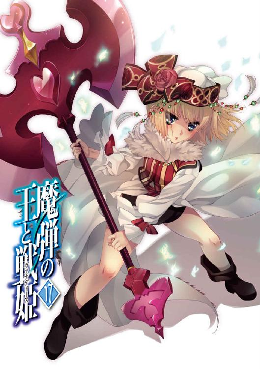
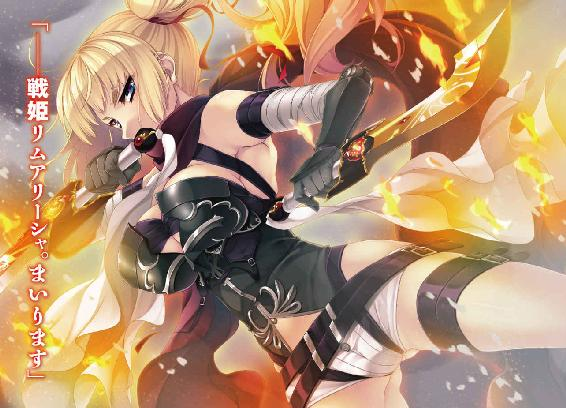
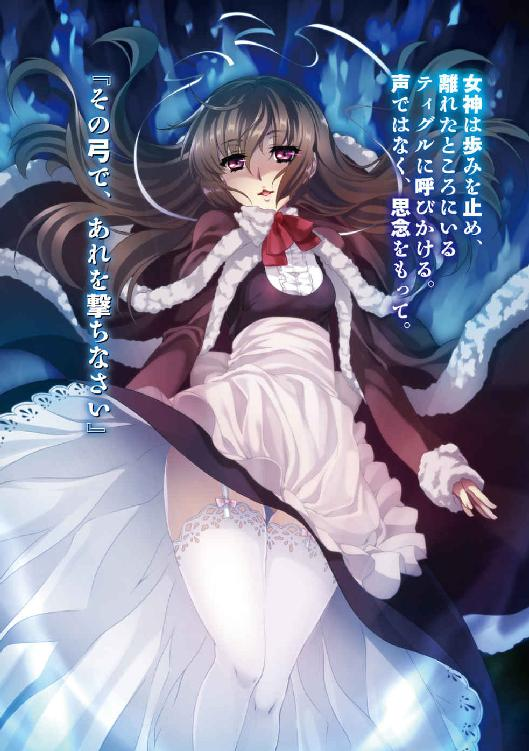
魔弾の王と戦姫17
川口 士

本作品の全部または一部を無断で複製、転載、配信、送信すること、あるいはウェブサイトへの転載等を禁止します。また、本作品の内容を無断で改変、改ざん等を行うことも禁止します。
本作品購入時にご承諾いただいた規約により、有償・無償にかかわらず本作品を第三者に譲渡することはできません。
本作品を示すサムネイルなどのイメージ画像は、再ダウンロード時に予告なく変更される場合があります。
本作品の内容は、底本発行時の取材・執筆内容にもとづきます。
本作品は縦書きでレイアウトされています。
また、ご覧になるリーディングシステムにより、表示の差が認められることがあります。
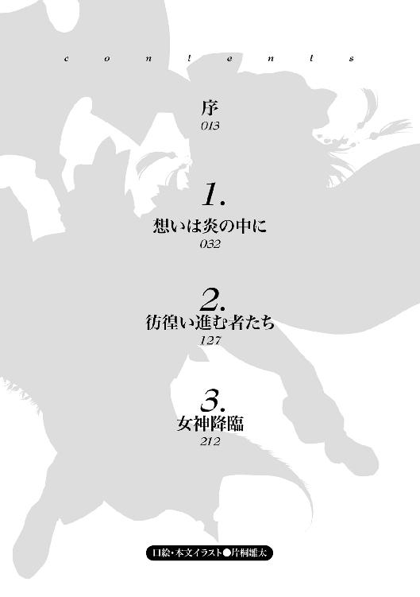
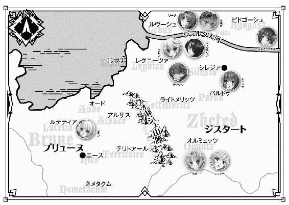
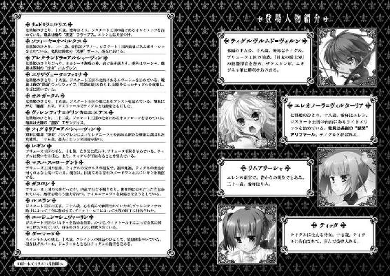
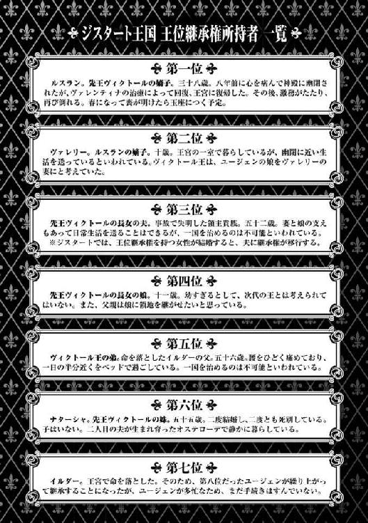
夢を見ていた
夢の中で私はあの男の傍らにあった
はるか遠くへ駆けていく男の背を私は見つめていた
私は幸せだった
序
王都シレジアの大通りから一本外れた細道の奥に、その酒場はあった。
壁にはいっぱいに咲き誇る白い花の絵が描かれ、褐色の扉には流麗な文字で「花冠」と書かれている。それがこの店の名だ。
百年近く続いている酒場ながらあまり古さを感じさせず、大勢で酒や食事を楽しむ食堂の他に、いくつかの個室がある。密談や逢い引きなどの目的でもよく利用されていた。
その若者が「花冠」を訪れたのは、日が沈んでから二刻近い時間が過ぎたころだった。若者は毛糸の帽子をかぶり、首には狐の毛皮を巻いて、厚手の外套を羽織っている。帽子と毛皮のために顔はほとんど隠れているが、寒風の吹き抜ける冬の夜の王都では一般的な格好だ。応対に出た店の者もとくに怪しまなかった。
待ち合わせの約束をしている旨を伝えると、若者は個室のひとつへと通された。
約束の相手は、すでに部屋の中にいた。緑を基調としたドレスをまとい、長い金色の髪をリボンで結いあげた美女だ。
若者の姿を見ると、彼女は顔を輝かせて椅子から立ちあがった。
「待ってたわ、ティグル。迷わなかった？」
「ソフィーが目印をたくさん教えてくれたからな。まっすぐここへ来ることができたよ」
若者が帽子を脱ぐとくすんだ赤い髪が、首に巻いていた毛皮を外すと穏やかな笑顔が現れた。彼の名はティグルヴルムド＝ヴォルン。親しい者からはティグルと呼ばれている。十八歳の若さながら、数々の戦に勝利し、母国の窮地を救った英雄だった。
もっとも、ティグル自身にその意識は薄い。彼にしてみれば、己の領地であるアルサスをはじめ大切なものを守るために奔走していたら、結果としてそうなったのであり、得られた勝利も、仲間たちの助けがあったからこそのものだと考えているからだった。
ソフィーという愛称で呼ばれた美女はティグルに歩み寄ると、彼が外套を脱ぐのを手伝った。彼女の名はソフィーヤ＝オベルタス。ジスタートに七人いる戦姫のひとりで『光華の耀姫』の異名を持つ。
ソフィーがいま身にまとっているドレスは肩を露出させ、胸元が大きく開いたもので、黒い草花の意匠が縫いこまれていた。緑柱石の首飾りが、テーブルに置かれたランプの明かりを反射して輝いている。普段、彼女が見せているものとはまた異なる美しさが、そこにはあった。ティグルは落ち着かない気分をおさえながら、どうにか賛辞を口にする。
「その、とても綺麗だ。──ありがとう」
感謝の言葉は、自分のために着飾ってくれたことに対してのものだ。感想それ自体は平凡を極限まで煮詰めたようなものだったが、真摯な想いは伝わったのだろう。ソフィーは何も言わずにティグルを抱きしめる。かすかな化粧の匂いが混じった甘やかな香りが、若者の鼻腔を刺激した。
三つ数えるほどの時間が過ぎる前に、ソフィーはそっと抱擁を解く。彼女の表情はいつになく厳しく、さきほどまでの微笑は微塵も残っていなかった。その眼差しの強さに、ティグルも気を取り直す。
「座って」と、ソフィーに勧められて、若者は椅子に腰を下ろした。
あらためて室内を見回す。あまり広くない部屋だ。壁や床は丁寧に掃除されているようだが、自分とソフィーがそれぞれ座っている椅子と、ランプや葡萄酒の瓶、陶杯が置かれたテーブル以外には何もない。壁に打ちこまれている山羊の角は、外套を引っかけておくためのもののようだ。壁が厚いのか、外の冷気が入ってこないのはありがたい。
二つの陶杯に葡萄酒を注ぐソフィーを見つめて、ティグルは尋ねた。
「明日の出発で、だいじょうぶなのか？」
ムオジネル軍侵攻の知らせがジスタートの王宮に届いたのは、今朝のことだ。ルスラン王子の代理として政務を取り仕切っているユージェン＝シェヴァーリンは、二人の戦姫──ソフィーとリュドミラ＝ルリエにムオジネル軍の撃退を命じた。ソフィーたちは命令に従い、すばやく打ち合わせをすませると、今日のうちに王都を発った、はずだった。
しかし、ソフィーはこうしてまだ王都にいる。彼女は己の公国たるポリーシャに向かったふりをして、ひそかに戻ってきたのだ。
「ええ。指示書を持たせた部下をポリーシャに走らせてあるから、問題はないわ」
指示書には、どれだけの兵をそろえてどこに集めるかということから、食糧や燃料の調達方法まで細かく書かれている。外交の使者として他国に派遣されるなど、ポリーシャを留守にすることが多いソフィーは、こうした指示書をよく使っていた。
ちなみに、指示書には独特の濃淡を持つ印が押されている。これはソフィーの竜具である『光華』を使ったもので、彼女にしか用いることのできない印というわけだった。
部下を先にポリーシャへ向かわせてまで、ソフィーが出発を遅らせた理由は二つある。
ひとつは、怪しい動きをする者がいないか、ぎりぎりまで王宮の様子を見るためだ。
王宮にもたらされた報告は、ムオジネル軍侵攻だけではない。
ジスタート北部にあるビドゴーシュの地では、ジュリアン＝クルーティスが挙兵し、北西にあるポルスの地からは、エゴール＝カザコフがユージェンの国外追放を求める文書を送ってきた。
さらに、謹慎処分となっていた戦姫ヴァレンティナ＝グリンカ＝エステスと、戦姫フィグネリア＝アルシャーヴィンが脱走している。
クルーティス家は、ジスタート北部において一、二を争う大貴族だ。カザコフ家は、先代当主だったオルゲルトが私戦を起こした挙げ句に命を落とし、多くの支持者を失望させて一気に衰えたが、それでもいまなお有力な貴族だった。
ヴァレンティナとフィグネリアについては、言うまでもない。
ジスタート王国は、まさに戦渦のただ中にあった。
ソフィーが警戒しているのは、すでに行動を起こした者ではない。これから行動を起こすだろう者や、行動を起こしつつある者だ。そうした者たちの存在をひとりでもつかむことができれば、王都に留まった甲斐は充分にあるのだった。
「話をする前に、乾杯しましょうか。安心して。子供でも飲めるものだから」
ソフィーが言って、二人は陶杯を軽く触れあわせる。口をつけると、舌先に甘みを感じた。蜂蜜などを混ぜてあるらしい。これなら一杯ぐらいで酔うことはなさそうだ。
ティグルは少しだけ葡萄酒を飲むと、陶杯をテーブルに置いた。ソフィーも同じようにして、若者をまっすぐ見つめている。
彼女が出発を遅らせたもうひとつの理由。それは誰にも知られず、ティグルと二人きりで話をするためだった。だから、ティグルのもとへひそかに使いの者を出したとき、待ち合わせの場所を彼女の屋敷ではなく、この酒場にしたのだ。
ソフィーの緑柱石の瞳に、迷うような陰りが生まれる。しかし、彼女は首を左右に振ってそれを消し去ると、意を決した表情でティグルに聞いた。
「ティグル。あなた、『魔弾の王』という言葉を聞いたことはある？」
「魔弾の王......？」
ティグルは眉をひそめたあと、記憶をさぐるように陶杯に視線を落とす。どこかで聞いたことはあったはずだが、とっさに思いだせなかった。首をひねる若者に、ソフィーは説明を付け加える。
「このジスタート王国が興るよりも前の時代の人物といわれているわ。女神から授かった弓ですべての敵を打ち倒し、王になったそうよ」
ティグルはおもわず手を打った。記憶の片隅に、ようやくその単語を発見したのだ。
「そういえば、リムが言っていたんだ。俺の黒弓を見て、不思議な弓の話を聞いたことがある、って」
二年前、ティグルがエレンことエレオノーラ＝ヴィルターリアの協力を得て、ザイアン＝テナルディエと戦ったときだった。ティグルははじめて黒弓の力を発揮させて、逃げようとするザイアンを、彼が駆っていた飛竜もろとも吹き飛ばした。
黒弓の力に感心するエレンと、驚くティグルを見ながら、リム──リムアリーシャが話してくれたのである。
「リムは他に何か言ってなかったかしら？ 魔弾の王と呼ばれた者の名前とか」
「いや。リムも、いまソフィーが話してくれた以上のことは知らなかったみたいだ」
そもそも、そのとき以来、魔弾の王なるものが話題にのぼったことはない。だからティグルもいままで忘れていたのだ。
「魔弾の王についての言い伝えを、わたくしはもうひとつ知っているの。肝心の文献はポリーシャの公宮にあるから記憶頼みになってしまうけれど、こんな感じだったわ」
ソフィーの双眸には、緊張と不安がにじんでいる。
なぜ、魔弾の王についてこれほどこだわるのか。彼女の意図をティグルは摑みかねていたが、それでもその態度にただならぬものを感じて、耳を傾けた。
「──魔弾の王は、女神の意志を地上に顕現する代行者なり。ひとならざるものを滅し、ひとを滅する者なり。王道を行き、魔道を歩み、英雄となり、魔王となる者なり」
不意に、背筋を冷気が這い上がってきたように思えて、ティグルは身震いをした。自分たちを照らすランプの明かりが、急に小さくなった気がする。いずれも錯覚だろうが、ソフィーの言葉が若者に言いしれぬ戦慄を与えたのはたしかだった。
顔をしかめて黙りこむティグルに、ソフィーは慎重な口調で切りだした。
「結論から言うわね。──魔弾の王は、あなたのことだと思うの」
意表を突かれて、ティグルは何度か瞬きをした。
笑いとばしたいところだが、ソフィーがこのような冗談を言う女性でないことはわかっている。それだけに、受けた衝撃は大きかった。
わずかな沈黙を先立たせたあと、ティグルはやや機械的な動作で陶杯に口をつける。落ち着きを取り戻すと、感情をおさえた声で尋ねた。
「どうして、そう思ったんだ？」
ティグルが真面目に聞く姿勢を見せたことに、ソフィーは申し訳なさと安堵の入り混じった表情を浮かべる。小さくうなずくと、彼女は説明をはじめた。
「まず、ティル＝ナ＝ファについて確認するわね。彼女は夜と闇と死を司る女神であり、主神たるペルクナスの妻であり、姉であり、妹であり、生涯の敵である......」
それは、ジスタートとブリューヌの民ならば子供でも知っていることだ。この二国ではペルクナスを主神とする十柱の神々が信仰されている。
「なぜ、ティル＝ナ＝ファが三つのものを司り、ペルクナスに対して妻、姉、妹という三つの立場を持っているのか。これは、あなたとティッタが突きとめてくれたわ。ティル＝ナ＝ファは三柱の女神の総称か、あるいは三柱の女神がひとつになったものであると」
一度言葉を切って、ソフィーは葡萄酒を一口飲む。喉を潤して、彼女は話を再開した。
「どちらにせよ、ティル＝ナ＝ファに三つの意志があることは間違いない。ティッタに取り憑いたティル＝ナ＝ファに、あなたが『どのティル＝ナ＝ファだ』と聞いたときの『当ててみなさい』という返答からもね。ねえ、ティグル。この女神たちの意志は、統一されたものだと思う？」
ティグルはまじまじとソフィーの顔を見つめた。考えてもみなかったことだ。
「その言い方からすると、ソフィーは違うと考えているんだな？」
「ええ。少なくとも、ティル＝ナ＝ファの意志のひとつは魔物の味方だと思うわ」
ティグルは驚きに目を瞠ったが、反論はしなかった。ソフィーの話は、まだ途中だ。最後まで聞いてから判断すべきだった。
「魔物たちの目的はこの世界を変えること。彼らはティル＝ナ＝ファの力でそれを実現させようと考えており、そのために黒弓を持つあなたをさらおうとした。これは、ブリューヌで調べものをしたときにも話しあったことよね」
ティグルはなんとなく自分の左手に視線を移す。ヴォルン家の家宝であり、長く戦場をともにしてきた黒弓は、ここにはない。夜に弓を持ち歩くのは、旅人を装ったとしても不審がられるだろうと考えて、置いてきたのだ。
「ただ、少し引っかかっていたのよ。あなたは気分を悪くするかもしれないけれど、ティル＝ナ＝ファは、あなたにかなり協力的でしょう」
「......助けられたことがあるのは認めるよ」
渋面をつくって、ティグルはそう答えた。黒弓を通じてティル＝ナ＝ファの力を借り、いくつもの危機を切り抜けてきたのは事実なのだ。
それを思えばこの女神には感謝すべきなのだが、一時的なものとはいえ、彼女がティッタの身体を乗っ取るのは、ティグルにとって許しがたいことだった。それが、助言などの形でティグルに力を貸すためだとしてもだ。とくに、ティッタに矢を放つように言ってきたあの出来事は、生涯忘れないだろうと思う。
ソフィーは苦笑を浮かべて葡萄酒の瓶を手に取ると、若者へと向けた。ティグルは陶杯を一気に呷って空にし、新たな葡萄酒を注いでもらう。
「ありがとう。続けてくれ」
「ティル＝ナ＝ファは、あなたに魔物たちの目的も教えてくれた。あなたが知れば、絶対に止めようとするはずだとわかっていて。そんな女神が、魔物たちの願いを素直に聞き入れるとは、わたくしには思えないのよ」
ティグルは唸った。たしかにソフィーの言う通りだ。ティル＝ナ＝ファに魔物たちの願いをかなえるつもりがあるのならば、ティグルに力を貸すのはおかしい。
「話が脱線するけど、ティグルはゾーリアという女神を知っているかしら？」
「いや」と、ティグルは首を横に振る。はじめて聞く名だった。
「ジスタートやブリューヌが誕生するよりも前の時代に信仰されていたらしい、極光の女神よ。ううん、女神たちといった方が正確ね。この女神たちのことは、王宮の書庫で調べものをしているときに知ったのよ」
魔物たちやティル＝ナ＝ファについて新たな情報をひとつでも摑むために、王宮の書庫での調べものは続けられていた。ソフィーは説明を続ける。
「ゾーリアは『夜明けのゾーリア』、『夕暮れのゾーリア』、『真夜中のゾーリア』の三柱からなる女神で『夜明け』はひとの守護者であり『夕暮れ』は妖の守護者であると、その書物には書かれていたわ。妖というのは妖精や小人、精霊などの総称みたい」
「ティル＝ナ＝ファによく似ているな......」
思ったことを、ティグルは率直に口にした。金髪の戦姫は微笑を浮かべる。
「昔といまとで呼び方が違うというだけで、同じ存在のことを書いているのかもしれないわね。もちろん違う可能性もあるけれど。わたくしは、ゾーリアに人間の味方と妖の味方がそれぞれいるように、ティル＝ナ＝ファもそうではないかと思ったの。あなたに協力しているティル＝ナ＝ファの他に、魔物たちに協力しているティル＝ナ＝ファがいると」
ソフィーの表情が再び真剣なものになり、瞳に深刻な陰りがにじんだ。
「そう考えたとき、ティル＝ナ＝ファと魔弾の王の記述が、わたくしの中で結びついたのよ。人間に協力的なティル＝ナ＝ファが降臨したときは、ひとならざるものを滅ぼす英雄となり、魔物たちに協力的なティル＝ナ＝ファが降臨すると、ひとを滅ぼす魔王となる。魔弾の王は、女神の意志を地上に顕現する存在だから」
沈黙の帳が室内に落ちる。ティグルは目を閉じた。ソフィーの話をあらためて頭の中でまとめ、考えに沈む。
かつて、ティル＝ナ＝ファに見せられたひとつの光景が脳裏によみがえった。
ひとりの男が黒弓に矢をつがえ、はるか遠くの大都市に向かって射放つ。視界を埋めつくすまばゆい光の中で、すべてが影すら残さずに吹き飛んだ。女神によれば、このときの使い手は、直後に命を落としたという。
あのような真似ができるのであれば、それはまさしく魔王に違いない。そして、黒弓を使い続けてきたいまの自分なら、不可能なことではないとティグルは思う。試してみようという気さえ起こらないが。
やがて、ティグルは目を開けた。
「前に、ティル＝ナ＝ファに聞いたことがあるんだ」
気遣うような表情のソフィーに、若者は穏やかな声で続けた。
「俺が黒弓を手に取ったのは、運命だったのか。俺が生まれるよりもはるか昔から、そう決まっていたのかと。──『馬鹿ね』って言われたよ」
若者は苦笑を浮かべる。室内に漂いかけていた重苦しい空気が振り払われたように、ソフィーには思われた。
「約束するよ、ソフィー。君の言う通り、俺が魔弾の王だとしても......。英雄になるかどうかはわからないが、魔王にはならない。絶対に」
ティグルの黒い瞳には、揺るぎない決意の輝きがある。その眼差しと言葉は、ソフィーの胸中にわだかまっていた不安を霧散させるのに充分だった。安堵の息をつき、目の端にかすかな涙をにじませて、ソフィーは若者に笑いかける。
「あなたは間違いなく英雄よ。わたくしにとってはね」
若者は気恥ずかしそうに肩をすくめて、くすんだ赤い髪をかきまわした。
それからソフィーは、このような時期にこの話をしたことをティグルに謝罪した。
「ごめんなさい。ティル＝ナ＝ファの話を聞いたときに、すぐ気づくべきだったわ」
ソフィーが魔弾の王について思いだしたのは、今日の昼過ぎだったという。魔物や黒弓とは関係のないことだと思いこんでいたため、気に留めずにいたのだ。
「じゃあ、まだみんなには話していないのか？」
「ええ。不安にさせるだけだと思ったから。あなたにも、話すべきかどうか迷ったの」
魔王になるかもしれないなどと不吉なことを言われれば、ティグルとて平静でいることは難しいだろう。しかし、今日のうちに言わなかったら、次の機会はずいぶんと先になってしまう。悩んだ末に、ソフィーはティグルの強さを信じることにしたのである。
「でも、いまは話してよかったと思ってるわ」
「俺もだ。ありがとう、ソフィー」
自分の意思で黒弓を摑み、自分のために力を使ってきた。黒弓がティル＝ナ＝ファと関わりのあることを知ってからも。
恐ろしい未来が待ち受けているからといって、いまさら黒弓を投げだすことなどできるはずがない。目をそらさずに向きあうべきだった。
ティグルには、彼を支え、ともに歩んでくれる者たちがいる。どのような危機が迫ろうと、必ず乗り越えられる。ティグルはそう信じることができた。
陶杯を傾けながら、ティグルは気になったことを尋ねる。
「ソフィー。俺が魔弾の王だとしたら、戦姫とはどういう関係になるんだ？」
ティグルの黒弓は、戦姫たちの竜具から力を借り受けることができる。魔弾の王と戦姫とは何らかの関係があるはずだった。若者の質問を予期していたのだろう、ソフィーはためらう様子を見せず、厳しい表情をつくって答える。
「あなたが英雄となるときは味方。魔王となるときは敵。そう考えているわ。わたくしたちに対する、魔物たちの態度を考えても」
魔物たちは、戦姫を竜具で呼んでいた。ソフィーの場合であれば『杖』または『光華の主』というふうに。
彼らは何十、何百年もの間、戦姫と戦い続け、因縁の敵といいながらも、厄介な邪魔者以上の存在とは考えていない節が見られた。
「戦姫はこれまでにも彼らと戦い、その目的を阻んできたわ。だから、魔弾の王が魔物たちと戦うときは味方となり、逆に魔弾の王が彼らの側についてしまったときは......」
「そう聞くと、ますます魔王なんていうものにはなれないな」
ティグルはおおげさに肩をすくめた。エレオノーラ＝ヴィルターリア、リュドミラ＝ルリエ、ソフィーヤ＝オベルタス、エリザヴェータ＝フォミナ、オルガ＝タム。五人ともティグルにとっては大切な存在だ。彼女たちに矢を向けることなど考えたくもなかった。
「そうね。でも、あなたならきっとだいじょうぶよ」
不安を払拭した笑みを浮かべて、ソフィーは若者を激励する。ティグルの決意が、彼女に自信と勇気を与えていた。ふと何かを思いついたのか、ソフィーは緑柱石の瞳を輝かせて身を乗りだす。
「ねえ、ティグル。落ち着いたら、わたくしといっしょにどこかへ出かけましょう」
「どこか、って？」
ソフィーの唐突な申し出に、ティグルは戸惑いながらも尋ねる。
「あなたとなら、どこでもいいのだけど......。そうね、あなたの狩りに同行させてちょうだい。狩りはやったことないけれど、こう見えても体力には自信あるのよ。山でも森でもつきあえるわ」
「それはかまわないが、どうしたんだ、突然」
そう言いながらも、ティグルはソフィーの案を楽しそうだと思いはじめていた。ソフィーは小首をかしげて、茶目っ気たっぷりに笑ってみせる。
「ご褒美があると、いつもより頑張る気になるでしょう」
ティグルは少し困ったように、くすんだ赤い髪をかきまわした。とはいえ、ソフィーに何かと助けてもらっていることはたしかであり、何か礼をしたいとは思っていたのだ。ちょうどいい機会かもしれない。
「わかった。冬の間はおたがい忙しいだろうから、春になったらどこかへ行こう。ただ、エレンとティッタには前もって話しておく」
「ええ。わたくしからも、その二人にはちゃんと言っておくわ」
ソフィーは笑顔で答える。彼女としても、むやみにことを荒立てようとは思わない。ティグルは「お手柔らかに頼む」と、苦笑を浮かべるのが精一杯だった。
街道の脇に広がる草原からささやくような声が聞こえて、ティグルヴルムド＝ヴォルンはおもわずそちらに視線を向けた。
むろん、そこにひとの姿は見当たらない。冬とあって草はまばらで、丈も短い。姿を隠せそうな木などもない。もしもひとがいれば、わからないはずはないのだ。
だが、ティグルは気のせいだとは思わなかった。その声はどこか面白がるような調子で「弓」と言っていたからだ。ここ数日の間に、若者はこのような体験を何度もしていた。
いま、ティグルは王都シレジアと、ジスタートの北西に位置するルヴーシュ公国を結ぶ街道を進んでいる。旅装に身を包み、馬にまたがっていた。鞍の後ろには、旅に必要な道具や食糧、水、燃料などを詰めこんだ荷袋が載っている。
連れと呼べるのは馬だけで、供の者はひとりもいない。
ティグルが孤独な旅をしているのには、理由があった。マクシミリアン＝ベンヌッサ＝ガヌロンに脅されたのである。
「ルヴーシュの南東にあるザガンの地に、ただひとりで来い。もし従わぬ場合は、パルドゥ伯爵ユージェン＝シェヴァーリンを殺害する」と。
むろん、ユージェンの周囲には彼を守る多くの兵がいる。だが、ガヌロンにとって、彼らは何の障害にもなり得ないに違いない。
ガヌロンには魔物を喰らい、己の体内に取りこむ力があるのだと、ヴァレンティナは言っていた。その力をもってすれば、ユージェンを殺害することなど造作もないだろう。
いま、ユージェンが命を落とせば、ジスタート王国は混乱と暴走の激流に突き落とされて、多くの命が失われる。そのような事態を招いてはならなかった。
エレンはフィグネリアと戦うために兵を動かし、ミラ──リュドミラ＝ルリエとソフィーの二人は、ムオジネル軍を撃退するべく南へ向かっている。リーザ──エリザヴェータ＝フォミナとオルガは、よからぬ動きを見せているポルス伯爵カザコフを牽制するためにルヴーシュへ戻っていた。
このような状況でティグルがユージェンを守ろうとすれば、ガヌロンの要求に従う他はなかった。
──ザガンか。
数百年前、ザガンの地では古い時代の神々が祀られていたという。
ガヌロンは魔物たちの目的を受け継いで、ティル＝ナ＝ファを降臨させ、世界を作りかえようとしている。ザガンで、彼はそれを行うつもりなのだろう。
いま、ジスタートの各地で起きているさまざまな異変や、自分の耳に聞こえているささやき声などから考えると、ガヌロンは順調に準備を整えているのに違いなかった。
「それにしても、面倒な場所を選んでくれたな」
おもわず悪態が口をつく。地図で場所を調べたときにはわからなかったが、王都からザガンへまっすぐ向かおうとすると、街道を外れて山の中に入ったり、荒野を進んだりしなければならず、想像以上に時間がかかるのだ。
だが、北や西から迂回することはできなかった。ビドゴーシュや、フィグネリアの治めるレグニーツァを通ることになるからだ。そのような危険はとうてい冒せない。
また、ティグルは遠くに野盗の集団を見かけたら、遠回りになったとしても避けて進んでいた。さすがにひとりで数十人もの野盗を蹴散らせるとは思っていないし、そんな余裕もないからだ。矢も、できるだけ使わずにとっておきたかった。
そのようなわけで、王都を発ってから九日が過ぎているのに、まだティグルは半分ほどの道のりしか進んでいなかった。
ふと、ティグルは頭に冷たい感触を覚えた。それが舞い落ちてきた雪だということに気づくと、恨めしそうに灰色の空を見上げて、フードを深くかぶる。
──今夜は、野営はできそうにないな。
この雪がすぐにやんだとしても、地表を這う冷気は留まり続ける。日が傾けば、寒さは増すだろう。厚手の外套と焚き火だけで一夜を明かすのは、できれば避けたいところだった。熱を奪われて体力を消耗するし、動きも鈍くなってしまう。
ティグルはエレンのことを考える。彼女はいまごろ、フィグネリアと戦うためにレグニーツァにいるはずだ。彼女のところにも雪は降っているのだろうか。
「無事でいてくれ、エレン」
戦士としての彼女の強さを、ティグルはよく知っている。だが、フィグネリアもまた尋常でない力量の持ち主だ。苦戦ではすまないかもしれない。
恋人のために祈りながら、ティグルは馬を進ませていった。
１ 想いは炎の中に
ボロスローの野は、レグニーツァ公国の北東にある。
この地に雪が降りだしたのは、戦がはじまってからだった。雲に隠れている太陽が中天にたどりつくまでに、あと一刻はかかるだろうというころだ。
戦っているのは、ともにジスタート王国の軍だ。『銀閃の風姫』エレオノーラ＝ヴィルターリアに率いられたライトメリッツ軍と『煌炎の朧姫』フィグネリア＝アルシャーヴィンに従うレグニーツァ軍が、剣を振るい、槍をかざしてぶつかりあっていた。
風を受けてひるがえるのは、ジスタート王国の黒竜旗。
そして、黒地に銀の剣を斜めに描いたライトメリッツ公国の軍旗と、黄地に交差する二本の刃を描いたレグニーツァ公国の軍旗だった。
兵の数は、おたがいに約四千。冬の冷気を怒号と熱気で猛々しく吹き散らして、彼らは目の前の敵に手斧を叩きつけ、盾で殴りつけた。地面を埋めていく死体の上に雪が舞い落ちて、流れでる血を静かに凍りつかせていく。
血と泥にまみれながら彼らが戦場に立っているのは、主のためだった。
エレンもフィグネリアも、当然ながら戦う前に己の正義を兵たちに説いている。だが、その正義を信じたから従っているという者はごくわずかといってよい。
自分たちの主に勝利を捧げたい。その想いこそが、彼らの戦う理由であった。それゆえにどちらも戦意は高く、一進一退の状況が続いている。
戦場の中央には、いびつな円形の空間が生まれていた。そこには二人の戦姫と、ひとりの騎士がいる。エレン、フィグネリア、そしてエレンの副官を務めるリムだ。
二人の戦姫は竜具を手に、激しい攻防を繰り広げていた。
刃が激突するたびに火花が飛散し、雪に反射して虹色に輝く。風が唸り、火の粉が舞って、大気の焼き焦げる匂いが二人の鼻をついた。
まともな戦ならば、両軍の総指揮官同士が一騎打ちを行うような事態は起こりえない。だが、戦姫同士の戦いとなれば事情が異なる。敵将たる戦姫を野放しにしておけば、兵に甚大な被害が出るからだ。ごく希少な例外を除けば、戦姫と正面から戦えるのは、同じ戦姫しかいなかった。
また、エレンとフィグネリアの間には、因縁がある。エレンの育ての親であるヴィッサリオンを、フィグネリアが斬ったのだ。それらの要素が、二人の戦いを実現させた。
エレンは十八歳。腰まで届く白銀の髪は泥に汚れ、左の脇腹には深い傷を負っている。そこから流れでる血は、青い軍衣のスカートを赤黒く染めていた。他にもいくつもの傷が彼女の身体にはあったが、紅玉の瞳は戦意に満ちて、まっすぐ敵将を見据えている。
フィグネリアは、エレンより七つ年長の二十五歳。長い黒髪と、静けさを湛えた黒い瞳の持ち主で、隼の衣装を縫いこんだ黒衣をまとっている。豪胆な者でも怯んで目をそらすだろうエレンの眼差しを、彼女は顔色ひとつ変えずに平然と受け止めていた。
そして、リムは二人から数歩離れたところに立っている。彼女は二十一歳。艶のない金色の髪を頭の左側で結び、青い軍衣に長身を包んで、長剣を握りしめていた。フィグネリアを見つめる青い瞳には、かすかな緊張がうかがえる。
この戦において、リムはエレンに代わって、ライトメリッツ軍の指揮を執ることになっていた。だが、彼女は戦がはじまる直前にその役割をルーリックに任せ、エレンのもとへ急行したのだ。リムのおもいきった行動がなければ、戦姫同士の戦いは、いまごろフィグネリアの勝利で幕を閉じていただろう。
何度目かの衝突のあと、エレンとフィグネリアは飛び退って距離をとった。呼吸を整えて、相手の様子をうかがう。
「ともに歩み、ともに勝つんだ、か......」
フィグネリアがつぶやいた。それは、さきほどエレンが発した言葉だ。冷淡な輝きを帯びた黒い瞳が、彼女の正面にいるエレンからリムへと滑る。
戦士としてのリムの強さは、それなりだろうというのがフィグネリアの評価だ。決して弱くはない。だが、自分には及ばない。彼女がエレンと二人がかりで挑んでこようと、勝てる自信がフィグネリアにはあった。
──いや、過信はよくないな。
技量において相手を圧倒しながら、一滴の雨が目に飛びこんだという不運に見舞われて命を落とした戦士の話を、フィグネリアは知っている。彼女自身、幸運によって命をつないだことは何度もある。油断するべきではなかった。
──ひとりずつ確実に仕留める。
フィグネリアはエレンに視線を戻す。彼女の両手に握られた小剣が、使い手の戦意を感じとって刃に炎を走らせた。『討鬼の双刃』バルグレン。炎を操る力を持ち、黄金の刃と朱色の刃とで一対になっている彼女の竜具だ。
エレンもまた、手に持っている長剣に風をまとわせる。『降魔の斬輝』アリファール。風を操る力を備えた、彼女の相棒だった。
エレンとフィグネリアが、同時に大地を蹴る。刃音を響かせて、二人の戦姫は正面から激しく斬り結んだ。アリファールの巻き起こす風が二人の髪を巻きあげ、バルグレンから放たれる炎が二人の顔を赤く染める。風と炎はおたがいを吞みこまんと荒れ狂った。
一合、また一合と刃の応酬を続けるうちに、エレンの戦い方がさきほどまでのものとは違うことに、フィグネリアは気づいた。
差し違えてでも相手を倒すという気迫があった苛烈な剣勢はやや落ち着き、フィグネリアを誘うような動きや、手や足を狙った手堅い攻めが増えている。
──脇腹の傷をかばっているのかと思ったが。
そうではない。黒髪の戦姫は、視界の端に映るリムを一瞥する。
エレンは、フィグネリアに隙をつくることを自分の役割と定めたのだ。戦姫といえど、生身の人間であることに変わりはない。斬られたり、突かれたりすれば死ぬ。
──たしかにリムなら、私を恐れずに向かってくるだろうな。
エレンを助けたときも、馬に乗っていたとはいえ、フィグネリアに斬られることを覚悟の上で彼女は飛びこんできたのだ。多少の威嚇では怯みもしないだろう。
竜具を撃ちかわしながら、二人の戦姫はどちらからともなく離れた。フィグネリアは何気なさを装って、右へ数歩ばかり位置をずらす。
エレンが長剣をかまえて、前へ一歩踏みだした。フィグネリアも左右の小剣を握り直して彼女に相対する。二人は慎重に間合いを詰めていき、ある瞬間に地面を蹴った。
フィグネリアが双剣をかまえながらまっすぐ突き進んだのに対し、エレンは高々と跳躍して、黒髪の戦姫の頭上にその身を躍らせる。アリファールの力によるものだ。
気合いの叫びとともに、エレンが空中から斬りかかった。フィグネリアは冷静に、双剣の刃から炎を放射状に放つ。このていどで相手を撃退できるとは思っていない。牽制のつもりだった。
次の瞬間、二人の間に旋風が巻き起こる。紅蓮の炎はエレンに届く前に、風の刃によって散り散りに引き裂かれた。無数の炎の破片がフィグネリアに落ちかかる。
フィグネリアは左腕で頭部をかばいながら、飛びこんでくるであろうエレンを迎え撃つために、右手の小剣をかまえた。しかし、彼女の視線の先にエレンの姿はない。
──後ろ。
頰と耳とで、フィグネリアはかすかな風の変化を捉えた。左手の小剣で空間を斜めに斬り裂き、かつ焼き払いながら、彼女は身体をひねって背後を振り返る。
鋭く突きこまれた白銀の切っ先がフィグネリアの首筋をかすめ、左肩を浅く斬った。もしもフィグネリアが左腕で頭部をかばっておらず、その動きが一瞬でも遅かったら、長剣の刃は彼女の口から後頭部へと抜けていただろう。
フィグネリアが反撃するよりも速く風が動いて、彼女の頭上を影が通過する。黒髪の戦姫の間合いの外に、エレンが降り立った。
「いい一撃だった」
フィグネリアは素直にエレンを賞賛する。
エレンは旋風で炎を吹き散らして、そのまま飛びこんでくるように思わせながら、間髪を入れず空中で方向を変えてフィグネリアの背後へ回りこんだのだ。そして、フィグネリアの斬撃と炎をかわしながら一撃を与え、すばやく離れたのである。
「嫌味か」
エレンは凶悪な笑みを浮かべて、短く吐き捨てる。左脇腹の傷が痛むのを隠すための表情だった。内心で、彼女は悪態をつく。
──こちらの狙いに気づいていたか。
ぶつかりあう直前に、フィグネリアは横へ動いた。彼女とエレンとリムが、直線状に立つように調整したのだ。リムはエレンの後ろに立つ形となり、フィグネリアに斬りかかろうとすれば、右か左へ回りこまなければならなくなった。
他の者ならばともかく、フィグネリアを相手にそのような手間を踏んでいては、確実に対処されてしまう。だからリムは動かなかったのだ。
──だが、そのような手をとるということは、リムを警戒している証拠だ。
自分とリムとに注意が分散すれば、隙も生まれやすくなるだろう。エレンはひとつ深呼吸をして、意識を切り替える。長剣がゆるやかに弧を描き、風がその軌跡をなぞった。
「──風影」
エレンの全身に風がまとわりつく。白銀の髪が浮きあがり、軍衣の裾が激しく震えた。地面を蹴るというよりも滑るように、銀閃の風姫は煌炎の朧姫に向かっていく。
「──陽炎」
フィグネリアはその場から動かず、胸の前で黄金の刃と朱色の刃を交差させる。小剣のまとう炎が周囲の大気を熱し、フィグネリアの姿が奇妙に揺らぎ、霞んだ。
エレンは跳躍しながら、フィグネリアの足元に強烈な風の一撃を叩きつける。硬い音とともに地面がえぐられ、小石や土塊がまき散らされた。それを見て、エレンはフィグネリアの正確な位置をつかむ。
刃を閃かせて、エレンはフィグネリアに躍りかかった。フィグネリアは右手に持った黄金の刃で、斬撃を受け流す。
エレンはそれ以上固執せずにすばやく離れると、今度は彼女の左側へ回りこむように動きながら、姿勢を低くして斬りかかった。
フィグネリアが小剣から炎を放って牽制すると、エレンはその炎を乗り越えて、空中から距離を詰める。そのまま斬りかかるかと思いきや、左手にある土塊を勢いよく投げつけた。姿勢を低くしたときに、地面からすくっておいたのだ。
フィグネリアは左手で顔をかばって土塊をやり過ごしながら、大きく横へ跳んで、続けざまに放たれた斬撃をかわした。
「まるで蠅だな。うっとうしい」
「せめて蜂と呼んでほしいものだな。こちらには針がある」
皮肉に挑発で返しながら、エレンは長剣で己の肩を叩く。その目は、油断なくフィグネリアの様子をさぐっていた。どう攻めれば、隙をつくることができるのか。
不意に、フィグネリアが前へ出た。両手を広げるように双剣を握りしめて、正面からエレンに向かってくる。彼女の黒衣に縫いこまれた隼を思わせるほど、その動きは速く、鋭かった。エレンは表情を引き締めて、黒髪の戦姫を迎え撃つ。
まず両者の戦意が激突し、次いで三本の刃が火花を散らした。フィグネリアは両手を振りあげて、小剣を二本ともエレンに叩きこんできたのだ。エレンはアリファールを水平に持って、おそるべき殺意の刃を受け止めた。
フィグネリアの戦い方は、まさに猛攻と呼ぶべきものだった。自分の間合い以上に前へ出て、間断なく二本の小剣で突きこみ、斬りつけてくる。身を守ることなど考えていないかのような無謀さだった。炎はまったく使わない。
エレンも同じく風の力を使わず、剣技と体術だけでフィグネリアに対抗した。斬撃を長剣で受け流し、弾き返し、致命傷だけは避けるように身体をひねる。一瞬の隙を突いて斬りつける。刃音に刃音が重なり、軍衣の裾が斬り裂かれ、腕や脚に傷跡が走った。
一瞬ごとに、二人の戦姫の身体には小さな傷が増えていく。
フィグネリアが炎に頼らないのは、自分の風を警戒してのことだろうとエレンは見抜いた。これだけの近さで炎を放ったとして、もしも風によってねじ曲げられれば、彼女の視界が遮られる。火傷を負う可能性もあるだろう。フィグネリアが生みだした炎ではあっても、風の力がそこに加わっているのだから。
──しかし、何が狙いだ。リムの行動を封じる気か？
ここまで両者が接近していると、たとえフィグネリアに隙が生じてもリムは斬りかかれない。誤ってエレンに斬りつける恐れがあるし、攻防の中でフィグネリアとエレンが位置を入れ替えるかもしれないからだ。
「戦場の鉄則を覚えているか」
双剣を力任せに押しこみながら、黒髪の戦姫が口を開いた。二色の刃を長剣で懸命に受け止めながら、エレンは訝しげな顔でフィグネリアの顔を見る。かつて、乱刃のフィーネと呼ばれたこともある黒衣の戦士は続けた。
「弱い敵から先に倒せ」
言い終えるのと同時に、フィグネリアが双剣を引いて後ろへ飛び退る。エレンは体勢を崩しかけて、とっさに長剣を横に薙いだ。白刃は空を切る。
そうして白銀の髪の戦姫から距離をとったフィグネリアは、黒衣をひるがえした。リムに向かって駆けだす。エレンは目を瞠った。顔から血の気が引いて、青ざめる。
フィグネリアがエレンを果敢に攻めたてていたのは、真の狙いを隠すためだったのだ。戦姫でない者が、正面から戦姫と戦って勝てるはずがない。斬撃を一度か二度、防ぐことができたとしても、炎はどうにもならない。
「リム！」
叫んだときには、エレンは風をまとって走りだしていた。驚くほどの速さでフィグネリアに追いすがり、銀閃を振りあげる。
フィグネリアが地面を蹴りつけるようにして足を止め、こちらを振り返ったのは、まさにその瞬間だった。罠にかかった獲物を見る猟師の目を、彼女はしていた。
エレンが長剣を叩きつける。フィグネリアは左手の小剣でその一撃を弾き返すと、身体を傾けながら右脚を勢いよく振りあげ、エレンに蹴りを放った。
エレンは身体をひねって、フィグネリアの蹴りをかわそうと試みる。だが、勢いがつきすぎているこの状態で、完全に避けることは不可能だった。フィグネリアの靴先が左脇腹の傷をかすめる。エレンの口から苦痛の呻きが漏れ、白銀の髪の戦姫は体勢を崩した。
「──突火槍列」
フィグネリアが、右手の小剣を下から上へと振り抜く。黄金の刃が煌めきを放ち、地面から何本もの火柱が猛々しく噴きあがって、エレンの身体を包みこんだ。
「エレオノーラ様！」
リムが悲痛な叫びをあげる。彼女はしかし、駆けだそうとしたところでフィグネリアに睨みつけられ、足を止めた。エレンのことを思うと気が気でないが、このまま無策で飛びこんでも斬り伏せられるだけなのは明白だ。何か手を考えなければいけなかった。
火柱が消えて、エレンは背中から地面に落ちる。
白銀の髪の戦姫は、身体中に火傷を負っていた。全身を焼かれたにもかかわらず、致命傷に至っていないのは、アリファールが風の力で彼女を守ったためだろう。
エレンは銀閃こそ手放していなかったが、苦しげに息をしながら、輝きの欠けた目でぼんやりと空を見上げていた。全身が痛みを訴えている。とくに左脇腹の傷が。
立ちあがるだけの体力と気力を、エレンは失っていた。
「弱い敵というのは、おまえのことだ」
遠くから、フィグネリアの冷ややかな声が聞こえた。
黒髪の戦姫の狙いは、最初からエレンだった。リムだと思わせることでエレンから冷静さを奪い、誘いこんだのだ。自分はまんまとそれに引っかかった。
──負けた。
戦士としても。戦姫としても。完膚なきまでに叩き潰された。
意識の片隅では、自分を叱咤する声がある。自分を信じて従っている兵たちを見捨てるのか。苦楽をともにしてきた親友を見殺しにするのか。さきほど大言壮語を吐いたばかりではないか。ともに歩み、ともに勝つんだと言ったのはおまえではないか。
遠くにいる戦友を、想い人を、悲しませていいのか。夢をここで終わらせてしまっていいのか。先に逝ってしまった者たちに、どんな顔をして会おうというんだ。
わかっていると、その声に答える。だが、身体に力が入らないんだ。
声は、なおも言い募った。仇を討てなくていいのか。
育ての父の姿が、不鮮明な形で頭の中に浮かぶ。
ヴィッサリオン。傭兵団『白銀の疾風』の長であり、自分を拾い、育ててくれた男。五年前に、戦場でフィグネリアに斬られて命を落とした。
──ごめん、ヴィッサリオン。
国作りはここで終わってしまう。育ての父の夢を、かなえることができなかった。仇を討つこともできなかった。どんなささやかなことでもいいから、彼を喜ばせるような、そんな報告がしたかった。
──いや......。
エレンは思いだす。何かあったはずだ。ヴィッサリオンが自分に望んでいたことが。
情けなくなった。そんな大切なことが思いだせないなんて。
ヴィッサリオンとの最後の会話は、何だったろうか。
そんな場合ではないとわかっていながら、エレンの思考はそこから離れなかった。
あの日の戦場は、敵軍に勢いがあったために序盤から多忙だった。必要なこと以外に言葉をかわす余裕がなかった。負け戦だったので、ヴィッサリオンは『白銀の疾風』の指揮を執るのに最後まで忙しかった。
フィグネリアと戦って、斬られたときもそうだ。フィグネリアが去ったあと、エレンとリムは地面に倒れたままのヴィッサリオンを抱き起こしたのだが、すでに息絶えていた。
エレンの脳裏に、そのときの情景が浮かぶ。自分たちに背を向けて去っていくフィグネリアは、なぜか左右の手に煌炎を握りしめていた。記憶が混乱している。
──バルグレン。おまえはどうして、サーシャの次にフィグネリアを選んだ。
自分の相棒でもない竜具に、一方的な恨み言をぶつけた。
サーシャ。アレクサンドラ＝アルシャーヴィン。エレンの親友であり、病で命を落とした先代の煌炎の朧姫。穏やかさと強さを秘めた黒い瞳と、儚さを含んだ微笑を、エレンはいまでも鮮明に思いだすことができる。
彼女がひそかに抱いていた夢を、エレンは託された。
本当にもう立ち上がれないのかと、声がする。
すべてを出しきっていないだろうと、呼びかけてくる。
意識の奥底で、サーシャとヴィッサリオンが並んでこちらを見つめている。二人とも、信頼に満ちた優しい笑みを浮かべていた。
そのとき、足音が近づいてきて、エレンを唐突に現実に引き戻す。
フィグネリアだ。自分にとどめを刺しにきたのだろう。息の根を止めるまで相手が死んだと思うな。昔、彼女が教えてくれた戦場の鉄則のひとつだ。ゆっくりと近づいているようだが、距離を縮めながらこちらの様子をさぐっているのだろうか。
頭上に影が差して、足音が止まる。わずかに目を開けると、フィグネリアが自分を見下ろしていた。彼女がかまえた小剣の刃が黄金色の炎をまとう。
彼女がまさに炎を放とうとした瞬間、エレンは勢いよく身体を起こして銀閃をフィグネリアに突きだした。長剣の切っ先から巻き起こった風が、フィグネリアの炎を激しくゆらめかせ、削りとる。黒髪の戦姫はすばやく後ろへ飛び退った。
「ぐ、うっ......ぁっ......」
苦痛の呻きを漏らして、エレンはその場にうずくまる。全身を襲う痛みに顔を歪めながら、彼女は自分のとった行動に驚いていた。
──動けた......？
さきほどまでは、本当に指一本動かすことすらできなかったのに。死を目前にして、生きることを求める本能が、身体を突き動かしたのだろうか。
それとも、サーシャやヴィッサリオンが、まだ早いと言ってくれているのか。
懸命に顔を上げると、フィグネリアが黒い瞳にかすかな驚きをにじませ、こちらを警戒しているのが見えた。リムは喜びのあまり泣きだしそうな顔をしている。
──私のところへ来て、よかった。
もしもフィグネリアがエレンを放って、リムを倒しに向かっていたら、取り返しのつかない事態が起きていたかもしれない。心の底から、戦場の鉄則に感謝した。
──しかし、あの二人が並んで私の前に立つとは。
まだ意識が不鮮明だからだろうか。戦とは関係のない無益な思考に、エレンは身を委ねる。サーシャとヴィッサリオン。エレンにとって大切な二人には違いないが、それ以外には何の接点も、共通項もないというのに。
そこまで考えて、エレンは思いだした。ヴィッサリオンが自分に望んでいたことを。
紅玉の瞳に、わずかながら輝きが戻る。口元がかすかに緩んだ。肩や手に落ちて溶ける小さな雪の冷たさを、感じることができた。
どうしていままで忘れていたのだろうと思いつつ、忘れていて当然だとも思った。あのころは毎日のように言われていて、半ば聞き流すことが習慣化していたのだから。
それに、ヴィッサリオンのことを考えると、まず彼の死が思いだされてしまうので、よほどのことでなければ思いださないようにしていたということもあった。
唇の端を強く嚙んで、エレンは濁りかけていた意識を覚醒させる。地面を引っかいた。
──まだ、やれるだろうか。
銀閃を握っている右手。その指の一本一本に、力をこめる。握りしめると、アリファールが激励するように、ささやかな風を起こしてエレンの身体を包みこんだ。
「情けないところを見せて、すまなかったな......」
かすれた声を絞りだして、竜具に詫びる。さきほどまでの自分が恥ずかしくなった。
少しばかりいいように叩きのめされて、自己憐憫に浸っていただけではないか。
まだ生きている。手も足もある。痛みはあるが、身体も動く。何より、自分はまだすべての力を出しきっていない。
そんなことで、ヴィッサリオンやサーシャに顔向けできるはずがない。
身体にまとわりつく風の助けを借りて、エレンは立ちあがる。
フィグネリアを見据えて、ゆっくりと息を吸い、吐いた。気を抜けば、身体中の痛みで倒れてしまいそうだ。そんな醜態は見せられなかった。
「よく立ちあがることができたな」
フィグネリアは感心したように言った。エレンは口の端を吊り上げて、強気な笑みを浮かべてみせる。
「ヴィッサリオンのことを思いだしてな」
フィグネリアの眉がわずかに動いた。淡々とした口調で、黒髪の戦姫は挑発する。
「仇を討たなければ、あの世で合わせる顔がないというわけか」
「いや、違う」と、エレンは首を横に振った。
「ヴィッサリオンの望みをかなえてやらないと、いつかあの世で会ったときに、何を言われるかわかったものではない。そう思うと、立ちあがるしかなかった」
「......国をつくる夢のことか」
「そのことじゃない」
エレンは明快に否定すると、不満を露わにした表情でフィグネリアを睨みつける。
「いまだから言うが、その夢については、おまえがうらやましかった。ヴィッサリオンが自分からその話をする相手は、おまえだけだったからな。私もリムも、聞きたいとねだれば話してもらえたが、ヴィッサリオンから話してくれたことはついになかった」
エレンの台詞を聞いたフィグネリアは、意外だったというふうに目を細めた。
だが、考えてみれば当然のことだ。ヴィッサリオンが死んだとき、エレンは十三歳、リムは十六歳だ。ヴィッサリオンが二人の少女を大切に思い、可愛がっていたことは間違いないが、いくらエレンたちが聞きたがったとはいえ、自分の夢を真面目に語り、相談する相手として捉えるはずがなかった。
ヴィッサリオンの夢は、エレンが、彼から託されたものではない。自分の意思で、受け継ぐと決めたものだった。ヴィッサリオンがエレンに望んでいたものは、もっと違う。
「脱線したな。話を戻そう」と、呼吸を整えながら、エレンは話を続ける。
ヴィッサリオンの名を出せば反応するかもしれないと思ったが、予想通りだった。小さなころの嫉妬を語ってまで思い出話を続けているのは、時間を稼ぐためだ。長剣を握る手に、大地を踏みしめる足に、ほんのわずかでも力を蓄えたかった。
「ヴィッサリオンの望みはな──」
もったいぶるように、わざと一呼吸分の間を置いてから、エレンは続けた。
「私とリムがいい男を見つけて、結ばれて、元気な子を産むことだった。よほど気がかりだったのか、毎日のように言われたものだ。あの日の朝もな」
硬質の沈黙が、二人の戦姫の間に横たわる。それを破ったのは、フィグネリアの短い笑声だった。
「あいつらしい」
育ての親としての愛情があれば、傭兵などという明日をも知れぬ道を歩み続けてほしいとは思わないだろう。『白銀の疾風』には雑用係として何人か女性がいたが、彼女たちの中には恋人をつくり、結ばれて傭兵団を抜けた者もいた。
「それからもうひとつ。私は大切な親友の願いを受け継いだ」
子供を産みたかった。サーシャはそう言って、この世を去った。
彼女が託してくれた願いが、ヴィッサリオンとの最後の会話を思いださせてくれた。
「ヴィッサリオンの望みを、親友の願いを、私はかなえてやりたい。だから、こんなところでおまえに命をくれてやるわけにはいかないんだ」
雪は依然として、戦場に降り続けている。
必殺の竜技を繰りだす時機をさぐりながら、二人の戦姫は慎重に距離を詰めていった。
「そういえば、まだ聞いていなかったな」
ふと思いだしたというふうに、フィグネリアが口を開く。
「ヴィッサリオンの夢は、かなえられたか」
エレンは瞬きをして、訝しげにフィグネリアを見つめた。それは、このような血なまぐさい状況でなされる問いかけではなかった。だが、フィグネリアの黒い瞳にも、その声音にも敵意は感じられず、何らかの意図を隠し持っているようには思えなかった。
──思いだした。公宮でも聞いてきたな。
まだ冬になる前、エレンたちがブリューヌから海路を通ってジスタートに帰還したときのことだ。立ち寄ったレグニーツァの公宮で、エレンはフィグネリアと思いがけぬ再会を果たしたのだ。そのときも、フィグネリアはこの質問をぶつけてきた。
ここが戦場であることと、二人の間に横たわる因縁を考えれば、エレンは斬撃をこそ返答としてもよかっただろう。実際、公宮では、そうしようとしていたのだ。
だが、エレンは少しの間考えを巡らせたあと、真摯な表情をフィグネリアに向けた。
「ヴィッサリオンの夢は、いまは私の夢の中にある」
紅玉の瞳を凛とした輝きで満たして、白銀の髪の戦姫は続ける。
「私の考えは、あのときといまとではずいぶん違う。昔の私の考えが粗雑で未熟だったということは、もちろんある。だが、それだけじゃない。たくさんの新たな出会いが、国作りに対する私の考えをよい方へと変えてくれたんだ」
ライトメリッツの民と兵。サーシャやソフィーといった戦姫たち。自分とリムに礼儀作法を教えてくれたユージェン＝シェヴァーリン。
そして、異国の小貴族ながら、父の遺志をしっかりと受け継いでアルサスを治めていたティグルヴルムド＝ヴォルン。誰からも、統治者として学ぶことがたくさんあった。
「皆が飢えることなく、獣や野盗に怯えず、寒さを乗り切ることもできて、ひとの行き来が盛んで、誰もが笑って暮らせる......。ヴィッサリオンのその考えが、私の夢の中心に据えられているのはたしかだ。だが、ヴィッサリオンの夢そのものにはならない。私の夢は私のものだ。目指すところがヴィッサリオンの夢と同じだとしても」
夢は、それを抱く者によって日々、形を変えていく。ときに現実に合わせ、ときに新たな知識や知恵を詰めこみ、新たな出会いや発見をもたらされることによって。
「私はヴィッサリオンのことを忘れない。ヴィッサリオンから受けとったたくさんの考えと、想いを。でも、そこに私を加えていく」
エレンはアリファールをまっすぐ掲げる。刀身が青白い光を帯び、風が刃に巻きついて渦となった。風に吸いこまれていく雪によって、白い螺旋が虚空に浮かびあがる。
「それがおまえの夢か。──よくわかった」
フィグネリアも、顔の前で交差させるようにバルグレンをかまえた。黄金の刃からは金色の炎が、朱色の刃からは紅蓮の炎がそれぞれほとばしって空中に弧を描く。一瞬ごとに刃は輝きを増し、炎は勢いを増した。
私にも夢がある。声には出さず、フィグネリアはつぶやいた。他国の領土を積極的に攻めることで兵を鍛え、富を奪い、領地を拡大して繁栄を築く。反撃などさせない。
自分がいつか死んだとして、ヴィッサリオンに合わせる顔などすでにない。だが、この夢を貫くことができなければ、彼の魂に語る言葉すらなくなってしまう。
「私の夢のために、おまえの夢を焼き尽くす」
二つの強大な力が、周囲の大気を震わせる。エレンの銀閃がまとう風は大きくうねり、触れるものをことごとく破壊する嵐の塊と化す。フィグネリアの煌炎もまた、すべてを焼き尽くす二つの炎の輪を生みだした。
「──大気ごと薙ぎ払え！」
「──双焰旋」
風で形作られた獰猛な怪物と、交差する炎の光輪が激突する。大地がえぐられ、大気が破裂し、衝撃の余波で周囲に強烈な熱風が吹き荒れた。熱風は戦姫たちの戦いを遠巻きに見守っていた両軍の兵たちをも襲い、彼らは全身に火傷を負って崩れ落ちる。
風の怪物は炎の光輪に食らいついて嚙み砕かんとし、炎の光輪は風の怪物を無数に引き裂いて吹き散らさんとする。二つの強大な力の塊は、光と熱をまき散らしながらおたがいを削りあった。
二人の戦姫は、敵手を見据えてその場から動かない。エレンの身体には新たな火傷の跡が次々に生じ、軍衣には焼け焦げた跡ができていく。一方、フィグネリアの身体には細い刃で斬りつけたような裂傷が刻まれ、黒衣には引きちぎったような跡ができていった。
刹那、風と炎が目を灼くほどの光に包まれる。雷鳴にも似た轟きが大地と大気を同時に揺るがし、エレンとフィグネリア、そしてリムの身体が地面からわずかに浮きあがった。
光が音もなく霧散したとき、エレンとフィグネリアの間にはすり鉢状の巨大な穴が穿たれていた。そこに近づく者がいれば、すり鉢状の穴が驚くほどの熱を帯びていることがわかっただろう。二つの竜技は、せめぎ合いの中で同時に消滅したのだ。
エレンが大きく息を吐く。白銀の髪の戦姫はその場に倒れかけたが、銀閃で身体を支えてどうにか転倒をまぬがれた。
今度こそエレンを仕留めようと、フィグネリアは双剣を握り直す。
すり鉢状の穴を迂回するべく踏みだしたとき、黒髪の戦姫はただならぬ気配を感じとって、背後に視線を向けた。
剣を腰だめにかまえたリムが、フィグネリアだけを見据えて突進してくる。
二人の戦いに飛びこみたいという衝動を、リムは懸命に堪えてきた。エレンがどれほど傷ついても、歯を食いしばり、拳を握りしめて、目をそらさずに見守り続けてきた。
すべては、この瞬間を見逃さないために。
フィグネリアはわずかに視線を動かして、左手の小剣を振るった。朱色の刃から紅蓮の炎が放たれる。熟練の戦士であっても、その猛火を前にすれば怯んで立ち止まってしまっただろう。
だが、リムは一切の躊躇なく、むしろ炎の中へ飛びこむように前へ出る。炎が彼女の髪を焼き、顔を焼き、身体を焼いた。全身を襲う痛みに耐えながら、リムは必死に目を開けて剣を振るう。
二つの金属音が重なり、ひとつになって響いた。リムの持つ剣が半ばから折れ砕け、無数の破片が鈍く輝きながら地面に落ちる。
そして、朱色の刃がフィグネリアの手から離れ、炎の尾を引きながら宙に舞っていた。小剣は、黒髪の戦姫から十数歩離れた地面に転がる。
内心の驚嘆を、フィグネリアは表に微塵も出さなかった。そして、彼女の冷静さに刃こぼれが生じることもなかった。リムに向かって、彼女は右手の小剣を振りかざす。リムは折れた剣を、フィグネリアの顔めがけて投げつけた。
折れた剣を叩き落としながら、黒髪の戦姫は小剣を振り抜く。黄金の刃から放たれた炎は、大気を貪欲に喰らいながらリムに襲いかかった。地面に身体を投げだすように、リムは大きく横へ跳ぶ。炎は彼女の靴先を焦がして、何もない空間を炙るに留まった。
フィグネリアは地面に倒れたリムに追い打ちをかけようとしたが、急激な風の流れを感じとって、瞬時に思考を切り替える。視線を横へ走らせた。
「フィグネリア！ おまえの相手は私だ！」
大声をあげて、風をまとったエレンがすり鉢状の穴を飛び越えてくる。振りあげた銀閃を、フィグネリアの頭上に振りおろした。
二つの刃が白銀と黄金の閃光を発してぶつかりあう。疾風のようなエレンの一撃は、フィグネリアの煌炎の刃に阻まれた。戦意に燃える深紅の双眸と、凍てつくような漆黒の双眸が交錯する。
──よくやってくれた、リム。
心の中で、エレンは金髪の親友に感謝の言葉を叫んだ。戦姫ではなく、エレンのように風の守りもない彼女が、勇気を振り絞って役割を果たしてくれたのだ。彼女の行動に、今度はエレンが答える番だった。
エレンはすばやく剣を引いて、横殴りに銀閃を振るう。狙いはフィグネリアの左手だ。黒髪の戦姫はとっさに身体をそらすことで、その猛々しい刃から逃れようとした。
風に、微量の鮮血が混じる。フィグネリアの左手首に赤い筋が走った。かすり傷ではあったが、エレンの剣を彼女はかわしきれなかったのだ。
──やつの左手。折れてはいないな。痺れたというところか。
リムの剣によって、朱色の刃を弾きとばされたときだろう。そうでなければ、フィグネリアは瞬時に朱色の刃を手元に呼び戻して、エレンの剣を受けとめたに違いなかった。戦姫にはそれが可能なのだから。
小さく息を吸い、吐きだしながらエレンは体勢を変える。無謀なほどに間合いを詰め、苛烈な斬撃をフィグネリアに叩きつけた。リムが生みだしたこの好機を、あといくつ数えるほどもないだろう貴重な時間を、無駄にしてはならない。
風が唸り、炎が逆巻く。風の刃と炎の礫が入り乱れ、その隙間を斬撃の応酬が埋める。フィグネリアに迫る風の刃は炎に喰われて消滅し、エレンを襲う炎の礫は突風によって吹き散らされた。
苛烈な戦いの中で、フィグネリアは己の不利を認めざるを得なかった。
双剣は、二本で一対となってこそ本領を発揮する。だが、地面に落ちている小剣を手元に呼び戻しても、痺れたままの左手では、また弾きとばされるだけだ。
炎で牽制して時間稼ぎをしようにも、アリファールの放つ風によって吹き散らされ、ほとんど効果はない。
どうするべきか。わずか一瞬ほど、フィグネリアは迷った。
そして、その間にリムが新たな行動を起こした。
彼女は身体を起こすや、地面に転がったままの朱色の刃の小剣に飛びつき、その柄を両手で握りしめたのだ。決して離すまいとするかのように。
リムの行動を害意と判断し、バルグレンが刀身に炎をまとう。炎は生き物のようにゆらめき、立ちのぼり、柄をつたってリムの両手を焼いた。
リムの口から苦痛の叫びが漏れる。それでも、彼女は小剣から手を離さない。すると、炎は彼女の手から腕へとすさまじい速さで這いあがり、瞬く間に広がって、リムの身体全体を包みこんだ。
「リム......！」
凄絶な光景に、エレンはおもわず動きを止める。それを見逃さず、フィグネリアが斬りかかった。炎が渦を巻き、風が荒れ狂う。熱風に巻きあげられて二人の髪が躍る。
フィグネリアの小剣の切っ先はエレンの腕をかすめ、エレンの長剣はフィグネリアの髪の先端を薙いだ。二人はそれぞれ後ろへ飛び退る。両者とも、肩で息をしていた。
「あのままでは、リムが焼け死ぬぞ」
ことさらに淡々とした口調で、フィグネリアが言った。リムの行動は彼女にとっても意外なものだったが、利用しない手はない。
エレンは下唇を強く嚙んだ。フィグネリアはこちらの焦りを誘っている。それがわかってもなお、冷静さを保つために、彼女は自分に痛みを与えなければならなかった。
驚くべきことに、リムは炎に身体中を焼かれてもバルグレンを手放そうとしなかった。そればかりか身体を前に傾け、体重をかけて小剣を地面におさえつける。
声は出ない。出す余裕がない。だから、心の中で叫んだ。自分を焼き滅ぼそうとする竜具に、必死に訴えた。
──アレクサンドラ様は、あなたの前の主は、私に言った。
エレンを守ってほしいと。
自分は答えた。非才なる身の全力をもってと。
あの頼みは、あの誓いは、あのときだけのものではない。エレンがエレンであり続けるかぎり、果たすべきものだった。リムは、そう思っていた。
──竜具よ。あなたには、あなたの果たすべき責務があるのでしょう。
それは、自分にもある。
──この身を、骨の一片すら残さず焼き尽くすまで。
強烈な熱と息苦しさとに意識が朦朧となりながらも、バルグレンをつかむリムの手が緩むことは決してなかった。
◎
二人の戦姫とひとりの騎士の戦いの外側では、両軍合わせておよそ八千の兵が、戦場の熱狂と恐怖の中で傷つけあい、血を流し、死を押しつけあっている。
ライトメリッツ軍は中央に二千の歩兵を配置し、左右両翼を八百の兵で固めていた。この両翼はそれぞれ歩兵五百と騎兵三百という編成だ。そして、後方に四百の騎兵が予備兵力として待機していた。
レグニーツァ軍も中央に二千の歩兵を並べてはいたが、右翼には五百の騎兵を、左翼には一千の歩兵を配置しているところがライトメリッツ軍と異なる。予備兵力として後方に待機しているのは、五百の歩兵だ。
もっとも、この数字は戦がはじまったときのものだ。いまでは両軍ともそれぞれ二百近い死者を出している。戦が終わるまで、この数字は増え続けていくのだった。
黒竜旗と銀の剣の軍旗の下、リムに代わってライトメリッツ軍の指揮を執っているのはルーリックである。いまのところ、彼は目立った失態も犯さずにレグニーツァ軍とせめぎあっていた。兜をかぶっていないため、特徴的な彼の禿頭は、雪の冷たい感触を正確に伝えてくる。
「指揮官代理殿。兜をかぶられてはいかがでしょうか」
副官を任された騎士が、心配そうな顔でルーリックに進言する。だが、二十三歳の指揮官代理は、笑って首を横に振った。
「この方がいい。熱くなりそうな頭をほどよく冷やしてくれるからな」
冗談を飛ばして、強気な笑みを浮かべているルーリックだったが、その左手は定期的に胃のあたりをさすっている。自分以外の者には聞こえないほどの小さな声で、彼はひそかに愚痴をこぼした。
「まったく。こうなるとわかっていたら、弓のことだけでなく軍の指揮についても、ティグルヴルムド卿に教わっていたのだがな」
騎士であるルーリックにとって、数千の兵を指揮することは憧れであった。だが、実際にやってみると、喜びよりも重責が全身にのしかかってくる。まして、今回は戦姫同士が戦場の中央で戦っているのだ。
万が一、こちらが押されて、それこそ総崩れにでもなったら、エレンが戦場で孤立してしまう。そのような事態は絶対に避けねばならなかった。
一方、黒竜旗と、交差する刃の軍旗を高々と掲げているレグニーツァ軍である。こちらの指揮を執っているのはスピルドという騎士だった。四十五歳で、公宮に長く務めており、先々代の戦姫、先代のサーシャ、当代のフィグネリアと三人の戦姫に仕えていた。
フィグネリアがスピルドに全軍の指揮を任せたのは、この騎士の戦歴や公宮での仕事ぶりを見て、年齢とともに経験を積み重ねてきた堅実な男だと判断したからである。
その見立ては正しかったのだが、自分がスピルドからどう見られているのかということについて、フィグネリアはそれほど注意を払っていなかった。
黒髪の戦姫がひそかに抱えている夢について、スピルドは漠然と気づいていたのだ。フィグネリアが迂闊だったというよりも、三人の戦姫に仕え、彼女たちを己の目で見てきたスピルドの観察力が優れていたというべきだろう。
むろん、フィグネリアが具体的にどのようなことを考えているのかまでは、スピルドは知らない。しかし、ライトメリッツ軍と戦うという彼女の宣言を公宮で聞いたとき、フィグネリアが賭けに出ようとしていることを、彼は察した。
スピルドの年齢と立場を考えれば、彼は主を止めるべきだったのかもしれない。
だが、彼はフィグネリアに従う道を選んだ。スピルドもまた、これまでの堅実な生き方を変えて、新たな主に賭けることにしたのだ。
「抱えたまま埋もれさせてしまうよりは、勝負に出るのもひとつの道だろうて」
そのようなスピルドの指揮は、非常に積極的だった。
「前進できないのならば、せめてその場に踏みとどまれ！ 声をあげろ！ 軍旗を打ち振れ！ 敵に勢いをつけさせるな！」
戦がはじまったとき、スピルドは軍の後方にいた。それが、いつのまにか軍の中央にまで馬を進めている。彼をよく知る者はその熱意に驚きつつも感化されて、しばしば強引にライトメリッツ軍を攻めたてた。
レグニーツァ軍の右翼を構成する部隊の中に、フィヴォルトという男がいる。オルシーナの海戦で壮絶な戦死を遂げた騎士ザウルの息子だった。
フィヴォルトは騎兵百騎の部隊の隊長だが、彼の武器は槍ではなく、両手で握ることのできる柄の長い剣である。刀身も、並みの剣より長い。
兵たちの先頭に立ってその剣を振りかざし、馬を煽り、無謀といえるほどの勇敢さで、フィヴォルトはライトメリッツ軍に斬りこんだ。敵兵の頭部を兜ごと叩き割り、盾で防ごうとする者を突き倒してねじ伏せ、向かってくる相手の腹部を剣で貫く。倒れた者を馬蹄で踏み潰し、自分に迫る剣や槍を横殴りの一閃で弾き返す。
甲冑を敵の血で赤く染めて、雄叫びをあげながら彼は突き進んだ。隊長の奮戦に引きずられるようにして、配下の騎兵たちも突撃する。
そうしたフィヴォルト隊の勢いにつられて、左右の部隊までがライトメリッツ軍を突き崩しはじめた。
自軍の左翼が押されているという報告を受けて、ルーリックは顔を引きつらせた。
──敵の右翼は、こちらの左翼よりも数が少なそうだという話だった......。
斥候の報告によるものだ。それは正しかった。レグニーツァ軍の右翼が五百の騎兵であるのに対し、ライトメリッツ軍の左翼は五百の騎兵と三百の歩兵で構成されている。
ボロスローのようなゆるやかな起伏が続いている地でぶつかりあえば、よほど数に差があるのでもないかぎり、勢いのある方が勝つ。レグニーツァ軍の右翼は、数の差を覆すどころかひっくり返すほどのすさまじい勢いを持っているということになる。
ルーリックは選択を迫られた。左翼に踏みとどまれと命じるか、後退させて体勢を立て直しつつ、敵の息切れを待つか。あるいは、後方に控えている四百の騎兵を援軍として左翼に向かわせるべきか。
──踏みとどまれと命じて、踏みとどまれずに崩れたら、目も当てられん。
胃が痛い。こうして迷っている間に事態が悪化する可能性を考えると、焦りから呼吸が苦しくなる。もしもエレンなら、あるいはリムなら、またティグルならどうするだろうかなどと埒もないことを考えて、貴重な時間を空費してしまう。
──援軍を送るとして、どれだけ送ればいい？ すべてか？ だが、後方の予備兵力を使いきったあとで、またどこかが崩れそうになったら支えきれないかもしれん。
歯を食いしばる。胃のあたりを撫でまわしていた左手を強く握りしめて、ルーリックは思いきった決断を下した。
「後方の騎兵をすべて左翼に送れ！ 全力で持ちこたえさせろ！」
禿頭の指揮官代理の命令を受けて、伝令が短い敬礼のあと、急いで駆けていく。その後ろ姿を見ながら、ルーリックは大きく息を吐きだした。
「......この戦が終わったら、ティグルヴルムド卿に教わるとしよう」
ルーリックの判断によって、ライトメリッツ軍の左翼はかろうじて踏みとどまった。
ある兵たちは盾を並べて一塊となり、敵の猛撃を押し返した。またある兵たちは死体となった仲間の剣や槍を拾いあげて振りまわし、迫りくる敵を撃退した。
増援によって数を増した騎兵部隊は、レグニーツァ軍右翼と正面から激突する。馬体同士を激しくぶつけあい、馬上で剣や槍を叩きつけあった。
怒号と悲鳴に馬のいななきが加わり、血と汗が飛散する。どちらの軍の兵であれ、落馬した者は馬蹄の嵐に蹂躙されて、二度と立ちあがってこなかった。兜ごと頭を砕かれ、甲冑ごと骨を折られるのだ。倒れた馬の下敷きになって、そのまま圧死する者もいれば、興奮した馬に嚙みつかれて腕や手を食いちぎられた者もいた。
アラムが戦死したという報告がもたらされたとき、ルーリックは顔色ひとつ変えず「わかった」とだけ答えて、伝令を下がらせた。
アラムは左翼において歩兵の一部隊を率いていたのだが、フィヴォルトの部隊を食い止めるべく挑みかかったのだ。フィヴォルトの足止めには成功したものの、アラム自身は血と泥の中に倒れ、彼の部隊もほぼ半壊したのだった。
狂奔と破壊に支配された戦場の一隅で、人馬が次々に折り重なって大地を埋める。レグニーツァ軍の勢いはなかなか衰えず、ライトメリッツ軍左翼の損害は小さくなる気配を見せない。予備兵力を投入したあとも、ルーリックに危機を訴える報告は相次いだ。
まだ、左翼は耐えている。しかし予備兵力はもうない。中央か右翼から部隊をいくつか引き抜くことは可能だが、そうすれば今度はそちらが危うくなるだろう。
──私は読み違えたのか。
後悔と絶望から、ルーリックの顔を幾筋もの汗がつたう。戦局はレグニーツァ軍に傾きつつあった。
──アラムを死なせておいて、負けるのか。
全身が震えるのは、怒りのためか、それとも悲しみのせいか、ルーリックには判断がつかなかった。右翼の後方から部隊を引き抜くべく考えを巡らせる。
戦場に新たな変化が起きたのは、そのときだった。
ライトメリッツ軍の左翼を追いつめていたスピルドは、ふと背後を振り返った。
このとき、彼はレグニーツァ軍の中央から、さらに前へと進んでいる。そのため、彼の視界に映ったのは緊張と昂揚感のただ中にあるレグニーツァ兵たちと、金色と朱色の刃が斜めに交差しているレグニーツァ軍の軍旗だけだった。
──何だ......？
スピルドの視線は自軍の兵たちを通り過ぎ、より遠くへと向けられる。四十五年の人生で積み重ねてきた経験が、空気の変化を彼に悟らせた。まさか、と思ったとき、兵のひとりが息せき切って現れる。スピルドに身を寄せ、声をおさえて報告した。
「我々の右後方にルヴーシュ軍が現れました。一ベルスタの距離です」
スピルドは目を瞠る。馬鹿な、という呻きが口から漏れかけた。
ルヴーシュ軍がこちらへ向かっていることは、斥候の報告によって知っていた。だが、そのとき彼らは十五ベルスタ（約十五キロ）以上も遠くにいたのだ。ルヴーシュ軍がこの地に到着する前に、レグニーツァ軍は勝利を収められるはずだった。
──いつのまにこれほど距離を縮めた!? いや、待て。なぜ右後方なのだ？
スピルドの脳裏に、この戦場を含めた周囲の地図が展開する。ボロスローは起伏の少ない草原だ。丘がひとつあり、川も流れているが、どちらも戦場からは離れている。
「ルヴーシュ軍の数は？」
「軍旗の数から見て、三千ほどかと」
さきほどは我慢できたが、今度は無理だった。スピルドの口から歯ぎしりが漏れる。ルヴーシュ軍がどうやってここまで接近したのか、彼は悟った。
「橇を使ったか......！」
自分たちが発見した敵は、囮だったに違いない。そちらに注意を引きつけておいて、ルヴーシュ軍の本隊は凍った川の上を橇で移動し、この地へ駆けつけたのだ。川はたしかに戦場から離れているが、四半刻もあれば、歩兵でもここにたどりつける。
ルヴーシュ公国は、ジスタートの北西に位置する。冬の寒さはレグニーツァと同等か、それ以上だ。凍結した川を橇で移動するのには慣れており、公国内の町や都市から橇をかき集めるのもそれほど苦労はしなかっただろう。
スピルドがその点に思い至らなかったのは、斥候から報告を聞いたとき、ルヴーシュ軍が川からかなり離れていたためだった。
衝撃と焦慮とで、スピルドは顔を青ざめさせる。つかみかけていた勝利が消え去ろうとしているのを、彼は感じとっていた。地面に落ちて溶ける雪のように。
レグニーツァ軍の右後方に、三千の歩兵が立っている。
彼らは甲冑をつけず、羊毛を用いた肌着の上に革の胴着を着て、厚手の毛皮を羽織っていた。兜はかぶっているが、それも耳の触れる箇所などには毛皮をあてている。
『雷渦の閃姫』エリザヴェータ＝フォミナに率いられた、ルヴーシュ兵だった。黒竜旗と並んで高々と掲げられた軍旗は紫地で、黄金の帯が見事な曲線を描いている。
兵たちの先頭に立っているリーザは、毛皮などを羽織らず、深い紫色のドレスに身を包むのみだ。その右手に握られている漆黒の鞭が、彼女を寒さから守っていた。
スピルドの推測は正しく、リーザは橇と、それを引く犬を大量に集め、凍った川の上を急進してここまで来たのだった。
「どうやら間に合ったようね」
数百アルシン先で展開している戦闘を見て、リーザはそっと安堵の息をついた。自分たちが戦場にたどりついたときにはすべてが終わっていた、という可能性もあったのだ。この地を戦場と定めたのは、レグニーツァ軍とライトメリッツ軍だったのだから。
「斥候によれば、ライトメリッツ軍が押されているものの、持ちこたえているようです」
リーザのそばに控えている騎士が、報告する。騎士の名はナウムといった。リーザは彼を見ずに、小さくうなずく。
「朗報といってよさそうですわね」
リーザにとって最悪の事態は、レグニーツァ軍が勝利し、かつフィグネリアとレグニーツァ兵に余力がある場合だ。ルヴーシュ軍は無様な各個撃破の対象になりかねない。
──エレンとフィグネリアの戦いは、まだ決着がついていないのね。
リーザには、むろん戦場を見通す能力などない。ただ、彼女も戦姫だからわかるのだ。二人の戦姫の戦いが終わっていれば、敗れた側の軍が総崩れとなっているはずだと。
リーザはレグニーツァ軍を見据える。金色の右目には怒気が、碧い左目には戦意が、それぞれ爆発の瞬間を待って揺らめいた。ナウムは主を見て、その口から突撃の命令が出るのを待つ。
異彩虹瞳の戦姫にとって、これは雪辱戦だ。しかも、こちらは敵の背後にいる上に、その敵はライトメリッツ軍と戦っていて、こちらに応対する余裕がない。突撃し、蹂躙するまたとない機会のはずだった。
しかし、リーザの口から発せられた命令は、ナウムの予想と異なるものだった。
「隊列を崩さずに前進。その後、敵に一撃を与えたら、すみやかに後退」
「......それで、よろしいのですか？」
「充分よ。何より、混戦になるのだけは避けたいもの」
リーザは首を横に振った。ルヴーシュ軍がここに現れることを、ライトメリッツ軍は知らない。エレンと連絡をとりあう余裕などなかったからだ。
もともとリーザがオルガをともなってルヴーシュに帰還した理由は、二つ。ひとつは、ポルス伯爵カザコフが怪しい動きを見せているので、警戒するため。もうひとつは、王宮から脱走してレグニーツァに帰還したフィグネリアに備えるためだった。
リーザが兵を率いてレグニーツァに侵入したのは、フィグネリアの動きを探りつつ、少しでも相手を牽制できればと考えてのことであり、ライトメリッツ軍の動きを知ったのは昨日のことだった。ここで戦場に飛びこめば、敵だと誤認される恐れがある。
リーザの台詞の意味を、ナウムは正確に理解した。その上で、念を押すように尋ねる。
「ですが、一撃だけですませては、いささかもの足りないのでは」
リーザはわずかに首を傾けて、ナウムを見る。ふっと彼女は笑った。
「もう一度言うけれど、充分よ」
王都での戦いでフィグネリアに敗れたことへの怒りと悔しさは、リーザの心の中にいまもくすぶっている。だが、彼女はこれまでに何度も敗北を経験しており、こうした感情に身を任せることの危うさをよく知っていた。
フィグネリアとの間に何らかの因縁があれば、リーザも葛藤したかもしれないが、二人の間には勝ち負けの関係しかなかった。紅の髪の戦姫は、割り切ることができたのだ。
使い手の戦意に呼応し、漆黒の鞭が雷光をまとって白く輝く。鞭の名は『砕禍の閃霆』ヴァリツァイフ。リーザは己の竜具たる黒鞭をまっすぐ振りあげた。
空中に鮮やかな弧を描いた鞭の先端から黄金の煌めきがほとばしり、引き裂くように大気を貫いて天と地をつなぐ。戦場の喧噪すら圧倒するほどの雷鳴が轟き、ルヴーシュ兵たちの吹き鳴らす角笛の響きがそれに続いた。
エレンが戦場のどこにいるのかはわからないが、自分とルヴーシュ軍がここにいることは伝わっただろう。むろん、フィグネリアにも。
雪の降る中を、リーザは傲然と歩きだす。剣や手斧を握りしめ、凍りついた地面を踏み鳴らして、ルヴーシュ兵たちが従う。
彼我の距離が百アルシン（約百メートル）を切ったとき、レグニーツァ軍からいっせいに矢が飛んできた。リーザは眉ひとつ動かすことなく、黒鞭を振るう。彼女の意思に応じて倍以上の長さとなったヴァリツァイフは空中を自在に踊り、矢の雨を打ち砕いた。雷光の残滓が飛散する中で、ルヴーシュ兵たちが歓声をあげる。
「来るわね......」
リーザは再び雷渦を振りあげた。彼女の視線の先では、レグニーツァ兵が動きだしている。自分たちを食い止めるべく、後方に控えさせていた兵を投入したのだろうと紅の髪の戦姫は見当をつけた。
「私に続きなさい！」
リーザが地面を蹴った。ルヴーシュ兵が雄叫びをあげながら彼女に続く。レグニーツァ兵も武器を握りしめて、猛然とこちらへ駆けてきた。視線が合い、殺気が絡みつき、剣や槍の鈍い輝きが目に飛びこんで身体を巡る血液を沸きたたせる。
両軍は衝突した。リーザが黒鞭を横殴りに薙ぎ払う。五人のレグニーツァ兵が盾を割られ、兜ごと頭部を砕かれて、地面に叩きつけられた。かろうじて死をまぬがれた者も、意識を半ば刈りとられて身体を起こすこともかなわない。
壮絶な光景を目にしても、後続のレグニーツァ兵は怯まなかった。相手は戦姫だ。犠牲にうろたえていては、百年かかっても間合いを詰めることはかなわない。仲間の屍を踏み越えて、彼らはリーザに襲いかかろうとした。
雷渦の閃姫は、冷静で冷淡だった。彼女は敵兵の群れを一瞥すると、濃紫のドレスの裾をひるがえして黒鞭を一閃させる。大気が破裂するような音が響くと、レグニーツァ兵たちは血を噴きだしながら次々に崩れ落ちた。
紅の髪をなびかせ、その身に雷光をまとわせて、リーザはレグニーツァ兵を睥睨する。その姿は、まさに戦場の姫の名にふさわしかった。
「戦姫様の手をわずらわせるな！ 武勲を自分の手でつかみとれ！」
リーザのそばに控えていたナウムが、兵たちを叱咤する。ルヴーシュ兵たちは勇躍してレグニーツァ兵に斬りかかった。
真正面から挑みかかってきた敵兵を黒鞭で地面に引きずり倒しながら、リーザは眉をひそめてナウムを睨みつける。
「深入りはしないと言ったはずですわ。あまり煽らないでちょうだい」
「申し訳ございません。ですが、戦姫様。この連中は怒っているのです。とてつもなく。それだけはわかっていただけませんか」
リーザは鼻を鳴らして、言葉を返さなかった。
ルヴーシュ軍の攻撃によって、いまや戦場におけるレグニーツァ軍の優位は完全に崩れ去っていた。レグニーツァ軍を指揮するスピルドは、予備兵力として待機させていた五百の歩兵にルヴーシュ軍を迎え撃つよう命じたが、たいして時間も過ぎないうちに、彼らが突き崩されたという報告がもたらされた。
ルヴーシュ軍は五百の歩兵を撃ち破って敗走させると、そのまま斬りこもうとはせず、整然と後退する。だが、これによってレグニーツァ軍が楽になったかといえば、むしろ逆であった。ルヴーシュ軍という脅威が、背後に立ち続けることを意味するからだ。
このとき、ライトメリッツ軍を果敢に攻めたてていたレグニーツァ軍の右翼は勢いを失っている。ルヴーシュ軍の存在を知らされた彼らは一旦、前進を止め、隊列を整えて、背後からの攻撃に備えようとしたのだ。
しかし、これは結果からいえば失敗だった。ライトメリッツ軍に息を吹き返す時間を与えてしまったからだ。それまで彼らの猛攻をしぶとく受け止めていたライトメリッツ軍が反撃に転じると、レグニーツァ軍は徐々に押されていった。
スピルドは懸命に兵を動かして戦い方を守りに切り替えたが、そのとき、右翼においてフィヴォルトが戦死し、彼の部隊も敗走したという報告が届いた。
◎
戦場の中央で、エレンとフィグネリアの戦いは続いている。
二人とも身体に数箇所、新たな傷を負っていた。身体中の痛みをものともしないエレンの強烈な攻めと、武器の間合いの差が、黒髪の戦姫の身体に刃を届かせたのだ。リムがバルグレンの炎によって焼かれているということがエレンの戦意を高め、斬撃にさらなる鋭さを与えたかのようだった。
レグニーツァ軍の後方に雷光が閃いたのを二人が見たのは、このときだ。角笛の音も聞いた。何が起こったのか、二人は正確に理解した。
「まさか、この地であいつに助けられるとは」
エレンはおもわずつぶやいていた。リーザがここに現れることを、白銀の髪の戦姫は予想していなかった。彼女はカザコフとフィグネリアを警戒しつつ、ルヴーシュに待機しているとばかり思っていたのだ。
真剣な表情で、エレンはフィグネリアに向き直る。
「どうする」
短く尋ねた。戦の流れは、レグニーツァ軍の敗北へと傾いている。これまでの長い時間を戦場で過ごしてきた二人は、その空気を正確に読みとることができた。
ここでフィグネリアがエレンを討ちとり、ライトメリッツ軍を敗走させたとしても、間を置かずにルヴーシュ軍と戦わなければならない。フィグネリアも、リーザと戦うことになるだろう。王都で戦ったときは圧倒したが、二戦目はどうだろうか。フィグネリアは傷つき、疲労している上に、リーザは黒髪の戦姫の戦い方を知っている。
「そうだな」
フィグネリアはすぐには答えず、自分の左手に視線を落とした。痺れはとうに消えている。だが、彼女はまだ煌炎を手元に呼び戻していなかった。朱色の刃の小剣は、いまなおリムの身体を焼き続けている。
まだリムが息絶えていないのは、そうしてくれるようにとフィグネリアが煌炎に伝えたからだ。生かし続ける方が、エレンの焦りを誘うことができると考えたからだった。
──最後にはこの双剣で斬ることになるが、炎よりは......。
フィグネリアは、煌炎に心の中で呼びかける。
リムの身体を焼いていた紅蓮の炎が、音もなくかき消えた。そして、フィグネリアの左手が淡い光に包まれる。光が霧散したとき、その手には朱色の煌めきを放つ小剣が握られていた。
リムは地面にうずくまったまま、動かない。意識を失っているようだった。
エレンはすぐに彼女のもとへ駆けつけたかったが、双剣をかまえた黒髪の戦姫がその前に立ちはだかる。
「やるつもりか」
エレンが低く呻いた。別の可能性に、彼女はわずかながら期待していたのだ。フィグネリアは微笑を浮かべて答えた。
「兵たちが、まだ戦っている」
なぜ、ライトメリッツと戦うのか。
この戦に先立って、フィグネリアは重臣たちに理由をこう語っていた。
「パルドゥ伯爵ユージェン＝シェヴァーリンが、王位を狙って陰謀を企てた。ライトメリッツ、ルヴーシュ、ポリーシャの戦姫たちが伯爵に加担している。私がルヴーシュの戦姫と戦って謹慎処分となったのも、連中の陰謀だ。まず、ライトメリッツを討つ」
この説明に疑問を持った者もいただろう。また、ライトメリッツと戦うことに抵抗を覚えた者もいたに違いない。エレンと、レグニーツァの先代の戦姫アレクサンドラ＝アルシャーヴィンは親友の間柄であり、ライトメリッツとレグニーツァは友好的な関係を築いていた。刃を向けあうよりも、肩を並べて戦った回数の方が多いのだ。
それにもかかわらず重臣たちも、兵たちも従ってくれた。フィグネリアのために。
ここで戦いを投げだしてしまうことは、できなかった。
二本の小剣の刃から炎が帯状にたちのぼり、フィグネリアの身体を覆っていく。
「おまえを倒す。それから、ルヴーシュの戦姫も倒す」
煌炎の朧姫の宣告に、エレンは戦慄を覚えて奥歯を嚙みしめた。フィグネリアならば本当にやってのけるかもしれない。そう思わせるだけの気迫に、彼女の声は満ちていた。
──しかし、まさか竜技を使う力が残っていたとは。
アリファールが風を起こして、警告を発する。エレンは口元に笑みを浮かべた。
この一撃は、逃げることも避けることもできないだろう。
──それなら、やることはひとつだ。
エレンは銀閃の切っ先をフィグネリアに向けた。竜具はエレンの意思に応えて、彼女の周囲に激しい風を巻き起こす。土塊が塵となって舞いあがり、螺旋状の風がいくつも重なって、竜巻に酷似した空気の渦を形成しはじめた。
フィグネリアの身体を覆っていた帯状の炎にも、新たな変化が起きている。一瞬ごとにまわりの地面を金色に輝かせ、また朱色に染めあげながら炎は大きくふくれあがり、二本の巨大な火柱となって、彼女の左右にそびえたった。
二本の刃が絶えず新たな炎を送りこみ、火柱はねじれ、ゆらめき、火の粉というよりも火の雨をまき散らしながら火勢を強める。まわりに熱波を吐きだしながら輝きを増していき、天に届かんばかりの大きさに成長した。
二人の戦姫の戦いを見守る兵たちはごくわずかになっていたが、彼らは戦いがはじまったときよりも二十歩近く後退していた。そこまで下がっても、まだ風と熱波が彼らの頰を吹き抜け、決して安全ではないことを教えている。
──ティグル。
銀閃の刀身に風の力を集めながら、エレンはティグルのことを思い浮かべた。ひとりの娘としても、戦姫としても、自分を受け入れてくれた愛しい恋人。これからもともに歩んでいく、未来の半身。もしも目の前にいれば、迷わず抱きしめているだろう。エレンにとって、若者の存在はもはや生きる理由そのものといってよかった。
──またおまえに会うために、私は戦い抜き、生き抜いてみせる。
きっと、ティグルも同じように思ってくれているはずだ。
──たくさん思い出をつくろう。そして。
いつかヴィッサリオンに会ったとき、おおいに自慢してやるのだ。これほどいい男は大陸中をさがしても絶対にいないぞ、と。サーシャにももちろん自慢してやる。
紅玉の瞳が、生気と戦意に満ちて輝く。
フィグネリアの黒い瞳もまた、その奥に激しい炎をゆらめかせた。
両者ともすでに、適切な距離に立っている。フィグネリアが地面を蹴った。
「──双焰旋！」
煌炎の朧姫の竜技が、完成する。黄金と紅蓮の長大な火柱が、弧を描くような動きで地面を滑った。表面から放たれている尋常ならざる熱波だけでも、それは容易に人間をひからびさせてしまうに違いない。
二本の火柱は交差して融合し、黄金と紅蓮を内包した極大の火柱と化してエレンに迫った。竜技を放つよりも速く、火柱は白銀の髪の戦姫を吞みこむ。
フィグネリアは驚きに目を見開いた。この期に及んで、エレンが判断を誤ったとは思えない。だが、自分が放った火柱はたしかに彼女を喰らった。
彼女の左右の手にある竜具が、火柱の中の様子をフィグネリアに伝える。
何かが、蠢いていると。
フィグネリアは火柱を見上げて身構える。その直後だった。
「──大気ごと薙ぎ払え！」
火柱の一部が内側から吹き飛ばされ、そこから放たれた嵐の渦がフィグネリアに叩きつけられる。黒髪の戦姫は竜具を交差して、耐えしのいだ。
火柱を破壊する際に、せめぎあいでそうとう消耗したのだろう、嵐の渦の威力は、それほど恐ろしいものではなかった。それでも、気を抜けば吹き飛ばされてしまいそうな暴風の乱打は、黒髪の戦姫の動きを封じるのに充分だったが。
そして、フィグネリアは見た。火柱の中から、ひとりの娘が風をまとってこちらへ急降下してくるのを。風の守りにも限界があったのか、彼女の身体にはいくつもの火の粉がまとわりついている。金と赤の髪飾りが炎に焼かれて一瞬で炭化し、砕け散った。
エレンが何かを叫んだ。フィグネリアも、彼女を睨みつけて叫び返した。相手の名前だったのかもしれないし、気合いの声だったのかもしれない。叫んだ二人すら、あとから思いだすことはできなかった。
エレンが空中から長剣で斬りかかる。フィグネリアが右手の小剣を高く突きあげた。
長剣はフィグネリアの左肩を斬り裂き、鎖骨を割って胸元まで食いこんだ。小剣の先端はエレンの額に届き、血を流させた。だが、浅かった。飛散した血が、炎と風で乾ききった大地を音もなく叩いた。
空中で体勢を崩して、エレンは地面に転がる。
黒い軍衣を赤く染めながら、フィグネリアはその場に立ち尽くしていた。
左肩に衝撃を受けた瞬間、フィグネリアの脳裏に、ある光景が鮮明に浮かんだ。
どこかの宿屋の一室だった。フィグネリアは、ひとりの男と並んでベッドに腰を下ろしている。男の年齢は三十半ばあたり。中肉中背で、左頰の白い傷跡が印象的だった。
ヴィッサリオンだ。『白銀の疾風』の長であり、自分が気を許せる数少ない男。
フィグネリアは、ヴィッサリオンと並んでベッドに腰を下ろしている。おたがい薄手の服しか身につけておらず、ベッド近くの小さなテーブルには酒瓶と二つの陶杯があった。
「それが、おまえの考える国か」
フィグネリアを見て、ヴィッサリオンは笑った。
「危なっかしいと思えるところもあるが、おまえらしいよ」
「駄目だとは言わないのか」
フィグネリアの声には、意外さだけでなく挑発的な響きもわずかに含まれていた。
「あんたの考える国とは違う」
常にこちらから攻める。戦いの主導権を、自分の手元に置き続ける。
それが、フィグネリアの考える国だった。近隣諸国の敵意と憎悪を買うだろうが、国というものは、それだけで兵を動かせるものではない。
「だから、いいんだ」と、ヴィッサリオンは笑って言葉を続けた。
「ジスタート。ブリューヌ。アスヴァール。ムオジネル。どの国にも王がいて、貴族がいて、平民がいながら、その中身は違うだろう。さまざまな国があっていい。もちろん問題点は出てくるだろうが、それを何とかするのも王の務めだろうさ」
おまえの考えた国を見てみたいな。その言葉を聞いたとき、フィグネリアは何気ない仕草でうつむいて、はにかんだ。
何の前触れもなく、視界に映る光景が別のものに切り替わる。
荒野に、自分は立っている。音も匂いもしない。少し離れたところはぼんやりとしている。だが、戦場だとすぐにわかった。
足元にはひとりの男が倒れている。ヴィッサリオンだ。
彼の左肩から胸元にかけて、大きな傷がある。致命傷だ。どうしてそれがわかるのかといえば、自分が斬りつけてできた傷だからだ。
「どうして......」
驚くほど弱々しい声は、自分の口から漏れたものだった。このような状況を、彼女は想定していなかった。
追撃戦だった。フィグネリアの所属する側が勝利をおさめ、ヴィッサリオンは逃げ遅れた仲間を守って、殿を務めていた。そうして、二人は対峙したのだ。ヴィッサリオンのそばには、エレンとリムがいた。
戦わないという選択肢は、あった。フィグネリアが彼に剣を向けずに黙って見逃せば、ヴィッサリオンはエレンとリムを連れて戦場から逃げきったかもしれない。
だが、フィグネリアはそうしなかった。
戦場で、敵陣営に知己がいた場合は苦しませずに殺せ。
それが、彼女の知る戦場の鉄則だった。情に流されて見逃せば、あとになって自分や仲間が襲われるかもしれない。また、裏切ったから見逃したのだという見方も成り立つ。いずれにせよ、見知った顔の敵を見逃すような傭兵は疎んじられ、居場所はなくなる。
ある戦場で肩を並べて戦った者を、他の戦場で敵として斬ったことなど、フィグネリアも数えきれないほど経験していた。傭兵というのはそういう生き物だ。
だから、フィグネリアはヴィッサリオンに剣を向けた。いままで彼女が数多の戦場でそうしてきたように。ヴィッサリオンは逃げようとせず、剣をかまえて応じた。
自分はおそらく死ぬだろう。おたがいに傷ついているのは一目瞭然だったが、戦士としてのヴィッサリオンの技量はフィグネリアを上回る。
それでもいいと、フィグネリアは思った。
傭兵として、戦場を渡り歩いて生きてきた。それ以外の生き方など考えてみたこともない。幸い、戦士としても女としても悲惨な目にあったことはなかった。
できれば、死ぬときはあまり苦しまずに、などと思ったこともあるが、それが高望みに過ぎることは承知していた。
いまだから思う。あのとき、自分はあまりにも多くの感情を持ちこんでしまっていたのだと。ヴィッサリオンと技量を競いたいという願望があった。戦士として戦場で果てたいという想いがあった。
ヴィッサリオンなら、自分を斬ったあとでも辱めるような真似はしないだろうという確信があり、この男になら斬られても仕方がないと思うことができた。
そして、きっと、自分を覚えていてくれるだろうと思った。
ようするに、甘えてしまっていたのだ。
剣と剣が打ちあう。視線が交錯する。終わりを迎えつつある戦場の片隅で、落日を背にしながら、二人は命を削りあった。
そして、結末はフィグネリアのまったく予期しない形で訪れた。彼女はヴィッサリオンの剣をかいくぐって避け、彼に致命傷を負わせた。
ヴィッサリオンが倒れたとき、フィグネリアは気づいた。彼の腰に、折れた剣の刀身が半ば埋めこまれているのを。フィグネリアと戦っていなくとも、助かったかどうか。
フィグネリアはうろたえたが、それを態度に出すことはなかった。あまりの衝撃に、感情が一時的に凍りついてしまったかのようだった。
フィグネリアは膝をついて、ヴィッサリオンの手をとる。
しかし、彼女の口から言葉は出てこなかった。言いたいことがあまりに多すぎて、喉の奥でつっかえてしまっていた。
ヴィッサリオンはフィグネリアを見上げて、わずかに口角を吊りあげる。笑ったようだった。その拍子に、口の端に小さな血の泡が生まれた。
たった一言を、ヴィッサリオンはフィグネリアの耳に届かせた。「夢」と言ったように、フィグネリアには思えた。そして、彼女が何をと問いかける前に、男の瞳からは焦点が失われていた。
夢。ヴィッサリオンには国をつくるという夢があった。
それが実現しなかったことを嘆いたのか。彼から夢を奪った自分を恨んだのか。だが、それならこのような穏やかな笑みを浮かべるはずがない。
顔をあげると、エレンと目が合った。純粋な怒りを燃えあがらせている、紅玉の瞳。
突然、エレンの顔が揺らいで二重に見えた。
朦朧としていた意識が覚醒する。
フィグネリアの前に立っているのは『銀閃の風姫』の異名を持つエレオノーラ＝ヴィルターリアだった。『白銀の疾風』に所属する傭兵のエレオノーラではない。
エレンに斬られたのだと、ようやくフィグネリアは知覚した。痛みを感じないのは、おそらく死の淵に身を浸しているからだろう。長い時間をかけて記憶をたどっていた気がしたが、実際にはほんの一瞬のことだったのだ。
左肩から胸元へ至る傷に手をあてて、フィグネリアは微笑を浮かべる。かつて、自分がヴィッサリオンに致命傷を与えた箇所と同じところを斬られたことが、おかしかった。
「──エレン」
フィグネリアは、昔の口調で白銀の髪の娘に呼びかける。エレンは銀閃をかまえたままではあったが、フィグネリアの変化に気づいて戸惑いの表情を浮かべた。
「私の首をとらないのか」
エレンは首を横に振る。フィグネリアはヴィッサリオンの仇だが、彼女はもう助からないことがわかる。これ以上、何かをする必要を感じなかった。
「そうか」
うなずいて、フィグネリアは思案する。ヴィッサリオンが最後に遺した言葉について、彼の娘であるエレンに告げるべきか。
風とともに沈黙が流れる。フィグネリアは息を吐いて、沈黙をやわらかく吹き消した。
告げないことをフィグネリアは決める。エレンは、自分の夢を持っていると言った。ならば、おそらく彼女には必要ないものだ。自分がもらっておいていいだろう。
フィグネリアの身体から流れ続ける血は、彼女のまとっている黒衣を赤黒く染め、足元に大きな血溜まりをつくっていた。それでも黒髪の戦姫はまっすぐ立っており、揺らぐ様子はない。バルグレンを取り落とすこともなかった。
「首をとらないというのなら、私なりのやり方で幕を引かせてもらう。勝手を言ってすまないが、レグニーツァを頼む」
それは、戦姫としての言葉だった。エレンがうなずくのを確認すると、フィグネリアは自分の手にある双剣に視線を落とす。
「最後にひと働きしてもらうぞ」
一年に満たないつきあいだったな、と心の中で苦笑する。しかし、この双剣は戦士であった彼女にとって、まぎれもなく親友であり、相棒だった。すべては自分の不甲斐なさによるものだ。
黄金の刃と朱色の刃が、それぞれ鈍い輝きを放つ。それは非難のようにも、ねぎらいのようにも、またその両方であるようにもフィグネリアには思えた。
胸の前で、双剣を交差させる。二本の刃が炎を噴きあげた。炎は生き物のようにフィグネリアの腕へと広がり、瞬く間に彼女の全身を包みこんで一本の火柱となる。エレンは目を見開き、遠巻きに見ていたレグニーツァ兵たちが驚きと嘆きの声をあげた。
灼熱の炎の中で、黒い影となったフィグネリアは微動だにせず、声ひとつ発しない。
エレンは息を吞んで、その光景を見つめている。炎の燃えさかる音だけが、彼女の耳に聞こえていた。
火柱の中で、黒い影は炎に溶けこむように薄れていく。完全に消え去るまでに、十を数えるほどの時間もかからなかった。
そして、火柱は大きくふくれあがったかと思うと、ゆらめきながら少しずつ小さくなっていく。焚き火ほどの大きさになり、ランプの火ほどまで小さくなり、最後には火の粉すら残さず消え去った。地面には、双剣だけが黄金と朱色の輝きを放っている。
エレンは歩み寄り、双剣を拾いあげた。さきほどまで炎の中にあったというのに、金属特有の冷たさを、双剣はエレンの手に伝えた。エレンは大切なものを扱うように、そっと双剣を抱きしめる。
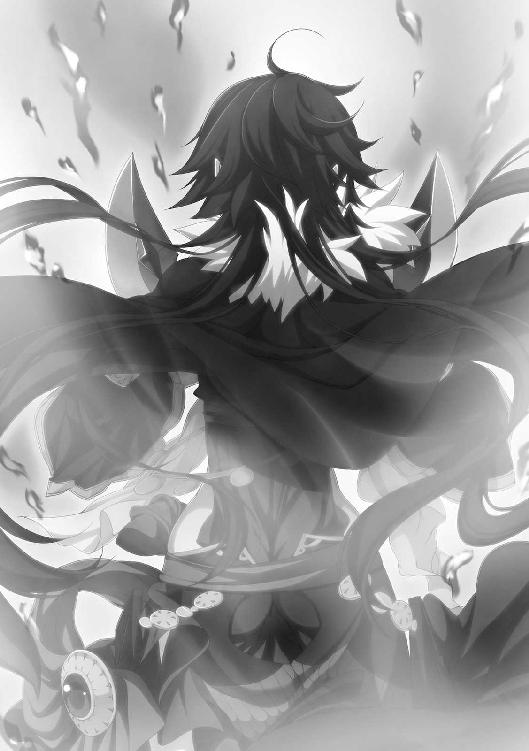
──ヴィッサリオン。フィグネリアを頼む。
神々ではなく育ての父に、彼女の魂の安らぎを祈った。そうするべきだと思った。
感傷に浸ったのはほとんど一瞬で、エレンは戦姫としての厳格な表情をつくると、長剣を掲げて声をかぎりに叫んだ。
「フィグネリア＝アルシャーヴィンは自ら命を絶った！ レグニーツァの者たちよ、武器を捨てて降伏せよ！ おまえたちを名誉ある戦士として遇することを、エレオノーラ＝ヴィルターリアが約束する！」
兵たちの間からざわめきが起こる。
フィグネリアの死は、急速にレグニーツァ軍に広がっていった。
角笛の音が響く中、一部の兵はなおも戦おうとしたが、ほとんどの者はエレンの言葉に従い、武器を捨てて降伏するか、逃げることを選んだ。彼らは勝ち目がなくなったことを悟ったというよりも、戦う理由を失ったのである。
レグニーツァ軍の指揮官代理を務めるスピルドは、降伏することを決めた。兵たちにそう告げたときの彼の顔は、疲労と衝撃によって色を失い、石像のようであった。いくらかの間を置いて、その口からは後悔の嗚咽が漏れた。
ライトメリッツ軍を指揮していたルーリックは、勝利感よりも解放感と疲労感、戦友を失った苦しさに包まれて、沈痛な表情を変えなかった。エレンとリムがとりあえず無事らしいと聞いて、ようやく安堵の息をついただけにとどまる。
こうして「ボロスローの戦い」は終わりを告げた。
ライトメリッツ軍の死者は四百近くに達し、レグニーツァ軍の死者は八百を超えた。どちらも、負傷者はその倍を数えた。
フィグネリアが最後に立っていた場所には一握りの灰燼すら残っておらず、エレンと、そして兵たちが目に焼きつけた光景のみが、彼女の最期を示すものとなった。
◎
意識を取り戻したとき、リムアリーシャは幕舎の中で横になっていた。
天井から吊り下がっているランプの弱い光が、やけに眩しく思える。顔といわず身体といわず、ほとんど全身に奇妙な感覚があり、身じろぎをすると引きつるような痛みに襲われた。おもわず呻き声を漏らす。それが聞こえたのか、誰かが横から覗きこんできた。
「気がついたか」
白銀の髪。紅玉の瞳。リムにとって大切な主であり、親友でもある娘の顔がそこにあった。「エレオノーラ様」と、リムは言おうとしたが、かすれた声しか出てこなかった。
「じっとしていろ。おまえは身体中に火傷を負ったんだぞ」
優しい声の中に、責めるような響きがわずかに含まれている。
エレンは軍衣ではなく、ゆったりとした麻の服を着て、毛糸の上着を羽織っていた。髪飾りはない。額に包帯を巻き、頰にも布を当てている。服の下も包帯だらけに違いないとリムは思った。彼女の鼻を、薬の匂いがつく。
幕舎の天井を見上げて、リムは少しずつ、意識を失う前のことを思いだした。
エレンとフィグネリアが戦っている間、自分は双剣の一本をおさえつけたのだ。フィグネリアの手に戻らないように。あのときは、ただ自分にできることをと思って無我夢中だった。そして、バルグレンの炎に全身を焼かれた。
「戦は......」
「終わった。フィグネリアは死んだ」
エレンは淡々とした口調で答える。リムは疑問を示すように、わずかに首を傾けた。白銀の髪の戦姫の声からは、フィグネリアに対する強烈な感情がうかがえなかったのだ。
「リム。目は見えるか？ 耳は聞こえるか？ 鼻はどうだ？ 水は飲めるか？」
水を満たした銀杯を手に、エレンはリムに顔を近づける。言われてみると、喉が渇いている。リムは小さくうなずいた。
エレンは左腕をそっとリムの背中へさしこんで、彼女を優しく抱き起こす。そのとき、リムは自分の身体に包帯が巻かれていることをようやく知った。奇妙な感覚の正体はこれだったのだ。ここが総指揮官用の幕舎であることもわかった。
リムに少しずつ水を飲ませながら、エレンは戦のことを話す。
「リーザが兵を率いて来てくれてな。それで勝てたようなものだ」
「エリザヴェータ様が......」
呆然と、リムはつぶやく。不思議な気分だった。一年前までは、あれほど激しく対立していた間柄だったというのに。
「お礼を言わなければなりませんね」
「ああ。とりあえずは私から言っておく。おまえは元気になってからでいい」
エレンは兵の損害などには触れず、ルーリックが指揮官代理として奮闘したことなどを話題にした。しかし、フィグネリアのことになると複雑な表情をつくった。彼女との戦いはエレンにとって重要な意味を持つものだった。感傷的にならないわけがない。
「──エレン」と、リムは愛称で親友を呼んだ。
「フィグネリアを討ったのは、私たちです。そうですよね」
エレンひとりに背負わせるようなことはしない。その気持ちが伝わったのか、エレンは口元に微笑をにじませると「ゆっくり休め」と言った。
「そうだ、リム。ひとつ頼みたいことがある」
何かを思いついたのか、真剣な顔でエレンが言った。リムはうなずくことで、親友に言葉の続きを促す。だが、彼女はすぐにそうしたことを後悔した。
「おまえ、ティグルのことは好きだな？」
思いもよらない問いかけに、リムは目に見えてうろたえた。
「な、なぜ、ここで、ティグルヴルムド卿のことが......？」
「それはもちろん、あいつに関係のある話だからだ。それで、どうだ？」
リムは顔を耳まで赤くして、エレンから視線をそらした。火傷が痛みを伝えてきて、悶絶しそうになる。それにしても、これほど恥ずかしく、そして残酷な質問もないだろう。彼女の主は、その若者の恋人なのだから。
「ひ、否定はいたしません......」
声を震わせて、リムはようやくそれだけを言った。しかし、エレンは納得しなかった。
「もっと詳しく......。いや、私の聞き方が悪かったな。かなり露骨な言い方になるが、許せ。私が知りたいのは、あいつの子を産みたいと思うぐらいに好きかどうかだ」
「子......!?」
リムは目を丸くして、驚きのあまり大声をあげた。身じろぎした拍子に、また身体中が悲鳴を発する。痛みが落ち着くまで耐えたあと、自分を見つめるエレンの真面目な表情に彼女は気づいて、わずかながら落ち着きを取り戻した。
「もしかして、ヴィッサリオンが私たちに望んでいたという話のことですか」
ちなみに、その話はリムも忘れていた。ヴィッサリオンを失った『白銀の疾風』からは次々に傭兵が去っていき、敗北の後始末も終わらないうちに消滅してしまった。それどころではなかったのだ。
「それだけではないんだ」
リムの質問にエレンはそう答えて、サーシャとの約束について話す。
「いまわの際に、サーシャは私に託した。願ってもかなえられなかった望みを。それほどまでに、サーシャにとっては大切なことだったんだ」
病に冒され、最後には命を燃やし尽くすようにしてこの世を去った戦姫。彼女のことを思うと、リムも沈痛な面持ちになった。エレンは話を続ける。
「幸い、私にはティグルがいてくれる。サーシャとの約束がなくても、ティグルの子を産みたいと思う。だが、正直にいえば少し怖くもある。オクサーナのことは覚えているか」
リムはうなずいた。『白銀の疾風』で雑用係を勤めていた女性のひとりだ。明るい人柄で、エレンもリムも可愛がってもらった。
オクサーナは団に所属していた傭兵と恋仲になり、結ばれた。ヴィッサリオンをはじめ団員たちは二人を祝福した。
しかし、二人の幸せは短いものだった。オクサーナは出産の際、命を落としたのだ。生まれてくるはずだった子供も、そのまま亡くなった。夫は二人を埋葬したあと、ヴィッサリオンに退団させてほしいと願い、いずこかへと去っていった。オクサーナとの思い出が残っている団に居続けるのが、辛かったのだろう。
出産の際、妊婦が亡くなってしまうことは、ないわけではなかった。
「私が確実にあいつの子供を産めるとはかぎらない。だから、リムが私と同じようにあいつの愛妾となって、あいつの子供を産んでくれるなら安心できるのだがな。もちろん、私より先に産んでもかまわないぞ。ヴィッサリオンの望みでもあるしな」
「それならティッタがいるでしょう」
ティッタがティグルに想いを告げられ、結ばれたことは二人とも知っている。そして、エレンはティッタならばと許容していた。
ティグルとティッタとの間には、エレンでも立ち入ることのできない絆がある。物心ついたころからともに暮らしてきた二人の間に紡がれてきたものが。
「私が、おまえに頼みたいんだ」
紅玉の瞳を輝かせて、エレンは言った。
「サーシャの願いは私が継ぐ。おまえには、私の願いを継いでもらいたい。どうだ？」
リムは苦笑した。エレンの気遣いに半ば困惑し、半ば感謝する。
エレンの言っていることは本音であるには違いない。しかし、ティグルを想っている自分に、口実を与えようとしてくれているのもたしかだった。そして、そういう理由がなければ、リムは自分とティグルの関係を現在の状態から変えようとしないだろう。
また、どうして突然このようなことを言いだしたのかも、おぼろげに察した。
──私を元気づけ、生きる理由を与えようとしてくださっているのですね。
『白銀の疾風』では、重傷を負った仲間に対して欲しいものを聞いたり、役目や褒美を与えることを約束したりして、生きようとする意思を強めさせたものだった。とくにヴィッサリオンは、一定以上の傷を負った者であれば、誰にでもそれを行っていた。
最初、リムは不思議に思ったものだったが、やがて理解した。
そのときはとても死ぬとは思えないほど元気だった者が、翌朝に冷たくなっているということが何度かあったからだ。エレンも同じように理解してからは、ヴィッサリオンの真似をするようになった。
「そうですね。ティグルヴルムド卿に相談してから、決めることにします。ただ──」
リムは、彼女にしては珍しくいたずらっぽい笑みを浮かべて、言葉を続けた。
「私としては、エレオノーラ様の御子を見たいですね」
この反撃は思った以上に効果があり、自分から言いだしたことだというのに、エレンは頰を赤く染めた。彼女は恥ずかしがりつつも、楽しそうに笑ってうなずく。
「ああ。そのときには、おまえにも抱かせてやる。──そろそろ休むか」
「はい」と、リムが答えると、エレンはそっと立ちあがる。
「私だって、おまえの子を抱いてみたいと思っているからな」
笑いながらそう言って、エレンは幕舎を出ていった。
襲ってきた眠気に半ば意識を委ねつつ、リムは考える。どうして自分は助かったのか。あれだけ長く、炎に全身を焼かれて。
痛みに耐えながら、手と足を慎重に動かしてみる。指はすべてあった。腕と脚も、動かすことができる。こうしてまわりがしっかり見えているのだから、両目も無事だ。
──バルグレンが加減をしたのでしょうか。
だが、バルグレンの意思だとすれば、そうする理由はないはずだ。フィグネリアがそう命じたのだろうか。自分を長く苦しめることでエレンの焦りを誘い、隙をつくろうとしたのだとすれば納得できる。
もうひとつの可能性について、リムは考えてみる。フィグネリアは時折、屈折した優しさを見せることがあった。エレンが焦るように炎を派手にしながら、リムがすぐには死なないよう火勢を極端におさえるようにと竜具に伝えた可能性は考えられないか。
──考えても、結論は出ませんね......。
まぶたを閉じる。視界の端にバルグレンが映った気がしたが、たしかめようと思うには睡魔が強すぎた。リムの意識は、再び眠りの世界へと誘われていった。
◎
リムの眠る幕舎を出たあと、エレンは他の幕舎に移り、身体が痛むのを我慢して新しい軍衣に袖を通した。親友の推測通り、服の下は包帯だらけだった。
ボロスローの戦いが幕を閉じたあと、ライトメリッツ軍は死者と負傷者を回収してからルヴーシュ軍と合流を果たし、ボロスローの北端に広がる平原に幕営を築いた。ルヴーシュ軍もその近くに幕営を設置している。
日が沈むまでに、あと一刻ほどの猶予はあるだろうという頃合いだ。空は灰色の雲に覆われたままだが、雪はやんでいる。エレンは幕営の管理をルーリックに任せ、自身は軽装の部下をひとりだけ連れて、ルヴーシュ軍の幕営に向かった。
「ひとりだけで本当によろしいのですか？」
ルーリックが不安そうな顔でそのように聞いてきたのも無理はない。エレンとリーザがおたがいの心情に触れあい、打ち解けたのはごく最近のことだからだ。それまでは、ライトメリッツとルヴーシュは「他人か、でなければ敵」という間柄だったのである。
ルーリックも「ルヴーシュとは和解した」と、エレンから聞いていたが、詳しいことはわかっていなかった。
「問題ない。あまり長居するつもりはないが、留守を頼む」
エレンはルーリックにそう答えた。部下をひとりだけにしたのは、ルヴーシュ兵をいたずらに刺激しないためだ。リーザも、エレンとの関係が変わったことを配下の兵たちに説明しているはずだ。目に見える形で、それを示す必要があった。
はたして、ルヴーシュ兵たちは警戒しつつではあったが、エレンを迎え入れ、リーザの幕舎まで案内した。エレンの部下は、リーザの指示によって客用の幕舎に案内される。エレンは彼女の配慮に感謝した。寒風をしのぐことができるのは大きい。
そうして総指揮官用の幕舎の中で、エレンはリーザと再会を果たしたのである。
幕舎の中には熊と大鹿の毛皮が敷かれ、地面の冷気を完全に遮断している。綿をふんだんに使ったクッションが隅に積みあげられ、葡萄酒、火酒、ブリューヌ産の林檎酒などが並んでいた。地図や文書、ペンなどの入った箱も置かれている。
「エリザヴェータ......いや、リーザ。助かった、礼を言う」
幕舎の中にいるのはエレンとリーザだけだ。異彩虹瞳の戦姫を愛称で呼び直して、エレンは簡潔に礼を述べた。
リーザの率いるルヴーシュ軍が、レグニーツァ軍の後方に控えていた予備兵力を撃ち破って潰走させたことは大きかった。エレンがフィグネリアを討ちとったというだけでは、スピルドの戦意を挫くことはできなかったかもしれない。
「たいしたことはしていませんわ。後ろから、レグニーツァ兵を少しからかってあげただけですもの。武勲らしい武勲もありませんし」
ちなみに、ルヴーシュ軍に死者は出ていない。さすがに負傷者は出たが、毛皮のおかげで軽傷にとどまったという者ばかりだ。
「ところで、あなたの副官は？」
リーザが不思議そうに尋ねる。特別な用事でもないかぎり、リムがエレンのそばから離れることなどないと、彼女もわかっていた。
「この戦でかなりの傷を負ったのでな。休ませている」
エレンは冷静な態度を崩さなかったが、声の震えを隠すことまではできなかった。リーザはそれ以上のことは聞かず、毛皮の上に座るよう勧めると、葡萄酒と銀杯を用意する。
二人の戦姫は毛皮の上に腰を下ろし、周辺の地図を何枚か広げて、自分たちがどう動いたのかを説明しあった。ここで、二人はようやくおたがいの動きを把握したのである。
「民兵をかき集めて、レグニーツァ軍の斥候にわざと発見させる、か。上手いな」
素直に感心するエレンに、得意げな笑みを隠さずリーザは答えた。
「ティグルが二年前にムオジネル軍を撃退したときの話を思いだして、私なりに応用してみたのですわ。はじめから戦わせるつもりがなければ、敵と充分に距離をとることもできますし、防寒具はともかく、人数分の武器を用意する必要がありませんもの」
──アニエスでの戦いの話なら、あれを考えたのはリュドミラなんだが。
エレンはそう思ったが、リーザが嬉しそうなので黙っておくことにした。決断し、民を説得して実行に移したのはティグルなのだから、間違っているわけではないのだろう。
「レグニーツァ軍は、ボロスローの南端に幕営を築いたそうだ」
スピルドの降伏を受け入れたエレンは、レグニーツァ兵を敗残兵とは扱わないように約束し、自軍の兵にもレグニーツァ側の武器や軍旗を奪わないよう徹底させた。
「フィグネリアは、レグニーツァを頼むと私に言った。それに、先代の戦姫アレクサンドラ＝アルシャーヴィンは、私の親友だった。いますぐには無理だろうが、おたがいの傷が癒えたら対等の関係を持ちたいと思っている」
スピルドはエレンに感謝し、レグニーツァ軍の行動予定をすべて話し、今後はライトメリッツとエレンに協力することを約束した。戦姫が不在のために兵を動かすことはできないが、武器や食糧を用意することはできると。
エレンは礼を述べたあと、バルグレンをスピルドに渡そうとしたのだが、三人の戦姫に仕えてきたレグニーツァ騎士は、首を横に振った。
「それは、あなたがお持ちください。レグニーツァがあなたの味方であると、証明するために。いつか、我らの公国に新たな戦姫様が現れてくださったら、お返しいただきます」
そのようなわけで、黄金の刃と朱色の刃を持つ双剣の竜具は、ライトメリッツ軍の総指揮官の幕舎に置かれている。
エレンの説明を聞き終えたリーザは、思慮深げにうなずいた。
「そうなると、あなたたちはしばらくここに留まった方がよさそうですわね」
「ああ。五、六日はそうするつもりだ。その間の食糧や燃料については、レグニーツァに用意してもらう。ただでもらう気はないがな」
エレン自身も身体中に包帯を巻いており、万全からはほど遠い状態だ。無理に動いて傷が悪化したら、取り返しがつかない。
フィグネリアの死について聞いたリーザは、複雑な表情になった。彼女は王都でフィグネリアに殺されかけていることもあって、黒髪の戦姫を敵としてしか見ることができないのだが、エレンは違うらしいと察したのだ。
エレンはリーザの表情の変化に気づいて、銀杯を空にして葡萄酒の二杯目を要求することで間を置く。それから、さりげない口調で尋ねた。
「ところで、オルガはどうした？」
最年少の戦姫であるオルガ＝タムは、ルヴーシュにいる。リーザに代わって公宮を守っているのだろうかと思ったが、その予想は外れた。雷渦の閃姫は、色の異なる瞳に楽しそうな輝きを宿して答える。
「あの子には兵を二千ばかりつけて、カザコフの領地へ向かってもらってますわ」
「カザコフを黙らせるつもりか」
リーザの意図を察して、エレンは感心したように笑った。
現在の当主であるエゴール＝カザコフに対して、エレンは悪い印象しか持っていない。
彼は密告を行って戦姫同士が戦うように仕向け、さらにユージェンの国外追放を要求する文書を王都に送りつけてきたからだ。おそらくは何者かにそそのかされたのだろうが、同情する気はまったく起きなかった。
「私やエレンが出向けば、私戦だと見る者もいるかもしれないけど、オルガなら問題ないもの。カザコフの治めるポルスは、私のルヴーシュと接しているし、地理に詳しい者を何人かつけたから迷うことはありませんわ」
エゴールの父だったオルゲルト＝カザコフは、かつてリーザを敵視して私戦を起こし、エレンによって討たれている。エゴールはそのために、リーザとエレンを恨んでいるということだった。だが、オルガが出向けば、その恨みも活用しようがない。
「私は、オルガがルヴーシュにいることを公にはしてきませんでしたわ。あの子の名前も顔も、このあたりでは知られていないから、さほど苦労しませんでしたけど」
「カザコフは驚くだろうな。おとなしく引き下がるかな？」
「それはオルガの出方次第でしょうね。ちょっと助言はしましたけれど」
エレンの疑問に、リーザは銀杯を傾けながら器用に肩をすくめた。
「明日の昼には、私はここを引き払ってオルガを追うつもりですわ。エレンはどうしますの？ ここで数日間休んで、そのあとは」
「そのことなんだが、おまえの意見を聞きたい」
苦いものを口に含んだようなしかめっ面を、エレンはつくった。
「フィグネリアが死んだことは、これからどう影響してくると思う？」
漠然とした質問だったが、リーザは白銀の髪の戦姫の考えていることを理解した。
「私たちのことにかぎって答えるならば、二つありますわね」
ひとさし指を立てて、異彩虹瞳の戦姫は言葉を続ける。
「ひとつは、何かをたくらんでいるヴァレンティナに対して圧倒的に有利になったということ。私たち戦姫の対立が五対一になったとわかれば、彼女に味方する者も減るでしょうし、こちらはヴァレンティナの動きだけを警戒すればいい」
エレンは無言でうなずくことで、リーザに賛同の意を示した。
「もうひとつは、レグニーツァの内外で混乱が起きるだろうということですわ」
戦に敗れ、戦姫を失った。昨年にも戦姫を失ったばかりだというのにだ。
新たな戦姫は竜具が選ぶので、貴族諸侯のように継承問題が起きることはない。だが、戦姫がいない間に派閥争いが起きることは充分に考えられる。それに、レグニーツァの民は不安を抱えて生きていくことになるだろう。
また、レグニーツァの周辺に領地を持つ諸侯の中で、この状況を好機と見る者も現れるかもしれない。まして、いまは王都も混乱の渦中にある。
「アスヴァールやブリューヌの介入を考えずにすむだけでもずいぶん助かりますけど、私とあなたとでレグニーツァを守る必要がありますわね」
いま、アスヴァールやブリューヌがレグニーツァへ介入しようとするなら、冬の冷たく荒れた海を渡らなければならない。二国とも、そのような危険は冒さないだろう。
「レグニーツァ周辺の有力貴族たちに、手紙を書いてやればいいわけか。レグニーツァに余計なちょっかいを出せば、二人の戦姫を相手にすることになると」
エレンもリーザも、すぐに何人かの貴族の名を思い浮かべることができた。レグニーツァの南部周辺に領地を持つ者ならばライトメリッツにも近いし、北部周辺に領地を持つ者はルヴーシュにも近いからだ。連名でその貴族たちに手紙を送ることを、二人は決めた。
葡萄酒の瓶は、いつしか半分ほどにまで減っている。リーザは林檎酒を用意した。
「そういえばガヌロン公爵について、何かわかったことはありまして？」
「いや」と、エレンは首を横に振る。
「おまえとオルガが王都を発った日に、私たちも王都を出たんだ。ライトメリッツに戻ったときは、時間がなくてな」
フィグネリアに追いつかなければならなかったのだ。兵をそろえて動くことに時間のすべてを注いでいたので、他のことにかまう余裕はエレンにもリムにもなかった。
「こちらも手がかりなしですわ。ひとが消えただの、怪物が出ただのと不気味な事件はルヴーシュのあちらこちらでも起きていて、被害の出た町や村もあるのに......。せめてガヌロンの居場所がわかれば、こちらから動くことだって」
悔しそうに銀杯を握りしめるリーザに、エレンは林檎酒の瓶を手に取って勧める。
「そのときは私もつきあってやる。だから、いまは落ち着け」
銀杯を空にし、エレンに新たな林檎酒を注いでもらったリーザは、顔をほころばせて小さく息を吐く。
「お友達って素敵なものですわね」
照れくさくなって、エレンは銀色の髪をかきまわす。話題を変えた。
「オルガと合流したら、そのあとはどうする？」
「もちろん、兵を率いて王都を目指しますわ」
リーザの返答は明快だった。ヴァレンティナの動きを掣肘し、各地で兵をあげている領主貴族たちに睨みをきかせ、場合によっては実力で鎮圧するつもりなのだ。
「もしもヴァレンティナが王都を占領していたら？ その可能性はあるだろう」
ヴァレンティナが以前から計画を練っていたとすれば、彼女が王都から脱出するのに合わせて、オステローデ軍が動きだすことも充分に考えられる。
「そのときはソフィーヤやリュドミラと合流して、打開策を練るしかありませんわね」
「わかった。私も動けるようになったら、王都へ向かう」
エレンがそう言うと、リーザは不安そうな顔でつぶやいた。
「ティグルは無事かしら」
「......あいつなら、何か厄介ごとが起きても切り抜けているさ。いつもそうだった」
半分はリーザを安心させるために、もう半分は自分に言い聞かせるために、エレンは笑って答える。二人は、ティグルがガヌロンのもとへ向かっているのを知らない。知りようもないことだった。
「ティグルなら、むしろ私たちの心配をしていてもおかしくない。早く顔を見せて、安心させてやらなければな」
「そうね。私たちの顔をね」
リーザがささやかな対抗心を発揮する。エレンは少し呆れたが「そうだな」と、肩をすくめるだけにとどめた。リーザの想いが真摯なものであることを知っているだけに、自分の立場では何も言うべきではないと思った。
リーザと握手をかわして、エレンは幕舎をあとにした。
ところが、翌日の昼間際になってリーザは予定を変更することになった。馬に乗ったひとりの少女が、ルヴーシュ軍の幕営を訪れたからである。
少女は小柄な身体にゆったりとした白い衣をまとい、赤を基調とした上着を着こんで、狐の毛皮の肩掛けを羽織っている。頭には玉を連ねた赤い帽子をかぶり、色とりどりの丸い玉を用いた首飾りを胸元に下げていた。服や帽子には独特の模様が刺繡されている。腰に締めた帯には、薄紅色の刃を持つ小振りの斧が差してあった。
一目で、このあたりの者ではないとわかる衣装だ。ジスタートの東部に詳しい者なら、その一帯で生活している騎馬の民を思い浮かべるだろう。髪の色は弱々しい冬の陽光でも映える薄紅色で、汗に濡れている。瞳は黒真珠を思わせた。
ルヴーシュ兵に案内されて総指揮官用の幕舎に入ってきた少女を見て、リーザは目を丸くし、驚きの声をあげる。
「あなた、どうしてここがわかったんですの？」
その少女──オルガ＝タムは不思議そうに首をかしげた。
オルガは、現在の戦姫の中では最年少の十五歳で『羅轟の月姫』の異名を持つ。腰にある斧が羅轟とも呼ばれる彼女の竜具ムマだ。
リーザは毛皮の上にオルガを座らせると、林檎酒に蜂蜜を溶かしたものを用意する。
「馬乳酒か山羊乳があったら、それがほしい」
「はじめて聞く名前ですわ」
突然現れてのずうずうしい要求に、リーザは首を横に振った。オルガは銀杯を受けとると、林檎酒を一気に飲み干す。それから「ありがとう」と、礼を述べた。
リーザは二杯目を用意してやりながら、兵を呼んで二つの指示を出す。とりあえず兵たちには昼まで待機するよう命じ、使者をひとり選んでライトメリッツ軍へと向かわせた。
オルガは二杯目もすぐに空にして、満足そうな息を吐きだす。
「次は蜂蜜抜きでほしい」
そう言ってから、ここに来るまでの事情を説明した。
十日前、リーザは三千の歩兵を率いてルヴーシュの公宮を発ち、南下してレグニーツァを目指し、オルガは二千の歩兵を連れて、カザコフの治めるポルスへと向かった。
結論からいうと、オルガはポルス領内に侵入し、エゴール＝カザコフを打ち倒し、彼に王都へ向かうことを約束させると、ルヴーシュを通過してここへ来たということだった。
「どうやって......？」
リーザが眉をひそめて質問したのも無理はない。彼女の考えでは、どうやっても不可能だからだ。リーザもそうだったが、ボロスローが戦場になったことを、オルガは知りようがないのである。それを考えると、少なく見積もってもあと五、六日は必要だった。
「犬と橇を使った」
オルガはこともなげに答える。
この最年少の戦姫は、リーザから借りた二千の兵を一千ずつにわけると、片方の部隊には犬や橇を集めさせ、もう片方の部隊だけを先に進ませたのだ。
犬橇の扱いや集め方については、事前にリーザに教わっていたのだが、オルガが集めた犬と橇は、二千の歩兵を楽に運べるだけの量だった。
犬の半分に空橇を引かせて体力の消耗をおさえさせ、定期的に空橇を引かせる役を交替させることで、薄紅色の髪の戦姫は驚くべき速度でポルスの地へ急行したのである。
「私の部族では、遠くへ狩りに行くときによく使うやり方。ひとりあたり三、四頭の馬を用意して、一刻ごとに乗り換えて進む。それと同じ」
「もう少し遠慮というものを学んでもらえないかしら......」
色の異なる左右の瞳に呆れと苛立ちをそれぞれ浮かべて、リーザは苦情を述べた。犬も橇もルヴーシュの財産であって、オルガの治めるブレストのものではない。兵や民を酷使すれば、彼らが恨めしい目を向けるのはリーザなのだ。
必要な支出だというのはわかるが、文句を言わずにはおれなかった。
「無駄遣いする女性は、好まれませんわよ」
「ティグルなら笑って許してくれる」
まったく悪びれずにオルガは答える。リーザはため息をつきたくなったが、まだ話は終わっていないので、続きを促した。
ポルスに踏みこんだオルガと一千の歩兵だが、そのままポルス領内を突き進むようなことはしなかった。食糧や燃料の問題があったからだ。
ルヴーシュでは、いわばリーザにつけをまわす形でいくらでも調達できたが、ポルスで同じことをやれば略奪になる。金銭を支払って購入するしかないが、必要な量を確実に手に入れるのは難しく、リーザから与えられた金銭もそれほど余裕があるわけではない。
そこでオルガは、ルヴーシュとポルスの領地境に沿うようにして移動しながら、ポルス領内の町や村を見つけるとそこに向かって、次のような噂をばらまいた。
「カザコフ家の当主は、次期国王のパルドゥ伯爵を根拠もなく中傷し、誹謗するという無礼を働いている。いずれ、この地に王都シレジアから討伐軍が押し寄せるだろう。戦火を避けたい者はルヴーシュに逃げるといい」
ルスラン王子が復活してから、ユージェンは次期国王ではなくなっている。オルガはそれをわかっていて、王都の事情に疎い者でも理解できるように、あえてそう言った。
これは、オルガひとりの考えによるものではない。ルヴーシュの公宮で、リーザが彼女に二千の兵をつけたとき、助言したのだ。
「カザコフは、パルドゥ伯爵が王位を狙っていると密告しましたわ。そのために私とエレン、ソフィーヤの三人を味方につけたとも。この中でエレンとソフィーヤ、パルドゥ伯爵の公国や領地は、ポルスから遠い。報復されるとしても、対応する時間がとれる。でも、私相手にはそうはいきませんわね」
その点を考えると、カザコフがリーザに対してとるであろう行動が推測できる。
ルヴーシュとポルスの領地境に斥候と伝令を大量に放ち、ルヴーシュ軍の動きを細かくつかめるようにする。その一方で、カザコフ自身はルヴーシュ軍との戦いから逃げ続け、フィグネリアあたりがルヴーシュを脅かすのを待つ。
「エゴール＝カザコフは、先代の当主であるオルゲルトほどではないけれど、武勇に優れているという話ですわ。でも、こちらと正面から戦おうとはしないでしょうね。そこで、カザコフに都合の悪い噂をばらまいておびきよせるのですわ」
カザコフがこちらの動きをさぐっていれば、そうした噂はすぐに彼の耳に届くはずだ。
オルガは他にもいくつかの噂をばらまいた。
「カザコフは王都からの討伐軍を迎え撃つために、臨時の税を取るつもりらしい。余剰の食糧と燃料もすべて差しださせるつもりだそうだ」
「カザコフは戦姫に勝てないことがわかっているので、自分に顔つきがよく似た男の首を刎ねて、戦姫に差しだすつもりらしい。領地の一部や財宝も献上するという話だ」
「先代当主オルゲルトが死んでからカザコフ家の支持者が離れていったのは、エゴールの能力を見限っているからだそうだ。このままではポルスの地は危ういだろう」
これらの流言はすべて、エゴールの身勝手な行動に領民が巻きこまれるかもしれない、という主旨でつくられているところに恐ろしさがあった。
そして、リーザの考えていた通り、エゴールは領地境周辺の情報を懸命にかき集めていたのである。
彼は、侵入してきたルヴーシュ軍を一日も早く撃退する必要に迫られた。それだけでなく、自分の姿を町や村の者たちに見せることで、彼らを安心させ、噂が偽りであることを証明しなければならなくなった。たとえルヴーシュ軍を追い払っても、領主が姿を見せないのであれば、もしかしたら、という疑惑を持たせてしまうからだ。
そして、オルガがポルス領内に到着してから三日後の朝、エゴールは二千の歩兵を率いて、ポルス領の西端にあるノヴィトーの地に姿を見せたのである。ひとつには、エリザヴェータ＝フォミナが兵を率いて南へ向かったという情報をつかんだからだった。
エゴールは、一千のルヴーシュ兵が攻めてきたとしか思っていなかったのである。
ノヴィトーの地は周囲をいくつもの山に囲まれており、山から低地へ何本もの川が流れている。だが、この時期は山から吹き下ろす寒風によってどの川も凍りついていて、平原と変わりない。
オルガに率いられたルヴーシュ兵一千は、低地で敵を待ち受けようとはしなかった。グリンナという名の山を背にして、そのふもとに布陣したのである。
偵察に出した兵からその報告を聞いたエゴールは、主だった部下を集めて尋ねた。
「やつら、何を考えているのだと思う」
エゴールは十七歳。亡き父親譲りの褐色の短い髪と大柄な体格の持ち主で、剣を持たせれば、同世代で勝てる者などいないのではないかというほどの腕前を誇っていた。
彼の父は、イルダー＝クルーティスに対する劣等感から鎚矛を愛用していたが、そういった感覚から息子は自由だった。
エゴールが甲冑をつけ、兜をかぶり、剣を持つと、威風堂々たる凜々しい戦士の像ができあがる。その姿は部下たちの信望を集めるのに一役買っていた。
「我々が攻めたてたら、山道に入っていく形で後退するのではないでしょうか」
部下のひとりが意見を述べた。別の部下が口を開く。
「彼らが後退しながら山に入っていけば、高い位置から我々を攻撃できます。それに、こちらが数の有利を生かすこともできなくなるでしょう」
「それでは、こういうのはどうだ」
エゴールは鞘に収めた剣で地面に図を描き、自分の案を部下たちに聞かせた。
「まず、我々は正面からやつらに攻めかかる。やつらが山道に入っていったら、そこをはじめとして要所に兵を置き、山を下りられないようにして孤立させる。いずれ食糧と水が尽きれば、降伏してくるだろう」
「よいお考えと存じます。あの山は、三本の山道と一本の川以外は、険しい岩山か獣でさえ難儀する急傾斜になっておりますから、その四ヵ所をおさえればだいじょうぶかと」
この一帯の山々に詳しい部下が、喜色満面で賛同する。戦い方は決まった。
ポルス軍はノヴィトーの地を進み、グリンナ山のふもとでルヴーシュ軍と対峙した。
空は、この季節では珍しくない灰色に染まっている。
太陽は中天を過ぎたところに浮かんでいたが、古ぼけた銀貨のように白く、弱々しかった。風もあまり吹いておらず、黒竜旗も、紫地に黄金の帯が曲線を描いたルヴーシュの軍旗も、力なく垂れ下がっている。
ルヴーシュ兵の武装は、羊毛を用いた肌着と革の胴着、厚手の毛皮の組みあわせだ。一千の兵のうち、剣と盾を持つ者が半分近くにのぼり、それ以外は槍や手斧に盾を組みあわせるか、弓矢を持っていた。彼らは方形に隊列を整えて、敵を迎え撃とうとしている。
ポルス軍は甲冑を着こんで、その上に毛皮を羽織っている。武器に関しては、ルヴーシュ軍と大差なかった。二千の兵は厚みを持ちつつも横に長く配置され、武器と甲冑の壁で相手を押し潰そうという意図がうかがえた。
エゴールは兵たちの先頭に立って、ルヴーシュ軍に呼びかける。
「不吉なる瞳の戦姫に仕える者どもよ！ なぜ、いたずらに我が領地を侵すか！」
不吉なる瞳の戦姫という呼称は、リーザに対して最大の侮辱であった。彼女の異彩虹瞳は、地方によって吉兆の証とも、不幸を招く災いの印ともいわれている。色めきたったルヴーシュ兵たちは、喚声と罵声とでエゴールに応じた。
「貴様らを賊と認めたぞ！」
エゴールは叫び、手を振って兵たちに号令をかける。ポルス軍の兵たちは剣や槍を突きあげ、敵軍に負けじと虚空に雄叫びを響かせた。数が倍であるだけに、その大音声はルヴーシュ軍よりもすさまじい。剣や甲冑が陽光を反射して鈍く輝いた。
角笛の音が響き、軍旗が打ち振られる。両軍の兵たちが前進を開始した。エゴールは後方に下がって、兵たちの指揮を執る。
両軍合わせて三千人が駆けだし、大地を揺るがしながら敵に接近する。
ルヴーシュ兵たちの怒りを帯びた斬撃が、刺突が、ポルス兵に襲いかかった。皮膚をえぐられ、血をまき散らして、軍の先頭に立っていた兵たちが次々に倒れる。
むろん、ポルス兵たちも負けてはいない。侮蔑と殺意をこめた刃でルヴーシュ兵たちに斬りつけ、突きかかった。肩を割られ、腹を貫かれて、ルヴーシュ兵たちが崩れ落ちる。めくるめく剣戟の響きの中で、地面に転がる死体は一瞬ごとにその数を増やしていった。彼らの頭上では、おたがいの弓兵が放った矢が飛びかい、危険な雨となって降り注いだ。
ほどなく、ルヴーシュ兵が後退をはじめた。数において勝るポルス兵の勢いに、彼らは押されているようだった。
必死に盾をかざして剣や槍を受け止め、矢を防ぎながら、ルヴーシュ兵は隊列を崩して山道へと逃げこんでいく。甲冑をつけていないこともあり、その動きは速かった。
「予想通りか。腰抜けどもめ」
エゴールは嘲笑し、兵たちに追撃を禁じて、隊列を整えた。ルヴーシュ兵はことごとく山道の奥へと姿を消し、幾人かが遠くからこちらの様子をうかがうばかりである。
エゴールは部下たちに命じて、二千の兵を四つにわけ、グリンナ山を囲ませた。伝令を多く用意し、四つの部隊を巡回させて常に連絡がとれるようにする。どこか一ヵ所が敵兵に襲われても、少しの間持ちこたえれば、すぐに味方が現れるというわけだった。
その日の夜は何ごとも起こらず、ポルス兵は寒さから逃れるためと、敵兵の姿を発見しやすくするために、大量のかがり火を焚いた。
山の中腹でも無数のかがり火が踊っているという報告を受けて、エゴールは「あと二、三日の辛抱だ」と、兵たちに笑って言ったものだった。
襲撃は、夜が明けて間もないころに起きた。ルヴーシュ兵の標的となったのは、一本だけある川を守っていた部隊だった。
冬の寒風によって、十アルシン（約十メートル）近い幅を持つ川は凍結している。ポルス軍は、この川の周辺にいくつも柵を立てて、突撃を防げるようにしていた。横一列に並べるのではなく、食い違いをつくって攻めにくくするという用意周到さである。
しかし、最初に襲ってきたのは武装した兵士ではなかった。
橇だったのである。
山中で拾い集めた大小無数の石を積みこまれた橇が、凍りついた河川をすさまじい勢いで滑ってきて、ポルス軍を襲った。柵と衝突して橇は粉々に砕け散ったが、柵の方も傷つき、傾く。そこへ、新たな橇が次々に突っこんできた。
柵のそばで見張りに立っていたポルス兵たちは、呆然とその場に立ち尽くした。大地が割れるかと思うほどの轟音を響かせて、柵と衝突した橇は次々に吹き飛び、積まれていた石が兵たちに降り注ぐ。盾や腕で頭をかばいながら、ポルス兵たちは顔を見合わせた。
どうやって止めろというのだろうか、このようなものを。人間が受け止めようとすれば跳ねとばされ、潰されるだけだ。
彼らが狼狽し、手をこまねいている間に、ついに柵のひとつが破壊された。
すさまじい破壊音を聞きつけて、眠っていた兵たちが駆けつけてきたが、彼らもどうすればいいかわからない。その間に柵が二つ、三つと破壊され、ポルス兵たちはわあっと叫び声をあげながら、その場から逃げ散る。
そこへ、山中に潜んでいたルヴーシュ兵たちが駆け下りてきた。彼らの先頭に立っているのは、戦場に似つかわしくない小柄な少女だった。手には斧を持っている。
次の瞬間、ポルス兵たちは目を瞠った。少女の手にしている斧が淡い燐光をまとったかと思うと、その持ち主以上の大きさに変形したのだ。柄は倍近く伸びて、半月のような刃は二回り以上大きくなった。少女はオルガであり、その斧は羅轟ムマだった。
肉と骨の砕ける鈍い音とともに、血飛沫が地面に叩きつけられる。オルガは無造作に巨大な斧を振りまわして、近くにいたポルス兵の首を文字通り吹き飛ばした。地面に転がったひしゃげた兜には、頭部だったものの半分が押しこまれていた。
そこからは、一方的な戦いだった。オルガが前進して羅轟を右に左に振るうたび、ポルス兵が次々に肉塊と化して死体の山を築き、大地に血溜まりをつくっていく。
彼女に続いて駆け下りてきたルヴーシュ兵らも、むろん剣や槍を振るったが、彼らの奮戦がかすむほどの戦いぶりを、羅轟の月姫は敵と味方に見せつけた。
オルガが戦姫だと気づかなかったポルス兵たちは、迷信的な恐怖に襲われ、恐慌状態に陥った。自分たちよりもはるかに年下なはずの少女が、その華奢な体軀に似合わない斧を振るう都度、味方が減っていくのだ。悪夢としか思えなかった。
川を守っていた部隊が逃げ散って壊滅したころ、エゴールの本隊が救援に現れた。
彼らはまず呆然とし、次いで愕然とした。この場所を守っていたはずの味方の姿がなく、地面は流血と死体で埋めつくされている。事態を理解できずにいる間に、薄紅色の髪の戦姫が豪斧を振りかざして襲いかかってきた。
オルガが切り開いた道を、ルヴーシュ兵が押し広げる。エゴールの本隊は、たちまちのうちに突き崩された。オルガの豪勇の前に、他の味方が駆けつけるまでの時間を稼ぐこともできず、いつのまにか、エゴールの前に斧を担いだ少女が立っている。
大柄なエゴールからすれば、オルガはあまりにも小さい。それにもかかわらず、カザコフ家の若き当主の目には、血と汗にまみれたこの少女が、得体の知れない怪物に映った。
このポルスでも、怪物や妖精が出たという噂があふれている。
その類なのではないかと、真剣に思った。
気合いの叫びをあげて、エゴールが斬りつける。オルガは無造作にムマを振りあげた。
金属音が響いて、エゴールの剣の刀身が折れ砕ける。彼の腕もまた、へし折れた。
体勢を崩してその場に尻餅をついたエゴールに、オルガは斧を突きつける。エゴールの顔を、とめどなく汗が流れ落ちた。
白みはじめた空の下で「降伏か。死か」と、オルガはそっけなく問いかける。
「降伏だ！ 降伏する！」
エゴールは大声でわめいた。あっけなく、戦は終わりを告げた。
「──あとは、わたしひとりだけ馬を大量に用意させて、乗り換えながらルヴーシュに戻った。あなたの兵たちは、部隊長にすべて任せてきた」
空になった銀杯に新たな林檎酒を注いでもらいながら、オルガは話を終えた。犬と橇を用意させた一千の兵に、オルガはリーザ率いるルヴーシュ軍の動きを追わせていた。そして、彼らから話を聞いたあと、やはり馬を乗り換えながらここまで駆けてきたのだ。
「馬を乗り換えながら、ってそんなに簡単にできるものじゃありませんわよ」
呆れた顔でため息をつくリーザに、オルガは年齢相応の少女らしい、得意げな笑みを浮かべてみせる。
「騎馬の民は、小さいころから生活の中でその訓練を積んでいる。馬は、命だから」
ところで、とオルガは林檎酒を飲みながら質問をぶつけてきた。
「戦いは？ レグニーツァの戦姫との」
「それは昨日、終わりましたわ。エレンが彼女を討ちましたの」
「そう」と、オルガはうなずくと、銀杯に視線を落として、残りを一気に飲み干した。身体を傾けて、絨毯の上に横になる。
「しばらく寝る」
目を閉じて、二つ数えるほどの時間が過ぎたときには、寝息をたてはじめた。
オルガのあまりに自由奔放な行動に、リーザは呆然として彼女を見下ろしていたが、考え直して微笑を浮かべた。
「急いで来てくれたんですのね」
エレンやリーザの力になろうとして。
たどり着いたら、帽子もとらずに力尽きて眠ってしまうほど。
そのとき、幕舎の外からエレンの声がした。ちょうど来たらしい。リーザが入るように言うと、白銀の髪の戦姫が幕の一部をめくって姿を覗かせる。彼女はリーザを見て、それから絨毯の上で眠っているオルガに視線を移した。
「いつ来たんだ？ こいつは」
「ついさきほどですわ」
エレンの分の銀杯を用意して、リーザは昨日と同じように絨毯の上に座るよう勧める。そして、オルガから聞いた話を白銀の髪の戦姫に説明した。
「なんとまあ......」
エレンは感心とも呆れともつかない顔でオルガを見下ろす。
「末恐ろしいやつだな。同じことができる自信は、私にはないぞ」
「私にもありませんわ。ところで──」
リーザの表情が真剣なものになる。エゴールが降伏したことで、ヴァレンティナの陰謀にはまたひとつ綻びが生じたはずだ。こうなれば、明日から少しずつでも王都に向かうべきではないか。貴族諸侯への手紙は、行軍中でも書くことができる。
「そうだな。私たちが王都を発って二十日......。どうなっているのかは気になる」
エレンはうなずいた。ヴァレンティナだけではない。兵を起こしたというジュリアン＝クルーティスはどうなったのか。ミラやソフィーたちはムオジネル軍を撃退できたのか。
「私たちはゆっくり行く形をとらせてもらうが、いいか？」
「そちらに合わせますわ。ばらばらに動いて各個撃破されるなんて御免ですもの」
「わかった。それで頼む」
それから細かい打ち合わせをすませると、リーザに別れを告げてエレンは幕舎を出た。
見上げると、太陽はとうに中天を通り過ぎている。昼下がりといったところか。
風が白銀の髪をなびかせる。そのとき、腰に下げていた銀閃がエレンに風を吹きつけて警告を送った。エレンもまた、寒気に似た緊張を感じて剣に手を伸ばす。
身がまえつつ、空が暗くなった気がして、視線を上へ向ける。エレンは息を吞んだ。
視界に映る空が、毒々しい紫色に染まっていたのだ。一瞬前までは青かった空が。
──何だ？ 何が起こった？
懸命に驚愕をおさえこみながらエレンは空を見上げ、次いで周囲に視線を走らせた。これが魔物の仕業であれば、近くに迫っているのかもしれない。
ひとつ数えるほどの時間が過ぎて、エレンは再び驚きに襲われた。
空が、元に戻ったのだ。それに伴い、アリファールも警告をやめる。全身を覆うようだった不気味な緊張感も、何ごともなかったかのように消え去った。
「どういうことだ？」
幻覚を見たのかと思ったが、ルヴーシュ兵たちのざわめきが耳に入ってきて、そうではないことがわかった。彼らも紫色の空を見たのだ。
額に手をやると、汗がにじんでいる。そのとき、リーザが幕舎から姿を見せた。彼女はエレンの姿を見ると、まっすぐ歩み寄ってくる。
「いま、何かが起きなかったかしら」
リーザの手は、腰に下げているヴァリツァイフをつかんでいた。彼女とその竜具も、何らかの気配を察知したのだろう。エレンはいま見たものを簡潔に説明した。
「紫色の空......」
「おそらく、ティル＝ナ＝ファ絡みの異変だろう。ずいぶんと大がかりだが」
「オルガの竜具も反応していたし、間違いないでしょうね。ティル＝ナ＝ファが降臨したら、空の色はずうっとそうなるのかしら」
リーザは忌々しげな表情で空を見上げた。二人の会話は、ささやくような声でかわされている。いたずらに不安を抱かせないためにも、兵たちに聞かせてはならなかった。
「リーザ。軍の統率を任せておける者を二、三人、選んでおこう」
厳しい表情でエレンが言った。王都へ向かう前に、ガヌロンと戦う可能性があることをエレンは考えたのだ。ありえない話ではなかった。そして、そうなった場合、軍は率いていかない方がいい。恐怖と混乱が集団の中で拡大されれば、エレンやリーザでも兵たちを制御できなくなる。
──ティグルに何ごともないといいが......。
想い人の無事を、エレンは心の中で祈った。
翌日、ルヴーシュ軍では体調の不良を訴える者が百人近く現れた。
医療の心得のある者がその兵たちを診たが、原因はわからず、リーザは出発を半日遅らせて様子を見ることにした。しかし、半日を過ぎても彼らの体調はほとんどよくならなかった。リーザはやむを得ず、その日の行軍を諦めた。
同じことは、ライトメリッツ軍の幕営でも起こった。やはり百人を超える兵が、気分が悪くて動けないと言いだしたのだ。兵の中には嘔吐する者まで現れ、エレンは彼らの幕舎を隔離した。この兵たちが自力で歩けるようになったのは三日後のことだったが、どうして急に衰弱したのかは、本人たちにもわからなかったのである。
２ 彷徨い進む者たち
ボロスローの地でエレンが紫色に変わった空を見上げていたころ、ティグルもまた、何の前触れもなく変貌した空を目の当たりにしていた。
ルヴーシュ公国に入るまであと数日というところに広がる草原だ。ティグルは馬を引きながら街道を歩いていたのだが、おもわず左手に持っていた黒弓を握りしめていた。右手は馬の鞍に引っかけていた矢筒へと伸びている。
異変はすぐにおさまり、空は青さを取り戻した。ティグルは心の中でゆっくり三つ数えてから、ようやく緊張を解いたのだが、身体中からどっと汗が噴きだしていた。
「ティグルさん、だいじょうぶ？」
ティグルにそう声をかけてきたのは、麻の服の上に毛皮を着こんだ、十歳ぐらいの少女だった。栗色の髪を、短めのツインテールにしている。
ティグルは気を取り直すと、慎重な口調で少女に聞いた。
「君は、見たか？ 空が......」
「紫色に変わったこと？ 気味が悪いよね」
その返答に、ティグルは何度か瞬きをする。少女──レーナの口ぶりは、はじめて見たというようなものではない。
「前にも見たことがあるのか？」
そう尋ねると、レーナはこくりとうなずき、数歩先を行く男に言った。
「ねえ、お父さん。お父さんも何度も見てるよね」
男は歩みを止めず、首だけを動かしてこちらを見た。がっしりとした体格の持ち主で、レーナと同じように服の上に鹿の毛皮をまとっている。顔の下半分は黒い髭に覆われ、右手に弓を、左手には獲物をくくった縄を持っていた。獲物は三匹の兎と一羽の山鳥だ。
「レーナ。旅人さんは疲れてる。あまり困らせるんじゃない」
男の声は、叱りつけるような響きを帯びていた。レーナは唇をとがらせて黙りこむ。ティグルとしては詳しく話を聞きたかったが、いまはやめておくことにした。むやみに揉めごとを起こしたくはない。
男の名はダヴィド。レーナの父だ。二人は、この近くにある村で暮らしている狩人なのだという。ティグルがこの父娘と出会ったのは一刻半ほど前、昼になったころだった。森の中で休んでいた父娘の前に、ティグルが通りかかったのである。
ティグルは姓を省いてティグルヴルムドと名のり、旅人だと説明した。姓を名のればこちらが貴族だとわかってしまい、余計な警戒心を持たせることになる。ブリューヌ訛りの言葉を怪しまれないように、ブリューヌ人だとも付け加えた。
ルヴーシュにいる知りあいに会いにいくところで、近くに旅人を受けいれてくれる村はないかと聞いた。
「一夜をしのぐことさえできればいいんです。夜が明けたら、すぐに出ていきます。それと食糧や水、矢を売っていただけるのなら、別途で金銭をお支払いします」
ダヴィドはティグルを警戒していたが、レーナは好奇心と優しさが勝ったようで、父親に視線で訴える。
ダヴィドはため息をつくと「うちの隣にある倉庫なら使っていい」と言って、一呼吸分の間を置いてから付け加えた。「だが、ただというわけにはいかん」
彼の視線が、自分の手にある黒弓に向けられていることにティグルは気づいた。そこで半刻ほどの時間をもらい、山鳥を仕留めたのだ。若者の弓の技量にダヴィドは目を瞠り、レーナは手を叩いて褒めそやしたものだった。
天真爛漫な少女を見ていると、ティグルは王都に置いてきたティッタを思いだす。ガスパールたちがそばにいるからだいじょうぶだとは思うが、無事でいるだろうか。
「あたしたちの村まで、あと一刻ぐらいかな」
自分たちの村について、レーナはティグルに話してくれた。素朴な村のようだ。ティッタのことを思いだしていたからだろうか、自分の領地にある村々の風景がティグルの脳裏をよぎった。懐かしさよりも不安が湧き起こる。
ジスタートで起こっている数々の異変は、アルサスでも起きているだろうか。
──起きている、だろうな。
世界を作りかえると魔物たちは言っていたのだ。ジスタートに限定されているはずがない。ブリューヌでも、遠くアスヴァールやザクスタン、ムオジネルでも何らかの異変が起きているだろう。
レーナは父親に歩み寄ると、心配そうな顔で聞いた。
「グレブさんたち、だいじょうぶかな。もう治ったかな」
「だいじょうぶだ。まだ寝ているだろうが、明日にはよくなっている」
娘の頭を撫でるダヴィドの表情は硬い。いまの台詞も、とりあえずレーナを安心させるためのもののようだった。ティグルは気になって尋ねた。
「何かあったのですか？」
レーナはティグルを振り返って答えようとしたが、さきほどのことを思いだしたのか口をつぐんで、そっと父親を見上げる。ダヴィドは何やら考えこむように黙っていたが、ほどなく口を開いた。
「村で何人か病人が出てな......。あんた、よそで聞いたことはないか？ こう、手の甲や首筋に青いあばたのようなものができたって話を。そういうのができると、熱を出して倒れたり、手や顔が引きつって動かなくなるそうだ」
「力になれず、申し訳ありません」
ティグルは首を横に振る。青いあばたなど、はじめて聞く話だ。
「森や畑で妖精を見ると、その病気にかかるんだって──」
「レーナ」と、ダヴィドは娘の名を呼ぶことで、彼女の言葉を中断させた。
「妖精など、何かの見間違いに決まっている。俺はいままで一度も見たことはない」
ダヴィドの言葉を聞きながら、ティグルは動揺を表に出さないよう懸命に努めた。
その病気も、間違いなく異変の影響によるものだ。
──だが、どう説明すればいい。
ティル＝ナ＝ファのことを話しても、二人はぽかんとするだけだろう。それに、ティグルには病を治すことなどできない。病が悪化しないように願うことしかできないのだ。
──ガヌロンを止めれば、こうしたことは消え去るのか。
おそらく、そうだろう。ティル＝ナ＝ファを地上に降臨させようとしている影響で、このようになっているのだから。
休憩を二度ほど挟み、日が西に傾いて空がくすんできたころ、ティグルたちは村に着いた。村は簡単な柵に囲まれており、出入り口の両脇には四角い石柱がそびえている。石柱の高さはティグルより頭ひとつ分高いぐらいか。石柱の表面には模様が刻まれていた。
魔除けの類かと思って、ティグルはしげしげと石柱を見つめる。そうしたものならば珍しくはないからだ。だが、すぐに違うと悟った。二本ある石柱のどちらも、四つある面のうちの三面にしか模様が刻まれていなかったのだ。
「それ、何百年も昔の古い神さまを彫ったものなんだって」
レーナが屈託のない表情で教えてくれた。この村ができたときからあるものなのだが、何の神かはわからないらしい。
──ティル＝ナ＝ファだろうな。
ティグルはそう考えた。三面にだけその姿が彫られているのは、三柱の女神であるティル＝ナ＝ファを表しているのだろう。戦の神トリグラフも三つの顔を持っているとされるが、この石柱に刻まれているものの胸には、女性を象徴する二つのふくらみがある。
──ルヴーシュに......ザガンに、近づいているということなのかな。
ルヴーシュには、古い神々を祀っていた建物の跡が数多く残っている。魔物であるバーバ＝ヤガーを祀った神殿などもあった。ティル＝ナ＝ファを彫った石柱が転がっていてもおかしくはない。
しかし、レーナはこの石柱に彫られているものについて、神であることしか知らないという。おそらく、村人のほとんどがそうなのだろうとティグルは思った。ティル＝ナ＝ファであることを隠すのなら、そもそも神を彫ったものなどと言う必要はない。
ティグルは石柱から目を離し、そこから見渡せる風景に視線を巡らせた。
「穏やかな雰囲気の村ですね」
そのとき、ティグルたちの姿を認めた村人が、男に親しげに声をかけてくる。
「おう、ダヴィド。いま帰りか。──そちらさんは？」
「旅の者だそうだ。今夜、俺の家のそばの倉庫に泊める」
ダヴィドが答え、レーナが身振り手振りをまじえながら笑顔で付け加えた。
「いいひとだよ。山鳥をね、簡単に射落としたの」
ティグルも、その村人に向かって会釈する。
「迷惑をかけるような真似はしません。村の中を勝手に出歩かないことも、もちろんお約束します。一晩だけ、ここで過ごさせていただけませんか」
ルヴーシュが近いという実感を、ティグルはようやく得た。ここからは、より体力や体調に気をつけて進むべきだろう。寒風をしのげる建物の中で夜を明かせるかどうかは、きわめて重要だった。
「たしかに、いまの季節に野営はしんどいからなあ」
村人は好意的な笑みをティグルに見せた。それから、村の中の一画を指で示す。
「出歩かないって言葉を疑うわけじゃねえが、念のために教えておく。あっちに近づいちゃなんねえぞ。病人がいるからな」
あばたができた者たちの治療を、そちらで行っているということだろう。ティグルは丁寧に頭を下げて、礼を述べた。
村人と別れ、ティグルは父娘について歩きだす。日が暮れかけてきたせいか、村人の姿はほとんど見当たらない。家々の小さな窓からは明かりが漏れ、茅葺きの屋根に設けられたわずかな隙間からは煙が立ちのぼっている。
ティグルは、故郷のアルサスにあるいくつかの村を思いだした。もちろん、それらの村とこの村とでは、家々のつくりからして違う。だが、雰囲気がどことなく似ているように思えるのだ。
ほどなく、ダヴィドたちの家に着いた。他の家と同じ茅葺きの屋根で、土と木を組みあわせた壁には漆喰が塗られている。その隣には、古びた作りの倉庫があった。扉には閂が下ろされている。
「ここがおまえさんのねぐらになる。だが、その前にひと仕事手伝ってもらおうか」
ダヴィドの言うひと仕事とは、兎と山鳥を捌くことだった。ティグルは作業場と道具を借りて、ダヴィドが兎を捌く間に、手際よく獲物を解体する。値踏みするような目でティグルを見ていたダヴィドが感心して唸ったほどだった。
「少し待っていろ」
作業が終わると、そう言ってダヴィドは奥へ姿を消したが、すぐに戻ってきた。両手に矢やら麻の袋やらを抱えている。
「どれだけ必要なんだ。少しはまけてやる」
ティグルは礼を言って、矢を数本と、食糧を三日分受けとり、銅貨と銀貨を渡した。
ふと、ティグルは違和感を覚えた。一瞬考えて、その正体に気づく。ダヴィドが首に厚手の布を巻き、両手に手袋をしているのが気になったのだ。
毛皮の上着は脱いでいるのだから、寒いというわけではないだろう。首に巻いた布はともかく、手袋は外した方が獲物を捌きやすかったはずだ。
──獲物の血などで汚れるのを嫌ったのかな。
それから、ティグルとダヴィドは家を出て、隣の倉庫に向かう。レーナは、ティグルが引いてきた馬に水を飲ませていた。
倉庫にかかっている閂を外してもらい、ティグルは中に足を踏みいれる。冷たく埃っぽい空気が若者の鼻をついた。
火を灯したランプをかざして室内をぐるりと見回すと、古くなった農具や麻の袋、縄、木の桶などが無造作に積まれている。窓はない。
──これなら風はしのげそうだ。
一晩過ごす分には問題はなさそうだった。
倉庫を出ようとしたダヴィドの背中に、おもいきってティグルは声をかけた。
「紫色の空を、あなたは何度か見たことがあるんですか」
ダヴィドは馬の身体を拭いてやっているレーナを一瞥したあと、身体ごとティグルの方へと向き直る。娘に聞こえないようにという配慮だろう、声が一段と低くなった。
「それについて、何か知っているのか？」
「いえ。ですが......」
自分が王都シレジアから来たことをティグルは告げ、王都でもさまざまな異変が起きていることを説明した。
「それで、何かわかったらと思って......」
ティグルの言葉に、ダヴィドは深いため息で応じた。
「あの薄気味悪い空が何なのか、知りたいのはこっちの方だ。最初にあれを見たのは一月近く前だったか......。そのときは村の全員が見たわけじゃなくてな。だから、何かの見間違いだと思ったんだ」
だが、それから村のまわりでおかしなことが起きるようになったとダヴィドは言った。
「森や畑で妖精を見たという者が現れはじめ、そいつらがばたばたと倒れていった。村はずれにある墓地が荒らされたり、死んだはずのやつが歩いているのを見たと、何人かが言いだした。隣村から神官を呼んで祈ってもらったが、何にもならなかった」
ティグルは眉をひそめた。これまでに聞いたことのない話だ。紫色に変わった空のことも合わせて考えると、事態は確実に悪化している。
ティル＝ナ＝ファのことを説明するべきか、ティグルは迷った。だが、やはり心の中に留めておこうと考え直す。話してもかえって不安にさせるだけだ。
歯がゆさを嚙みしめ、ティグルは苦い表情をつくる。そんな若者を見て、ダヴィドもまた疲労と苦々しさの入り混じった顔つきで言葉を続けた。
「どこか安全なところをさがして逃げているって顔じゃねえな」
「安全なところを知っていたら、いくらでも教えたいところですが......」
「いや、もし逃げているなら──」
ダヴィドは視線を動かして、馬の鼻面を撫でているレーナを見た。
「あいつを連れていってもらおうかと思っていたんだ」
ティグルは「すみません」と言うことしかできなかった。少女を預けるに足るほど信頼できる者がいる場所となると、ここからもっとも近いのはルヴーシュの公宮だ。だが、そこまで連れていく余裕はさすがにない。
「いや、いい。行きずりの旅人につまらん話をしたな。忘れてくれ」
扉が閉まる。外から閂をかけられなかったのは、彼なりにティグルを信頼してくれているということなのだろう。
ティグルは床に座りこみ、壁によりかかる。安堵の息をついた。
「どうなるかと思ったが、助かったな」
倉庫に泊めてもらえただけでなく、食糧や矢を補充することもできた。何よりレーナの明るさや、娘を想うダヴィドの心は、ティグルを元気づけてくれた。
あの優しい父娘が不安を抱かずにすむ世界を、早く取り戻さなければならない。
ランプの明かりを頼りに、荷袋から水の入った革袋と食糧を取りだす。
固く焼いたパンと干し肉、チーズ、干しリンゴだ。パンと干し肉を交互にかじり、水を飲む。それから、もうわずかしか残っていない干しリンゴの甘みをじっくり味わう。
旅をしている間の食事は、日持ちを優先してこういうものばかりだ。たまに兎や鳥を仕留めても、その場で食べる部分以外は地面に埋めてしまうことが多い。
──ティッタの作ってくれるパンや麦粥を食べたいな......。
ティグルはそんなことを思った。小さなころから仕えてくれている栗色の髪の侍女は、若者の好物をたくさん知っている。この季節ならばバターを塗ってこんがりと焼いたパンか、香りの強い冬草を細かく切って入れた麦粥あたりだろうか。魚スープもいい。
──疲れているのかもしれないな......。さっさと休むか。
食事をすませて、ティグルは外套にくるまって横になる。すぐに寝息をたてはじめた。
獣の咆哮にも似た響きを聞いて、ティグルは目を覚ました。
手元に置いておいた黒弓へと手を伸ばす。寝る前にランプの火は消していたため、視界は闇に包まれていたが、ティグルはすぐに火を灯そうとはしなかった。何が起きたのかを知ることが先だ。
手探りで矢筒と黒弓をつかむ。そのとき、ティグルは黒弓から微量の『力』の流れを感じた。自分に何かを伝えようとしている。
──外の騒ぎと関係があるのか？
緊張を強めて、ティグルは扉まで歩いていく。再び、獣じみた咆哮。それに、何かが壊れるような音やひとの悲鳴が続いた。
「まさか、魔物か？」
相手が野盗や野の獣ならば、黒弓がわざわざ警告するとは思えない。
慎重に扉を開ける。ティグルの目に映ったのは、異様な光景だった。
暗がりの中で、大人の背丈ほどもある青い炎がいくつもゆらめき、激しく動きまわっている。その数は十前後。そして、家々から女性や子供の叫び声が聞こえた。
──何なんだ、あれは。
呆然としたものの、ティグルはすぐに気を取り直す。目を凝らして観察すると、青い炎の中に、黒い人影のようなものが見えた。ひとの形をした何かが、青い炎をまとっているのだ。それらから、ティグルは言いようのない薄気味悪さを感じた。ヴォジャノーイやトルバランなど、ひとならざるものと対峙したときの感覚に似ている。
──黒弓が俺に伝えようとしていたのは、あいつらのことか。
魔物だ。ティグルはそう断定する。魔物たちが、この村を襲っている。
青い炎の魔物たちに襲われているらしい家のひとつから、火の手があがった。木造の小さな家を、赤と青の炎が入り混じりながら包みこもうとしている。
ティグルは倉庫を飛びだし、悲鳴の聞こえる家に向かって走った。二体の魔物がティグルに気づき、こちらへ駆けてくる。一体は獣のように四つん這いで距離を詰めてきた。
「何者だ、おまえたち！」
足を止め、息を吸いこんでティグルは叫んだ。魔物たちは答えない。
黒弓に二本の矢をすばやくつがえる。彼我の距離は、すでに五十アルシン（約五十メートル）以下にまで縮まっていた。やはり、人間が青い炎をまとったような姿をしている。
弓弦を引き絞って、即座に射放つ。最初の矢は一体の右肩に、次の矢はもう一体の太腿に命中した。人間ならば体勢を崩して転倒するか、痛みに足を止めただろう。
だが、魔物たちはわずかに身体を揺らしたのみで、奇声を発しながらティグルに向かってきた。
ティグルは目を瞠る。尋常な相手ではない。新たな矢を矢筒から取りだす間に、四つん這いで駆けてきた魔物が地面を蹴って跳躍した。まぎれもなく人間の体格でありながら、狼を思わせる跳躍力だ。
とっさに地面に身体を投げだすことで、ティグルはその体当たりを避けた。地面を転がって距離をとり、視界の端にもう一体の魔物を留めつつ、襲いかかってきた方へ矢を射放つ。頭部を貫かれて、その魔物はひっくり返った。
もう一体の魔物がティグルに接近し、つかみかかってくる。危険を直感したティグルは、相手の脚を蹴り飛ばし、その反動を利用して地面を転がった。矢をつがえる。
充分に弓弦を引くことはできなかったが、至近距離から放たれた矢は、魔物の左目に突き刺さった。同時に、魔物の薙ぎ払った腕が風を唸らせる。
ティグルは身体を起こすと、相手から距離をとった。もう一本、矢を放つ。首筋を貫かれたその魔物は短い叫びをあげた。ぐらりと傾いて、どうと倒れる。
新しい矢を黒弓につがえながら、ティグルは魔物に歩み寄る。魔物の身体を包む青い炎は、少しずつ小さくなってはいたものの、すぐに消えることはないようだった。
息を吞む。青い炎に包まれていた人間は、ティグルがこの村に入ったとき、ダヴィドに声をかけてきた男だったからだ。着ている服も同じだ。
「どういうことだ......？」
夕方にこの男と会ったとき、黒弓はティグルに何も伝えてこなかった。あのときは、まだ魔物になっていなかったということだろうか。
人間が突然、魔物になる。そんなことがあるのだろうか。
──だが、王都ではあれだけの異変が起きていた。
顔をあげて村全体を見渡せば、あきらかに異様な空気が漂っている。まるで、何もかもを作りかえられてしまったかのような。
──世界が変わるというのは、こういうことなのか。
不意に、耳障りな笑い声が聞こえた。もう一体の魔物が倒れているあたりからだ。ティグルがそちらに目を向けると、魔物の死体の陰から、てのひらで包みこめそうなほどの小人が現れた。三角の帽子をかぶり、耳は細長く、目には意地の悪い輝きがある。ティグルが黒弓を向けると、小人は慌てたように死体の陰に隠れた。
視界の端に、青い炎がちらつく。ティグルは表情を歪めた。二体の魔物と戦っている間に、他の魔物たちが暴れまわっている。
黒弓の力を強めれば、遠くにいる青い炎の魔物たちを一気に吹き飛ばすことも可能だろう。しかし、そのようなことをすれば、この村の人々や建物を巻きこんでしまう。
ティグルはダヴィドとレーナの家へ足を向けた。事情を話して、逃げてもらわなくてはならない。可能ならば、他の村人へも逃げるよう呼びかけてほしい。ティグルひとりだけでは、できることが少なすぎる。
走りだしたティグルはしかし、十歩も行かないうちに足を止めた。
ダヴィドたちの家の扉が開け放たれており、青い炎に包まれた男が立っている。ダヴィドだ。彼は、両手でレーナを抱きかかえていた。赤黒い縄のようなものを口にくわえて。その縄は、血で染まった娘の腹部から伸びていた。
レーナの目は虚ろで光彩は失われ、口元には血の跡がある。すでに事切れていた。
愕然として、ティグルは父親を見つめた。数刻前まで、彼は娘を想う善良な父親のはずだった。だが、いまはそうではなかった。
ティグルは黒弓をかまえる。矢は、つがえなかった。
怒りと嘆きを指にこめながら、弓弦を引く。使い手の意志を感じとって『力』が矢を形作った。それほど強力なものではない。
放たれた矢は、風の干渉をまったく受けずにまっすぐ飛び、ダヴィドの眉間を穿った。ダヴィドはレーナを抱きかかえたまま、仰向けに倒れる。
やりきれない表情でティグルは父娘に歩み寄ると、ダヴィドのそばに膝をついた。間近で確認すると、思った通り、彼は首に布を巻いたままで、両手に手袋をしている。ティグルは周囲を警戒しながら、ダヴィドの手袋を慎重な手つきで外した。
──こいつか。
ダヴィドの手の甲には、青みがかった疱瘡が醜く浮きでていた。この疱瘡が、村の者たちを青い炎に包まれた怪物に変えてしまったのだろう。
ティグルは小さく息をつくと、レーナのまぶたをそっと下ろした。そして、黒弓を握りしめて立ちあがる。
振り返ると、暗がりの中に踊る青い炎の数はさきほどよりも増えていた。ダヴィドのように疱瘡を隠していた者が怪物になったのだろうか。聞こえてくる悲鳴の数は、あきらかに増えていた。
──ひとりでも多く助けないと......。
できるだろうか。この暗がりと混乱の中で。しかも、ティグルの素性を知っているダヴィドとレーナは死んでしまっている。得体の知れない旅人である若者に、村人たちが襲いかかってくる可能性は充分に考えられた。
だが、それでもやるしかないと、ティグルは決意を固める。たとえ怪しまれ、憎まれることになろうと、目の前の惨状を放っておける若者ではなかった。
「生きているやつは村の外に逃げろ！ 逃げるんだ！」
ティグルは息を吸いこみ、ひとりでも助かってほしいという思いをこめて大声を響かせる。村の外へ逃げるようにと言ったのは、誤射を避けるためだ。むろん、この声によって魔物たちの注意が自分に向くことも計算している。
予想通り、青い炎のいくつかがこちらへ向かってくる。
その中のひとつに狙いを定めて、ティグルは弓弦を響かせた。
夜が明けた。ティグルは村を囲む柵に寄りかかって、弱々しい陽射しの降りかかる村を静かに見つめている。その顔には疲労が色濃くにじんでいた。
若者の視界に映る光景は、凄惨の一言に尽きた。そこかしこに死体が転がり、いくつかの家が荒々しく破壊されている。怪物と化した村人たちによるものだ。炎を燻らせている家もいくつかあり、生き残った村人たちが懸命に土をかぶせたり、農具で壁を壊したりして火を消していた。
ティグルのそばには、三人の中年の男が立っている。いずれも鍬や鋤といった農具を肩に担いで、警戒の眼差しをティグルに向けていた。
夜を徹して、ティグルは逃げるように叫び続け、魔物たちと戦い続けた。夜が明けるよりも早く戦いは終わったが、空が白みはじめるまでティグルは緊張を解くことができず、避難できた村人たちも戻ってこなかった。
いま、ティグルは戻ってきた村人たちにようやく事情を説明し終えたところだった。
「たしかに、ダヴィドのやつから若い旅人をひとり泊めたって話は聞いていたが」
村人のひとりが唸るように言い、ティグルはわずかに表情を緩めた。幸い、ダヴィドは他の村人にもティグルのことをしっかり話しておいてくれたらしい。それがなければ、事態はもっとややこしいものとなっていただろう。
「この男が、おかしくなっちまった連中から村の者をかばい、逃がしていたって話はいくつか出ている」
もうひとりの村人が忌々しげな声を吐きだした。その感情はティグルではなく、この状況に向けられたものだ。目の当たりにしたからといって、すぐに吞みこめるものではなかった。昨日までの友人や知人が突然怪物と化し、村の者たちに襲いかかったなどと。
「王都でも、同じようなことがあったっていうのか」
三人目の村人が、疑わしげな声音で確認する。ティグルは無言でうなずいた。
理不尽だと感じてはいたが、彼らの気持ちもわかる。彼らにしてみれば、見知らぬよそ者に村の者たちを殺されたのだ。その者たちが、化け物になってしまったのだとしても。すぐには納得できなくとも、仕方のないことだった。
彼らの話をそれとなく聞いていたが、怪物になった村人は二十人ほどで、命を落とした者は五十人に達しそうだということだった。もともとの人口は百五十に満たないらしいので、一夜のうちに村人の半数が死んだことになる。
──冬を乗り越えられるだろうか。
口に出せば彼らの怒りを誘うことはわかっていたので黙っていたが、ティグルは心配になった。彼らの受けた精神的な打撃は、どれほどのものだろう。だが、彼らに何と言ったらいいのか、ティグルには思いつかなかった。
昼近くになったころ、ひとりの村人がティグルの前に現れた。禿頭と、顎を覆う白い髭が特徴的な老人で、他の村人たちの態度からすると、村の有力者のひとりのようだった。
会釈だけで挨拶をすませると、老人は前置きもなくティグルに用件を切りだした。
「すぐに村から出ていってもらえんか」
「わかりました」
予想していたことだったので、ティグルは素直にうなずく。ただ、注文はつけた。
「私の馬と荷物を、村の外に出しておいてもらえますか。それから、矢の余りがあればいただきたいのですが。なければ、せめて鏃だけでも......」
この一晩の戦いで、矢は使いきってしまった。その点において、村に立ち寄る前よりも状況は悪化している。何としてでも矢を手に入れなければならなかった。
老人は意外そうな顔でティグルを見た。
「恨み言のひとつでも言うかと思ったが」
本来なら、村人たちを救ったティグルは感謝の言葉とともに送りだされて然るべきだ。それが村人からは礼の言葉もなく、疑われ、見張られた挙げ句、即刻出ていけと言われているのである。憤慨して当然だと、老人も思っていたのだろう。
だが、ティグルは首を横に振った。
もしもアルサスの、自分が生まれ育ったセレスタの町か、あるいは領内にある村のどこかで同じようなことが起きたら、と考えたのだ。必要なことだったとはいえ、素性の知れない旅人が領民たちを葬り去ったとしたら。感謝の言葉を述べることはできるかもしれない。だが、笑顔をつくることはできないだろう。
「わかった。矢はできるだけ用意しよう」
老人はティグルにそう約束した。
それから半刻ばかり時間が過ぎたあと、ティグルは村の外にいた。馬は無事で、鞍の後ろには荷物が積まれている。鞍にくくりつけられた矢筒には二十本近い矢が入っていた。老人が村人たちを説得してかき集めてくれたのだ。
「ありがとうございます」
ティグルは村の外までいっしょに来てくれた老人に頭を下げて礼を述べた。老人は見送りに来てくれたわけではない。ティグルが村から去っていくのをしっかり見届けるために来たのだ。返答はそっけないものだった。
「早く行ってくれ。わしらも忙しいんだ」
突き放すようなもの言いには、いくばくかの後ろめたさが含まれていたかもしれない。だが、彼らが忙しいのは事実だった。死者を埋葬せねばならず、負傷者の手当てをしなければならず、さらにこれがもっともいやな作業だが、生き残った村人たちの身体を念入りに調べて、蒼い疱瘡のある者がいたら厳重に隔離しなければならなかった。
最後に、ダヴィドとレーナの魂の安寧を神々に祈って、ティグルは村をあとにした。
自分の気分などおかまいなしに馬が進んでくれるのは、ありがたかった。いま、己の足で歩こうとすれば、引きずるような重い足どりになっただろうから。
──ティル＝ナ＝ファを降臨させるのに、どんな理由があったとしても。
自分はガヌロンを許せないだろうと、ティグルは思う。ダヴィドとレーナとは、昨日会ったばかりだった。だが、二人との間にはたしかにあたたかな交流があったのだ。
疲労のために身体は重い。村から充分に離れたら、休息をとるべきだろう。だが、ティグルの精神は怒りのために昂ぶり、鎮まる気配を見せない。この激しい感情を、ガヌロンに叩きつけなければ気がすまなかった。
◎
現在の王都シレジアは、混迷の泥沼にはまりこんでしまったかのようだった。しかも、沼から這いあがるどころか、沈み続けている。
ティグルヴルムド＝ヴォルンが王都を去ってから、まだ十日しか過ぎていない。だが、その間も王都の情勢はめまぐるしく変化し続けていたのである。
激務がたたって倒れたルスラン王子に代わり、統治者代行として政務に携わっていたのはユージェン＝シェヴァーリンだった。彼は王宮に勤める人々を統括して、誠実に己の役目を果たそうとしていた。
ところが、ユージェンは侍従長のミロンにあらぬ疑いをかけられて投獄されてしまい、ミロンが新たな統治者代行となった。ティグルが王都を去った、その翌日のことだ。
ミロンに悪意や野心は微塵もなかったが、客観的に見れば、この交代劇は権力争い以外の何ものでもない。そして、王宮に勤める文武の官僚たちは等しく疑念を抱かざるを得なかった。はたして、侍従長に統治者としての責務が務まるのだろうかと。
ルスランとユージェンには、亡きヴィクトール王の補佐を務めた経験があった。ルスランは次期国王としてさまざまな教育をほどこされ、多くの任務に携わっていた。
ユージェンも外交の使者を長く務め、さらに先王から与えられたパルドゥの地を問題なく治めてきたという実績がある。侍従長には、そういったものがない。
そして、彼らが懸念していた通りのことが起きた。
ミロンは、ユージェンを支持していた幾人かの官僚を更迭したのである。
彼にしてみれば、ユージェンは虎視眈々と王位を狙っていた佞臣であり、そのような人物と信頼関係にあった者など遠ざけて当然だった。だが、ユージェンがルスランの代行として政務を引き継いだとき、彼は王子の行った人事に手をつけなかった。ルスランを慕う官僚たちから反発を買おうとも、混乱をおさえることを優先したのである。
そのためにユージェンは「我が物顔で王宮を闊歩している」などと、陰口を叩かれることもあったのだが、この措置によって政務に停滞が生じることはなかった。
この出来事は、官僚たちに未来を悲観させるには充分なものだった。
それでも、ミロンは長く侍従長として王宮に勤めてきただけのことはあり、いざ政務に取りかかると、官僚たちが胸を撫で下ろすぐらいには堅実な処理能力を発揮してみせた。
ただ、彼の知識と経験の大半は王宮の中に留まるものであり、王都の外の出来事については想像力を欠いていたのである。
ミロンが統治者代行となってから四日目。ビドゴーシュの地で挙兵したジュリアン＝クルーティスの使者が王宮を訪れた。謁見の間に通された使者がさしだしたジュリアンの文書は、驚くほど高圧的なものだった。
「ビドゴーシュの四千の兵は現在、王都まであと三日の距離にいる。愚かなるルスランが王位継承権を放棄してジスタートから永久に去らぬかぎり、我が父イルダーの無念は晴れぬ。我々の前進も止まらぬ。いずれはヴァルタ大河をわたり、王都を攻めるであろう。ビドゴーシュの兵だけを相手にすると思わないでいただきたい。王都より北に領地を持つ者たちは、誰もが父の死を悼み、私を支持し、いつでも兵を出すつもりでいるのだから」
謁見の間に居並ぶ文武の官僚たちは、絶句した。ジュリアン＝クルーティスは、己の代でクルーティス家を潰すつもりなのだろうか。
「血迷ったか、ビドゴーシュ公は」
ミロンもむろん激怒したが、文書の後半の内容については警戒せざるを得なかった。クルーティス家がジスタートでも有数の家柄であることは間違いなく、ルスランに不審と不安を抱く者たちがいるのも事実なのだ。
ジュリアンの父イルダーはヴィクトール王の甥であり、武勇に優れ、多くの者から支持されていた。その血脈と人脈をジュリアンが活かせば、ジスタート北部に反ルスランの一大勢力ができあがるだろう。そうなれば、ジスタートは真っ二つに割れてしまう。
「ビドゴーシュ公に伝えよ。即座に兵を引き、領地へ帰還するようにと。我々はすでに、近隣の諸侯に命じてある。ビドゴーシュ公をおさえるようにと」
このとき、文官たちの何人かが非難めいた目をミロンに向けた。ビドゴーシュ公が挙兵したという報告を受けたとき、近隣の諸侯に対処を頼むと決断したのはミロンではなく、ユージェンだったのだ。
政事としては、ミロンのやり方が正しい。現在の統治者代行である彼が実行したのだと思わせた方が、相手を怯ませることができる。だが、納得できるかどうかは別だった。
ビドゴーシュ公の使者は、無言でいる。しかし、彼の両眼に宿る光は露骨なまでにミロンを嘲弄していた。感情を逆撫でされて、老いた侍従長は言い募る。
「そもそもクルーティス家は王家に連なる身でありながら、王都に槍先を向けるとは何ごとか。ルスラン殿下は何ら問題なく政務に携わり、王国の安寧を保とうと懸命に尽力しておられる。それを、一時の感情に身を任せて混乱を呼び起こすとは。ジュリアン卿の行動は、亡きイルダー卿まで辱めているとわからぬのか」
「ならば、ルスラン殿下に拝謁させていただきたい」
毒のとげを含んでいるかのような使者の鋭い声が、謁見の間に響いた。
「ルスラン殿下はどこにいらっしゃるのです？ パルドゥ伯爵は？ かつて我が主であったイルダー様がいまの王宮を見たら、何とおっしゃるでしょうな」
使者のこの口上に、武官たちはすばやく緊張の視線をかわしあった。このような使者を派遣してきた以上、ジュリアンにはもう交渉するつもりがないということだ。
壮年の武官が、ミロンと使者の間に割って入るようにして進みでる。
「侍従長閣下。この使者殿には、しばらく王宮で過ごしていただくべきかと。そして、我々はただちに王都の城門を閉ざすべきです」
当然の処置であるはずだった。しかし、老いた侍従長は眉をひそめて首を横に振る。
「......いや、そこまですることは、あるまい。近隣の諸侯が動けば、ビドゴーシュ公も己の過ちに気づくはずだ。むろん厳しく罰さねばならぬが、犯した罪を償う機会も与えるべきだろう。こちらが城門を閉ざしては、公爵の退路を断つことになるやもしれぬ」
武官は啞然とした。苛立ちを隠さず、彼は声を張りあげて反論する。
「仮に、公爵が、過ちを認めたとしましょう。こちらが何らかの機会を与えるとすれば、公爵があらゆる手立てを尽くして贖罪の意思を見せてきたときだけです」
「侍従長閣下。私も同じ意見です」
他の武官が口を開いた。彼は近くにいた同僚たちに目配せをして、ジュリアンの使者を連れていくように伝える。二人の武官に挟まれて、使者が謁見の間から退出するのを見届けると、彼はミロンに向き直った。
「少なくともいまのビドゴーシュ公は、戦意をあふれさせております。現在の王都に、まとまった兵力はございません。王宮を警備し、城壁に立ち、市街の治安を守る者たちだけです。最悪の事態を避けるためにも、城門を閉ざすようご命令を」
「しかし、城門を閉ざしてこちらが戦う意思を示せば、ビドゴーシュ公の戦意を煽ることになる。それに、最近、市街では怪しげな事件がいくつも起きて、民が不安がっているというではないか。いま城門を閉ざせば、彼らをよけいに怯えさせてしまう」
ミロンは渋面をつくって反論する。この老いた侍従長には、戦の経験がほとんどない。王都を戦場にするような決断を下すことに、抵抗があった。
「王都に向かってくる数千の兵に対して無防備でいる方が、民は怯えるでしょうな」
吐き捨てるようにそう言ったのは、ミロンをあまりよく思っていない文官だ。侍従長は苦い顔でその文官を見たが、謁見の間に漂う空気が彼の意見を肯定するものであることは認めざるを得なかった。
「わかった。すべての城門を閉ざそう......」
無言の重圧の中で、ミロンはついに折れた。
「だが、ビドゴーシュ公のもとに、いつでも使者を出せるようにはしておいてくれ。諸侯が、彼をしっかりおさえてくれればよいのだがな」
侍従長の言葉に、重臣たちは陰気な視線をかわしあう。だが、彼らに愚痴をこぼしている余裕はなかった。文書の内容が正しければ、ジュリアンは王都まであと三日の距離にいるのだ。城門を閉ざした上で、民が安心するよう手を打たなければならなかった。
そうして王都が騒がしくなりはじめたころ、王都から北へ二日半ほど進んだところに広がる平原では、ひとつの戦が終わりを告げていた。
血の匂いを含んだ風が、砂塵を運んで吹き抜けていく。地面には甲冑を着こんだ一千近くの死体が転がり、折れた槍や剣が墓標のように突き立っていた。それらに混じってクルーティス家の軍旗が血と泥に汚れ、打ち捨てられている。
彼らは、ジュリアン＝クルーティスに従っていたビドゴーシュ兵だ。四千を数えた兵のうち、一千が骸となり、一千が逃げ散り、残り二千が武器を捨てて降伏した。
彼らを打ち破ったのは、甲冑と毛皮をまとい、剣や槍で武装した約五千の兵だった。こちら側の死者は五十に達しておらず、負傷者を合わせても二百に届かない。
冬の空気の漂う中で、彼らは降伏した敵兵を一ヵ所に集めさせたり、逃げていった敵兵が戻ってこないか見張ったりしていた。彼らの掲げている軍旗は黒竜旗と、中央に黒と白で構成される円を描いた、水色地のものだ。オステローデ公国の軍旗である。
彼らの指揮官は、青みがかった長い黒髪と、妖艶な輝きを放つ紫色の瞳を持った美しい女性だった。白い薔薇の髪飾りをつけ、華奢な身体を包む純白のドレスにも、随所に薔薇をあしらっている。
その儚げな容姿にはまるで似つかわしくない長柄の大鎌を、彼女は担いでいた。大鎌は大人の背丈ほどもあり、さながら竜の爪を思わせる禍々しい造形で、真紅と漆黒の組みあわせもその印象を強調している。この大鎌を、彼女は戦場で軽々と振りまわしたのだ。
彼女の名はヴァレンティナ＝グリンカ＝エステス。『虚影の幻姫』の異名を持つ戦姫である。彼女の持つ大鎌は『封妖の裂空』とも呼ばれる竜具、虚影エザンディスだった。
王都から脱走したあと、ヴァレンティナはまっすぐ己の公国へと帰還した。そしてひそかに兵を動かし、ジュリアンの動きをさぐりながら好機を待っていたのだ。
軍の後方で馬に乗っているヴァレンティナのもとへ、三人の兵が現れる。彼らはひとつの亡骸を丁重に抱えていた。
「ジュリアン＝クルーティスと思われるものを運んでまいりました」
ひとりがヴァレンティナの前に膝をついて報告し、二人が亡骸を地面に横たえる。
十五、六歳と思われる若者だった。髪は乱れ、整った顔の左半面には乾いた血がこびりついている。華麗な刺繡のほどこされた絹服はぼろぼろで血に濡れており、籠手をつけた左腕は奇妙な方向にねじ曲がっていた。
ヴァレンティナは馬から下りて、遺体の前に膝をつく。その顔には何の感情も浮かんでいなかった。
「ええ。間違いありません。ジュリアン卿です」
黒髪の戦姫は手を伸ばして、死体のまぶたをそっと下ろす。
ヴァレンティナはジュリアンと面識があった。最後に会ったのは秋の半ば、先代の当主イルダーが王宮で命を落とし、クルーティス家を継ぐために彼が王都を訪れたときだ。
父の急死を悲しむ若者に、ヴァレンティナは哀悼の意を表して慰めた。
その数日後、ヴァレンティナはジュリアンと二人きりで再び会った。
クルーティス家とビドゴーシュの地を受け継ぎ、ユージェンに後見役となってもらったことでいくらか落ち着いたらしいジュリアンに、ヴァレンティナはあることを告げた。
「イルダーの死は、謀殺の可能性がある」と。
ルスラン王子が病から回復して王宮に姿を見せたのは、イルダーの死のおよそ一ヵ月前である。イルダーはそれを怪しんで、王子の様子をさぐりはじめていた。ヴァレンティナはそう教えたのだ。
すべての事実を知っている者が見れば、黒髪の戦姫のしたたかさに驚愕したであろう。事故に見せかけてイルダーを謀殺したのは、他ならぬヴァレンティナだったのだから。
「もっとも、殿下はイルダー卿を大変頼りにしておられましたから、そのようなことはないと思いますけど」
そのときは話をそう締めくくって、ヴァレンティナはジュリアンと別れた。
だが、その後、ビドゴーシュへ戻ったジュリアンに、ルスランが怪しいという話をヴァレンティナは吹きこんだ。もちろん、直接ではない。間に何人もの人間を挟ませ、話の出所が彼女であるとは絶対にわからぬよう細工をほどこしてのことだ。
ジュリアンの親戚や友人、ビドゴーシュの地を訪れた貴族、クルーティス家と親しい商人など、さまざまな人間がジュリアンに話した。中には「ルスラン殿下がイルダー卿を暗殺したのだ」と言い切った者までいた。
「ルスラン殿下には、イルダー卿が玉座を狙っているように見えたのだ。もしも殿下と、殿下の御子の身に何かあれば、イルダー卿が玉座につくことになるからな」
ルスランと、その嫡子のヴァレリーが命を落としたとする。そうなった場合、王位継承権第七位のイルダーが玉座を継ぐことになる。
かつて、ヴィクトール王は王位継承権第八位のユージェンを次期国王に指名したことがあった。だが、それは他ならぬヴィクトール王自身によって撤回されている。
また、ルスランが病から復活したとき、ユージェンは黙って従ったが、イルダーは不審と不満を隠そうとしなかった。ヴィクトール王に向かって、ルスランに政務を任せるのは納得できないと言った、という噂まであった。
だから、ルスランはイルダーを暗殺したのだ。自分がやられる前に......。
この話を、ジュリアンは信じた。彼は利発な少年だったが、自分を絡めとろうとしている謀略の糸の存在に気づくには、経験が足りなかった。
また、父の死に不審な点があるのはたしかであったし、父の代から仕えている部下たちも同意してくれて、彼はルスランを敵と見做し、兵を起こした。
そして、ヴァレンティナ率いるオステローデ軍の奇襲を受けて、敗れたのである。
玉座を手中におさめようとするヴァレンティナにとって、クルーティス家はいまのうちに潰しておくべき存在だった。
北部に領地を持つ貴族諸侯の中で随一の豊かさと兵力を誇り、その気になれば即日で千単位の兵を動かせる。そんなクルーティス家がもしも敵にまわったら、ヴァレンティナはオステローデを常に脅かされ、そのための守りに兵を割かなくてはならなくなる。
だから、ヴァレンティナはジュリアンをそそのかしたのだ。
ジュリアンに子はいない。ビドゴーシュの地は、これから継承者問題で揉めるだろう。いずれ誰かがまとめるだろうが、冬の間は放っておいても問題ない。
「ジュリアン卿の亡骸は、ビドゴーシュ軍に渡してあげなさい。彼らの手で葬ってもらった方が、彼の魂も安らぐでしょう」
部下にそう告げて、ヴァレンティナは立ちあがった。
──さすがに気分のいいものではありませんね......。
声には出さず、ヴァレンティナはつぶやく。必要だと思ったことをやったのであり、そのことに後悔はない。だが、遺体のまぶたを下ろしたのは礼儀というだけでなく、いくばくかの感傷によるものでもあった。
──いけませんね。ナターシャおばさまから昔話を聞いたせいでしょうか。
首を横に振って、心の中の小さなわだかまりを捨て去る。ドレスの裾をなびかせて再び馬上のひととなりながら、ヴァレンティナは部下たちを見回した。
「では、王都へ向かうとしましょう。明後日にはヴァルタ大河が見えてくるはず。それを渡ればすぐですよ。あと、王都に使者を出さねばなりませんね」
ビドゴーシュ兵たちが味方の死体を抱えて撤退したのを見届けると、オステローデ軍は行軍を再開した。ビドゴーシュ兵の武具や軍旗を荷車に積みこみ、勝利の証として。
そして三日後、ヴァレンティナは王都シレジアに到着したのである。ティグルが王都を去ってから七日目のことだった。
王都シレジアの北の城門から、オステローデ兵たちが続々と入ってくる。
王宮の事情を多少なりとも知っている者からすれば、奇妙な光景だったろう。オステローデ軍の指揮官であるヴァレンティナは、罪人だ。本来、このような形で王都の門をくぐることなど許されないはずだった。
だが、彼女はビドゴーシュ軍を退けた王都の守護者として、兵たちの先頭に立ち、悠然と馬を進めている。大通りの両脇には住民たちが集まってオステローデ軍を見つめているが、彼らの目に好奇と期待はあっても、不安や敵意はなかった。
黒髪の戦姫がオステローデから率いてきた兵の数はおよそ五千。この時期に動かせる兵の、ほぼすべてだ。ヴァレンティナはこの中から五百の兵を選んで王都の中に入れ、残りの者には外で待機するように命じた。
一度にすべての兵を入れようとすれば混乱をまぬがれず、住民たちに不安を抱かせてしまう。王都を長く拠点とする以上、そのような事態は避けるべきだった。
「戦姫様、あの鉄鎖はどうしましょうか」
ヴァレンティナの傍らで、兵たちに指示を出していた騎士が尋ねた。黒髪の戦姫は輜重部隊に命じて、二頭の牛で引くような荷車に、長大な鉄鎖を積みこんでいた。それも一台ではなく、数台分だ。この鉄鎖が何なのか、聞かされている者は誰もいなかった。
「私の屋敷に運んでください。詳しいことは話せませんが、あれは大事なものですから」
「わかりました。兵たちにも慎重に取り扱うよう命じておきます」
騎士は敬礼をすると、輜重部隊に命令を出すべくその場から離れた。
ヴァレンティナは苦笑を堪える。鉄鎖の正体について話すわけにはいかなかった。あれは竜具の力を封じることができるものだ、などと。
この鉄鎖を、ヴァレンティナはブリューヌ王国で手に入れた。カロン＝アンクティル＝グレアストからひそかに譲り受けたのだ。鉄鎖の力については、彼がエレンを捕らえたことで実証されている。
この鉄鎖だけで他の戦姫との戦いに勝てると思うほど、ヴァレンティナは楽観的ではなかったが、彼女らに対して有効な武器であるのは間違いない。だからこそ、戦場に仕掛けるそのときまで、鉄鎖の存在は隠しておかなければならなかった。
微笑を住民たちに向けながら、ヴァレンティナは大通りを進んで王宮にたどり着く。
──私がこのような形で王都に戻ってくるなど、誰も思わなかったでしょうね。
兵の大半を王宮の前に待機させると、ヴァレンティナは五人の兵だけを伴って王宮に入った。複雑な表情で彼女を出迎えたのは、侍従長のミロンだ。ひとりではなく、数人の文官たちが彼の後ろに控えている。
「ヴァレンティナ殿。ビドゴーシュ軍を討ってくれたこと、感謝する」
ミロンとしては、そう言うしかなかった。ヴァレンティナはにこやかに応じる。
「王国を守る戦姫として、当然のことです。私は謹慎の身にかかわらず、王都を抜けだしたことを咎められるのかと思っていましたが」
機先を制されて、ミロンと文官たちは渋面をつくった。彼らは事態の急変についていけず、その問題をどうするべきか、まだ考えをまとめていなかったのだ。
虚影の幻姫はすました顔で言葉を続ける。
「いま、各地でさまざまな問題が起きているようですが、私はルスラン殿下とこの王都を守るために力を尽くします。そのお許しをいただきたいのですが。ビドゴーシュの軍勢も一度の敗北で諦めたとは思えませんし......」
ビドゴーシュ軍はしばらく動けない。ヴァレンティナはそのことをわかっていたが、ミロンたちは知らなかった。ジュリアンの文書を思いだすと、ビドゴーシュ軍に対する不安が他の感情に勝る。ミロンは礼節を守って頭を下げた。
「お願いする、ヴァレンティナ殿。どうか、ルスラン殿下と王都を守っていただきたい」
「この身に代えましても」
ヴァレンティナもまた、優雅に一礼する。このとき、黒髪の戦姫は王都における確固とした立場を手に入れたのだった。
「それでは、戦姫殿が謹慎を破った件については、一時的に保留とし──」
文官のひとりがそう言いかけたところで、ミロンが手を挙げて遮る。
「いや......。思えば、ヴァレンティナ殿が謹慎処分を受けたのは、あの狡猾なパルドゥ伯爵から殿下をお守りしようとしてのことだ」
ヴァレンティナが王宮の庭園でソフィーに戦いを仕掛けたのは、ユージェンが王位を狙っているという密告を真に受けてのことだった、ということになっている。ヴァレンティナ自身が、ルスランにそう釈明したからだ。
「パルドゥ伯爵の野心があきらかになった以上、ヴァレンティナ殿と、そしてフィグネリア殿の行動は、罪を問うべきものではない。賞賛されるべきものだ」
「......何かあったのでしょうか？」
顔にいくらか緊張をにじませて、ヴァレンティナが尋ねる。もちろん演技だ。何が起きたのか、黒髪の戦姫は知っていた。他ならぬ彼女が仕掛けた謀略のひとつだったからだ。
ミロンは、ユージェンがムオジネル王国と通じていたのだと説明する。ヴァレンティナは「あのパルドゥ伯爵が？」と、ことさらに驚いてみせた。
「では、伯爵はいまどこに？」
「地下牢に入れてある。事実を公表すれば、王都が混乱すること間違いないのでな。もう少し落ち着いてから考えたい」
「私も、侍従長閣下のお考えに賛成です」
ヴァレンティナは笑顔で同意を示した。ユージェンにくらべれば、ミロンを相手にする方がよほどやりやすい。
「ところで、ルスラン殿下のご様子を拝見したいのですが」
話が一段落したところで、黒髪の戦姫は何よりも確認したかったことを要求する。ミロンは額に汗をにじませて、背後の文官たちを振り返った。その中のひとりが口を開く。
「殿下のお身体はいまだ優れず、お休みになっておられます」
「存じております」
微量の冷ややかさをこめた声で、ヴァレンティナは即座に言葉を返した。
「ひとりの臣下として、殿下のご容態が気にかかるのです。無理にお起こしして、言葉をいただきたいとは申しません。離れたところから見るだけでよいのです。そのていどのこともかなわぬとおっしゃるのであれば、何か理由がおありでしょうか」
「いや、そういうわけではない」
ミロンは慌てて首を横に振る。ヴァレンティナのルスランに対する忠誠心は揺るぎのないものだと、老いた侍従長は思っている。その彼女から、何かよからぬ考えがあって、ルスランに会わせようとしないのだなどと思われては、たまったものではなかった。
「わかった。ヴァレンティナ殿だけお連れしよう。その間、従者の方たちには客室でお休みになっていただく。それでよいかな」
ヴァレンティナは了承した。部下たちを文官らに任せて、彼女はミロンとともに廊下を歩く。ルスランの寝室にはすぐに着いた。見張りを務める兵に竜具を渡す。
ミロンが扉を開ける。広い部屋の中央に豪奢なベッドがあり、ルスランは横になっていた。ベッドのそばには侍医が立っている。
ルスランの姿を見たとき、ヴァレンティナはかすかな緊張を覚えた。普段よりもわずかに目が見開かれ、無意識のうちに口を引き結ぶ。そのような彼女の変化に気づかず、ミロンは侍医に事情を説明していた。
ミロンに促され、ヴァレンティナはベッドに歩み寄る。ルスランは起きているらしく、うっすらとではあるが目を開けていた。薄い金色の髪はうなじのあたりで丁寧に結ばれており、髭は剃られている。顔はやや青ざめて、頰の肉もいくらか落ちていた。
──しばらくはもってくれそうですね。
感情を排して、冷静にヴァレンティナは考える。この状況で、明日や明後日に死なれても困る。せめて冬が終わるまでは、生きてほしいところだった。
「ルスラン殿下。ヴァレンティナ＝グリンカ＝エステス、参上いたしました」
臣下としての礼節を守りながら、ヴァレンティナはそっとルスランの様子をうかがう。ルスランの目が動いて、黒髪の戦姫を見上げた。かすれた声が、王子の口から漏れた。
「ティナか......」
「はい、殿下。ティナでございます」
愛称で呼ばれて、黒髪の戦姫は微笑を浮かべる。しかし、続く王子の言葉に、ヴァレンティナはその笑顔を凍りつかせることとなった。
「ティナ。ライトメリッツの『エフラムとイヴァン』は読んだか......？」
何気ない質問であったにもかかわらず、ヴァレンティナはとっさに答えることができなかった。『エフラムとイヴァン』は、ジスタートに古くから語り継がれているおとぎ話である。賢明なエフラム王子が悪の侍従長イヴァンを倒すという物語だが、多くの者が手を加えて、いまでは五十種類を超える『エフラムとイヴァン』が存在するといわれている。ルスランが「ライトメリッツの」と、わざわざ付け加えたのはそのためだ。
「......ええ。楽しく読ませていただきました」
呼吸二つ分の間を置いて、ヴァレンティナは張りついた笑みのままで答えた。噓ではない。いわゆるライトメリッツ版では、エフラムは妾腹の王子であり、さまざまな試練を乗り越え、最後には王国を乗っ取ろうとしていた侍従長を討って、玉座につく。『エフラムとイヴァン』の中では単純な方だが、ヴァレンティナの好みの話だった。
ルスランは口元に微笑を湛える。
「気に入ると、思った。少女でありながら、そなたは、勇ましい話を好むからな。今度は『北海男爵』も読むといい。ナターシャ叔母に──」
台詞の後半は声が小さすぎて、ヴァレンティナにしか聞きとれなかった。言葉を途切れさせて、ルスランは強く咳きこむ。「殿下」と、声をあげたミロンを、王子は首をわずかに動かすことで制した。そのまま目を閉じて、ルスランはほどなく寝息を立てはじめる。侍従長はその様子を見て胸を撫でおろした。
ミロンはヴァレンティナに目配せをする。二人は侍医に会釈をして、寝室を出た。
見張りの兵から竜具を受けとるヴァレンティナに、侍従長は困惑した顔で声をかける。
「ヴァレンティナ殿。あなたは昔、殿下にお目にかかったことが？」
「いえ」と、ヴァレンティナは長い黒髪を揺らして首を横に振る。そのときには、彼女は普段の冷静さを取り戻していた。
「話を合わせただけです。突然のことで驚きましたが、『エフラムとイヴァン』は私も読んだことがありましたから」
「しかし、殿下はティナと......」
納得しかねている顔のミロンに、黒髪の戦姫は続けた。
「殿下は『少女でありながら』と、おっしゃったでしょう。私も若いつもりですが、さすがに少女と呼ばれるような年齢ではありません。おそらく、殿下は弱っておられたために私を他の誰かと思いこんだのだと」
「......そうだな。あなたの言う通りだろう」
ミロンとしても、何らかの確信があって聞いたわけではない。ヴァレンティナの言うように、ルスランが間違えたと考える方が説得力があった。
気を取り直して、ヴァレンティナはミロンに一礼する。
「ルスラン殿下に拝謁させていただいたこと、侍従長閣下には感謝します。あらためて、殿下をお支えし、微力を尽くして王都を外敵から守りましょう」
「よろしくお願いする、ヴァレンティナ殿」
ミロンも深々と頭を下げ、二人はこれからのことを話しあった。
まず平和が戻った証として、すべての城門を開けることをヴァレンティナは要請する。次いで、オステローデ兵を段階的に王都に入れることを承諾させた。
「私は城壁上をまわって、市街の様子を見てまいります。侍従長閣下、戦は私にすべて任せて、閣下には政務をお願いできますでしょうか」
それこそ、ミロンの求めていた環境だった。老いた侍従長は快く承諾し、ヴァレンティナを客室のひとつに案内する。
「ひとまずは、この部屋を使っていただきたい。遅くとも明日には、あなたのための部屋を用意させていただこう」
「お心遣い、感謝いたします」
ミロンが官僚たちに指示を出すべく去ると、ひとりになった部屋の中でヴァレンティナは壁によりかかり、深いため息をついた。紫色の瞳には無数の感情が揺らいでいる。
「まさか、覚えていたなんて......」
ルスランは、たしかに間違えた。彼は、昔のヴァレンティナに語りかけていたのだ。
──ティナという愛称で呼ばれる女の子。それだけなら私とはかぎらない。でも。
ルスランの叔母で、ナターシャという名の女性はひとりしかない。先王ヴィクトールの妹であり、ヴァレンティナにとっては第二の母とも呼べる女性。
ナターシャは二度結婚し、二度とも死別した。ヴィクトール王は妹に何度か再婚を勧めたが、彼女はそれを断ってオステローデに移り住んだ。二人目の夫が、その地で生まれ育ったからだという。二十年近く前のことだ。
ヴァレンティナは、七歳から十二歳までの五年間を、ナターシャの屋敷で過ごした。これは、妹の慰みになればと考えたヴィクトール王の処置だったのだが、ヴァレンティナがその役目に選ばれたのは、適任だったからではない。消去法の結果だった。
国王の妹で王位継承権保持者となれば、彼女を放っておかない貴族諸侯は多い。私欲のために取り入ろうとする者もいれば、国王に退けられた嘆願を彼女のところへ持ってきて情に訴えようとする者もいた。
ナターシャが王都からオステローデに移ったのは、夫との思い出を大切にするためだけでなく、そうしたわずらわしさから逃れる目的もあった。
そのような妹のそばに誰かを置くとなると、地位の高い者や、王都に親族の多い者は避けたい。だが、身分の低い者では萎縮するだろうし、素性の定かでない者を妹のそばに置くのは、ヴィクトールがいやがった。また、よからぬ噂がたつようなことがあってはならないので、一定以上の年齢の男性も除外した。
そして、ヴァレンティナが候補にあがったのだ。遠縁だが、エステスの姓を持つ王族であることは間違いなく、おとなしい気性であったので、彼女に決まった。
ナターシャは、屋敷を訪れた七歳の娘に対して冷淡でも無関心でもなかった。言葉使いをはじめとする礼儀作法については厳しく躾けたが、文字の読み書きを教え、彼女の知る歌や物語を教え、編み物や刺繡の仕方、紅茶の淹れ方などを教えた。
ヴァレンティナも、ナターシャによく懐いた。王族とはいえ、平民も同然の暮らしぶりだった彼女にとって、ナターシャの屋敷で目にするものは何もかもが新鮮だった。
また、ナターシャが自分のために教えてくれているのだと彼女は早い段階で理解して、真面目に取り組んだ。このころは身体が弱かったのであまり外に出ず、時間のあるときはナターシャのそばで本を読んだり、彼女の話を聞いたりしていた。
もうひとつ、ヴァレンティナにとっては貴重な経験があった。この屋敷には、一ヵ月に一度ぐらいの割合で、王都から誰かが訪ねてくることがあったのだ。相手はさまざまで、絹服に身を包んだ中年の女性の場合もあれば、線の細い青年であることもあった。
ナターシャはそうした人々を追い返しはせず、客室へ通して話を聞いていたが、客が帰っていったあと、ほぼ必ず、彼女が物憂げな様子であったことをヴァレンティナは明確に覚えている。
ヴァレンティナはいつからか、客室を覗き見るようになっていた。八割ほどは、ナターシャに何かあったら大声を出して騒ぎにしてやるという正義感からだったが、残り二割は怖いもの見たさからだった。自分の知らない、おそらくは知らない方がよいかもしれない世界がそこにあることを、彼女は直感で悟っていた。
彼らはナターシャを通してヴィクトール王や、王国の重鎮たちに働きかけるために、この屋敷を訪れた者たちだった。ほとんどの場合、話は聞いても乗り気にならないナターシャを説得するため、彼らは細かすぎるほどに事情を説明し、熱弁を振るった。こうした客が帰ったあと、一度ならず、ヴァレンティナはナターシャに言ったことがある。
「おばさま。次は私が応対に出ます。そうしておばさまはお休みですって言えば、きっとあのひとたちも帰ると思います」
しかし、ナターシャはそのたびにヴァレンティナの頭を撫でながら、首を横に振った。
「いいのよ、ティナ。あのひとたちは私のお客だから」
思い返せば、子供の浅知恵だった。王都からわざわざオステローデまで来るような者たちが、子供が応対に出たていどで帰るはずがない。そして、隠居しているも同然のナターシャを頼るだけあって、彼らの話は深刻な問題であることが少なくなかった。それがわかっていたからナターシャも彼らを追い返さず、時々は頼みを聞いたのだ。
ちなみに、このときの盗み聞きによって得た知識のいくつかは、ヴァレンティナが成長して野心を抱いたときに活用されることとなった。
そのように、ナターシャの屋敷を訪れる客のほとんどは、ありがたくない者だったのだが、例外もいた。ペトロフという金髪の若者もそのひとりだ。年齢は二十歳前後で、見る者に明るい印象を与える男だった。
彼が客だったときは、ヴァレンティナも同席を許された。ナターシャはペトロフを名前で呼ばず「坊や」と呼び、ペトロフは笑顔でそれを受けいれていた。
ヴァレンティナの知るかぎり、ペトロフの話がナターシャへの頼みごとであったことは一度もなかった。彼は王都の様子をナターシャに話し、談笑を楽しんだ。一晩泊まっていくときは、ヴァレンティナと並んでソファに座り、物語を読みふけることもあった。
ヴァレンティナはペトロフのことが気になってあれこれ尋ねたが、ことごとくはぐらかされてしまい、せいぜいわかったのは、自分と同じ王族らしいということだけだった。
ヴァレンティナが本を読むのが好きだと知ると、ペトロフはさまざまな書物を紹介してくれた。彼は二ヵ月に一度くらいの割合でナターシャの屋敷を訪れたのだが、ヴァレンティナのために書物を持ってきたこともあった。
そのうち、ヴァレンティナはペトロフという名前が偽名であることに気づいた。ジスタート北部では、ペトロフという名はありふれているために偽名で使われることが多い。ナターシャが彼を名前で呼ばないのも、そのためだったのだ。
しかし、そのときにはヴァレンティナはすっかりペトロフと親しくなっていたので、もう気にしなかった。
ヴァレンティナが十二歳になると、彼女の役目は他の者に代わった。ヴァレンティナに落ち度があったわけではなく、妹の相手をひとりの人間に続けさせることは、あまりいいことではないのではないかとヴィクトール王が考えての処置だった。
当時のヴァレンティナは、そのようなことなど知らない。これまでの日々が終わることを残念に思った。ただ、ナターシャに「いつでもいらっしゃい、私の愛しい娘」と、言ってもらったことだけは嬉しかった。それから、ヴァレンティナは少なくとも一年に一度はナターシャの屋敷を訪れるようにしていた。
十数日前、王都を手中におさめるべく、五千の兵を率いてオステローデを発つというときも、ヴァレンティナはナターシャのもとを訪れた。最後の挨拶のつもりで、彼女の屋敷の扉を叩いたのである。
ナターシャは「愛しい娘」のまとう雰囲気がいつもと違うことに気づきながらも、それまでと変わらぬ態度でヴァレンティナを迎え入れた。
ヴァレンティナも余計なことは一切語らず、ナターシャの淹れてくれた紅茶を飲みながら談笑に興じた。子供のころの体験から、ヴァレンティナはナターシャに子供らしいお願いはしても、手間のかかるような頼みごとをしたことはない。
話が、王都で病に倒れたルスランのことに及んだとき、ヴァレンティナは気になっていたことを、つい尋ねてしまった。
「おばさまは、かつてルスラン王子が心の病に罹ったことについて、何かご存じですか」
八年前。それまで次代の玉座を継ぐ者として人々の信望と尊敬を一身に集めていたルスランは、突然心を病んで離宮に火を放った。ヴァレンティナは、彼が心を病んだ原因について調べたことがあったのだが、ついにわからずじまいだったのである。
ナターシャは短い沈黙を先立たせたあと、壁に視線を向けた。ただし、老婦人の目に映っているのは白い壁ではなく、遠い過去であるようだった。
「そうですね。お兄様も亡くなられました。あなたになら話してもいいでしょう」
昔話を語るような静かな口調で、ナターシャはヴァレンティナに聞いた。
「先代の戦姫たちについて、あなたは知っているかしら」
「いえ、あまり......」
ヴァレンティナは首を横に振る。オステローデを治めていた先代の戦姫については、公宮に勤めている者たちから聞いたことはある。だが、実際に見たことはない。
何らかの理由によって戦姫が戦姫でなくなり、その後、竜具が新たな戦姫をさがすという仕組みを考えれば、当然のことだった。リュドミラ＝ルリエのように、母や祖母も戦姫だったというのは希少な例外なのだ。
ヴァレンティナの答えを予想していたのか、ナターシャはゆっくりとうなずいた。
「先代の戦姫たちはね、私の目から見ても勇気の有り余っているひとが多かったわ。そんな彼女たちと、お兄様の折り合いはとても悪かったの」
戦意が過剰だったということでしょうか。ヴァレンティナは内心でそうつぶやいた。戦をわずらわしいものと考えるヴィクトール王とは、反りが合わなかっただろう。
「ルスランはとくに二人の戦姫と仲がよかったわ。あの子は、戦姫にもっと自由を与えることで、ジスタートを大きくしたいと思っていた。そのことで、お兄様とあの子はよく口論したそうよ。結局、どちらも譲ろうとしなかった」
ヴァレンティナはわずかに目を瞠る。初耳だった。王宮で聞いた話では、ルスランは良き王子であり、良き息子ということだったからだ。
──戦姫の権限を強化して、王国を拡大ですか。
その点も驚きだった。自分と同じことを、ルスランが考えていたとは。
「私には、お兄様とルスランのどちらが正しいのか、わからないわ。それ以外の点では、まわりのひとたちが言うように仲の良い親子だった」
ナターシャは話を続けた。
あるとき、とある王族のひとりがヴィクトール王に対して反乱をくわだてた。彼は用意周到に動きまわり、有力な貴族の幾人かと、さらに二人の戦姫を味方につけることに成功した。戦姫が味方についたのは、ヴィクトール王に対する反感からだったという。
「結果からいうと、この陰謀は失敗したわ」
ヴィクトール王は、この陰謀が実行に移される前に察知した。そして、中心人物たちを他の容疑で捕らえ、自白させ、処刑した。
この陰謀は、ごくわずかな者だけが知る事件となった。
ヴィクトール王にとっておそらく幸いなことに、戦姫たちへの処分は必要なかった。ヴィクトール王に取って代わろうとした王族が処刑されると同時に、彼女たちのもとから竜具が去ったのだ。二人は戦姫たる資格を失い、ジスタートを去ることになった。
こうして事件は終息したかに思われたが、ヴィクトール王にそのつもりはなかった。彼の目は、他の王族や、今度の一件で積極的にヴィクトールの味方をしなかった戦姫たちへと向けられた。そして、その中にはルスランと親しい王族や戦姫たちがいたのである。
「お兄様とあの子がどのような話をしたのか、私は知りません。ただ、お兄様から聞いた話では、ルスランはお兄様を懸命に説得し、お兄様は耳を傾けようとしなかったということです。戦姫との接し方や考えの違いが、どうしても出てきたと」
ヴァレンティナは内心で納得した。ナターシャは、兄であるヴィクトールからこの話を聞いたのだ。ヴァレンティナは、ヴィクトールに対する陰謀については知っていたが、その後の顚末については知らなかった。おそらく、現在の王宮でもこの件について知っている者はいないに違いない。
「そして、ルスランはお兄様を止めるべく、毒を呷ったと聞いています」
ヴァレンティナの紫の瞳が、わずかに陰りを帯びた。ナターシャがなぜ、自分にこのようなことを話したのか、わかったからだ。
「──おばさま」
「ごめんなさいね、ティナ」
ナターシャは小さく頭を下げる。ヴァレンティナは首を横に振った。
「いいえ、おばさまが謝る必要はありません」
あなたになら、とナターシャは言った。
王族の誰かが知っておくべきだと、ナターシャは思ったのだろう。ヴァレンティナは王族の遠縁に連なる者であり、エステスの姓を持っている。
「ルスランといえば、これも話しておくべきかしら。あなたは小さいころ、ルスランととても仲良くしていたのよ」
ヴァレンティナは首をかしげた。彼女がルスラン王子をはじめて見たのは戦姫になったあと、王都を訪れたときだったからだ。ナターシャは微笑を浮かべて続けた。
「ペトロフのことは覚えていて？」
そう言われた瞬間、ヴァレンティナの思考の奥で一本の糸がつながった。
ペトロフの素性については、いままで詮索しないように努めてきた。正体を明かしたくないという彼の意思を尊重していたからだが、知ることによって、思い出に黒い染みのような夾雑物が混じるのではないかという想いもあったのだ。
ナターシャの言葉の続きを予想しながら、ヴァレンティナはうなずいた。
「あの子はルスランだったのよ。お兄様に代わって、私の様子を見に来てくれていたの」
ヴァレンティナは王宮を出て、王都を囲む城壁の上へとやってきていた。竜具である大鎌エザンディスは肩に担いでいる。
たいていのことには動じない虚影の幻姫ではあったが、ルスランの言葉を聞いたあとでは、さすがに落ち着くための時間が必要だった。そして、あのようなことで狼狽してしまう一面が自分にあったことも意外だった。
ここならばひとりで歩いていても怪しまれず、危険ということもない。気分を切り替えて冷静さを取り戻すには、ちょうどよい。
城壁上には、すでにオステローデ兵たちの姿がある。彼らは、もともと城壁の警備を命じられていた兵たちと協力して見張りを務めていた。もちろん、要所にオステローデの軍旗を掲げることも忘れない。王都を守るのはオステローデ軍であると、人々に知らしめておく必要があった。
「ご苦労様」
自分に敬礼をする兵たちに微笑で答えて、ヴァレンティナは市街を見下ろしながら城壁上を歩いていく。東の門は開け放たれ、商人や旅人たちが長い列をつくっていた。王都から去ろうとする者たちだ。入ってこようとする者は、わずかしかいない。
「頼んでおいた通り、侍従長閣下はすべての門を開け放ってくれたようですね。何日かすれば、入ってくる者たちでにぎやかになるでしょう」
城門の周辺の様子を見ながら、ヴァレンティナは楽しそうにつぶやいた。ついさきほどまで、王都の城門は昼夜問わず閉ざされていたのだ。そのような王都から逃げだそうとする者が多いのは当然だ。平和が戻ったとわかれば、彼らはまた来るだろう。
人気のないところへ来たとき、吹き抜ける風に黒髪をなびかせながら、ヴァレンティナは苦笑を漏らした。
「思いも寄らないことというのは、いくらでもあるものですね」
ヴァレンティナが薬を飲ませ続けて、その意識を少しずつ覚醒させていたときも、またルスランが完全にかつての己を取り戻してからも、彼の口からペトロフを演じていたときの話題が出たことはなかった。十数年も昔のことだから、忘れてしまったのだろうとヴァレンティナは思っていた。
まさか、ヴァレンティナがナターシャから話を聞いたあとで、突然思いだすとは。
もっとも、不安定な意識が埋もれていた記憶の断片を拾いあげただけで、次にルスランが意識を覚醒させたときには、あの短い会話を忘れている可能性はある。
ごく自然な足どりで、ヴァレンティナは物陰に入った。
何ものの気配も、誰からの視線も感じないことを確認し、彼女はそっと目を閉じると、大鎌をわずかに傾ける。殿下、と声には出さず、つぶやいた。
──私と殿下の目指すものが同じだったことは、少し不思議な気分です。ですが、殿下の夢もいっしょにかなえることになる、などと不遜なことは申しません。
自分がかなえるものは、自分の夢だけだ。具体的な形にしていくほど、それは自分の夢以外のものにはならなくなるだろう。どれほど似ていようが、ルスランの夢には絶対にならないという確信が、ヴァレンティナにはあった。
──でも、そうですね。冬の間に進められる範囲であれば......。そこまでなら、私の夢と殿下の夢の間に、目に見えるほど大きなずれはできていないかもしれません。
それはルスランへの訴えであったのか。それとも自分に言い聞かせたものなのか。あるいはその両方なのか。
ヴァレンティナは目を開けた。口元には楽しげな笑みが浮かび、紫水晶を思わせる双眸には明確な野心の輝きがある。ルスランの言葉はいくつかの思惟を経て、彼女の新たな活力となったようだった。
──私のやることは変わらない。
ルスランの忠臣として、自分の敵となる者をことごとく葬り去る。そして、ルスランから玉座を譲り受けてこの国の女王となる。これは王命に逆らうことではないから、竜具が異を唱えることはない。
とくに奇抜な案ではない。ヴァレンティナ自身、やり方において独創的であろうとは思っていなかった。女王となったあとに、統一のための戦いを重ねることになるだろうが、いまはどの隣国も、ジスタートに干渉してくる余裕はない。
また、クルーティス家が滅びかけ、カザコフ家も衰えた現状ならば、ジスタート北部の掌握は容易だ。それを見越して、ヴァレンティナはこの二人を操ったのである。
あとは、自分以外の戦姫たちの力をどこまで削れるか。
「ひとまず、レグニーツァの様子でも見に行くとしましょうか」
青みがかった黒髪をなびかせて、ヴァレンティナは大鎌を振りあげた。
「──虚空回廊」
風を切ってエザンディスを振り抜くと、彼女の周囲の空間が歪む。ヴァレンティナの身体からは色と輪郭が急速に失われ、空間の歪みに溶けこんでいく。
一瞬の後には、彼女の姿は音もなくかき消える。さきほどまで黒髪の戦姫がそこにいたという痕跡を示すものは何ひとつなかった。
◎
リュドミラ＝ルリエとソフィーヤ＝オベルタスに率いられたオルミュッツとポリーシャの連合軍は、王都シレジアを目指してまっすぐ街道を進んでいる。オルミュッツ軍が約四千、ポリーシャ軍が約三千で、合計七千という大軍だ。
彼女たちは国境を越えて侵攻してきたムオジネル軍を撃退し、また混乱に乗じて挙兵したシュトルーベ子爵の軍勢を撃ち破った。ジスタート南部で起きようとしていた混乱は、二人の戦姫によって驚くべき速さで終息したのである。
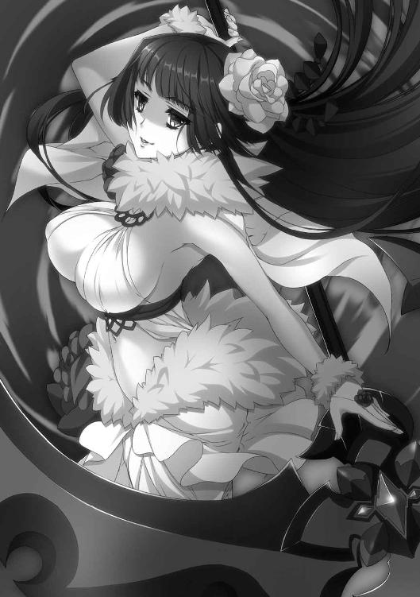
青い髪をしたリュドミラ＝ルリエは十八歳。『凍 の雪姫』の異名を持ち、ティグルやエレンと同い年だが、その二人より少しばかり背が低く、小柄な身体つきをしている。
の雪姫』の異名を持ち、ティグルやエレンと同い年だが、その二人より少しばかり背が低く、小柄な身体つきをしている。
しかし、戦士としての強さはエレンに引けをとらず、戦姫としての誇りと自信にいたってはエレン以上に備えていた。もっとも、ティグルと出会い、彼に好意を抱くようになってからは、青い瞳の中に優しさや甘えを覗かせることが多くなっている。彼女はその変化を自覚しており、ひそかに歓迎していた。
ミラは青を基調とした服の上に白銀の胸当てをつけ、白いスカートのまわりを金属片で覆っている。凍えてしまいそうなほどの軽装だが、ミラの手にある槍が、彼女を寒さから守っていた。『破邪の穿角』とも呼ばれる竜具、凍ラヴィアスだ。
彼女の隣に馬を並べて、ゆるやかに波打つ金髪を揺らしているのは、ソフィーヤ＝オベルタスだ。年齢はミラより四つ上の二十二歳。緑と白を組みあわせた絹服を身につけ、薄地の外套を羽織っている。
ソフィーが抱えこむように持っているのは、いくつもの円環を組みあわせて見事な装飾をほどこし、彼女の瞳の色と同じ緑柱石をあしらった黄金の錫杖だ。『退魔の祓甲』の二つ名を持つ彼女の竜具、光華ザートである。
いま二人が王都へ向かっているのは、戦勝を報告するためだった。もっとも、それは表向きの理由だ。ミラとソフィーの真意は、ヴァレンティナを牽制することにある。あの黒髪の戦姫に、王都を奪われてはならなかった。
そうして、王都まであと少しというところに来たとき、二人の頭上でそれは起こった。
昼下がりの青空が、毒々しい紫色に変わったのである。
「何よ、これ......」
ミラが目を見開いて空を睨みつけ、ソフィーも口元に手をあてて絶句した。ミラの凍は警戒するように穂先から凍気を放ち、ソフィーの光華も光の粒子を振りまいて使い手を覆い、守ろうとする。
しかし次の瞬間、空の色は青に戻った。もしかして何かの見間違いだったのではと思うほどにその変化は短すぎて、周囲に何の影響も及ぼさなかったかに見えた。
だが、ミラとソフィーの瞳から緊張の色は消えない。彼女たちの相棒である竜具が強い反応を示したのだ。錯覚などではありえなかった。
「いまの、何だと思う？」
「ティル＝ナ＝ファに関わることでしょうね」
ミラの問いかけに、ソフィーは細い眉をひそめて応じる。二人の後ろでは、兵たちがざわめきはじめていた。彼らも紫色の空を見たのだ。
「そういえば、いやなものを思いだしたわ」
ミラが不愉快そうに表情を歪める。ブリューヌの王宮で調べものをしたときのことだ。ヴォジャノーイという蛙の妖精について書かれたものを、彼女は見た。
それには絵がついていたのだが、絵の中の大地は紫色で、海は緑色をしていた。太陽は黒く、月は赤く描かれていた。見たときは薄気味悪いとしか思わなかったが、あの絵はこのような変化を示唆していたのだろうか。
「兵たちに何か言った方がいいかしら？」
「それで安心させることができるのならね。わたくしは少し自信がないわ」
馬上で、ソフィーは肩をすくめる。自分たちは気にしていないと態度で示す以外に、とりあえずできることはなさそうだった。
さらに半刻ほど街道を進み、王都シレジアの城壁が遠くに見えたとき、二人の戦姫は敗北を認めることになった。王都の様子をさぐるべく放っていた騎兵の部隊が帰還し、次のように報告したのだ。
「城壁にオステローデ軍の軍旗が多数ありました。城門は開かれています」
ミラとソフィーは顔を見合わせた。ヴァレンティナは王都を手中におさめたのだ。
二人は兵にねぎらいの言葉をかけて、下がらせる。ミラがため息をついた。
「相手の狙いがわかっていながら、それを阻止することができなかったときほど悔しいものはないわね」
「素直に、ティグルは無事かしら、って心配そうな顔をしてもいいのよ」
心の奥底に押しこめていた不安を指摘されて、ミラは渋面をつくる。二十日近く前に、青い髪の戦姫は長く抱えていた想いをティグルにぶつけたばかりだった。
「ティグルは無事に決まってるわ。ヴァレンティナなんかに捕まるわけがないもの」
子供じみた発言だが、彼女の本心でもある。「それより」と、ミラは話題を変えた。
「これからどうする？」
「エレンたちと合流するしかないわね。それとも王都を攻める？」
「馬鹿言わないで」
からかうようなソフィーの提案を、ミラは笑って一蹴する。
王都を攻めようとすれば、よほどの大義名分でもないかぎり、王都で生活する民を敵にまわすことになる。そして、勝とうが負けようが、彼らの敵意を買うことになる。ミラはそんな不名誉を被るつもりはなかった。
仮に大義名分を得られたとしても、王都を攻めるには圧倒的多数の兵と、城壁を超えるための道具がいる。オルミュッツ軍にもポリーシャ軍にも、そのような用意はない。ヴァレンティナと戦うには不足しているものが多すぎた。
二人は進軍を止めると、王都へ数人の使者を派遣する。戦勝の報告ついでに、何かさぐることはできないかと考えてのことだった。それから、街道の脇に幕営を築く。
日が沈んだころ、オルミュッツ軍とポリーシャ軍の両方で、それぞれ百人を超える数の兵士が体調を崩すという事件が起きた。
だが、遠くの地で同じような目に遭ったライトメリッツ軍やルヴーシュ軍の兵たちと異なり、彼らは半刻ほどで原因不明の苦しみから解放された。
原因を推測したソフィーが、体調を崩した者たちを一ヵ所に集め、彼らの中心に立って黄金の錫杖を振りかざし、竜技を行使したからである。
「我が地を祓え舞い散る花片よ」
ソフィーが掲げた黄金の錫杖の先端から光の粒子がほとばしって、彼女の頭上に大輪の花を形作った。その花から黄金の輝きが大地にこぼれ落ち、溶けこんで、広がっていく。その光に触れた兵たちは、たちまちのうちに体調を回復させて起きあがった。
ソフィーのこの竜技は病を癒やすものではない。邪気を祓うものだ。昼間に見た紫色の空が関わっているのではないかと彼女は考え、試してみたのである。
「効いてよかったわ」と、光華の耀姫は胸を撫で下ろした。
王都に派遣した使者が戻ってきたのは、夜遅くのことだった。
ミラはソフィーの幕舎を訪れており、ねぎらいの意味をこめて彼らに紅茶をふるまいながら、報告に耳を傾ける。二人はこのとき、ユージェンが牢獄に入れられたことと、ミロンが統治者代行となったことを知った。
「ヴァレンティナ......オステローデの戦姫は見なかった？」
「第一王子補佐官と呼ばれていました。統治者代行の侍従長閣下とオステローデの戦姫様の二人で、王都を守っているとのことです」
そして、ミロンは「後日、褒賞は授けるゆえ、まずは己の公国へすみやかに戻り、軍を解散して待機すべし」と、使者に伝えて帰したということだった。
あらためて使者たちにねぎらいの言葉をかけて退出させると、二人だけになった幕舎の中で、ミラとソフィーは視線をかわした。先に口を開いたのは凍の雪姫だ。
「王子補佐官ね。ひとまず、謹慎前の地位を取り戻したというところかしら」
もっとも、実情は違うのだろうとミラは予想する。ヴァレンティナには以前よりも強い権力が集中しているに違いない。ソフィーも頰に手をあてて嘆息した。
「ミロン殿は決して悪い方ではないのだけど......。統治者としては視野が狭いわ。そこを利用されている気がするわね。ユージェン卿の安否も気になるし」
もうひとつ、ミラとソフィーの表情を深刻なものにしているのは、ティグルについての情報だった。使者たちは、王宮に勤める官僚らにティグルのことを聞いてくれたのだが、それによると、ある日突然姿を消したということらしい。
この報告を聞いたとき、ミラは一瞬ではあったが暗殺の可能性を疑い、目を大きく見開いて顔を青ざめさせたものだった。
ソフィーは彼女の肩を軽く叩いて落ち着かせると、安心させるように説明した。以前にも話したように、ティグルには利用価値が多い。暗殺するぐらいなら、黒弓を奪って牢獄に入れるだろうと。ミラは納得して、ため息を吐きだしたのである。
だが、それではティグルはどこに行ったのかという疑問は残る。
「まずはエレンたちと合流して、それからみんなで考えましょう」
考えるにも材料がなさすぎるのだ。ソフィーの言葉に、ミラはうなずくしかなかった。
夜明けを待って、二人の戦姫の軍は西へ向けて出発する。名目は「ライトメリッツ軍の救援」だ。エレンがレグニーツァ軍相手に苦戦し、救援を求めているという話を二人はでっちあげたのである。「公国に帰還せよ」というミロンの命令に対して「王国の平和と安寧を優先する」と答えつつ、エレンと合流するにはこれがもっとも手っ取り早かった。
そうして王都から離れて、軍を進ませることさらに二日。昼を過ぎたころ、ひとりの兵がミラのもとへ報告に訪れた。
斥候として動いていた彼は、一ベルスタ（約一キロ）ほど先に、十数人からなる野盗らしき集団を見かけたという。数人の旅人が襲われているようだったので、上に報告せず、彼の判断で手近な兵を集め、野盗たちを蹴散らしたとのことだった。
「よくやったわ。その旅人たちは保護したの？」
ミラは笑顔でその兵を賞賛した。いちいち指揮官に報告して判断をあおいでいたら、旅人の救出は間に合わなかったのかもしれない。臨機応変の判断ができる部下というのは、貴重な存在だった。
その兵士は恐縮しながらも、少し困ったような顔になって報告を続ける。
「はい。近くの町へ連れていこうとしたのですが......。我々がオルミュッツとポリーシャの軍だと知ると、戦姫様のお知りあいだと言い、ぜひともお目通りをと申しておりまして......。いかがいたしましょうか」
青い髪の戦姫は眉をひそめた。王宮から逃げてきた者ならば、可能性はある。旅人たちの名を尋ねた。
「ブリューヌ人が三人。ティッタという若い娘と、ガスパール、ジェラールというブリューヌ貴族です。あのヴォルン伯爵の知己だと言っていますが......」
ミラは目を丸くしたあと「仕方ないわね」と、内心でつぶやく。
彼女自身はともかく、オルミュッツ兵の中でティグルと戦場をともにした者はせいぜい二千というところだ。それも、二年前のブリューヌ内乱においてである。
ティグルに仕えている侍女など、知る者がいなくても仕方がない。ジェラールは主に軍の後方で働いており、目立たなかった。
「その者たちをここに連れてきなさい。それから、誰かをポリーシャ軍に向かわせて、ソフィーヤ＝オベルタスを呼んできてちょうだい。──あと、ダーマードも」
ダーマードはムオジネル人の若い戦士だ。いくつかの事情から、彼はティグルと行動をともにしていたのだが、ミラとソフィーがムオジネル軍の撃退を命じられた際、青い髪の戦姫に協力するようティグルが頼んだのである。
ムオジネル軍との戦いが終わったあとも、彼は故国へ帰らず、同行していた。
ミラとソフィーは、幕営の設置と、その後の休息を兵たちに命じると、オルミュッツ軍の総指揮官用の幕舎でティッタたちと再会を果たした。
ティッタは十七歳。栗色の髪を頭の後ろで結んでポニーテールにしている。小柄な身体を赤い外套に包み、緊張と疲労とで顔を強張らせていたが、ミラとソフィーの顔を見ると表情を緩めていまにも泣きだしそうな笑みを浮かべた。
「あ、あの、リュドミラ様、ソフィーヤ様......！」
感情が一気に昂ぶったのか、ティッタの両眼には涙が浮かび、すぐにあふれて頰をつたう。二人の名を呼んだあとは言葉が出てこないようだった。
「無事でよかったわ」
ミラはそう笑いかけ、ソフィーはティッタをいたわるようにそっと抱きしめる。その光景を見て、ミラは少しだけうらやましそうな表情をした。こうしたところで率直に行動に出られるのは、間違いなく金髪の戦姫の長所だろう。
ガスパールとジェラールも、ティッタ同様に旅装姿だった。二人はブリューヌ貴族としての礼節を守って、ミラたちに頭を下げる。
「我々を助けていただいたこと、感謝いたします。いまは旅の途中ゆえ、言葉しか尽くせるものがございませんが、後日、別の形で謝意を示させていただきたく」
二人の言葉に、ミラは鷹揚にうなずいてみせた。ガスパールはマスハス＝ローダント伯爵の次男であり、ジェラールはユーグ＝オージェ子爵の息子にして、ブリューヌの宮廷書記官である。礼を述べるにも、まず形式を守る必要があるのだった。
ダーマードはとくに表情も変えず、ガスパールとジェラールに対して「生きていたか」とだけ言った。ガスパールはにやりと笑って「おまえこそ」と返し、ジェラールは「あなたの語彙が貧弱なのか、ムオジネル語が温かみに欠けるのか、どちらでしょうね」と、肩をすくめる。ムオジネル人の若者は気を悪くするでもなく、鼻で笑った。
そんなダーマードだが、自分よりも年下で女のティッタにはそれなりに気を遣うらしく「がんばったな」と言った。ティッタも笑顔で「ありがとうございます」と答える。
ミラは兵士に命じて、食事を用意させた。
蜂蜜を多めに溶かしたお湯、麦粥や魚スープ、小さく切ったチーズ、薄く切って食べやすくした干しリンゴなどがティッタたちの前に並べられる。麦粥や魚スープは白い湯気を立ちのぼらせて、見る者の食欲を促した。もちろん、ミラが手ずから淹れた紅茶もある。ジャムは、苺とリンゴの二種類だ。
「パンや肉を食べたかったら、用意するわ。遠慮なく言ってちょうだい」
そうして、なごやかな雰囲気で食事がはじまった。空腹を抱えていたのか、ガスパールとジェラールはたちまち自分の麦粥を空にする。ティッタは体内を温めるかのように、魚スープをゆっくりとすすった。
「食事をしながらで悪いけど、どうしてここにいたのか、話してもらえるかしら」
紅茶を飲みながらミラが尋ねる。ティッタはすぐには答えず、迷うような視線でガスパールとジェラールを見た。麦粥の滓を口元につけたままのガスパールは、安心させるようにティッタの肩を叩く。
「おまえの説明で足りないところがあると思ったら、俺が補足してやる」
ティッタはこくりとうなずくと、ミラたちに向き直った。
「十日以上前のことなんですが、ティグル様が王都からいなくなってしまったんです。ガスパールさんとジェラールさんのところには、あたしのことを頼む、っていうティグル様の書き置きがあったんですが、どこに行くとかは何も書いてなくて......」
ミラとソフィーは目を丸くする。ティグルが姿を消したことは聞いていたが、そんなに前からだとは思っていなかったのだ。気を取り直して、ミラは「続けて」と言った。
当然、ティッタたちはティグルの行方をさがした。だが、数日かけても何の手がかりも得ることはできなかった。
ジェラールの提案で、ティッタはユージェンを頼ろうとした。しかし、王宮へ行ってみると、会うことはできないと冷たく断られた。
「我々はブリューヌの特使として、伯爵閣下にお目通りを願っているのだが」
ガスパールがそう訴えたが、王宮の兵たちは取り次ごうとさえしなかった。ユージェンが牢獄に入れられたという話を聞いたのはそのあとだ。
さらに、ジュリアン＝クルーティスがビドゴーシュ軍を率いて王都を攻めようとしているという噂が流れて、王都は不穏な空気に包まれた。北から来たという商人や旅人が、武装した数千の兵を見たと話すと、それは瞬く間に広まった。
ティッタたちは行き詰まった。歩きまわって情報を集めようにも、人々の多くはビドゴーシュ軍を恐れるか、怪異の噂話をするばかりで、話を聞いてくれる者はいない。
王都を囲む城壁の門が閉ざされたとき、ティッタはついに覚悟を決めた。
「──ティル＝ナ＝ファに、教えてもらえないかと思ったんです」
わずかな沈黙が六人の間に横たわる。ミラが感心とも呆れともつかない息を吐いた。
「神託ね。それにしても、おもいきったことをしたわね......」
神託とは、神官や巫女が祈りを捧げて神々の意思を伺うものだ。神々の意思かどうかは本人にしかわからないので、直感で導きだした答えが神託として扱われることもある。
ティッタとティル＝ナ＝ファの奇妙な因縁らしきものについては、彼女から聞いたことがあった。だが、ブリューヌでもジスタートでも邪神として認識されている女神に祈りを捧げるなど、決して公にはできない行為だ。
「大通りに面している神殿は、どこもひとが大勢いて......。ガスパールさんとジェラールさんに、目立たないところにあって、多くの神々を祀っている神殿をさがしてもらって......。そこで祈りました」
「ティル＝ナ＝ファは、何かを教えてくれたの？」
ソフィーが優しい口調で聞いた。ティッタは緊張をにじませた顔でこくりとうなずく。
「はっきりとした言葉で伝えてくれるわけじゃなくて、ぼんやりと、という感じなんですけれど、北西へ向かえ、って」
「北西に何があるの？」
ミラの質問に、ティッタは力なく首を左右に振った。
「わかりません。でも、声の感じからすると、そこにたどりつけばわかるみたいで......」
はっきりしない言い方ね、とミラは内心で思ったが、神託というのはそういうものなのだろうと納得することにした。
「ビドゴーシュ軍といいましたか。その連中がヴァレンティナ殿の軍に敗れたことで、閉ざされていた城門がすべて開かれたんです。王都を出るにはいましかないと......」
褐色の髪をかきまわしながら、ジェラールが補足する。
「それで、あなたたちは王都を出て北西に向かっていたら、襲われそうになったのね」
「間一髪でした」と、しみじみとした口調でジェラールは答えた。
ミラとソフィーは視線をかわす。ソフィーが口を開いた。
「ここから北西というとレグニーツァ北部か、ルヴーシュになるわね。ルヴーシュには、古い時代の神殿が数多く眠っていると聞いたことがあるわ」
「古い時代ね......」
ミラは面白くなさそうに目を細めた。
つじつまは合う。ペルクナスをはじめとする神々は、ジスタートという国ができてから信仰されるようになったわけではない。諸部族の間で信仰されていた神々が、ジスタートという国が興ったことによってあるていど整理され、現状に至ったのだ。
ミラは腕組みをして考えたが、決断は早かった。
「わかったわ。あなたを信じる。私とソフィーもそこに行く」
この発言に、ティッタは目を丸くした。ガスパールとジェラールもだ。
「え、ええと、いっしょに来てくださるのは嬉しいのですけれど......」
ティッタはしどろもどろな口調になって、両手を意味もなくさまよわせる。ソフィーはにこりと笑うと、彼女の手にそっと自分の手を重ねた。
「気にしないでいいのよ。ティグルのことが気になっているのは、わたくしたちも同じだもの。それに、ティグルがこの時期に、些末な理由で王都を離れるとは思えないわ」
そう言ってティッタから手を離すと、ソフィーはミラに視線を転じた。
「兵たちのことはどうするの？」
「連れていくことはできないわね」
ミラは首を横に振る。まず、食糧の問題があった。現在、オルミュッツ軍とポリーシャ軍の食糧と水、燃料の余裕は数日分しかない。これまでなるべく街道を進んできたのも、街道沿いの町や都市で食糧などを調達するためだ。
これが、ティッタの案内に従って進んでいくとなったら一気に心許なくなる。街道から外れたところへ一日ほど進めば、街道まで戻ってくる時間を含めて二日分の食糧が必要となってくるからだ。
次に、相手は何なのかという問題がある。ティル＝ナ＝ファに関係があるとすれば、魔物が出てくるかもしれないい。そうなったら、数の力で挑むのは愚策でしかない。
「そうなると、兵の数を厳選して、王都に近い場所に待機させておくというところね」
ソフィーが手を口元にあてて考えこむ。王都を占領しているヴァレンティナが、こちらへ敵対的な行動を起こす場合に備えて、王都近くに兵を用意しておきたい。
しかし、待機させるのならば、その間の食糧や燃料を用意してやらねばならない。そして、これからの行動が何日かかるかわからない以上、兵の数は絞らざるを得なかった。
「あとは、エレンたちにはどうやって知らせるかだけど」
ソフィーの言葉に、ミラはしかつめらしい顔で答える。
「レグニーツァとルヴーシュに、それぞれ兵を走らせることぐらいしかできないわ。エレオノーラたちがいまどこにいるのか、わからないんだから。騎兵は百騎しかいないから、二十騎一組で四組までが限界ね。最低でも二十騎は手元に置いておきたい」
「わたくしが出せる騎兵も同じぐらいね。レグニーツァ兵と戦いになりそうだったら、かまわないから逃げるようにというのは徹底させましょう」
ソフィーの提案に、ミラも異論はなかった。エレンとフィグネリアの戦いがどのような結末を迎えたのか、二人はまだ知らない。最悪の場合を考えておく必要は常にあった。
「あたしも、ティル＝ナ＝ファにお願いしてみます。エレオノーラ様やリムアリーシャさんに、何とかティグル様のことを伝えられるように」
小さな手を握りしめて、ティッタは少しでも役に立とうと申しでる。ミラは栗色の髪の娘に申し訳なさそうな微笑を向けると「あまり無理をしては駄目よ」とだけ言った。
本当は止めるべきなのかもしれないが、それはできなかった。大切に想う男の危機について知ることすらできなかった辛さや悔しさを、青い髪の戦姫は体験している。
「戦姫殿。よろしいでしょうか。ひとつ、お知らせしておくことがあります」
話が一段落ついたと判断したのだろう、ガスパールが口を開いた。
「女神に祈りを捧げるために入った神殿で、我々はルスラン殿下の姿を見ました」
「殿下を？」
ソフィーが眉をひそめる。さきほどのティッタの話では、彼女たちは目立たない神殿を選んで入ったということだった。ルスランは激務がたたって倒れ、そのあとをユージェンが、次いでミロンが引き継いだ。つまり、ルスランは回復していないはずなのだ。
今度はジェラールが口を開いた。
「無礼な言い方になってしまうことをお許しください。そのときの殿下のご様子は、ひどく酔っぱらっているかのようでした。髪も服装も乱れ、足どりは定まらず、調子外れの歌を歌い、身体を揺らしたり、首を振ったりするありさまで。私たちが呆気にとられていると、その神殿に勤めている女神官が現れて、殿下を連れていかれました」
「心の病に罹っていたころの殿下は、そのように振る舞っておられたという噂を聞いたことがあったけれど......」
さすがに不安を隠せない顔で、凍の雪姫はため息をついた。王子の心の病が、かつての恐ろしさを取り戻しつつあるのだろうか。
「殿下のことは気になるけれど......。ひとまずヴァレンティナに任せましょう」
ソフィーの台詞に、ミラは訝しげな顔をすることで説明を求める。
「これまでのヴァレンティナの行動は、常にルスラン殿下を基準にしたものでしょう。わたくしたちを襲ったのも。ビドゴーシュ軍を破ったのも。彼女は何が起ころうと、殿下をお守りしようとするはずよ」
ヴァレンティナにとって、まだルスランは充分な利用価値を有しているはずだ。たとえば、自分たちとヴァレンティナが戦うことになった場合、彼女の側にルスランがいるだけで、政治的にはこちらが不利になる。
ソフィーからそのように説明を受けて、ミラは青い瞳を輝かせてうなずいた。
「そうね。私たちはティグルのもとへ急ぐとしましょう」
二人の戦姫の間で話がまとまったのを見て、ガスパールはダーマードに視線を向ける。
「頼みがある。俺たちの旅を手伝ってくれないか」
ティッタの頭に軽く手を置いて、ローダント家の青年貴族は続けた。
「俺といっしょに、こいつを守ってやってほしい」
ダーマードはガスパールを見て、それからジェラールに視線を移す。
「こいつは使えないか」
「荒事はまったく駄目だ」と、ガスパール。
「そうなんですよね。そこで、私からお願いが」
横で酷評されているというのに涼しい顔で、ジェラールは二人の戦姫に頭を下げる。
「どちらかの軍で、私を預かっていただくことはできないでしょうか」
「いいの？」
半ば試すような視線の鋭さで、ミラはジェラールに問いかけた。自分たちは、これからティグルをさがしに行くのだ。それなのに、ブリューヌ内乱のころからの部下である彼が同行しなくていいのか。ミラの視線を受け止めて、ジェラールは悪びれずに答えた。
「仲間の足を引っ張るためにここまで来たわけじゃありませんからね」
「わかったわ」と、ミラは意地の悪い笑みを浮かべてうなずく。
「あなたの得意分野は計算と、物資の管理だったわね。しばらく私の軍で働きなさい」
こうしてミラとソフィー、ティッタ、ガスパール、ダーマードの五人は、ティル＝ナ＝ファの示す北西へと向かうことになったのである。
◎
リーザとオルガがライトメリッツ軍の幕営に呼ばれたのは、ボロスローの地を離れ、王都に向かって進軍をはじめてから三日目の朝だった。
「何かあったのかしら。しばらくは王都へ向かうだけのはずだけど」
リーザは首をかしげながらも、オルガをともなってライトメリッツ軍の幕営を訪れる。二人の戦姫は、すぐにエレンの幕舎へと通された。
幕舎の中は厚手の絨毯と毛皮を重ねて地面に敷いており、隅に筆記具や地図など大小さまざまな道具や葡萄酒の瓶、陶杯、銀杯などを置いている。それらの中に、黄金の刃と朱色の刃を持つ双剣があった。
「すまないな。わざわざ来てもらって」
エレンとリムは、絨毯の上に並んで座っている。リムはいつもの青い軍衣ではなく、黒を基調とした服の上に胸甲をつけ、白いズボンを穿いていた。首には緋色の襟巻きをしている。露出している腕や脚には火傷の跡があり、包帯が巻かれていた。
「もう火傷はだいじょうぶなの？」
エレンの向かい側に腰を下ろしながら、リーザが尋ねた。リムは会釈をして答える。
「お気遣いくださり、ありがとうございます。身体中を焼かれはしましたが、いまは傷跡もほとんど小さくなって、痛みも薄れていますから」
リーザはそっとリムの表情を観察した。痛みがないわけではないようだが、無理をして言っている様子もない。バルグレンなら、そのような加減も可能なのかもしれない。
「それならいいけど。ところで、あなたにしては変わった服装ね」
意外そうな顔でリーザが言うと、リムはかすかに愛想のない表情をやわらげた。
「これは予備の服です。昔、身につけていたものに似せて、つくってあります。あのときの気持ちを忘れないようにと」
リムが答えている間に、エレンが葡萄酒の瓶と人数分の銀杯を引き寄せる。次々に葡萄酒を注いでそれぞれの前に置いていきながら、真剣な口調で聞いた。
「二人に聞きたいんだが、ザガンという言葉に心当たりはあるか？ 人名でも地名でも何でもいい」
「ザガン？」
眉をひそめて、おうむ返しにリーザはつぶやく。その隣で、オルガは銀杯に口をつけながら首を横に振った。
「その言葉がどうかしたのか」
オルガの質問に、エレンは言葉選びに迷うような渋い顔をつくる。彼女の傍らに控えているリムも、どこかばつの悪そうな顔をした。
二つ数えるほどの間を置いて、エレンが答える。
「リムが、夢を見たんだ。サーシャとフィグネリアの夢をな」
「サーシャって、アレクサンドラ＝アルシャーヴィンのこと......？」
思いがけない名前が出てきて、リーザは何度か瞬きをした。
オルガはサーシャに一度しか会ったことはないが、彼女がエレンの親友だったという話は以前に聞いたことがあった。黙って話の続きに耳を傾ける。
「続きは、私からお話しさせていただきます」
二人の戦姫を見つめて、リムが口を開いた。
「昨夜、私は夢を見ました。夢の中は暗闇に包まれていて、気がつくと、アレクサンドラ様とフィグネリアが、それぞれ戦姫としての黒い軍衣をまとって、目の前に立っておられました。そして、声が聞こえたのです。『ザガンに』と。お二人の声のようにも、まったく違う誰かの声のようにも思えました」
リムが話し終えると、奇妙な沈黙が四人を包みこむ。顔をしかめてリーザが言った。
「エレン。それからリムアリーシャ。私たちを呼んだのは、その話をするため......？」
「呆れるのはわかるが、もう少しだけ私たちにつきあってくれ」
膝の上に置いた手に力をこめて、辛抱強くエレンは言葉を続けた。
「フィグネリアだけなら、戦ったばかりの相手だからわからないでもない。だが、サーシャも出てきたというのが、私には気になるんだ。ザガンという言葉についても、リムははじめて聞いたらしい。もしかしたら......」
「二人の霊がリムアリーシャに......いえ、私たちに警告を発したとでも？」
リーザは困惑も露わにエレンを見つめたあと、意見を求めて色の異なる瞳をオルガに向けた。エレンがリムを信頼していることはリーザもわかっている。しかし、自分たちを呼んで打ち明けるほど重要なことだとは、さすがに思えなかった。
オルガは小首をかしげてリムを見上げていたが、やがてぽつりと聞いた。
「あなたは、そのアレクサンドラとは親しかったのか？」
「戦姫という立場にもかかわらず、アレクサンドラ様は気安く接してくださいました。ですが、たとえば私ひとりでアレクサンドラ様と会って談笑するような仲かというと、そうではなかったと思います」
オルガの質問の意味を図りかねながらも、リムは誠実であろうと努めて答えた。リムの隣で、エレンが腕組みをして補足する。
「リムは遠慮して距離をとろうとする癖があるからな。だが、私から見ても、二人の関係はいまの説明通りのものだった。何か気になる点があるのか？」
エレンの疑問にすぐには答えようとせず、オルガは二人の背後にあるものへと視線を向けた。金色の刃と朱色の刃で一対となる、見事な装飾のほどこされた二本の小剣。
オルガは視線をエレンとリムに戻して、新たな質問をぶつけた。
「昨日の夜、二人はここで寝たのか」
「ああ。リムはまだ火傷が治りきっていない。そばにいた方がいいと思ってな」
エレンの答えに小さくうなずくと、ようやくオルガは自分の考えを述べた。
「あの竜具が、夢を見せたように思う」
最年少の戦姫の言葉に、他の三人の視線がバルグレンへと集中する。オルガは自分の竜具である羅轟の刃を指でなぞりながら、言葉を続けた。
「わたしのムマは言葉を話せないが、たしかな意思を持っている。手に持っていると、それを感じることが何度もある。あの竜具が、かつての使い手たちの姿を借りて、リムアリーシャに何かを伝えようとしたのかもしれない」
それから、オルガは茫洋とした顔を天井に向けた。
「長く使われてきたものに、魂のかけらが宿ることがある。騎馬の民の言い伝え」
「ふむ」と、エレンは唸った。腕組みをしたまま、彼女はリーザに視線を向ける。
「そういえば、おまえはどうだ？ ザガンという言葉に何か心当たりは？」
「私の場合、ザガンといわれてすぐに思い浮かぶのは領内の地名ですわね」
絨毯の上に、リーザは簡単な地図を描いてみせる。
「ここからだと、北へ向かって馬で二、三日というところかしら。街道から外れた荒野ですわ。古い時代の神々を祀っていた町の跡があるぐらいで」
「古い時代の神々か」
その言葉に反応したのはエレンだった。リーザは眉をひそめる。
「私のルヴーシュでは、そんなに珍しいものではありませんわよ」
「そうかもしれない。だが、私たちは古い時代の、それもえらく厄介な女神を知っているだろう？」
エレンの言葉に、他の三人はまったく同時に、ある女神の存在を思い浮かべた。三つの人格を持ち、夜と闇と死を司る女神。
「闇の中に死者の霊を、と考えればたしかに辻褄は合いますが」
「ですが、いまからザガンに向かうとなると問題は山積みですわ。さきほど言いましたように、ザガンは街道から外れているんですもの」
平坦な地面であっても、道のないところを進めば行軍速度は落ちる。泥濘に足をとられたり、小石を踏んで足を痛めたり、丈の長い草に服の裾が引っかかるなどの理由からだ。転倒して前後の仲間にぶつかり、喧嘩沙汰になることもある。
行軍速度が落ちると、一日あたりの行軍の時間を増やすことになり、休息の時間を削ることになる。そうして兵の士気と体力が徐々に奪われていくのだ。
まして、現在のライトメリッツ軍とルヴーシュ軍には食糧の余裕などあまりない。このあたりの事情はミラたちと変わらなかった。
「それに、早く王都に戻らないとティグルが大変では......」
「そこだ。もしかしたら、ティグルがこのザガンに関係あるのではないかと私は思う」
エレンは身を乗りだして、リーザを見つめた。
「ティル＝ナ＝ファと関わりがあるのは、私たちではない。ティグルだ。リムの夢は私たちにティグルを助けろと言っているのではないか」
「ティグルがザガンに？」
リーザは訝しげに眉をひそめたが、その可能性を否定することはできなかった。
ヴァレンティナの狙いは、自分たちを王都から遠ざけることで、王都を占領しやすくすることだと思っていた。そして、彼女はティグルの黒弓の力を知っている。ならば、ティグルがひとりになったところで、何らかの手段で彼を王都から引き離すのではないか。
「──わかりましたわ」
五つ数えるほどの間、思案して、リーザは言った。
「あなたの言葉に賭けましょう、エレン」
三人の戦姫とひとりの女騎士は相手の顔を見つめてうなずきあった。
それから、話しあいは事務的なものへと移る。ザガンへ向かうのはエレンとリーザ、オルガにリムの四人だけとした。まだ傷の癒えきっていないリムも来ることにエレンはあまりいい顔をしなかったが、夢を見たのは自分だからと、リムは譲らなかった。
フィグネリアとの戦いでは、リムがいなければ、エレンは間違いなく負けていた。そのことを思うと、白銀の髪の戦姫は親友に強く出られない。また、リムのティグルへの想いをけしかけた身としては、ティグルの危機かもしれないこの一件について、同行を許さないとは言い難かった。自分がリムの立場であれば、やはり同行を強く望むだろう。
兵は両軍ともに一千五百ずつ残し、それ以外はライトメリッツなりルヴーシュなりに帰還させる。残った三千の兵は東に向かい、ミラとソフィーの軍と合流する。
さらに、自分たちに友好的な領主貴族への手紙をエレンとリーザは何通かしたためた。
たとえばヴァレンティナの妨害などによって、軍が王都に近寄れない場合、どこかで自分たちが戻ってくるのを待ってもらわなければならないからだ。いくらかでも食糧や燃料に余裕のある領主貴族から、まとめて買えれば効率がいい。
また、あとで自分たちがライトメリッツ軍とルヴーシュ軍をさがすときにも、彼らから話を聞けばさがしやすい。兵力をおさえるのは、必要なことと割り切った。
「ヴァレンティナのやつが何をたくらんでいようが、こちらは五人。五対一だ」
エレンは前向きにそう言った。むろん、それはヴァレンティナも当然わかっていることであり、彼女はその差を埋めるための手をいくつも打っているのだろう。それを承知の上で、いまはそう言って自分を鼓舞するしかなかった。
それぞれの軍への指示は昼過ぎには終わり、四人はザガンへと向かった。
３ 女神降臨
その男は、山の中や森の奥にいることを好んだ。
そういうところにひとりでいると、ひとならざるものたちの姿が見え、声が聞こえてくるからだ。歌を好む鳥の妖精シレーヌ、あらゆる言葉を操る狼の精霊ルー、いたずら好きの小人リュタン。そうしたものたちと触れあうことに、男は静かな喜びを感じていた。
神と呼ばれる存在に近づきたいというのが、男のひそかな願いだった。
ひととの交流を断っていたわけではない。気まぐれでふらりと人里に現れては、村の者の病を診て治したり、薬草の束を置いていったりした。男が名のらなかったため、人々は彼を賢者殿と呼んだ。男が極端に小柄だったため、小さき賢者殿と呼ぶ者もいた。
望まない交流もあった。彼を目障りな存在だと考えて、襲いかかってくる者たちがいたのだ。山や森を荒らされるのではないかと危惧した狩人や木こり、彼を怪しい呪術師だと決めつけた神官、得体の知れない男に、村の近くにいてほしくないと考えた者たち。
賢者はときに彼らをあしらい、ときに逃げて、ひとならざるものたちと触れあえる場所を求めた。
その日、賢者はいつものように地面に腰を下ろし、木々に囲まれた中で自然の音に耳をすませていた。射しこむ木漏れ日が、男のまとう外套に光の斑点をつくっている。まもなく昼になろうというころだ。
賢者の耳に人間の足音が聞こえたのは、そのときだった。
「おまえさんか、このあたりで有名な賢者というのは」
遠慮や礼儀というものをまったく感じさせない声音だった。賢者は身をよじって、声をかけてきた者に非難のこもった眼差しを向ける。
男だった。年齢は二十代半ばというところか。粗末な革鎧を身につけ、腰には剣と矢筒を提げ、弓を背負っている。手には大振りの鉈を持っていた。
髪は短く、目と鼻と耳は大きく、唇は太い。一言でいって大雑把なつくりの顔である。だが、男の目元にはふてぶてしいほどの自信がにじんでいた。
「人違いだろう」
賢者は、男との会話を拒むようにそう答える。しかし、男は賢者の態度を意に介さず、自分の聞きたいことを聞いてきた。
「なあ、このあたりで暴れまわっている邪教の信徒たちのねぐらを知らないか」
一瞬、賢者は迷った。邪教かどうかはともかくとして、その集団の拠点を、彼は知っている。また、賢者は彼らに敵意を持たれており、何度か襲われたこともあった。彼らにとって、賢者の存在は目障りだったのである。
「案内だけならしてやる」
そう言って、賢者は立ちあがった。
案内だけでは終わらなかった。
賢者は、邪教を信奉する集団との戦いに駆りだされた。それがすむと、男に引きずられるようにして町に連れていかれ、いくつかの事件や戦い、陰謀に巻きこまれた。あとから振り返ってみると、男との出会いが賢者の人生を一変させてしまったのだ。
男には、このひとを支えてやらなければと思わせる雰囲気が備わっていた。その眼に宿る光や、口から発せられる声には、ひとの感情を強く揺さぶる力があった。
男は傭兵であったから、主たる仕事場は戦場だ。
賢者は戦場に出ることこそなかったが、男のために知恵を絞り、策を練った。男の戦いぶりに見惚れ、常に自信を失わない男の態度に呆れ、ときに男が泥酔して醜態をさらすとため息をついた。男に勧められて、林檎酒を飲むようになった。
男は戦士としても、指揮官としても優れていた。近くの敵は剣で斬り伏せ、遠くの敵は弓で射倒し、数百、数千の兵を巧みに操って、倍以上の敵をしばしば蹴散らした。
またいくつかの出来事や戦を経て、男が一国を築きあげ、その玉座におさまったとき、賢者は最古参の部下として、また王の腹心として、男の傍らに立っていた。
自分はここから去るべきではないか。
賢者がそう考えたのは、そのときだ。
彼はコシチェイと名のる魔物と戦い、死闘の末にその魔物を喰らってから、徐々に人間でなくなりかけていた。外見に変化はない。だが、いまの自分がかつての自分と違うという自覚は、たしかにあった。
王になった男のもとへ行き、賢者は別れを告げた。そうしたら、理由を聞かれた。
賢者は意外に思った。これまで、男のもとを去っていった者は少なくない。利害が対立した者もいれば、男についていけなくなったからと言う者もいた。
ただ、賢者の知るかぎり、誰が去ろうと男は引き止めず、理由も聞かなかったのだ。
「人間でない者が王のそばにいるのは、不都合だろう」
賢者がそう答えると、男は呆れた顔になった。
「おまえは人間だろうが」
賢者は困った顔になったあと「呪術師がそばにいるのはよくない」と付け加えた。男はとくに考えこむ様子も見せず、あっさりと言った。
「神官ということにしてしまうか」
結局、賢者は王のそばに居続けることとなった。
「領地をやる」
あるとき、王は賢者を呼びだしてそう言った。賢者は渋い顔をした。
「俺の都合だ。どこでもかまわないから、好きなところを持っていけ。功の多い腹心に何も報いようとしない王だといわれるのは、よくないらしい」
王は、そう付け加えた。賢者はため息をついた。これまで王のために、あれこれ知略を巡らせてきた身である。王の言うことが理解できるだけに、拒絶はできなかった。
五つ数えるほどの時間、王を待たせて、賢者はひとつの地名を挙げた。
「ルテティアをくれ」
そこは、賢者と男が出会った地だった。だが、賢者は感傷だけでその地を選んだわけではない。もうひとつ、理由があった。
「アルテシウムは私が管理しよう。だから──」
賢者は言葉を続けた。
「おぬしはやつらなど気にせず、どこまでも遠くへ駆けていけ」
それから、いい機会だとばかりに賢者は王に進言した。弓を捨てるようにと。
「おぬしにはデュランダルがあれば充分だろう。弓は、よくない」
王はすぐには言葉を返さず、賢者をまっすぐ見つめて鋭く問いかけた。
「つくらせた俺の石像が剣しか持っていないのは、おまえの指示によるものか」
臆する様子も見せず、賢者はうなずいた。今度は王がため息をつく番だった。
「わかった。だが、俺が弓を捨てたところで、たいした影響はないと思うがな」
そして、王は賢者に酒瓶を放ってよこした。
「林檎酒だ。そういえば、ルテティアではよい林檎がとれるそうだな」
賢者は王に一礼すると、酒瓶を抱えて退出した。
暗闇の中で、マクシミリアン＝ベンヌッサ＝ガヌロンは目を覚ました。
「夢、か......？」
かすかな驚きをこめて、ガヌロンはつぶやいた。王都シレジアでヴァレンティナ＝グリンカ＝エステスと話をしたころから、彼は睡眠を必要としなくなっていたからだ。魔物を喰らったことによる影響であろう。
ガヌロンは目を閉じる。夢の一幕を、瞼の裏に映しだそうとするかのように。
仕えた王は齢を重ね、人間らしく老いて死んだ。子を頼むという類の言葉を自分に遺していかなかったのは、ありがたかった。王の子には、何も感じるものがなかったからだ。
コシチェイという魔物を喰らって以来、ガヌロンは老いるということがなくなった。古い伝承などでは、その魔物は『不死たるもの』と呼ばれていたが、異名にふさわしい能力を持っていたようである。自分の身がいつ朽ち果てるのか、ガヌロンにはまったく予想がつかなかった。
あの山や森に帰るか。
ふと、そう考えた。男とともにあった数十年こそが、自分の人生において異端であったのだ。ひとりになり、妖精や精霊の声に耳を傾ける日々に戻るべきではないか。
「何を」
瘴気混じりの息を吐きだして、ガヌロンは自嘲した。まだ遠い昔の夢を見ているのか。
自分は、神になるためにここにいる。女神を喰らうことで、それがかなう。
神になって、どうするのか。
王都シレジアで、ヴァレンティナにそう聞かれたとき、それ自体が目的であるとガヌロンは答えた。
噓ではない。ひとならざるものたちの声を聞き、その姿を見ながら、より神に近づくことをガヌロンは願っていた。
だが、神になったら、ひとつ試したいことがある。
ひとの身では不可能だが、神ならば可能だろうことを。
◎
冷たく乾いた空気が、暗がりの中で大きく動いた。
松明の炎が闇の一部を静かに打ち払う。炎に照らされて浮かびあがったのは、やわらかさを感じさせる金色の髪と、その下にある美しい娘の顔だった。
娘の名はレギン＝エステル＝ロワール＝バスティアン＝ド＝シャルル。ブリューヌ王国の王女であり、統治者である。十七歳という若さながら、数々の実績によって、彼女は諸侯や民の信望を得ていた。
レギンは松明を手に、地下へと続く長い階段を下りている。
ひとりではない。三人の男女がレギンを守るべく、彼女の前後にいた。レギンのすぐそばにいる、ずんぐりとした身体を旅装に包んだ老人は、マスハス＝ローダント伯爵だ。二人の前後を、レギンの護衛を務めるクロードとセレナがそれぞれ固めていた。
ここは、ブリューヌ王国の北部にあるアルテシウムという都市だ。この都市の地下には聖窟宮と呼ばれる地下宮殿があり、レギンたちはそこを目指していた。
聖窟宮は始祖シャルルが啓示を受けたところといわれており、ブリューヌの王族にとっては重要な場所のひとつだ。しかし二年前、聖窟宮は天井の崩落により、瓦礫の中に埋もれてしまったのである。
レギンはいずれ瓦礫を運びだして、聖窟宮に入りたいと考えていたのだが、アルテシウムの復興を優先させたことで、その作業は滞っていた。ところが十数日前、アルテシウムの代官を務めるイシドールから報告書が届いたのである。
「聖窟宮に通じる階段が発見されました」
驚きのあまり急いでしたためたのだろう、レギンが呆れるほどに筆跡は乱れていた。
秋の終わりごろ、アルテシウムは竜の群れに襲われた。竜たちはアルテシウムの城壁を破壊して侵入し、建物を吹き飛ばし、通りを踏み荒らして、ほしいままに暴れまわった。
そのとき、アルテシウムには、ジスタートへ向かう予定のティグルたちがいた。彼らの活躍で竜たちはことごとく打ち倒され、アルテシウムには平和が戻ったのだった。
イシドールの読みづらい報告書には、次のようなことが書かれていた。
「竜どもに破壊された建物の多くは、瓦礫をすべて取り除いたあとに建て直すしかないという状態でした。都市の中央にほど近い神殿もそのひとつだったのですが、この神殿の瓦礫をすべて撤去したところ、地下へ続く長い階段が見つかったのです」
不審に思ったイシドールは、この神殿で生活していた神官たちを呼んで尋ねた。この階段はどこへ続いているのかと。神官たちは驚き、当惑した顔で首を横に振った。
このような階段があることを、自分たちはいままで知らなかった。
彼らはそう答えたのである。イシドールは最初、彼らが何かを隠そうとしていると考えて、神殿の図面をさがさせた。
ところが、見つかった図面と照らしあわせてみると、階段のある場所は壁になっていたのだ。図面が間違っているのかと思ったが、他の箇所については正確だった。
イシドールはおもいきって、部下から志願者を募った。前渡しで大金を用意し、何かあったときにはアルテシウムの代官として家族の生活を保障する旨を伝えたのである。五人の兵士が志願し、彼らは武装し、松明を手に階段を下りていった。
一刻ほどで、兵たちは全員無事に戻ってきた。彼らの説明によれば、階段の先は一本道であり、おそらくは瓦礫の下に偶然できたのだろう空洞に出た。そして、金属製の巨大な扉の一部分が見えたというのだ。
王都ニースの王宮でイシドールの報告書に目を通したレギンは、すぐに信頼する二人の重臣を執務室に呼びだした。マスハスと、宰相のピエール＝ボードワンである。
イシドールの報告書を読ませたあと、レギンは真剣な表情で二人に告げた。
「私は今日にでも王都を発って、アルテシウムへ向かいます」
老臣たちは啞然とした顔で若い王女を見つめた。このとき、すでに日は傾きつつある。いまから急いで支度をすませても、王都を出るときには夜になっているだろう。
「殿下が王都から動かれるとなれば、護衛の兵を最低でも百はつける必要がございましょう。とてもとても今日中に出発するのは......」
ボードワンは首を左右に振った。老宰相の本音としては、百でも少ないぐらいである。レギンはこの国の統治者であり、いまのところ後継者はいない。彼女に何かあった場合、代わりを務められる者はいないのだ。
「兵はいりません。セレナとクロードだけで充分です」
これには猫顔の宰相だけでなく、マスハスも頭痛を堪えるような顔つきになった。
「なぜそれほど急がれるのか、お教えいただけませんか、殿下」
灰色の髭を撫でながら、マスハスは尋ねる。レギンは執務机に置いてある二十枚以上の紙片の束を手に取って、老伯爵に渡した。紙片にはいくつかの短い文章が、とくに統一感もなく書かれている。横から覗きこんだボードワンが目を見開いた。
「これは先王陛下の筆跡ですな」
「はい。父上の......ファーロン陛下の覚え書きです」
この覚え書きは、数日前に偶然手に入れたものだった。
ファーロンの部屋は、彼の死後もそのままの状態で保管されていた。これは、せめて次の王が決まるまでは、というレギンの意向によるもので、彼女以外にこの部屋に出入りする者など掃除を任されている侍女ぐらいだったのだ。
その侍女が掃除の際、誤って書棚の書物を一冊落とした。そのとき、書物と書物に挟まれていた紙の束が床にばらまかれたのである。
このことを報告し、平身低頭して謝罪する侍女を、気にすることはないとレギンは笑って許し、紙の束を受けとった。このとき、レギンは紙の束を表紙のない書物か何かだと考えており、せいぜい順番通りにそろえるだけのつもりだった。
だが、見覚えのある筆跡が目に入って、そうでないことはすぐにわかった。ファーロンが政務の合間などに、思いついたことを書きつけたものだったのだ。
その日の夜、父のものを勝手に見るということに申し訳なさと、かすかな好奇心と緊張とに身を浸して、レギンは覚え書きに目を通した。
二十枚以上の紙片とはいえ、紙片いっぱいにびっしりと文字が書かれているものはひとつもない。むしろ、抽象的な単語が並んだ一文の意味を読み解くことや、言葉の中で省かれている主語や述語を推測することに、レギンは苦労した。
それでも、為政者としての父の考えが文字を通して伝わってくるように思えて、王女は顔をほころばせた。
──父上が生きておられたころに、こんな気軽さでお話をしたかった。
覚え書きは、ファーロンが倒れる約一年前から綴られており、毎日のように何かを書きつけている箇所もあれば、十日以上の空白がある箇所もあった。
いまの自分の統治に何か参考になることがないかと思って、レギンは二、三度、覚え書きを読み直したのだが、あることに気がついた。
テナルディエよりもガヌロンの方を、ファーロンはより警戒していたようなのだ。ある日の覚え書きには、次のように書かれていた。
「テナルディエは恐ろしいが、ガヌロンは底が知れない」
その一文を見て、レギンは思いだしたことがあった。
かつて、ファーロンとレギンが食事中に話をしたときのことだ。前後の話の流れは忘れてしまったが、ガヌロンについて、ファーロンは娘にこう漏らしたことがある。
「あの男は、昔のことを自分の目で見てきたかのように語る癖があるな。時々、百歳以上の老人を相手にしている気分になる」
レギンの話を聞いて、マスハスとボードワンは慎重に覚え書きを見直した。たしかに、二人の目から見てもガヌロンに関する記述は少なくないように思える。
「いま、これが見つかったのは運がよかったのかもしれませんな......」
マスハスはぽつりとつぶやいた。もしも内乱が終結した直後にこの覚え書きを見つけていても、これほどの危機感と緊張感を覚えることはなかっただろう。
いまのマスハスたちは、ガヌロンについてよく知っている。彼が死んだと思わせて、実は生きていたことも、その異常性についても。
マスハスとボードワンを見据えて、レギンは言った。
「アルテシウムは、このブリューヌが興ったときからガヌロン公の領地であり、拠点でした。聖窟宮も、代々のガヌロン公が管理してきました。あの場所には何かがあります。私はこの国の統治者として、それを解明したい」
マスハスたちは言葉を返すことができず、顔を見合わせた。
レギンがガヌロンにこだわるのは当然といえた。自分を謀殺しようとしただけでなく、毒によってファーロン王の寿命をいちじるしく縮めた仇なのだから。ファーロンに長く仕えてきたボードワンも、その心情はよくわかった。
「ですが、殿下」
レギンの内心を読みとった上で、ボードワンはなおも反対した。
「ここのところ、妖精を見ただとか、竜とおぼしき怪物を見たなど、不気味な噂が出回っております。それも城下だけでなく、各地から似たような報告が寄せられております。これらの噂がおさまるまでは、王宮をなるべく出ずに過ごしていただきたいのですが」
ジスタートの各地で起きている怪異は、当然ブリューヌでも起きていた。被害が出たという報告も、マスハスやボードワンは受けとっている。老宰相はわざと噂といったが、何かよからぬことが実際に起きているという感覚は、彼も抱いていた。
「あなたの言うことはわかります、宰相殿。ですが、私が王都を留守にできるのは、いましかないと思います」
レギンが言っているのは、近隣諸国の動向についてだ。ザクスタンとムオジネルはブリューヌに侵攻したものの、敗れて撤退した。さらに、ザクスタンはアスヴァールと戦い、ムオジネルでは国王亡きあと、誰が玉座を継ぐかで争いはじめている。
ジスタートでもヴィクトール王が亡くなり、ルスラン王子やパルドゥ伯爵などが政務に携わっていると聞いている。他国に干渉する余裕はないだろう。
ボードワンは唸った。レギンの言うことは、彼にもよくわかるのだ。金髪の王女は、さらにたたみかけた。
「聖窟宮が私を認めてくれたら、今後の統治の助けになるのは間違いありません」
統治者としてのレギンには、ひとつ弱味がある。つい二年前まで、彼女はレグナスという名で、王子として育てられていたのだ。
ファーロン王は神託という言葉を使って説明したが、それに納得できず、不満を抱いた者たちがメリザンドにそそのかされ、謀反を起こした。
聖窟宮は、王家の血を引く者でなければ、その扉を開けることができないといわれている。レギンの正統性を示すのに、これ以上のものはない。
猫を思わせる髭を丁寧に撫でながら、ボードワンは悩んだ。理屈で考えれば、止めるべきだ。だが、しばしば好機というものは理屈を超越して到来することを、彼は経験から知っていた。やがて、ボードワンはマスハスを見た。
「おぬし、殿下についていってくれるか」
その言葉でマスハスは理解した。レギンのこの旅を、ボードワンはなるべく内密に行うつもりなのだ。そうすることで、安全性を少しでも高めようというわけだった。
マスハスはいささか年をとりすぎているが、昨年はティグルをさがすために冬のジスタートを旅したこともある。セレナとクロードのことを信頼していないわけではないが、二人ともまだ若く、経験が足りないとボードワンは考えた。
「やれやれ。冬の寒風は老体にこたえるのだがな。殿下のためならやむを得まい」
マスハスはそう言って、友人でもある宰相の頼みを引き受けたのである。
そしていま、レギンとマスハス、セレナ、クロードの四人は地下へと延びている階段を降りきったところだった。その先は、細長い地下道がまっすぐ前へと延びている。これは報告書にあった通りで、レギンたちは黙々と地下道を進んだ。
「大金やら家族の保障やらがあったとはいえ、よくまあこんな恐ろしい道を進んで、帰ってきたものじゃな」
マスハスは汗のにじむ手で、灰色の髭を撫でる。髭は湿ってごわごわとしていた。いつ崩れるかもわからない、息が詰まりそうな暗闇の中を進むのは、精神を磨り減らす。事前におおよその距離と一本道ということがわかっていても消耗は激しかった。
地下道はすぐに終わって急な傾斜が現れ、それを上っていくと半球形の空洞に出た。
聖窟宮の天井を形成していたのだろう石材や岩盤が瓦礫となったものや、アルテシウムの地面だった土塊や石畳などが上手く組み合わさって、空洞をつくっていたのだ。
そして、空洞の一画には金属製の壁とも扉ともつかない輝きがあった。
レギンは松明を持ったセレナに付き添われて、その扉の前に立つ。
「殿下。これが、本当に話に聞くほど大きな扉なのですか？」
セレナが首をかしげた。そう思うのも無理はない。扉の大部分は瓦礫に埋もれていて、全容がわからないからだ。しかし、かつて見たことのあるレギンは無言でうなずいた。
レギンは緊張に身を固くしながら、扉に触れる。
その瞬間、扉の表面が淡い光を帯びた。セレナとクロードが剣へと手を伸ばし、マスハスが慌てて駆け寄ってきたが、彼らは何もできなかった。レギンも扉から離れようとしたが、触れたてのひらが扉に吸いついてしまったかのように、まったく動かせない。
『シャルルの血を引く者か』
レギンの意識に、何ものかの声が語りかけてきた。驚き、戸惑って、レギンは落ち着きなく左右を見回す。セレナがレギンを抱きしめ、空いている方の手を握りしめた。
「殿下。私がおそばにいます」
レギンはセレナの手を強く握り返す。それから、何度か荒い呼吸をしたあと、いくばくかの冷静さを取り戻した。
「ありがとう、セレナ」
ささやくような声で礼の言葉を述べると、レギンは気を取り直して扉に向き直る。自分はこのために来たのだ。このていどのことで臆してはいられない。
──そうです。
目と閉じて、てのひらを逆に扉へと押しつけながら、レギンは心の中でそう答える。すると、間を置かずに次の言葉が意識の中に響いた。
『証明せよ』
レギンは顔をしかめた。この扉こそが、それを証明してくれるのではなかったのか。証明せよといわれても、どのようにすればよいのか。
てのひらは、いまだに扉から離れない。レギンは必死に考える。
シャルルの血を引くとは、どういうことなのか。
レギンが黙りこんだからだろう、セレナが再び手を強く握ってきた。金髪の王女は彼女を見て、感謝の意思をこめて笑いかける。
「だいじょうぶです、セレナ。少し、待っていてください」
その言葉は、いつもより早口だったかもしれない。レギンの心の中で、不安が急速にふくれあがっていく。もしも、このまま自分が扉の要求に答えられなかったら、どうなるのだろうか。王家の者たる資格を失ってしまうのか。
それは、レギンにとって恐ろしい想像だった。自分は懸命にやってきた。だが、シャルルの子孫としては何もかも足りないといわれてしまったら、反論できないだろう。
恐怖に耐えるように、目をぎゅっと閉じる。
──ティグル......。
大切に思う若者の顔が、レギンの脳裏に浮かんだ。ティグルには二度、助けられた。二年前にアニエスでムオジネル兵に襲われたときと、今年の春にメリザンドに叛乱を起こされたとき。いや、幼いときに自分の世界を広げてもらったことも加えるなら、三度。
ティグルに、他に愛する女性がいると聞かされたときは、さすがに衝撃を受けたが、受け入れることができた。彼に対する自分の感情が変わっていないことも確認できた。
──あなたの勇気を、私にください。
自分が信じるもののために、大切なものを守るために、ティグルは危険に身を投じることを厭わなかった。テナルディエ公に挑み、ムオジネル軍に挑んだ。ザクスタン軍にも、叛乱勢力にも怯まなかった。彼の背中を、レギンは見続けてきた。
「私は──」
目を開ける。扉を見据えて、レギンは唇を引き結んだ。言葉にする必要はない。語りかけてきた声に答えるように、心の中で想いを紡ぐ。
レグナスだったころの自分は、とくに何もやってはこなかった。未来に対する漠然とした不安を抱きながら、日々を過ごしていた。
ディナントでの敗北が、その後の旅が、自分の意識を少しずつ変えていった。守ってくれたジャンヌが倒れ、ひとりになったときは何度も駄目かもしれないと思っていた。
村や町を横目に、自分の足で歩き続けた。そして、ティグルに助けられた。
このブリューヌという国を、守りたい大切なものと思うことができたのは、あの体験があったからだ。父の遺志を継ぐというだけでなく、自分にできることをやって、人々の日常を守らなければと思うことができた。
ボードワンやマスハス、オージェ、セレナやクロードらに支えられ、政務に励んだ。民の喜びが糧になるというのは、決してきれいごとではない。
暮らしが安定していれば、彼らは文句を言いつつも税を納めるし、兵役にも出る。いくらか裕福になれば、暮らしをよくしようとさまざまなものを買う。統治者はそのために街道を整備し、治水に心を砕き、賊を討ち、外敵を退けなければならない。
父に代わって統治者となってからのことを、レギンは訴えた。ブリューヌのために知恵を絞り、力を尽くしてきたことを語った。
──私にとって、それがシャルルの血を引くということです。
不意に、レギンの手から扉の感触が消え去った。
鉄を擦りあわせるのにも似た、軋むような音とともに扉が奥へと退く。開いたのだ。マスハスとクロードが感嘆の声を漏らした。
不思議と、空洞を形成する瓦礫が崩れることはなかった。マスハスがあらためて松明を用意し、レギンたちは気を取り直して奥へと進む。
そこは広大な空間だった。アルテシウムでもっとも大きい神殿や屋敷でも、余裕をもってここに収めることができるだろうと思えるほどに。空間を支える柱の一本一本が太く長大で、天井は暗闇に覆われて見ることができない。
レギンたちはまっすぐ進み、松明の炎に照らされたものを見て息を吞む。
それは、三つの顔を持つ巨人の像だった。聖窟宮の扉にひけをとらない大きさで、三つの女性の顔がレギンたちを無言で見下ろしている。
「ティル＝ナ＝ファですね......」
レギンはぽつりとつぶやいた。ティグルたちから話を聞いていたので、すぐにその名を思いだすことができたのだ。松明を持ったマスハスとクロードが空間の中をゆっくりと歩きまわり、観察する。左右の壁には、古い時代の文字で長い文章が刻まれていた。その下には、やはり古い時代のブリューヌ文字で文章が刻まれている。
「上の文を、ブリューヌ語に訳したもののようですな」
しばらく文章を見上げていたマスハスが、感心したように言った。
レギンは、その文章を見るだけでおよその意味をつかむことができた。何が書かれているのかは、わからないというのにだ。
てのひらを見ると、微量の熱を帯びた奇妙な紋様が刻まれている。これが、意味を伝えてくれているのだとレギンは悟った。金髪の王女は左右の文を読んでいったのだが、衝撃のために、何度か読むのを中断しなければならなかった。
四半刻以上の時間を費やしてどうにか読み終えると、レギンはかすれた声で告げる。
「ここに書かれているのは、ティル＝ナ＝ファを地上に降臨させる方法です......」
三人は驚愕を顔いっぱいに貼りつけた。ブリューヌにおいても、当然ながらティル＝ナ＝ファは邪神として扱われている。
「かつてシャルルは、この聖窟宮を拠点としていたティル＝ナ＝ファの信徒たちを討ったそうです。その後、この場所がティル＝ナ＝ファを降臨させるための祭壇のひとつであると知ると、信頼している神官に命じて厳重に封印させたと」
「その神官とは、初代ガヌロン公のことですな」
マスハスが言った。レギンはうなずく。
「破壊せず、封印するに留めたのは、ティル＝ナ＝ファを降臨させるしかなくなってしまったときの備え、ということのようですね。人のティル＝ナ＝ファというのがわかりにくいですが......」
「これはティグルたちに聞いたことですが」
マスハスが、ティル＝ナ＝ファには三つの人格があることを説明すると、レギンは納得したようだった。
「そういうことだったのですか......。シャルルはそのことを知っていたのですね。いざとなったら、この祭壇で人のティル＝ナ＝ファを降臨させよと書かれています」
もうひとつ、レギンを驚かせたのは、黒弓について言及されていたことだ。
「ティル＝ナ＝ファと想いを伝えあう黒い弓......。このときはシャルルが持っていたが、ガヌロンに危険性を指摘されて、東の山の奥で捨てたと書かれていますね」
そこまで言って、レギンはマスハスと顔を見合わせる。
ブリューヌを俯瞰したとき、東の山というのはジスタートとの国境線代わりにもなっているヴォージュ山脈だ。山の中に住む狩人も少なくない。
たしかにヴォージュの山中に捨てれば、まず拾われることはないだろう。
マスハスも昔、ティグルの父ウルスとともに何度か足を踏みいれたことがあったが、あまりに険しすぎて、ひとはおろか獣さえも寄せつけぬ領域が多いという印象を抱いた。
だが、そこに打ち捨てられた黒弓を、狩人の誰かが拾ったとすれば。
ティグルの名前の由来となったヴォルン家の初代当主は、狩人だった。
「──ローダント伯爵」
すべてを読み終えたレギンは、マスハスを振り返った。
「ここからジスタートへ行くには、どうすればいいでしょうか」
マスハスの頭の中でレギンを止める言葉がいくつも浮かんだ。レギンがここまで旅をしてきたのは、聖窟宮の扉を開けられるのが彼女以外にいなかったからだ。だが、レギンの知ったことをジスタートにいるティグルに伝えるのは、他の者にも務まる。それこそマスハスがひとりでジスタートへ馬を走らせてもいいのである。
だが、マスハスは結局、彼女を止めるための言葉をひとつも外へ出すことはなく、心の中でボードワンに詫びた。
だが、このことはレギンでなければ駄目なのだろうと、マスハスは思ったのだ。シャルルの遺志を継いだ者だと認められた彼女でなければ。
◎
ティグルがはるか遠くにザガンらしきものを見つけたとき、日はだいぶ傾いていた。ダヴィドたちの村を去ってから、数日が過ぎている。
草もまばらな丘の上に立って、ティグルは三、四ベルスタ先のそれを静かに観察した。この一帯で、町の跡といえそうなものはそれ以外にない。間違いないだろう。
──あれがザガン。あそこにガヌロンがいる......。
鞍に差してある黒弓を、ティグルは握りしめる。弓弦を何度か指で弾き、耳をすませてその震えを聞きとった。だいじょうぶだ。何本だって矢を射放つことができる。
矢筒に視線を向ける。矢は二十二本。矢羽根の具合も問題ない。ここまで来る間に、何度も見直している。
足りるだろうか。あの男を相手に。
いや、逆ではないか。矢を射尽くす余裕など、はたしてあるのか。最初の一本で仕留めなければ、こちらが倒されるのではないか。
首を左右に振って、ティグルは雑念を振り払う。いまさら考えても意味のないことだ。
大切な者たちを守るために、自分の持てるすべてを振り絞る。それだけだ。
ティグルは遠くにそびえる町を見据えて、馬を進ませた。
着いてみると、その町はずいぶん昔に廃墟となったもののようだった。町を囲む城壁はあちらこちらが崩れ去ってもはや用途を為さず、城門も破壊されたのか、あるいは持ち去られたのか見当たらない。
虫や鼠といった生き物の気配さえ感じないのが、ティグルには不気味だった。
馬から下りて、ティグルは町の中へと足を踏みいれる。
視界に広がったのは、城壁に劣らず朽ち果てた町並みだった。ここが町として機能していたのは、いったい何百年前なのか見当もつかない。かつては地面に敷き詰められていただろう石畳は剝がされて、痕跡がうかがえるのみだ。
「──ガヌロン！」
虚空に向かって、ティグルは声をかぎりに叫ぶ。
「おまえの望み通り来てやったぞ！ 姿を見せろ！」
声による返事は、なかった。十数歩先の地面に突然、黒い霧が湧き出でる。それは風もないのにゆらめいて、人間の形をとった。
ティグルを先導するように、黒い霧が動きだす。若者はわずかに顔をしかめたが、黙ってあとについていった。
歩きながら、左右に視線を走らせる。視界に映るものは、無造作に積みあげられた瓦礫と残骸ばかりだ。かつては建物であったことぐらいしかわからない。色は失われて黒か灰色に染まり、壁面に描かれていただろう模様は磨り減って消え去っている。
ティグルは違和感を覚え、すぐにその正体に気づいた。これほど荒れ果てていれば、そこかしこに雑草が繁殖していそうなものだが、そういったものが見当たらない。どのようなものであれ、生命の存在を拒むかのように。
黒い霧は、町の中央にある神殿らしき建物の中へと姿を消した。神殿に屋根はなく、石造りの壁や柱にはいくつも亀裂が走っている。
ティグルは黒弓を握り直して、その中へ足を踏みいれた。
神殿の中は、思っていたほどには暗くなかった。廊下をまっすぐ歩いていくと、すぐに開けた場所に出る。
そこに、ひとりの男がいた。一段高い場所に立って、こちらを見下ろしている。
ティグルは足を止め、弓をかまえながらも、問いかけずにはいられなかった。
「ガヌロンなのか......？」
ティグルの目に映るガヌロンは、異相を通り越して異形といってよかった。
小柄な体軀や顔つきは、たしかに若者の知るガヌロンのものだ。だが、その肌は死人を思わせる土気色をしており、頰や顎には緑色の斑点が散っている。細く開かれた目は、血のように赤かった。
闇を切りとって織りあげたかのような漆黒のローブだ。ローブの裾から伸びた手は、骨だけでできているのではと思うほどに細い。彼のまわりに漂っている黒い霧のようなものは、瘴気だろう。
「ブリューヌの王宮で会って以来だな。壮健のようで、何よりだ」
ガヌロンは歓迎するように両手を広げる。ティグルは黒弓に矢をつがえた。
「何の目的で、俺をこんなところまで呼んだ」
「わかっているだろうに、つまらない質問だな」
悠然と、ガヌロンは神殿内に視線を巡らせる。
「この神殿では、かつてティル＝ナ＝ファを祀っていた。──念のために聞いておくが、ティル＝ナ＝ファがどのような女神か、知っているか？」
「三柱の女神が集まった存在だということか」
ティグルの言葉に、ガヌロンは満足そうにうなずいた。
「そうだ。あの女神らは、自分の信奉者たちにやたらと入れこんでな。人のティル＝ナ＝ファは人間たちに、魔のティル＝ナ＝ファは魔物どもに。まったく忌々しい連中だった」
ガヌロンの声が、純粋な怒気を帯びる。ティグルは訝しげに目を細めた。言い方からして、ずいぶんと詳しい。自分たちがブリューヌの王宮とジスタートの王宮でそれぞれ調べものをしても容易にわからなかったことを、この男はどこで知ったのか。
その疑問を心の奥底に押しこめて、ティグルはそれ以上に気になったことを聞いた。
「おまえは魔物たちと組んで、やつらに協力的なティル＝ナ＝ファを地上に降臨させようとしているんじゃないのか。世界を作りかえるために」
フードの奥で、ガヌロンの目がわずかに開かれる。低い笑声が漏れた。
「半分は正しいな。私は魔のティル＝ナ＝ファを降臨させるために、やつらと組んだ。だが、世界を作りかえることが目的ではない。地上を怪物や妖精、妖魔の類が歩きまわるようになってもかまわないとは思っているがな」
「......じゃあ、何が目的だというんだ」
「女神の力を手に入れる」
ガヌロンは両手を高々と掲げた。神に祈りを捧げる神官のように。
「恐ろしくも胸の躍ることだと思わぬか。ひとの身では決してかなわぬことが可能となるのだ。たとえば、そう、死者をよみがえらせることもできような」
ガヌロンの言葉に、ティグルは動きを止めた。ガヌロンが笑みを浮かべたのは、若者の表情にかすかな動揺が走ったのを見逃さなかったからだ。
「おぬしは父も母も病で亡くしていたな。それに、年齢に似合わず戦場を駆けまわっている。生き返らせたいと思う者はおるだろう。ティル＝ナ＝ファを降臨させれば、それがかなうとしたら？」
とっさに、ティグルは言葉を返すことができなかった。
両親の顔が浮かび、二人が死んだときのことを思いだす。母はティグルが幼いころに、父は四年前に、それぞれ病で命を落とした。
母が死んだときは、何もわからなかった。その死を嚙みしめたのは成長してからだ。父が死んだときも似たようなもので、事態をすぐに吞みこむことはできなかった。バートランやマスハス、そしてティッタに支えられて、自分は現実と向きあうことができた。アルサスの領主として、つまずきつつも前に進んでいけた。
そのバートランも、聖窟宮で自分を助けて命を落とした。
両親やバートランだけではない。災害や流行り病などで助けられなかったアルサスの者たち。自分に従って戦場で散っていった兵たち。
彼らをよみがえらせることができる。それは何ものにも勝る甘美な誘惑だった。
「──いいや」
しかし、奥歯を嚙みしめて、ティグルはガヌロンの言葉をはねのける。
「涙を流した。埋葬した。魂の安らぎを神々に祈った。俺だけじゃない。みんな......みんな、そうしてきたんだ」
バートランの死を、ティッタはともに悲しんでくれた。父のことを話してくれるときのマスハスやオージェの顔に、かすかな陰りがよぎったのを見たことがあった。
サーシャやヴィッサリオンのことを語るときのエレンの横顔を、ティグルはよく覚えている。リムやミラ、ソフィー、リーザ、オルガも、亡くなった近しい者の話をするときはその瞳に複雑な陰影をにじませていた。
同じ村や町の者が死んだときの領民の顔が、記憶の一画に焼きついている。ルーリックやアラムたちライトメリッツ兵と、酒を酌み交わしながら死者の魂を弔ったことがある。
ヴァレンティナも、指揮官として平静を装ってはいても、自軍の兵の負傷者や死者に対して無関心ではなかった。これまで戦って、倒してきた敵将たちもそうなのだろう。
どれほど多くの死を見てきただろう。
その死を悲しむ者たちの姿を見てきただろう。
「生き返らせたいひとはたくさんいる。数えきれないほど。だが、それでもおまえの提案は受け入れられない」
「なぜだ......？」
「俺の意地だ」
短く、ティグルは言い放った。
女神を降臨させ、地上を混乱させ、多くのひとを苦しめてまで両親たちをよみがえらせて、自分は彼らに顔向けができるのか。またいずれ死ぬという恐怖まで与えて。
嘆き、悲しみながらも大切な者の死を受け入れてきた者たちと、正面から向き合えるのか。多くの者の死を受け入れてきたいままでの自分を、突き放してしまえるのか。
「死者たちは、よみがえることができるのならば切望するだろうに」
「死者の想いを語るな」
ティグルの反論に、ガヌロンはわずかに表情を歪めた。
「俺は、アルサスの領主だ」
ティグルの言葉は、ガヌロンの意表を突いた。若者は戦意を宿した黒い瞳を向けて、言葉を続ける。連合軍の指揮官となろうと、救国の英雄となろうと、ティグルヴルムド＝ヴォルンは、第一に生まれ故郷の領主貴族だった。
「アルサスに生きる民を守るのが、俺の責務だ。死者をよみがえらせることじゃない」
「......立派なことだ」
笑みを消し、真剣な顔でガヌロンはつぶやいた。その小柄な体軀から放たれている異様な雰囲気が強まって、ティグルは息を吞む。魔物たちと対峙したときでさえ、これほどの圧迫感を覚えたことはなかった。
「だが、私はティル＝ナ＝ファの力を手に入れたいのだ。そのために、貴様の身に女神を降臨させなければならん」
ガヌロンの右手が動いて、ティグルの黒弓を指し示した。
「その弓は、証だ。それを使いこなす者こそが女神の器となる」
ガヌロンの身体を取り巻く瘴気の流れが、激しさを増す。
「儀式をはじめる前に、いまの貴様の力を試すとしようか。女神の降臨に耐えられぬような脆弱な身体であったら、ちと手順を変えなければならぬのでな。ブリューヌの王宮や、あるいは聖窟宮で殺しておけば面倒がなかったなどと、失望させてくれるなよ」
「聖窟宮......？」
ティグルは眉をひそめた。ブリューヌの王宮というのはわかる。ティグルがはじめてガヌロンと戦った場所だからだ。だが、聖窟宮というのはどういう意味か。
若者の疑問に、ガヌロンはこともなげに答えた。
「二年前だったな。おまえたちがあの地へ踏みこんだとき、天井が崩れただろう」
まさか、とティグルは息を吞んだ。たしかにエレンが疑問を抱いていたが、あれは事故ではなかったというのか。
「おまえが......？」
バートランの顔が脳裏をよぎる。ガヌロンはうなずいた。
「少し、手を加えた。あのときは死のうと死ぬまいとどちらでも......」
ガヌロンの言葉は、そこで途切れた。ティグルが、ひときわ強力な一撃を放ったのだ。ガヌロンはそれを受け止めようとはせず、すばやく身体を傾けてかわす。
地面を蹴った。恐ろしいほどの跳躍力で一息に距離を詰め、ガヌロンは空中からティグルに襲いかかる。だが、ティグルもすでに、黒弓に次の矢をつがえていた。弓弦を引き絞り、鏃に微量の『力』をこめて矢を放つ。
ガヌロンは腕の一振りでその矢を打ち払うと、急降下してティグルの頭部に手刀を振りおろす。若者は地面を転がって恐ろしい一撃を避け、ガヌロンから距離をとった。
身体を起こしたときには、ティグルは新たな矢を引き抜いて弓弦に指をかけている。しかし焦りからか、その矢はほとんど真上に飛んでしまった。
ティグルの見せた隙を逃すまいとガヌロンは動きかけたものの、半歩で足を止める。同時に、ティグルはガヌロンに向けてすばやく二射目を放った。自分の目を狙って飛んできたそれを、ガヌロンは素手でつかみとり、そのまま握り潰す。
ティグルは怒りに瞳を燃えあがらせてガヌロンを睨みつけていたが、いまの光景を見て落ち着けと自分に言い聞かせる。この男を決して許すことのできない理由がたったいまできたが、怒りに身を任せて勝てる相手ではない。
口の両端を吊りあげて、ガヌロンは楽しそうな笑みを浮かべた。
「なかなか面白い手だ。どれ、私もひとつ手品を見せようか」
その台詞を言い終わらぬうちに、ガヌロンの口から舌が伸びた。それは二十チェート（約二メートル）ほども上昇し、彼の脳天めがけて落ちてきた矢を粉砕する。
ティグルは声も出ず、愕然とした顔でガヌロンを見つめた。
一射目を外したと思わせて隙を見せ、そこへ用意していた二射目を撃つ。相手が二射目に気をとられていると、外れたと思っていた一射目が落下してくる。その狙いを、完全に見抜かれていた。
若者が受けた衝撃は、それだけではない。ガヌロンの異様に伸びた舌は、蛙の魔物ヴォジャノーイを思いださせたのだ。ティグルの心を読みとったかのように、ガヌロンは嘲笑を浮かべた。
「いまのでわかったと思うが、ヴォジャノーイは私が喰った」
そういえば、ヴァレンティナがそんなことを言っていた。
戦慄と恐怖が、ティグルの全身を駆け抜ける。この男は、自分がこれまで戦ってきた魔物たちよりも凶悪な存在であることを、あらためて認識した。額に汗がにじみ、呼吸が乱れそうになる。歯を食いしばって、ティグルはガヌロンを睨みつけた。
「これは前に見せたことがあったな」
ガヌロンの右手に、人間の頭部と同じ大きさの火球が出現する。魔女バーバ＝ヤガーの術だ。目を瞠るティグルに向かって、紅蓮の炎の塊がまっすぐ飛んできた。
ティグルはすかさず矢に『力』をこめて、放つ。若者の目の前まで迫っていた火球は、矢を受けて轟音とともに四散した。無数の火の粉がまき散らされ、熱波と爆風がティグルの顔を叩く。そして、吹き荒れる爆風の奥から、小柄な影が襲いかかってきた。ガヌロンだ。彼は火球を目くらましに使ったのである。
しかし次の瞬間、力強い衝撃音が大気を震わせたかと思うと、ガヌロンの身体は空中へと吹き飛んでいた。ティグルが、矢に『力』をまとわせるのではなく『力』だけで矢そのものをつくりだして、ガヌロンに放ったのだ。
ガヌロンの小柄な体軀が、背中から地面に落ちた。ティグルは汗を拭う余裕もなく、肩で大きく息をする。『力』だけで矢をつくりだすのは、鏃に『力』をまとわせることよりも体力をいちじるしく消耗する。
──だが、正面からまともに当てることができた。
懸命に呼吸を整えながら、ティグルは矢筒に手を伸ばし、新たな矢を引き抜く。その表情が強張った。ガヌロンがローブの汚れを払いながら、さほど打撃を受けていないとでもいうかのように身体を起こしたのだ。その拍子にフードが脱げて、禿頭が露わになる。
「いまのは感心したぞ。私の狙いを見抜いたことだけではない。いままで、わずかに力を乗せただけの矢ばかり射放ってきたのは、これに気づかせないためだったか」
自分がまとっているローブの胸のあたりを、ガヌロンは指で示した。ティグルの矢を受けて、そこには大きな穴が開いている。その奥には、赤黒い色をした不気味な何かが蠢いていた。ティグルは吐き気を覚えたが、戦意でどうにかそれをおさえこむ。
「俺を傷つけて、女神の器とやらにできるのか」
憎まれ口を叩いて、自分にいくばくかの冷静さがまだ残っていることに安堵する。勝ち目が薄いどころか、負けないことさえ絶望的だが、諦めるわけにはいかなかった。
ガヌロンは薄笑いを浮かべた。
「私が加減しそこねて、貴様の腕がちぎれとんでしまったとしても、まったくかまわん。新しい腕をつけてやればよいのだからな」
ガヌロンの言葉に、ティグルは顔をしかめる。
「見せてやった方が、早かろうな」
そう言い終わらぬうちに、ガヌロンの左目に変化が生じた。眼球が大きくふくれあがって、内側から押しだされるように眼窩から突きでる。その表面に五つの突起が生まれ、細長く伸びた。それは、指だった。関節には皺もあり、先端には爪がそろっている。
息を吞むティグルの視界の先で、ガヌロンの眼球は左腕へと形を変えていく。眼窩から腕が伸びているという異様な光景に、ティグルは声が出てこない。
「ばあ」とおどけるようにガヌロンが新たな左腕のてのひらを見せつける。その中心に、目があった。
「これはちょっとした余興だが」
ガヌロンはそう言うと、左目だった腕を摑み、無造作に引き抜いて地面に放り捨てる。虚ろな穴となった左目は、すぐに新たな眼球でふさがった。穴の奥から押しだされてきたのだ。目尻をいじって眼球の位置を調整しながら、ガヌロンは言葉を続けた。
「私の身体の一部は、魔物のそれになっていてな。親指ていどの大きさの肉片から、腕や脚をつくりだすことなど造作もない。人間のそれよりもよほど頑丈だ。とはいえ、貴様の身体はなかなか優れている。とくにいじらずに女神を降臨させられるのであれば、それに越したことはない。──どれ、もう少し、試させてもらうとしようか」
ガヌロンが右手を高々と掲げた。その手首が、内側から何かに引き裂かれる。
それは、鋼の輝きを帯びた刀身だった。一振りの大剣が、ガヌロンの細い腕の中から押しだされるようにして姿を現しつつある。
尋常ならざる光景に絶句するティグルを、ガヌロンが嘲弄した。
「いまさら、このていどのことに驚いてくれるな」
しかし、彼の身体から現れた大剣の正体を知ったとき、ティグルは新たな驚きに襲われた。黄金の装飾をほどこした柄と鍔を持つその剣は、ブリューヌ王国の宝剣デュランダルに間違いない。
「なぜ、おまえがデュランダルを......！」
そこまで言って、ティグルは言葉の続きを吞みこんだ。考えるまでもない。この男が盗みだしたのだ。
「ちと必要だったのでな。拝借させてもらった」
自分の背丈ほどもある大剣を、ガヌロンは右手だけでつかみ、振りあげる。
ティグルはすかさず『力』をこめた矢を射放ったが、ガヌロンはデュランダルの一振りでたやすく打ち砕いた。
戦慄がティグルを包みこむ。不敗の剣の持つ力の恐ろしさは、よく知っている。黒弓の『力』に、エレンとソフィーの竜具の力をそれぞれ乗せた一撃にさえ、あの剣は耐えたのだ。生半可な攻撃では、刃の表面に傷をつけることさえできないだろう。
ガヌロンが床を蹴って、ティグルに迫る。上から振りおろされた豪速の一閃を、ティグルはかろうじてかわした。額に赤い筋が走り、くすんだ赤い髪が数本、宙に舞う。
──まずい。
ティグルの額から頰にかけて、一筋の汗がつたう。デュランダルを持ったことで、ガヌロンの間合いは恐ろしいほどに広がった。このままでは、本当に腕や脚の一本ぐらいは失ってしまう。魔物の肉片を植えつけられるなど、想像するだけで悪寒が走った。
──だが、意識を集中させて強力な矢を射放ったとして、やつに届くかどうか。
デュランダルの強靱な守りを貫くだけでも、そうとうな『力』を要求される。ガヌロンは、あくまでティグルを試そうとしているのだ。自分の手に負えないと判断したら、容赦なくティグルの腕を吹き飛ばすだろう。
「劣勢を自覚してなお、戦意を失わぬか」
ガヌロンがぽつりとつぶやいた。ティグルを見ての感想であったにもかかわらず、その声はどこか遠くへ語りかけるような響きを帯びていた。だが、ガヌロンはすぐにティグルを睨みつけて凶悪な笑みを浮かべる。
「女神が降臨する際に抵抗されても、面倒だな。やはり腕を飛ばしておくか」
大剣を肩に担いで、ガヌロンが襲いかかってくる。ティグルは矢を射放ったが、ガヌロンは足を緩めることなく、大剣を盾代わりにしてそれを防ぎ止めた。甲高い音を放って、折れた矢が地面に落ちる。
ティグルはもはや、ガヌロンの一撃を避けられないことを悟った。半人半魔の男を見据えて、新たな矢を取りだす。腕を失ったとしても、その瞬間に至近距離から一撃を叩きこむつもりだった。
「──翼飛の参」
淡々とした少女の声がティグルの耳朶を打つ。風を切り裂く力強い音が、それに続く。ガヌロンが足を止めた。
短い気合いの叫びをあげ、自分に向かって飛んできた巨大な何かを、ガヌロンはデュランダルで弾き返した。耳が痛くなるほどの金属音が響きわたり、ガヌロンを襲った何かは不規則な軌道を描きながら飛んでいく。そして、いつのまにか暗がりの中に立っていた少女の手におさまった。
ティグルはその少女へと視線を向けて、驚きの声をあげた。
「オルガ......！」
そこにいるのは騎馬の民の衣装に身を包んだオルガ＝タムだった。小さな手には彼女の竜具であるムマが握られている。彼女はそれをガヌロンに投擲することで、ティグルを救ったのだ。こちらへ歩いてきたオルガは、ティグルを守るように若者の前に立ち、ガヌロンを睨みつける。
「間に合って、よかった」
ティグルに背中を向けて、それだけを言った。
ガヌロンはオルガの登場にさほど驚いた様子を見せず、薄笑いを浮かべて薄紅色の髪の戦姫を見つめている。
「貴様だけではないな。散らばっている。あやつ以外はここにたどり着いたのか」
オルガは眉をひそめた。ガヌロンの言う通りだった。
オルガは、エレンとリーザ、リムとともにザガンの地を目指して馬を走らせていたのだが、昨日の夕方になってようやくミラとソフィー、ティッタたちと合流を果たしたのだ。
もっとも、この再会は意図したものではない。両者はこれまで、おたがいの所在がつかめなかったために、一切の連絡を取りあっていなかったからだ。どちらも目指す場所が同じだったので、ザガンを目前にしてばったり会ったという方が正確だろう。
そうしてザガンに着いた彼女たちは、手分けしてティグルをさがすことにした。真っ先にティグルと、そしてガヌロンを発見したのがオルガだったのである。
「他の戦姫どもが来るまで、貴様ひとりでヴォルンを守り抜けるかな」
ガヌロンの挑発に、オルガの黒真珠の瞳に戦意が輝く。
「尊敬できない敵とかわす言葉はない」
「貴様ら蛮族は、三百年前から何も変わらぬな」
ティグルは顔をしかめる。まるで実際に見てきたかのようなガヌロンのもの言いに、引っかかりを覚えた。
オルガはそんな些細なことは気にせず、蛮族と侮辱されたことに対して純粋な怒気を発する。彼女の手の中で羅轟の刃がふくれあがり、彼女の背丈とほとんど変わらないほどの大きさに変わった。
オルガが地面を蹴った。ガヌロンはその場から動かず、デュランダルをかまえる。
不敗の剣と竜具が正面から激突し、二種類の火花が暗がりの中に輝いた。熟練の騎士ですら甲冑ごと粉砕するであろうオルガの一撃を、ガヌロンは受け止めたのだ。
「よろしい。ヴォルンの力はすでに見た。少しの間、遊んでやる」
ガヌロンはデュランダルでオルガを押し返す。そして、猛然と攻撃に転じた。大剣を棒きれのように振りまわして、右から左から鋼色の刃をオルガに叩きつける。オルガはムマでそれを受け止めたが、反撃の隙を見出せず、防戦一方となった。
ティグルは黒弓に矢をつがえはしたが、射放つ瞬間を見極められず、オルガの戦いを見守るしかない。もともとガヌロンは小柄で、背丈はオルガとそう変わらない。そして、二人とも本来その体格に見合わないはずの巨大な武器を手にしている。ティグルの技量を持ってしても、この状況でガヌロンに矢を命中させることは困難だった。
──だが、ガヌロンも決して完璧じゃない。
ガヌロンの攻撃の仕方が単調であることに、ティグルは気づいた。おそらく、剣技を学んだことがないのだ。常人離れした力と速さでもって、ガヌロンはティグルを圧倒していたのである。オルガも、そのことにとうに気づいているはずだ。
「オルガ！」
ティグルは弓弦を引き絞りながら、大声で薄紅色の髪の戦姫に呼びかける。彼女なら、これで察してくれるはずだ。そして、オルガは若者の期待に見事に応えた。
ガヌロンが横殴りに叩きつけてきた大剣を、オルガは身体をひねりつつ、下からのすくいあげるような一撃で弾き返す。ガヌロンの剣が、わずかに浮いた。
その隙を見逃さず、オルガはガヌロンの足元を狙ってムマを振るう。風が唸ったと思ったときには地面がえぐれ、砕けている。無数の石片が飛散する中に、小さなローブの切れ端のみがあった。
ガヌロンの身体は空中にある。オルガの豪斧を、跳躍して避けたのだ。そのままガヌロンは大剣をオルガの脳天に振りおろそうとしたが、そこへティグルが矢を射放った。
ガヌロンの目が、オルガからティグルへと向けられる。ガヌロンの口が開いて、黒い痰のようなものが吐きだされた。それは矢と衝突し、矢を溶かしながら消滅する。
オルガは空中にいるガヌロンへ竜具を叩きつけようとしていたが、寸前で考え直した。すばやく後ろへと飛び退る。振りおろされたデュランダルは、ムマと擦れ合って耳障りな響きを虚空に残した。
慎重に後退するオルガに、ティグルが歩み寄る。
「だいじょうぶか、オルガ」
「ありがとう、助かった」
そう答えるオルガの左腕には、赤い筋が走っている。デュランダルの先端がかすかに触れたのだ。オルガの動きがあと半瞬でも遅かったら、彼女の左腕は引きちぎられていたに違いなかった。
「あいつは、魔物なの？」
「人間だとも」
オルガの疑問に答えたのは、ガヌロンだった。朗らかな口調ではあったが、本人の目には反論を許さない気迫がにじんでいる。
「魔物を何体か喰らったせいで、肉体は混じりものになったがな。だが、たとえばここは一切の混じりっけなく人間のままだ」
そう言って、ガヌロンは己の額を指で軽くつついた。そして、あらためて強調するように言葉を続ける。
「私は人間だ。マクシミリアン＝ベンヌッサ＝ガヌロンだ」
ティグルもオルガも言葉を返さなかったのは、その異様さに言葉が見つからなかったからだった。もしもガヌロンが彼の言う通り人間だとしても、狂人であることは違いない。
「笑わせるな。魔物を喰らう人間などいるものか」
鮮やかに切り捨てる声が、暗がりの奥から聞こえた。ティグルは、心の中に驚きと喜びの翼が羽ばたくのを自覚しながらそちらに視線を向ける。
風が巻き起こって、瘴気を吹き散らす。白銀の髪をなびかせて、エレンが現れた。
エレンだけではない。彼女のそばにはリーザとリムがいる。
「私の凍も、あなたを魔物と断じているわよ」
その声は、エレンたちとは反対の方向から聞こえた。ティグルはそちらに視線を向け、さらなる驚きに襲われた。
凍気をまとって、ミラが歩いてくる。彼女のそばにはソフィーがいた。さらに、二人の戦姫の後ろにはティッタとガスパール、ダーマードの姿までがあった。
喜びに混乱が勝って、ティグルは当惑した顔で視線を巡らせる。さきほどまでは考える余裕などなかったのだが、オルガが駆けつけてくれたのも不思議な話ではあった。自分がここに来ることなど、誰にも話していなかったのに。
「詳しいことは、あとで話す」
オルガが、そっとティグルに声をかける。それによってティグルも気を取り直した。
五人の戦姫に半包囲されても、ガヌロンに怯む様子はまったく見えなかった。彼はさきほどまでと変わらぬ薄笑いを浮かべて、ひとりひとりの顔を観察していく。その両眼が、ミラとソフィーを通り抜けて、ティッタのところで止まった。栗色の髪の娘はびくりと肩を震わせ、ガスパールがティッタを守るように動く。
「そうか。あの人間好きのあばずれの仕業か」
ガヌロンは納得すると、ティッタから興味を失ったように視線を外した。そして、再びエレンたちをぐるりと見回す。
「予定といささか異なるが、ちょうどいい。貴様らにひと働きしてもらうとしよう」
エレンたちは眉をひそめた。
「何が言いたい？ これ以上、おまえに勝手な真似をさせると思うのか」
アリファールをかまえて一歩進みでたエレンを、ガヌロンは嘲笑した。
「勝手な真似か。それはもう終わっている」
その瞬間、ティグルの足元の地面に無数の亀裂が走り、その割れ目から幾筋もの黒い閃光がほとばしった。閃光はティグルの身体を貫き、瘴気と化して若者の身体を浸食する。
「私が準備を終えてないと思ったのか？」
ガヌロンが哄笑する。ティグルが来る前に、彼は儀式をすべて終えていたのだ。あとはこの神殿跡に、器たるティグルが来れば完了だった。その後の戦闘は、ガヌロンが言ったように、確認に過ぎなかったのである。
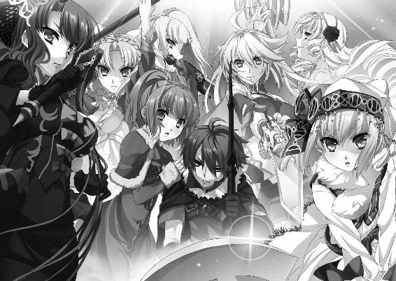
「魔のティル＝ナ＝ファの降臨だ！」
「ティグル！」
エレンが悲鳴混じりの叫びをあげた。地面を蹴り、アリファールの力でティグルのもとへ駆けつけようとする。だが、若者を取り巻く瘴気に触れた瞬間、エレンは強烈な衝撃を受けて弾きとばされた。
リーザが雷渦を振りあげる。
「闇夜斬り払う刹那の牙！」
不規則な軌道を描いた鞭の先端から、黒い光が放たれた。ティグルを傷つけることになろうとも、竜技を使わなければ助けだせないと判断したのだ。雷渦の閃姫の最大の竜技でなかったのは、彼女の葛藤の表れだった。
しかし、リーザの竜技は黒い瘴気の渦をわずかに削っただけに留まる。リーザは愕然として、その場に立ち尽くした。ミラやソフィー、オルガも打つ手が思いつかず、ティグルが瘴気に吞みこまれていくのを傍観することしかできない。
エレンは銀閃を杖代わりにして立ちあがり、かすれた声でティグルに呼びかけた。その目が驚きに見開かれる。瘴気の渦の中で、ティグルの身体に変化が起きていた。
くすんだ赤い髪は黒く染まり、目も不気味な黒い光を湛える。過剰な圧迫に肉体が耐えかねて、顔や腕から血が噴きだした。血には瘴気が付着して、ティグルの身体をどす黒く染めていく。口から漏れる声は言葉にならず、獣が唸っているかのようだ。
そして、ティグルの左手が溶けはじめていた。握りしめている黒弓を手の中に取りこんで、融合していく。それに合わせるかのように、顔も歪みはじめた。顔つきが変わるなどというものではない、鼻が潰れ、口は大きく横に避け、歯が尖って牙と化す。ガスパールやダーマードでさえ息を吞むほどの変化だった。
「これが......女神だというの？」
ミラが戦慄の吐息を漏らす。人間の身に降臨しようとした結果、こうなってしまったのか。それとも、女神の本来の姿がこのようなものなのか。
だが、戦姫たちはいつまでも呆然としてはいられなかった。ティグル──否、ティル＝ナ＝ファが左腕を持ちあげたのだ。黒弓を、ソフィーたちに向ける形で。
「みんな、早くわたくしの後ろに......！」
危機を感じとって、ソフィーは叫んだ。黄金の錫杖を掲げる。ティル＝ナ＝ファが弓弦を引き絞ると、右手の先に瘴気だけでつくられた矢が生まれた。
その矢に秘められた『力』のすさまじさを、戦姫たちは瞬時に悟る。エレンたちが彼女の後ろへ駆けこむのを待って、ソフィーは竜技を放った。
「──我が前に集え煌めく波濤よ！」
澄んだ音を響かせて、光華の先端から無数の光の粒子があふれだす。それは戦姫たちの前面に広がって、不可視の防壁をつくりあげた。同時に、女神が矢を射放つ。
光と闇が炸裂して大気が咆哮し、大地が鳴動する。ソフィーたちの視界は乱舞する光と闇に灼かれ、ほとんど何も見えなくなった。
肌に伝わってくる風の悲鳴と大地の叫びとで、女神の恐ろしさを戦姫たちは理解する。
そして、戦慄は瞬時に驚愕へと変わった。エレンたちの視線の先で、ティル＝ナ＝ファは何でもないかのように瘴気を集中させ、新たな矢をつくりだしたのだ。その矢は、さきほどのものより一回りは大きかった。ソフィーの竜技だけでは防ぎきれないだろう。
矢が、放たれる。まったく同時にエレンが銀閃を振りあげ、ミラが凍をかざし、リーザが雷渦を薙ぎ払った。
「──大気ごと薙ぎ払え！」
「──空さえ穿ち凍てつかせよ！」
「──天地撃ち崩す灼砕の爪！」
嵐と吹雪と稲妻は渦を巻いて光の激流となり、かろうじて形を保っていた不可視の防壁と融け合い、瘴気の矢と激突する。光と爆風が目と耳を痛めつけ、エレンたちの周囲の大地は容赦なくえぐりとられた。
残響がかすかに大気を震わせ、瘴気混じりの煙がたちこめる。肩で息をしながら、エレンたちは固唾を吞んで煙が薄れるのを待った。三つの渾身の竜技は女神の矢を相殺し、防ぎきったようだった。
煙が霧散し、視界に広がる光景にエレンたちは身体の震えを自覚せずにはいられなかった。壁も、床の石畳も、跡形もなく吹き飛んで、大地は大きく歪んでいる。まともにくらっていたら、自分たちはそれこそ髪の一本すら残さず消滅していただろう。いや、このザガンそのものが吹き飛んでいた可能性すらあった。
「ティグル......。どうしちまったんだ」
身をすくませているティッタを気遣いながら、ガスパールがため息をこぼす。彼と同じようにティッタを守ろうとしているリムとダーマードは、起きていることのすさまじさに声も出ないという様子だった。
ティル＝ナ＝ファは、さきほどと変わらぬ姿でそこに立っている。そして、瘴気を右手と左手の間に練りあげて、新たな矢をつくりだした。戦姫たちの背筋を、死を予感した寒気が走り抜ける。オルガが竜技を放とうとしたが、彼女も判断がつかないようだった。
ティル＝ナ＝ファが体勢を崩したのは、まさにそのときだった。何かに引っ張られるように身体を傾け、転倒しかける。その拍子に放たれた矢は、エレンたちのはるか頭上を通り過ぎて、虚空へと消え去った。
──何だ？ 何が起こった？
瞳に疑問符を満たして、エレンたちはティル＝ナ＝ファを見つめる。いまの矢がまともに放たれていれば、自分たちは骨すら残さず吹き飛んでいただろう。
戦姫たちの視線の先で、ティル＝ナ＝ファは苦痛に耐えるように身をよじり、黒弓の融合した左腕をおさえて、苦痛の呻きを漏らしている。攻撃の好機ではあったが、誰ひとりとして動きだす者はいない。あまりにも奇妙で、不自然だったからだ。
「あなたたち、いまのうちに後ろに下がりなさい」
緊張をはらんだ声で、ミラがリムたちに言った。リムは悔しげな表情をしたが、並みの戦士では、ここに立っているだけでも足手まといなのだと悟らざるを得ない。彼女はすばやく一礼すると、ティッタ、ガスパール、ダーマードを促してその場を離れた。
ティル＝ナ＝ファが、新たな行動を起こす。背中を折り曲げた体勢から、音高く地面を蹴った。すさまじい跳躍力を発揮し、女神は戦姫たちの中でもっとも近い位置にいたソフィーに襲いかかる。
突風が動く。ティル＝ナ＝ファとソフィーの間に、小柄な影が割りこんだ。オルガだ。だが、相手はティグルの肉体だと思うと、オルガは竜技を放つことをためらった。
羅轟を盾代わりにして、女神の一撃を防ぎ止めようとオルガは試みる。その動きにかまわず、ティル＝ナ＝ファは黒弓の融合した左手で、竜具の上からオルガを殴りつけた。
巨大な岩を粉砕するかのような轟音が、その場にいる者たちの鼓膜を打ちのめす。短い悲鳴をあげて、薄紅色の髪の戦姫の身体が宙に舞った。戦姫たちは再び愕然とした。拳の一撃で竜具ごと戦姫を吹き飛ばすなど、人間技ではありえない。
「オルガ！」
ソフィーが急いでオルガに駆け寄る。そして、リーザとミラが至近距離にいる女神に向かって黒鞭を叩きつけ、氷槍で突きかかった。ティル＝ナ＝ファはそれらを避けようとせず、黒い輝きを放つ両眼で二人の戦姫を見据えて、無造作に両腕を動かした。
硬い音を発して、雷渦は黒弓に弾かれる。そして、凍の一閃は右のてのひらで滑るように受け流された。いずれも、竜の鱗すら砕くような一撃であるというのにだ。
二人のどちらかに狙いを定めようとしていたティル＝ナ＝ファの視線が、上へと動く。風をまとったエレンが銀閃を振りあげて、斬りかからんとするところだった。
刃鳴りにも似た金属音が響きわたる。空中からのエレンの斬撃を、女神は左腕をまっすぐ突きだして黒弓で受け止めた。
その体勢でティル＝ナ＝ファは弓弦を引く。両手の間に瘴気の矢が生まれた。エレンは『風影』によって、空中で方向を変えようと試みる。
──間に合わないか......!?
ティル＝ナ＝ファの動きが、一瞬止まった。エレンは女神の頭部を蹴りつけ、空中を飛んで離れる。直後に瘴気の矢が放たれ、何もない空間を通過して虚空に消えた。その隙にミラとリーザも飛び退って距離をとる。三人はソフィーとオルガのもとに駆け寄った。
オルガは膝をついたソフィーに支えられて、苦痛に顔を歪めながらも身体を起こしている。右手は竜具を握りしめているが、左腕は力なくたれ下がっていた。骨が折れている。
──竜具の上から殴られたのに、そうなるのか。
新たな恐怖が、戦姫たちの心に氷の息吹を吹きこんだ。
ティル＝ナ＝ファがエレンを見つめる。小さく唸ったかと思うと、女神はまっすぐ突進してきた。ソフィーが奥歯を嚙みしめ、女神を睨みつけて黄金の錫杖を振りかざす。
「──我が先を疾走れ輝く飛沫よ！」
錫杖の先端に、大人の頭部ほどの白い光の球体が生まれる。ソフィーが光華を一振りすると、それは虚空に放たれてティル＝ナ＝ファに襲いかかった。
女神は黒弓の融合した左拳で、呆気なく光球を粉砕する。その瞬間、光球は無数の光の粒子となって弾けとび、ティル＝ナ＝ファの目を灼いた。女神の動きが一瞬止まる。
ミラが氷槍をかまえて急進した。今度こそ敵を刺し貫かんと、凍を滑らせる。
女神は目を閉じたまま、不気味な笑みを浮かべた。ラヴィアスの先端が、ティル＝ナ＝ファの脇腹をかすめる。刹那、ティル＝ナ＝ファは無造作に右手を伸ばして、ミラの槍の柄をつかんだ。
「このっ......！」
ミラが悪態をつく。凍全体から冷気がほとばしって、女神の右手を凍りつかせた。
次の瞬間、驚くべき光景が戦姫たちの視界に映る。ティル＝ナ＝ファが、ミラごと槍をまっすぐ持ちあげたのだ。凍の雪姫は驚きのあまり、氷槍から手を放せない。
女神はそのまま槍を振りおろし、ミラを地面に叩きつける。凍の雪姫の口から、短い悲鳴が漏れた。それと同時に、ティル＝ナ＝ファの右手が凍気から解放される。ティル＝ナ＝ファは跳躍して、まだ起きあがっていないミラへ、獣のように襲いかかった。
凍の雪姫は一瞬の判断でラヴィアスの柄を短くしたが、女神の行動の方が早い。金属の潰れるような音が響き、ミラは苦痛の呻きをあげた。
そこへエレンとリーザが横から女神に殴りかかる。リーザは『鋼鞭』によって、漆黒の鞭を棒状に変えていた。
銀閃と雷渦の強打を、ティル＝ナ＝ファは黒弓で横殴りに薙ぎ払って弾き返す。そうして後退しかけたリーザに踏みこむと、右手で殴りつけた。紅の髪の戦姫は竜具で受け止めようとしたが、恐るべき膂力によって地面に叩きつけられる。
エレンは『風影』で加速し、倒れているミラを抱えて、女神から距離をとった。
「だいじょうぶか？」
「......かすり傷よ」
顔を歪めて、ミラは応じる。青い髪の戦姫は左手で、右の胸をおさえていた。見ると、彼女の胸甲の右胸の部分が、奇妙にねじれる形で砕かれている。服の一部が破れて、胸元近くに血がにじんでいた。
「嚙みちぎったのよ、あいつ」
忌々しげに吐き捨てて、ミラは立ちあがる。その言葉の意味を理解するのに、エレンは一呼吸分の時間を必要とした。
リーザを一撃でねじ伏せたティル＝ナ＝ファは、エレンたちの方を向く。
「どうすればいいのよ......」
強気な凍の雪姫が、絶望的なつぶやきを口にした。竜具の通じない相手など、考えたこともなかったのだ。竜技に活路を見出したくとも、向こうにはそれをはるかにしのぐ瘴気の矢がある。エレンの紅玉の瞳にも、焦り以上に諦めの感情が浮かんだ。
「子供と大人の戦いですらないな......」
突破口が見つからない。このままひとりずつ葬られていくのではとすら思う。
駄目だ、と白銀の髪の戦姫は歯を食いしばる。長剣を握る手に力を込めて、心を侵食しようとする絶望に耐えた。
──ティグルを取り戻すんだ。女神なんぞに、絶対に、くれてやるものか。
ティル＝ナ＝ファを、エレンは睨み返す。そのとき、白銀の髪の戦姫は見た。女神が左腕を持ちあげようとして、すぐに下ろしたのを。その行為を、ティル＝ナ＝ファは二度ばかり繰り返した。
──まさか......。いや、きっとそうだ。
あまりにも圧倒的な力を振るうために見落としてしまいそうになるが、ティル＝ナ＝ファの行動には不自然な点がある。瘴気の矢をいくらでも射放つことができるはずなのに、それをしない。他にも、突然体勢を崩したり、動きを止めたりする。
──戦っているんだ、ティグルが。
ティル＝ナ＝ファに吞みこまれてしまったのかと思っていた。だが、そうではない。
まだ、ティグルの意識は生きている。そして、女神の行動をおさえこもうとしている。
白銀の髪の戦姫の口元に、笑みが浮かんだ。強い戦意を内包した喜びの笑みが。
「エレン。あなた、何をやるつもり......？」
錫杖をかまえながらこちらへ来たソフィーが、エレンの隣に立った。彼女のそばにはオルガもいる。顔を青ざめさせてはいたが、黒真珠の瞳から戦う意思は損なわれていない。右手で巨大な斧を握りしめて、彼女はティル＝ナ＝ファを見据えていた。
「ティグルを助ける」
エレンは断言する。驚く戦姫たちに、彼女は自分の見たものを簡潔に語った。
「おそらく、私たちがいまも生きているのはあいつのおかげだ。そうでなかったら、とうに一人残らず死んでいる」
「......助けるってどうやるのよ」
槍を杖代わりにして身体を支えながら、ミラが尋ねる。エレンは即答した。
「あの黒弓──あいつの左腕に、竜技を叩きこむ」
ソフィーが息を吞む。エレンの推測が正しいとしても、その手段はあまりに乱暴すぎるように思えた。女神に支配されて怪物と成り果てたが、あの肉体はティグルのものだ。
オルガが淡々とした口調で聞いた。
「もしもティグルの腕がなくなったら？」
「──残りの人生のすべてを注ぎこんででも、償ってあげるわよ」
そう答えたのはエレンではない。冷気をまとった青い髪の戦姫だった。眉をひそめるエレンに、ミラは言い放つ。
「エレオノーラ。あなたの考えに乗るわ。だから、この役目は私に譲りなさい」
おたがいの立場をわかっていながらも、想いを告げずにはいられなかった。彼女にそこまでさせるだけの男が、女神に抗わないはずがない。ミラはそう信じることができた。
銀閃の風姫は何か言おうとしたが、棒立ちだったティル＝ナ＝ファが動きだしたので、話をしている場合ではないと考え直す。長剣をかまえて、女神を睨みつけた。
「仕損じるなよ」
言うが早いか、エレンは銀閃を握りしめて地面を蹴る。正面からティル＝ナ＝ファに挑みかかり、斬りつけた。女神は右腕でアリファールを受け止める。
エレンはかまわず、さまざまな角度から攻めたてた。その間にオルガが右手で斧を引きずりながら、女神の右側面へと回りこむ。負傷を感じさせないほどに機敏な動きだった。少し遅れてソフィーも動きだした。こちらは左側面へ回りこむ。
ティル＝ナ＝ファの表情が、笑みをつくるように歪んだ。女神の正面にいたエレンは、その邪悪さとおぞましさに総毛立つ。ティグルの顔が変貌していてよかったと、心底思ったほどだった。
女神の周囲に膨大な量の瘴気が噴きあがって、防御膜を形成する。エレンは銀閃で斬りつけたが、音高くはね返された。危うく長剣を手放しそうになり、慌てて握り直す。
硬いというよりも、すさまじいというのがエレンの抱いた感想だ。この中に踏みこむのは激流に身を投じるのに似て、弾かれるか、吞みこまれるかのどちらかだろう。
だから笑ったのかと、エレンは理解する。
──舐めるな、私たちを。
エレンの掲げた銀閃に、風がまとわりつく。オルガのかまえる羅轟が、月光を思わせる輝きを帯びる。ソフィーの錫杖から光の粒子があふれて、彼女を包みこむ。
竜具に凝集される力が光を生み、熱を帯び、渦を描いて、必殺の一撃を完成させた。
長剣から放たれた無数の風の刃が、豪斧から繰りだされた大地を砕くほどの衝撃波が、錫杖から放たれた輝く光球が、瘴気の防御膜と衝突する。
肌を痺れさせるほどの轟音が空間を圧した。女神を守っていた瘴気の防御膜は、光と風が乱舞する中で無数に引き裂かれ、力を失って霧散する。
そして、凍を両手で握りしめたミラが気合いの叫びをあげ、女神の黒弓を狙って突きかかった。すでに彼女の身体は凍気に覆われ、竜具の穂先は鋭く輝いている。
「ラヴィアス！ あなたのすべてを私に預けて！」
自分の力を、生命力さえも根こそぎ使い尽くしてかまわないと、相棒に訴える。この一撃に、字句通りすべてを賭ける。私を主と認めてくれるのなら、そうさせてほしい。
──大切なものを、私の手で、私の力で、取り戻させて！
短い距離の中で冷気が無数の流れを生み、ラヴィアスの穂先を幾重にも取り巻く。ミラを取り巻く冷気は、彼女の戦意と覚悟によって白い輝きを放った。
女神は向かってくるミラを一瞥すると、瘴気の矢を生みだすべく、右手を黒弓の弓弦に引っかけようとする。そのとき、空気を貫いて放たれた黒鞭が、ティル＝ナ＝ファの右手に絡みついた。それは、異彩虹瞳の戦姫の一撃だった。エレンたちが竜技を放ったときには彼女は立ちあがっており、竜具を鞭状に戻して隙をうかがっていたのだ。
そして、女神が瘴気の矢を生みだすよりも一瞬早く、ミラの竜技が撃ちだされる。
「──空さえ穿ち凍てつかせよ！」
ラヴィアスからほとばしった膨大な冷気は、女神の足元の地面を瞬時に凍りつかせた。そこから無数の氷の槍が伸びて、ティル＝ナ＝ファの動きを封じ、攻めたてる。そして、ミラはティル＝ナ＝ファに身体ごとぶつかる勢いで、黒弓に己の竜具を突きたてた。
衝撃。女神が、獣のような咆哮をあげる。左腕を振りまわしてミラを吹き飛ばした。
凍の雪姫は地面に投げだされたが、すぐに身体を起こして女神を睨みつける。ティル＝ナ＝ファの左手──黒弓と融合している箇所がえぐられて、傷口から黒い瘴気が流れ落ちていた。黒弓もまた白く凍りついて、弓弦に至るまで凍気で覆われている。
「ティグル！ 私の声が聞こえるか、ティグル！」
それを見たエレンが、若者へ必死に呼びかけた。ミラもまた、身体中にのしかかる疲労などないかのように声を張りあげる。
「いつまでそうしているつもりよ、ティグル！」
ソフィーも、リーザも、オルガも、声と言葉に想いを乗せて必死に叫んだ。ティル＝ナ＝ファの左手の傷口から流れでる瘴気が濃さを増し、女神の口から呻き声が漏れる。
あと少しだ。戦姫たちがそう思ったときだった。
「──よくやってくれた」
嘲笑をともなった陰惨な声が、彼女たちの耳に届いた。
エレンたちから十数歩離れたところに、マクシミリアン＝ベンヌッサ＝ガヌロンが立っている。『不敗の剣』を地面に突きたてて。漆黒のローブはぼろぼろだったが、ティグルとの戦いで負った傷はすでにふさがっていた。
「女神よ、いまこそ我がものとなってもらうぞ！」
両手を高く掲げたかと思うと、ガヌロンはその場で膝を折り、地面に左右のてのひらを押しつける。彼の小柄な体軀が瘴気に覆われ、両手から禍々しい紫色の光が放たれた。
光は稲妻のようにうねりながらもすさまじい速さで地面を走り、その場から動けずにいるティル＝ナ＝ファに突き刺さる。
大気が震えるほどの苦痛の叫びを、女神があげた。目を剝いて、顎を限界まで開き、身体を痙攣させる。戦姫たちが言葉を失うほどの、すさまじい表情だった。
「何を......何をやっているの!?」
戦姫たちの中でいち早く気を取り直したソフィーが、ガヌロンを鋭く睨みつける。ガヌロンは答えなかった。答える必要がなかったからだ。
一瞬ごとに、ガヌロンと女神を結ぶ紫色の光は輝きと大きさを増していく。それは、女神の力をガヌロンが『喰らって』いるためだった。そして、自分の身体を覆う瘴気が強力なものになっていくのを、ガヌロンはまさに肌で実感していた。
無言でいるガヌロンに業を煮やして、ソフィーが錫杖を振りかざす。ガヌロンを取り巻く瘴気の強さからしても、むやみに接近するのは危険だと金髪の戦姫は感じた。この位置から仕掛けるしかない。そして、彼女の動きにリーザも反応した。
「──我が先を疾走れ輝く飛沫よ！」
「──闇夜斬り払う刹那の牙！」
錫杖の先端からは白く輝く光球が、雷光を帯びた黒鞭からは目もくらむほどの閃光が、それぞれ放たれてガヌロンを襲う。しかし、二つの竜技はガヌロンの身体を覆う瘴気に阻まれ、ガヌロンに届きさえもしなかった。
自分の中に流れこむ『力』を味わいながら、ガヌロンは陶然としていた。彼はこれまでに三体の魔物を喰らってきたが、いま喰らっているティル＝ナ＝ファは、それらなどとは比較にならない、彼の想像をはるかに上回る存在だった。
ガヌロンの両眼はこれ以上ないというほどに見開かれ、禍々しさを帯びた赤い光を放っている。ガヌロンの周囲の大気が黒い輝きを放つ瘴気へと変じて、彼にまとわりつく。瘴気は瞬く間にガヌロンを包みこみ、さらにふくれあがっていった。
「面倒な手順を踏んだ甲斐があった」
笑声を漏らしながら、ガヌロンはおもわずそうつぶやく。
女神をその身に降臨させることができるのは、黒弓に選ばれた者──魔弾の王になれる可能性を秘めた者だ。ガヌロンには不可能ということである。
だが、女神がそこにいれば、ガヌロンは喰らうことができる。ただし、相手は女神だ。おとなしく喰われるはずがない。そして、女神が思うままに力を振るえば、ガヌロンの力をもってしても手に負えないだろうことは想像がついていた。
女神の降臨する器には、強くあってもらわなければならなかった。肉体的に頑健であるのはもちろんだが、女神に抗うだけの精神力が備わっていなければならなかった。
その上で、女神の力を削れば、喰らうことは可能であると判断していた。
ここに、ドレカヴァクとの交渉が成立する余地があった。ガヌロンが女神を喰らうことに失敗するか、あるいは女神を喰らったあとでその力を制御できずに女神に乗っ取られてしまえば、ドレカヴァクの計画通りにことが運ぶのである。世界は魔物たちのために作りかえられただろう。
一方、ガヌロンには、自らの力で女神をおさえこめる自信があった。
本来の予定では、自分が女神の力を削るつもりであった。ブリューヌの王宮からデュランダルを盗ませた理由のひとつは、このためだ。竜具の力を封じるために鍛えられたこの剣ならば、女神に打撃を与えることもできるはずだった。
幸いというべきだろう、その役割は戦姫たちが代わってくれた。
そしていま、ガヌロンは女神を喰っている。
ティグルの身体にひとかけらも残すまいと、己の体内に取りこんでいる。
そして、ガヌロンの身体に変化が起きていた。
◎
喰われるというよりも、女神を吸いとられていく中で、ティグルの身体は元の姿を取り戻しつつある。黒く染まっていた髪はくすんだ赤となり、両眼の瘴気が消え、かすかなものながら光が宿った。鼻や口も同様だ。何よりも融け合っていた左手と黒弓とが少しずつ分離していった。
ティグルの意識は、女神のすさまじい重圧が消えたことによって、息を吹き返そうとしていた。支配されてたまるかと必死に抗い続けていたが、限界だったのだ。もう少し遅ければティグルの魂は自我を失って粉々になり、女神に取りこまれていただろう。
一方で、ティグルは奇妙な感覚に襲われていた。脳裏に、奇妙な光景が断片的に流れこんでくるのだ。
誰かの視点のようだった。薄暗い森の中で、喧噪に満ちているだろう酒場の中で、おびただしい数の死体が転がる戦場で、風の吹き抜ける草原で。その人物の視界の先には、常にひとりの男が映っていた。見上げるような感じなのは、見ている者の背が低いためか。
声も、音も、一切ない。だが、こちらを見る男の瞳は信頼に満ちて輝いていた。おそらく、この人物も同じ瞳で男を見ているのだろうと、ごく自然に思えた。そして、この人物は男に向かってシャルルと呼びかけているような気がした。
不意に、身体から浮遊感が失われた。重力がのしかかってきて、身体をろくに動かすこともできず、ティグルは地面に倒れる。
「ティグル！」
いまにも泣きだしそうな叫びが、若者の意識を覚醒させた。答えようとしたが、声が上手く出ない。腕や脚どころか、指すら動かせなかった。
走ってくる音が聞こえたかと思うと、ティグルは力強く抱き起こされる。視界に、白銀の髪と紅玉の瞳を持つ娘の顔が映った。若者にとって大切な、愛おしい存在。彼女の両眼からは、とめどなく涙が流れている。
「エ......」ようやく、一単語だけ声が出た。あとは懸命に「レ、ン」と口を動かす。エレンは何度もうなずいて、若者を強く抱きしめた。ティグルの口から、悲鳴の代わりにかすれた息が漏れる。指が震えたが、エレンの死角での出来事だった。
「苦しがってるわよ」
ミラが、強引にエレンをティグルから引き剝がす。
再び地面に倒れかけたティグルは、後ろから誰かに支えられた。顔を動かすと、視界の端にティッタの顔が映る。自分が女神に支配されかかっていたときは、リムたちと後ろに下がっていたはずだったが、こちらへ駆けてきたらしい。
ティグルが口を動かしてティッタの名を呼び、指を動かすと、栗色の髪の恋人はそれを見逃さず、若者の指をそっと握った。わかっているというふうに小さくうなずく。
「ティグルを運んで。早く」
ソフィーの声が聞こえた。いくつかの腕が伸びてきて、ティッタとともにティグルの身体を支える。リムとガスパール、ダーマードだった。
「よくご無事で」
リムの言葉は彼女らしく短かったが、それだけに感情がこもっていた。抱えあげられたことで、ティグルの視界が高くなる。首を動かして、若者は周囲に視線を巡らせた。
離れたところに、エレンたち戦姫が立っている。自分たちに背を向けて。彼女たちが対峙しているものがわかったとき、ティグルは目を瞠った。
それは、巨人だった。
三十チェート（約三メートル）を超える、漆黒の巨人の上半身がそこにある。腰から下は黒い沼のごとき瘴気に溶けこんでおり、形を為していない。
巨人の右手には、デュランダルが握られていた。不敗の剣も、巨人の手にあっては小剣のようだ。そして巨人の額には、真っ白なガヌロンの顔が浮かびあがっていた。
「これが、こんなものが女神だというの......？」
ソフィーの声には嫌悪感がこもっている。それは不気味でおぞましい瘴気の塊であり、神々しさなどを微塵も感じさせなかった。
『そうだ』と、巨人の額のガヌロンが答える。
『神々の像など、人間が想像でつくりあげたものに過ぎぬ。形を持たぬゆえに、どのような形にもなる。それが神よ』
ガヌロンが右腕を持ちあげる。デュランダルで上を指した。はるか上空に、黒い球体が浮かんでいる。あらゆるものを吞みこんでしまいそうな、不気味な闇が。
『黒い太陽だ。世界はまたひとつ変わっていく』
「そんなことをさせるか」
銀閃を肩に担いで、エレンが巨人の前に進みでた。ミラとソフィー、リーザとオルガも彼女に並んだ。ガヌロンは戦姫たちを睥睨して、楽しそうに問いかける。
『どうするのだ』
それに対する返答は、五つの竜技だった。嵐の刃が、氷槍の渦が、光球が、雷撃が、大地を割って突き進む衝撃波が、いっせいに巨人を襲う。だが、ガヌロンの巨軀を形作っている黒い瘴気は、それらを受けても小揺るぎさえしなかった。
『どれ......。女神の力、貴様らで試すとしようか』
巨人の口にあたる部分から、瘴気が吐きだされる。それは黒い嵐となって、エレンたちを襲った。ソフィーが張り巡らせた不可視の結界をほとんど一瞬で消滅させて、瘴気は戦姫たちを吹き飛ばす。
ティグルたちは、呆然としてそれを見つめるしかなかった。
ガヌロンの顔──その視線が、エレンたちからティグルたちへと移る。
『次は、これを試してみよう』
ガヌロンがそう言うと、巨人の腹のあたりが奇妙な形に盛りあがった。内側から突き破るようにして、何かが飛びだしてくる。それは、瘴気でつくられた怪物たちだった。
角を生やした巨軀の怪物がいる。蝙蝠のそれに似た巨大な翼を背中から生やした、瘦せこけた怪物がいる。たくましい体格と、蛙のような頭部を持つ怪物がいる。他に、竜のような怪物や、骸骨のような怪物もいた。
ティグルは怪物たちを見て、息を吞む。黒い瘴気だけでできているのだろう、怪物たちには色がなく、輪郭もはっきりとしない。だが、ティグルや戦姫たちがこれまで戦ってきた数々の魔物たちに、それは酷似していたのだ。
獣のような咆哮をあげて、瘴気の怪物たちは戦姫へと襲いかかる。エレンたちは竜具で身体を支えながら、ようやく立ちあがったばかりだ。それでも彼女たちはその場に踏みとどまって、懸命に怪物の群れと斬り結んだ。
瘦せこけた怪物が、翼を力強く羽ばたかせてこちらへ向かってくる。バーバ＝ヤガーだと、内心でティグルは呻いた。
「ティッタ。ティグルのことをお願いします」
緊迫した声で言って、リムが剣をかまえる。ガスパールとダーマードが隣に並んだ。
バーバ＝ヤガーを思わせる怪物が、空中から急降下してリムに襲いかかる。リムは距離をはかって、剣を振るった。水を切ったような手応えに、ガラスを擦りあわせたような悲鳴が続く。怪物の腕を、リムは斬り飛ばしたのだ。
しかし、喜んでいる余裕はなかった。同じ種類の怪物がさらに三匹、こちらへ向かってきたのだ。巨人の腹部からは、尽きることなく怪物たちが生みだされている。
ガスパールやダーマードも懸命に剣を振るっているが、相手が瘴気でつくられた怪物というだけでなく、空中から襲いかかってくるのでは、苦戦をまぬがれない。額や肩に、小さな傷が増えていく。あるていどまで斬ると、怪物は身体を維持できなくなるらしく瘴気となって霧散するようだが、一匹を消し去る間に、三人はかなりの体力を消耗していた。
巨人のすぐそばでは、エレンたちが果敢に竜具を振るっている。
彼女たちは一撃で怪物を吹き飛ばしていたが、こちらは数が多すぎた。怪物たちに対処するばかりで、ガヌロンに挑みかかる余裕がほとんどない。ようやく反撃の隙を見出して竜技を叩きつけても、ガヌロンに打撃を与えることはできていなかった。
そして、ガヌロンは怪物たちを生みだしながら、雷撃を繰りだし、火球を放ってエレンたちを容赦なく攻めたてていた。
──支えるだけでは、駄目だった。
怪物を打ち倒すというよりも、追い散らしながら、リムは歯がゆさに顔を歪めた。
エレンのそばにいて、彼女をいろいろな面から補佐してきた。それで満足していた。
だが、それでは駄目なのだ。彼女と同じぐらい強くなければ、肩を並べて戦うこともできない。肩を並べて戦えなければ、彼女の窮地を見ていることしかできない。
リムとエレンの間にある距離は、だいたい二十歩ほど。走れば三十を数え終える前にたどりつくだろう。しかし、いまのリムの目には、その距離が果てしのないものに思えた。
エレンのことにばかり気をとられていたからだろうか。誰かの叫び声で、リムは怪物の一匹が自分の背後から迫っていることに気づいた。
身体をひねりながら、剣を振るう。相手が接近しすぎていたこともあり、怪物の頭頂から半ばまでを両断した。同時に、手元から異様な音が響く。
リムは愕然とした。剣が、半ばから折れたのだ。
武器を失ったリムに、怪物たちが群がってくる。ダーマードがそのうちの一匹に斬りつけて後退させ、また別の一匹にガスパールが剣を叩きつけた。
声にならない声を漏らして、リムはその場にうずくまる。絶望に顔を歪め、両手を固く握りしめて地面を叩いた。この二人には、ティグルとティッタを守ってもらわなければならないのに。
──誰か。誰か、私に力を貸してください。
武器がほしかった。
エレンとともに戦うための力を。大切なひとを守り、いまを戦い抜くための力を。
怪物の咆哮。悲鳴。風を裂き、怪物を断つ斬撃の響き。それらが耳に入らないほど、リムは祈った。ひとではない何ものかに。
ヴィッサリオンの顔が浮かんだ。アレクサンドラ＝アルシャーヴィンの顔が浮かんだ。フィグネリアの顔が浮かんだ。エレンのためを想ったとき、彼女の脳裏によぎったのは彼らの顔だった。戦う術を持たないいまのリムには、祈ることしかできなかった。
──どうか。どうか。私に力を。戦うための武器を。
リムの意識の中に、荒々しく燃えさかる炎が出現したのは、そのときだった。彼女が想像したのではなく、外からひとつの光景として流しこまれてきたかのようだった。
炎は、見る者を圧倒する不思議な輝きを秘めていた。言葉を用いずに、それは静かにリムに呼びかける。炎が何であるかを、リムは知った。
驚きに、目を開ける。視界に映るのは暗く湿った地面だ。だが、頭の中には炎が鮮明な像を描いて浮かびあがっている。奇妙な感覚だったが、リムはそれをごく自然に受けいれることができた。目を閉じる。炎だけを見つめるために。
──アレクサンドラ様。フィグネリア......。
ゆらめく炎を見つめながら、声には出さず、リムはつぶやいた。二人の魂が『炎』に働きかけてくれたのだろうか。あるいは、自分を炎の前へ導いてくれたのか。
──力を貸していただけるのですか。
まっすぐ炎と向きあい、リムは静かに問いかける。
炎からの返事はない。すでに、告げるべきことは告げたというふうに。
一瞬、リムは口元を緩ませた。そうだ。自分の目の前にいることが、すべてを語っている。あとは、自分が行動によって応えるだけだ。
この炎には、すでに一度、包まれている。そのためか恐怖は覚えなかった。
──力を貸していただきます。
青い瞳を戦意で満たして、リムは炎の中へと両手を伸ばす。焼けるような痛みと軽い痺れを感じたが、動きを止めず、さらに奥へと左右の手を突きいれた。
硬い何かに触れる。リムは迷わずそれをつかんだ。
次の瞬間、炎が音もなく四方に弾けとび、無数の火の粉となってリムの身体にまとわりつく。そして、彼女の右手には黄金の刃を持つ小剣が、左手には朱色の刃を持つ小剣が握られていた。力強さを感じさせる輝きを持ち、神秘的な装飾のほどこされたそれは、まぎれもなく煌炎バルグレンだった。ライトメリッツ軍の幕営に置いてきたはずの、竜具。
さきほどまでの絶望感が、燃やし尽くされたかのように消えている。刃から伝わってくる熱が、リムに戦意と活力を与えてくれる。立ちあがることを促し、戦いのただ中に身を置くことを求めてくる。
──ええ。
うなずいた。そのとき、翼を持つ怪物たちがガスパールとダーマードを飛び越えて、ティグルとティッタに襲いかかろうとしていた。
リムは地面を蹴る。自分でも驚くほど、身体が軽い。双剣などほとんど触れたことがなかったのに、長く使いこんできたかのように手に馴染んでいる。
一呼吸で二閃。二呼吸で四閃。怪物たちはことごとく一撃で斬り捨てられ、静かに消滅する。リムを脅威とみたのか、こちらへ向かってきた怪物たちがいっせいにリムに襲いかかる。リムは艶のない金色の髪を揺らして、虚空に双剣を振り抜いた。
「──突火槍列」
自然と、適切な竜技が頭の中に浮かんでくる。地面から噴きだした炎の槍が、怪物たちを貫いた。紅蓮に揺らめく炎の中で、怪物たちは次々に燃え尽きて消滅する。
「ガスパール卿。ダーマード殿。ティグルヴルムド卿とティッタをお願いします」
二人の戦士を見つめて、リムは言った。二人とも驚きに包まれた顔でリムを見たが、何も問いたださなかった。彼女が怪物たちと戦う力を得た、という現実だけを受け止めることにしたのだ。ならば、彼女の戦場はもっと前方であるべきだった。
「頼む」とだけガスパールは言い、ダーマードは無言でティグルとティッタのそばに歩いていく。こちらへ来ていた怪物たちがすべて倒されたため、呼吸を整える余裕はありそうだった。
双剣をかまえて、リムは魔物の群れを、その先にいるガヌロンをも見据えた。
「──戦姫リムアリーシャ。まいります」
◎
視界の端に炎が踊ったかと思うと、怪物たちが次々に消え去った。
銀閃を振るって正面の怪物を斬り伏せたエレンは、驚きと戸惑いとを紅玉の瞳に映してそちらを見た。炎を操る戦姫は、いま地上にはいないはずだ。
「──エレン」
そこにいたのは、彼女の親友だった。リムは双剣を縦横無尽に操って、蛙の怪物だろうと、竜の怪物だろうと手当たり次第に葬り去っている。
「──リム」と、彼女の名を呼んだときのエレンの声は、かすれていた。リムは微笑を浮かべてエレンに応じる。
「こうしてともに戦うのは、ひさしぶりですね」
リムの声には静かな覇気があり、親友と肩を並べて戦場に立てる喜びがあった。
──そうだったな。
エレンは思いだす。傭兵だったころは、いつものことだったのだ。
「細かい話はあとでゆっくり聞かせてもらおう。あいつを──」
エレンは女神を自称する瘴気の巨人を見上げる。
「何とかしてからな」
ミラとリーザ、ソフィーの三人は、リムの参戦に驚きを隠せなかった。ただ、オルガだけはリムの持つ双剣を一瞥して、納得したようにうなずく。何らかの魂の存在を感じとったかのように。
『──戦姫が一匹増えたか』
巨人の額から地上を見下ろして、ガヌロンは楽しげに笑った。猛獣の檻に放りこんだ犠牲者を見つめるような、嗜虐的な輝きをその目に宿して、彼は問いかける。
『それで、次はどうするのだ』
エレンたちは小さく唸った。リムの参戦は貴重ではあるが、この状況を覆すほどのものではない。それが、わかるのだ。怪物たちを斬り伏せながら竜技を放っても、瘴気でつくりあげられた巨軀は小揺るぎもしなかった。
『見よ』と、ガヌロンはデュランダルで再び上空を示す。エレンたちはおもわず声を上げかけた。いまは、日が沈んでいるころだ。空はほとんど闇に浸食されているはずだった。
しかし、エレンたちの視界に飛びこんできた空の色は、禍々しい紫だった。
『いずれ黒い太陽が沈んだとき、赤い月が昇る。大地もこの空の色になり、大海は緑色へと変わる。そして──を求める時代が訪れる』
その台詞は、一部がひどく濁った形で発された。それが、古い時代のブリューヌ語であるとわかった者は、この場にいなかった。
「どうすると言われても、戦うに決まっているだろう」
銀閃で肩を叩きながら、エレンがガヌロンを睨みつける。ミラも、ソフィーも、リーザも、オルガも、そしてリムも、それぞれ竜具をかまえた。蓄積してきた怒りを吐きだすように、白銀の髪の戦姫は続ける。
「おまえは侵略者だ。ガヌロン」
ガヌロンの両眼が、若干の興味を帯びて細められる。
「ライトメリッツを、おまえのせいで人外魔境なんぞにされてたまるものか。ライトメリッツの統治者として、私はおまえを討つ」
それはティグルがガヌロンに言ったことと、ほとんど同じものだった。
「オルミュッツに害を為そうとする者を、私はいままで許したことはないの。おまえを例外にするつもりはないわ」
ミラが凍から冷気を放つ。ソフィーも錫杖を胸に抱いて言葉を紡いだ。
「ポリーシャには、黒い太陽も赤い月も、紫色の空も似合わない。まして、わたくしの大切なひとたちを傷つけるとあっては、考慮にも値しないわ」
リーザは雷渦で地面を軽く鳴らしながら、色の異なる瞳でガヌロンを見据える。
「おまえがいるこの場所は、私のルヴーシュよ。それ以外に話すことは何もないわ」
オルガは右手で羅轟を引きずりながら、淡々と言うべきことを告げた。
「ブレストには一族がいる。天と地の間に先祖の魂が眠っている。民を守るのが戦姫の務めであり、先祖の安らぎを守るのが長の務め。わたしは、務めを果たす」
リムは煌炎の二色の刃を見つめたあと、ガヌロンを見上げる。
「私にはレグニーツァの民や暮らしについて、何かを言うべき資格はありません。ただ、私が見聞きしてきたことから、これだけは言えます。アレクサンドラ様も、そしてフィグネリアも、おまえを許し、見逃すことだけは絶対にないだろうと」
戦姫たちに対するガヌロンの返答は、簡潔を極めた。
『来い』
ミラとリーザが地面を蹴る。氷の嵐と雷撃とが競うように大地を走り、ガヌロンに迫った。ガヌロンは巨人の口から瘴気混じりの黒い吹雪を吐きだし、左手から無数に枝分かれした紫色の稲妻を撃ちだす。
二人の戦姫は目を瞠った。ミラの竜技は吹雪にかき消され、リーザの竜技は紫の稲妻とのせめぎあいの中で砕け散ったのだ。
ガヌロンがデュランダルを振りあげ、オルガに向かって振りおろした。薄紅色の髪の戦姫は羅轟でそれを受け止める。折れている左腕に激痛が走ったが、オルガは歯を食いしばってそれに耐えた。
オルガの足元の地面に、亀裂が走る。亀裂は一気に広がって、砕けた。オルガの足首までが土の中に埋まり、土塊と石片が舞いあがる。短い悲鳴をあげたときには、オルガは背中から地面に叩きつけられていた。
とどめとばかりに、ガヌロンが再びデュランダルを振りあげる。エレンとリム、ソフィーの三人が、オルガを守るように立って武器をかまえた。
ガヌロンは左手をかざす。てのひらから無数の火球が生みだされ、雨のごとくエレンたちに降り注いだ。ソフィーが不可視の防壁を張り巡らせて、仲間たちを守る。だが、地面を穿った炎はすぐには消えず、四人の周囲は逆巻く火の海となる。ソフィーの額に汗がにじみ金色の髪が何本も張りついた。炎と熱は防いでいる。体力の消耗によるものだった。
「オルガを頼む」
エレンはソフィーにそう言うと、火の雨が止んだ瞬間を見計らって跳躍する。リムも親友に続いた。アリファールが風を起こして二人の身体を包みこみ、エレンとリムは空中を高く飛翔して、ガヌロンに接近する。
ガヌロンが不敗の剣を横薙ぎに振るった。デュランダルとアリファールが激突し、エレンは後ろへと弾きとばされる。だが、エレンは弧を描くように飛翔して、再びガヌロンへと挑みかかった。それに合わせてリムが放射状に炎を放ち、ガヌロンの視界を遮る。
しかし、リムの炎は瞬く間に吹き散らされた。ガヌロンが瘴気の嵐を吐きだしたのだ。デュランダルが鈍い輝きを放って、エレンに襲いかかる。刃と刃のすさまじいぶつかりあいのあと、エレンは地上へと吹き飛ばされた。風を操って体勢を変え、地面に叩きつけられることだけはどうにかまぬがれる。エレンの隣に、リムも降り立った。
『大言壮語の割には、このていどか』
エレンたちを睥睨しながら、ガヌロンがつまらなそうに言った。エレンはガヌロンを見上げて、鼻で笑いとばす。
「素人め。そういう台詞は勝ってから言うものだ」
ガヌロンは薄笑いを浮かべた。離れたところにいるミラとリーザが、再び竜技を撃ち放つ。瘴気の巨人はさきほどと同じように、雷撃と黒い吹雪とで迎え撃った。
地面の一画が黒く凍りつき、雷光を反射して閃く。ミラの胸甲には霜が張りつき、リーザのドレスには焼け焦げた跡がいくつも生じた。二人とも、肩で息をしはじめている。
ガヌロンはデュランダルを振りあげ、エレンに叩きつけた。
白銀の髪の戦姫は長剣の刀身に風をまとわせた。しかし、彼女はそれでもってデュランダルを迎え撃とうとせず、その場にしゃがみこむ。リムが炎を放ち、ソフィーが新たな防壁を展開し、身体を起こしたオルガが斧を振りあげた。
雷鳴にも似た轟音が大気を揺るがす。不可視の防壁は一瞬で吹き飛び、リムの双剣とオルガの巨斧が剛剣の刃をかろうじて防ぎ止めた。
エレンが銀閃を振りあげたのは、その瞬間だった。
「──大気ごと薙ぎ払え！」
放たれた暴風の大鉈はデュランダルではなく、その手首を襲う。至近距離からの嵐のような衝撃波は、瘴気で形成された手首を穿ち、えぐり、半ばまで食い荒らした。
エレンは雄叫びをあげる。何度目かの跳躍を行い、ガヌロンの右手首に飛びこんだ。アリファールを振るう。
泥を叩くのにも似た音が、エレンの鼓膜を叩いた。ガヌロンの右手首は切断され、瘴気の細かな粒子が空中にまき散らされる。デュランダルを握りしめる瘴気の手は霧散して消滅し、不敗の剣だけが回転しながら地面に突き立った。
「言っただろう。素人め、と」
地面に着地したエレンが、呼吸を整えながら勝ち誇った笑みを浮かべる。それはただの挑発ではなく、ガヌロンの剣の扱い方についての評価だった。一度、二度とデュランダルの斬撃を受けて、白銀の髪の戦姫は巨人の隙を見抜いていたのだ。
『なるほど。だが──』
ガヌロンは冷笑を浮かべる。右手首の傷口が何かの生き物のように蠢いたかと思うと、失われた右手が瞬時に再生を果たした。これにはエレンたちも息を吞む。
『戦姫がひとり増えたところで、何かが変わるわけでもなかったな』
ガヌロンがそう言ったときだった。
『──そんなことはないわ』
妖艶な響きを帯びた女性の声が、否定する。ひとりの娘が、ゆっくりとした足どりでこちらへ歩いてきた。声のした方を振り返ったエレンが、怪訝な顔になる。
「ティッタ......？」
つぶやいてから、すぐにエレンは自分の言葉を否定した。彼女はティッタだが、ティッタではないと。その肉体は、たしかにティッタのものだ。しかし、それを操っているのは彼女の魂などではなく、まったく別の何かだった。
赤みがかった厚手の服の上に、外套を羽織った姿であるのは変わらない。
だが、ポニーテールだった栗色の髪は髪留めを失って大きく広がり、あふれる力の余波を受けてわずかに浮きあがっている。はしばみ色の瞳は真紅の輝きを放ち、華奢な身体は神々しさと禍々しさをともに備えた金色の光を帯びていた。
何よりもエレンを驚かせたのは、その表情だ。ティッタ本来の可憐さや明るさはなく、闇をよりどころとする妖しさと美しさを備えた笑みが、その顔には浮かんでいた。
ガヌロンは憎々しげに顔を歪めて、吐き捨てる。
『あばずれが......』
巨人の腹部から、翼を持つ怪物が大量に湧き出でた。その数は二十近く。ガヌロンの命を受けて、怪物たちはいっせいに翼を羽ばたかせる。戦姫たちのはるか頭上を飛び越えたかと思うと、奇声をあげながらティッタに襲いかかった。
ティッタは視線を動かして、自分に襲いかかる怪物たちを見上げる。くすりと笑った。次の瞬間、ティッタに爪や牙を突きたてようとしていた怪物たちが、粉々に吹き飛ぶ。一匹も残らず黒い塵と化して、大気中に溶けて消えた。
「......ティル＝ナ＝ファ、なのか？」
唇を震わせて、エレンがたしかめるように問いかける。ティッタの身体を操っているそれはゆっくりとうなずき、右手をそっと胸元にあてた。
『戦いがはじまってからね、この子はずうっと私に祈っていたのよ。ティグル様を、みなさんを、お助けください、そのためならあたしの身体を、命を捧げます、と』
その言葉に、リムは憂いを帯びた表情でおもわずうなずいていた。ティッタならそうするだろうと、彼女は思った。このような場所に居合わせた不幸を嘆くよりも、ティグルの役に立てないことを、愛する若者を悲しませてしまうことを気にかける娘だから。
『貴様はその娘の祈りを利用し、身体を支配して現れたというわけか』
ガヌロンが嘲笑を浮かべて、ティル＝ナ＝ファを見下ろす。
『よかろう。魔のティル＝ナ＝ファと同様に、貴様も喰らって我がものとしてくれる』
『私は戦うつもりはないわ』
ガヌロンが拍子抜けした顔になるほど、女神はあっさりと挑発を受け流した。
『この子の身体が壊れないていどにしておかないと、あの子に怒られるもの。私は、ここにいない七人目の代わりにきたの。言ったでしょう？ 戦姫がひとり増えたことに意味はあると』
ティル＝ナ＝ファは微笑を浮かべて、後ろを振り返る。エレンたちもそちらに視線を向けた。ガヌロンもだ。そして、誰もが驚愕した。
ガスパールとダーマードに支えられて、くすんだ赤い髪の若者が、引きずるような足どりでこちらへ歩いてくる。左手に黒弓を持ち、右手に一本の矢を持って。
ティグルヴルムド＝ヴォルンだった。
◎
「七人目......。そういう意味ね」
緊張に張り詰めた顔で、ソフィーがつぶやいた。
ティル＝ナ＝ファが言っているのは、ティグルの黒弓に、戦姫たちの力を上乗せしていくということだろう。エザンディスの使い手の代わりを、女神が務めるというのだ。
ミラとリーザは無言で顔を見合わせた。ティグルの黒弓の力は知っている。だが、はたしてガヌロンを倒せるのだろうか。
しかし、凍の雪姫はすぐに苦笑を浮かべ、雷渦の閃姫は首を左右に振った。考えても意味のないことだと気づいたのだ。自分たちはいままでのように、彼を信頼して全力を尽くせばいい。
ティグルは両足で地面を踏みしめて、ガヌロンを見上げる。
女神が降臨した後遺症は、まだ残っている。身体中が激痛を訴え、腕も脚も鉛のように重い。気を抜けば意識が遠のきそうだ。それでも、ガヌロンに女神を喰われた直後にくらべれば、だいぶ楽になったと思う。
充分に休ませてもらった。みんなの戦いぶりを見ながら。だから、自分も動かなければならない。弓を持てるのならば。矢をつがえ、弓弦を引くことができるのならば。
一方、ガヌロンは身じろぎすらせず、無言でティグルを見下ろしている。彼が動かなかったのは、ティル＝ナ＝ファを警戒していたためだ。
たしかに『人のティル＝ナ＝ファ』の力は現在の自分に大きく劣る。これは、どのような手順を踏んでいるかの差だろうとガヌロンは判断した。自分が喰らった『魔のティル＝ナ＝ファ』は正しく儀式を行った上で、黒弓を持つ者に降臨させた。
しかし『人のティル＝ナ＝ファ』はそうではない。ひとりの娘の祈りに応えて、地上に降りてきたというだけだ。それでも、全力を出せば戦姫数人分の力を発揮することはできるだろう。だが、彼女は憑依した肉体に気を遣って力をおさえるという。
──本気らしいな。
いいだろう、と声に出さずつぶやく。貴様の考えに乗ってやる。
いまならティグルに矢を射させず、叩き潰すことはたやすい。
だが、ガヌロンはその手段をとろうとはしなかった。
──魔弾の王は、英雄になるものだという。
その言葉が、気に入らない。
英雄はひとりでいい。それ以外の英雄など、認めるわけにはいかない。
──私は貴様を否定する。貴様は英雄ではない。英雄であってはならない。
ティグルを囲むように、戦姫たちとティル＝ナ＝ファが立つ。若者を守るように。若者とともに戦う意思を示すように。
エレンだけは例外だった。彼女はティグルのそばに立ち、ガヌロンを見据えている。ガスパールとダーマードは、戦姫たちの後ろだ。起こりうる事態に備えて、彼らはまず自分の身を守らなければならなかった。
「しっかりな、ティグル」
ガスパールは若者の肩を軽く叩き、ダーマードは無言でうなずいてみせた。
二人が下がったあと、ティグルは黒弓を握りしめて、ガヌロンを見据える。手に持っていた矢は、足元に落とした。いま、必要なのはこれではない。
「みんな、ありがとう」
余計な息とともに、感謝の言葉を吐きだす。黒い瞳に戦意が灯った。必ず信頼に応えてみせると、固く誓う。
黒弓をかまえた。左腕に痛みが走ったが、耐える。
弓弦を引き絞る。『力』だけで形作られた矢が、両手の間に生まれた。
──頼む。
みんなの力を貸してくれ。ありったけ。この男を打ち倒すために。
エレンの銀閃から、ミラの凍から、ソフィーの光華から、リーザの雷渦から、オルガの羅轟から、リムの煌炎から、そしてティル＝ナ＝ファが掲げたてのひらから、それぞれ輝きがほとばしって、黒弓に注がれていく。漆黒だった矢は一瞬ごとに色彩を変え、虹色の光でティグルとエレンを照らす。
黒弓から、軋むような音が聞こえた。
ティグルは目を瞠る。これまで、黒弓がそのような悲鳴をあげたことなど一度もない。それほどの『力』が黒弓に集まっているのだ。
同時に、すさまじい重圧がティグルを襲った。若者は歯を食いしばって耐えながら、左腕の高さを維持しようとする。左手が痺れはじめ、黒弓が左右に震えた。
額に汗が浮かび、鼻筋や頰を流れ落ちる。恐怖と緊張が、呼吸を乱す。
そのとき、エレンが若者の左手に、自分の左手をそっと重ねた。彼女のぬくもりが伝わって、不思議と手の痛みがやわらぐ。
「できるか？」
ティグルはうなずく。七つの輝きの集まりは金色の光へと転じて、ティグルの矢を光の塊へと変えた。それは一瞬ごとに強さを増し、恐るべき威力を若者に予感させる。
──だが、まだ足りない。
ガヌロンを討つには、このていどでは駄目だ。
光はさらに強くなり、ティグルの視界が白く染まる。若者は目を閉じた。右手に集まっている『力』を少しでも崩してしまわぬように、意識を集中させる。
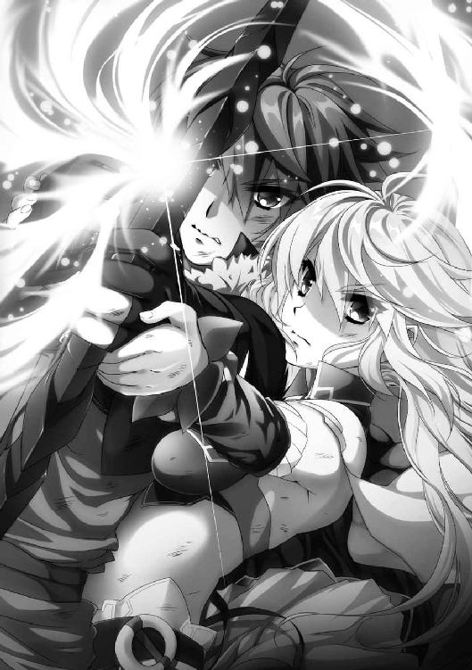
両手の指の皮が破れて、血が手を赤く染めた。矢をつがえる右手にも、黒弓を持つ左腕にも、ちぎれそうなほどの負荷がのしかかる。腕がつけ根から吹き飛んでしまうかと思うほどのすさまじさだ。
──それでも。
ティグルは、しっかりと黒弓を持つことができる。愛する者の熱を、息遣いを、感じとることができるから。それがティグルを奮いたたせてくれる。
この矢なら、あらゆるものを射抜くことができるに違いない。
ガヌロンを見上げる。右手を離す。弓弦が震え、矢が放たれた。
巨人は両手を突きだし、瘴気でつくりあげた防御膜を展開する。
大気が嵐となって荒れ狂い、閃光が虚空を貫く。光の矢と防御膜が衝突し、おたがいを消滅させんとせめぎあった。
両者の戦いは永劫に続くかと思われたが、実際には十を数えるほどの時間にすら満たないものだった。光が弾け、瘴気が飛散する。解き放たれた『力』の粒子が暴風となって荒れ狂った。
光の矢は、防御膜を消滅させた。だが、それが限界であり、ガヌロンには届かなかったのだ。常人ならばとても立ってはいられないほどの嵐の渦の中で、ティグルは毅然として二本の脚で立ち、ガヌロンを見据えている。若者を支えるエレンもだ。
だが、次にティグルがとった行動は、エレンでさえも予想外だったろう。若者は足元に落とした矢を拾い、つがえて、弓弦を引き絞った。
暴風の唸りにかき消されたはずの、弓弦の震えるかすかな音を、エレンはたしかに耳の奥で聞いた。
ティグルとガヌロンの間には、三十アルシンの距離もない。これだけ近ければ、どれだけ凶暴な風が吹き荒れていようと、ティグルには何の問題もなかった。突風と突風の隙間をすり抜けるように、見事な放物線を描いて矢は飛んでいく。
そして、巨人の額に突きでているガヌロンの顔に、突き立った。
ガヌロンは微動だにしない。額に矢が突き立ったまま、うつろな表情になって何かを見上げた。彼の視線の先にあるのは闇に包まれた空だったが、ガヌロンは、彼にしか見えないものを見ていた。
『おお......。シャルル......シャルルよ』
ここにいない誰かに向かって、ガヌロンは語りかける。
『魔物は私が退けよう。女神は私がおさえこもう。彼の地の信奉者は、私が滅ぼそう』
ガヌロンは続ける。喜びを含んだ声で。
『さあ、赤き愛馬を引いてこい......。地の、果て......』
声は、そこで途切れた。異形の内側から無数の閃光がほとばしる。あふれる光は球状となって、ガヌロンを包みこんだ。
光に溶けこむように、ガヌロンはその存在を消していく。誰もが固唾を吞んで、その光景を見つめていた。ティグルの両眼は光に灼かれてから、まだ色を取り戻していなかったが、それでもガヌロンが消滅していくことは正確に感じとっていた。
次の瞬間、異形を包んでいた光は、まっすぐに噴きあがり、空と地をつなぐ巨大な光の柱と化す。光の柱は瘴気を一片も残さずに消し去り、空を覆っていた雲をも吹き飛ばす。
ティグルが視界を取り戻したとき、そこにガヌロンの姿はなかった。ただ、おびただしい破壊の跡だけが、彼が存在したことを物語っていた。
マクシミリアン＝ベンヌッサ＝ガヌロンは人間として死んだ。人間であるティグルヴルムド＝ヴォルンの放った矢によって。
オルガが夜空を見上げて、小さく声をあげた。彼女の視線の先を、皆が目で追う。
「極光......」
そのつぶやきは、誰の漏らしたものだったろうか。
ゆるやかに波打つ虹色の帳が、夜空を覆うように幾重にも広がっていた。静かに輝き、揺らめき、踊りながら、光の薄膜は一瞬ごとに形と色を変える。うねり、逆巻き、弧を描き、いまにも光の雨となって自分たちに降り注ぐのではないかと思わせる。
誰もが言葉を失うほどに、それは幻想的な光景だった。
──極光の女神......。
ティグルは、ソフィーに聞いた女神の物語を思いだしていた。
どれほどの時間が過ぎただろうか。空を眩く照らしていた光が、薄れはじめた。
光の粒子のひとつひとつが静かに溶けて、消えていく。天に還ろうとするかのように。そして、異変の終焉を告げるかのように。
『──私も、もういくわね』
その声にティグルが振り返ると、ティッタの身体から黒い霧のようなものが立ちのぼっていた。糸の切れた人形のようにぐらりと傾き、地面に倒れそうになったティッタを、ティグルは慌てて抱きとめる。
安堵の息をついたティグルに、ひとの形をとった黒い霧がふわりとまとわりついた。
『お別れね、愛しい子。おそらくもう会うことはないわ』
「俺たちが、あのティル＝ナ＝ファを滅ぼしたからか......？」
ティグルが聞くと、女神は笑ったようだった。
『あの子は、還るべきところへ還っただけ。私たちが地上に降りるには、多くのものが必要なの。長い長い夜、闇の領域、多くの死......。それらがそろうころには、あなたたちはもちろん、あなたたちの子供だって生きてはいないでしょうね』
途方もない時間がかかるらしい、ということだけはどうにかわかった。ティグルの瞳が複雑な感情をにじませる。首を左右に振って、若者は黒い霧をまっすぐ見つめた。
「ありがとう、ティル＝ナ＝ファ。夜と闇と死を司り、ひとを、いまの地上を愛してくれた女神。あなたのおかげで助かった。俺だけじゃなく、ここにいるみんなが。感謝する」
一語一語に、真摯な想いがあふれている。女神に対するわだかまりを捨てることは、すぐにはできない。だが、いまだけ、ティグルはそれを忘れることにした。
黒い霧が揺らめいて、若者の顔を撫でる。すでにひとの形が崩れはじめていたので判然とはしないが、ティグルと唇を重ねたように見えた。そして、ささやくような声が若者の鼓膜をくすぐる。
ティグルが訝しげに眉をひそめたとき、風が吹いて黒い霧を吹き散らした。左右を見回したが、黒い霧は完全に消え去っている。『人のティル＝ナ＝ファ』もまた、還るべきところへ還ったのだろう。
「なっ......！」
突然、エレンが驚きの声をあげた。彼女は愕然とした顔で、自分の手にある銀閃を見つめている。風をまとい、常に白銀の輝きを帯びていた長剣は色を失い、柄頭から刀身に至るまで、石塊から削りだしたかのような灰色に染まっていた。
それを見たミラが、反射的に自分の竜具へと目を向ける。息を吞んだ。彼女の凍も、同じく変わり果てた姿になっていたのだ。ミラを守るように、その身体を常に取り巻いていた凍気も霧散している。
二人の竜具だけではない、ソフィーの光華も、リーザの雷渦も、オルガの羅轟も、はじめからそうであったかのような灰色の石細工と化していた。あまりの衝撃に誰もが混乱を隠せず、その場に立ち尽くして自分の竜具に視線を落としている。
そして、リムの持つ双剣は、彼女の手からひとりでに離れて空中に浮きあがったかと思うと、淡い光に包まれて音もなく消え去った。彼女の瞳は狼狽に満ちて、竜具が消えた空間と自分の両手とを、何度も往復する。さすがに事態が理解できなかった。
「──みんな」
気を失ったままのティッタを抱きしめながら、ティグルが戦姫たちに呼びかける。その顔には、戦いによるものとは違う焦慮が浮かんでいた。
「ティル＝ナ＝ファが消える直前に、教えてくれた。原因は、俺だ」
「詳しく話して、ティグル」
手斧ほどの大きさの羅轟を握りしめて、オルガがティグルの前まで歩いてくる。まだ平静さを取り戻してはいないだろうに、その表情にも、声音にも若者を責める気配はない。ただ、ティグルを見上げる黒真珠の瞳には、かすかな不安が揺れていた。
オルガを見てうなずくと、ティグルは戦姫たちを見回して口を開く。
「ティル＝ナ＝ファはこう言ったんだ。『弓が、六つの刃を抜け殻にしてしまった。月の満ちる夜を七度迎えたときに、再び輝きは戻る』と」
「おおよその意味はつかめるけど、腹の立つ言い回しね」
凍を小脇に抱え、左手を腰に当てて、ミラが苛立たしげに吐き捨てた。ティグルは苦い顔で、左手に握りしめた黒弓を見つめる。
「俺はいつも以上に『力』を求めた。こいつはそれに応えてくれたんだが......」
黒弓は限界を超えて、六つの竜具から『力』をかき集めたのだろう。それによって、竜具から『力』が失われてしまったのだ。
「満月の夜を七度というと、七ヵ月後に戻るということね」
ソフィーが頰に手をあてて、ため息をついた。夏の半ばを過ぎたころになる。
エレンが銀閃をかまえて「風影」と呼びかけた。いつもならばアリファールが風を起こして、彼女の身体を包みこんでくれるのだが、いまは微風すら吹かない。これには気丈な戦乙女たちも、顔を見合わせずにはおれなかった。
ティグルは一言もなく、口を引き結んでエレンたちを見つめている。本音をいえば誰とも目を合わせずに、頭を抱えてうずくまってしまいたいのだが、彼女たちに対して見苦しい真似はできなかった。
「そんな顔をしては駄目よ」
リーザがティグルに歩み寄り、自分の右手で若者の左手をそっと包みこむ。
「たしかに深刻な事態だけど......。私たちは女神と戦ったのよ。このていどですんだことを、あなたは誇っていいぐらいだわ。いいえ、胸を張って誇りなさい。そうでないと、この私が承知しないわ。私はあなたより年上なんだから」
「年上といっても、ひとつしか違わないでしょう」
呆れた顔と呆れた声とでミラが口を挟んだ。青い髪の戦姫はその場から動かず、優しげな眼差しをティグルに向ける。
「私も同じ意見よ。あなたはやるべきことをやり抜いた。いままでのように、私の知っているあなたらしく。誰よりもあなたがそれを誇りに思ってくれないと、私だって困るわ。こんなことで落ちこまないでちょうだい」
オルガは何も言わなかったが、ティグルの外套の裾をつかんで、うなずいてみせる。
三人の戦姫の励ましによって、強張っていたティグルの顔がわずかに緩んだ。沈みかけていた雰囲気もいくらか明るくなる。
「なあ、ティグル」と、それまで黙って成り行きを見守っていたガスパールが進みでた。
「俺は、おまえや戦姫殿たちほどには、ことの重大さがわからない。ただ、戦姫殿たちがおまえを大切に想ってくれているのはわかる。申し訳ないと思ったのなら、行動で返せばいいだろう。おまえにはそれができるはずだし、俺だってその手伝いならしてやる」
「行動で返すというなら、すでにすんでいるとは思うがな」
ガスパールの隣に立って、仏頂面でそう言ったのはダーマードだ。
「あの化け物を倒したことで、妖精だの幽霊だのという連中はすべて消えてなくなるんだろう？ 大陸中にあんなやつらが出るって話は信じがたいが、ジスタートのいろいろなところで見たのはたしかだ。戦姫たちの領地にだって湧いていただろうさ。それを、おまえはかたづけてやったんだ。報酬をせびってもいいぐらいだぞ。俺ならそうする」
ダーマードのもの言いは大雑把で乱暴だが、彼なりの気遣いが感じられた。
ティグルは、ダヴィドとレーナのことを思いだす。それから、王都で情報を集めていたときに出会った多くの人々のことを。
死者はよみがえらない。だが、彼らのために祈る人々の助けにはなったかもしれない。もしそうならば、リーザやミラが言ってくれるように誇ってもいいのだろう。
そして、ガスパールが言ってくれたように、これからの行動で、大切なひとたちへ恩を返していくべきなのだろう。
ティグルはようやく、いつもの穏やかな笑みを浮かべることができた。
恋人が立ち直ったらしいことを確認すると、エレンは離れたところに立っているリムへと歩み寄る。リムは双剣を失った直後こそ茫然自失していたが、自分のことよりティグルのことを心配して、いまは気遣うような表情で若者を見守っていた。
「おまえもティグルに声をかけてきたらどうだ」
エレンがからかうような声をかけると、リムは白銀の髪の親友を見て、首を横に振る。
「申しあげるべきだと思ったことは、他の方が言ってくださいましたから。それに──」
自分の右手に視線を落として、力のない声で彼女は言った。
「いまの私では、上手く言えそうになくて......。いったい、何が起こったのか」
エレンはリムの肩を軽く叩き、彼女の右手を握る。
「私がサーシャを看取ったときも、同じものを見た。バルグレンはあんなふうに光に包まれて、姿を消したんだ」
残酷であることを自覚しつつ、エレンは言った。一呼吸分ほどの間を置いて、リムは落胆のため息とともに、その言葉を口から滑りださせる。
「バルグレンは、私を戦姫として認めてくれたわけではなかったのですね」
「そこは正直わからない」
リムから手を離し、エレンは気難しげな表情をつくって続けた。
「たしかに戦姫がひとりでもほしい状況だった。いや、いなければ負けていた。だが、おまえに戦姫としての資質がまったくないのなら、バルグレンが力を貸したとは思えん。もしかしたら、私のせいかもしれない」
その言葉に、リムはよくわからないと言いたげな顔をして眉をひそめる。
「なぜ、そうなるのですか？ エレオノーラ様のせいだなどと......」
「それだ、リム」と、白銀の髪をかきまわしながら、エレンは困ったように言った。
「私がおまえに甘えていたというのもあるが、おまえは副官としての意識が強すぎる。戦姫が膝をつく相手は国王だけであり、七人は対等の関係だ。もちろん戦士として、統治者として能力の差はあるが、私が言いたいのはそういうことじゃない。わかるな？」
エレンが言い終わらないうちに、リムは呆気にとられた顔になる。次いで、内心に湧き起こる混乱と戸惑いを処理しかねたように、意味もなく視線をさまよわせた。
たしかに、戦っているときはエレンの副官であるという意識はほとんどなかった。ただひとりの戦士として自分にできることを考え、己の役割を果たそうと動いていた。バルグレンが自分のもとに現れたときも、これで皆と肩を並べて戦えるとしか思わなかった。
「言われてみると、たしかに、戦姫となった私がエレオノーラ様の副官のつもりでいたら問題ですね......」
フィグネリアとの戦いで、レグニーツァはライトメリッツに敗北した。だが、従属したわけではない。これからもひとつの公国として、堂々と他の戦姫たちの公国とつきあっていかなければならない。それならば、いまのリムは戦姫として不適当に違いなかった。
「とはいえ、バルグレンがおまえに力を貸したのは事実だ。ならば見込みありということなんだろう。落ち着いたら、ライトメリッツを離れて王宮勤めでもしてみるか？」
「そうですね......。考えてみます。今度の一件がかたづいたら」
ようやく微笑を浮かべて、リムは答えた。見込みありと思われた。そう考えてみると、昂揚感が湧きあがってくる。
もちろん、バルグレンがリムではない、新たな戦姫となれる娘を見つけだす可能性はある。いや、そうなると考えた方がいいだろう。
しかし、一時的にでも『討鬼の双刃』を手にできたことと、それによって仲間を支えることができたことを、リムは誇りに思うことができた。
「難しい話は終わった？」
灰色の錫杖を両手で抱えて、ソフィーが二人のもとに歩いてくる。エレンは横目でティグルたちを見ながら、不思議そうな顔で光華の耀姫に訊いた。
「おまえは、ティグルに何も言わなくていいのか」
「ここは譲ってあげてもいいと思っているわ。殿方を慰め、励ますのに言葉以外のやり方もあるでしょう？ 他に考えておきたいこともあるし」
不意に微笑を消し、ティグルの意識がミラたちに向いているのを確認してから、ソフィーは声をおさえて言葉を続ける。
「この地を離れたあと、わたくしたちはヴァレンティナと戦うことになる。竜具抜きで」
「やつの竜具は、私たちのようにはなっていないんだろうな......」
苦虫を嚙み潰したような顔で、エレンが毒づいた。彼女もソフィーに合わせて声をひそめる。ソフィーはわざと笑みを浮かべて、エレンに応じた。
「彼女はここにいなかったもの。そこまで計算していたとは思えないけれど」
ヴァレンティナの狙いは、ティグルたちがガヌロンと潰しあって消耗することだったのだろう。その願いは、彼女にとってきわめて理想的な形でかなえられてしまった。
ガヌロンは滅び、世界がつくりかえられることはなく、そしてティグルたちはいちじるしく弱体化している。
「第一は、わたくしたちの竜具がこうなってしまったことを、悟られないこと。でも、これはほとんど不可能に近いといっていいわ」
兵たちの前で、竜具を持ち歩かない戦姫などいない。だが、このような石細工のごとき竜具など、持ち歩けるはずがなかった。下手をすれば戦姫としての資格を失ったのではないかと疑われかねない。
「偽物を用意するにしても、時間と手間がかかるな。どうする？」
「危険だけど、ひとつ手はあるわ」
ソフィーはティグルを見ながら言った。
「先に明かしてしまうのよ。わたくしたちに都合のいい理由をつけてね」
たとえば、とソフィーは説明する。王のそばに佞臣がいて、そのせいで竜具が力を失ったのだ、佞臣を討て、と人々を煽る。そして佞臣を討ちとったあと、竜具がいつごろ力を取り戻すのかを人々に説明するのだ。
「佞臣というのはヴァレンティナのことか？」
エレンが眉をひそめる。ソフィーは肩をすくめた。
「たとえ話よ。このやり方は、最初にどれだけのひとを扇動できるのかが勝負になる。正直に言えば、あまり使いたくない手ね」
エレンとリムは顔を見合わせる。ソフィーでも、有効な手をすぐには考えつかないということらしいと察したのだ。
そのとき、ティグルがミラたちとともにこちらへ歩いてきた。
「リム。君がいてくれたおかげで助かった」
まず、若者はそう言った。リムを元気づけたいという想いが表情にあふれている。リムはやわらかな微笑を浮かべて応じた。
「ティグルヴルムド卿。あなたのお力になれたことを、私は嬉しく思います」
若者の顔に安堵の色が広がる。ティグルは視線を左右に走らせ、エレンとソフィーを見た。エレンは得意げな笑みを浮かべ、ソフィーはだいじょうぶだというふうにうなずく。
「それでは行こうか、ティグル。いつまでもこんなところにいることはない」
エレンが言い、ティグルたちはザガンの地をあとにした。
◎
ザガンの地から南へ六日歩いたところに、ライトメリッツ軍とルヴーシュ軍の幕営が設置されている。ティグルたちはここにたどり着いて、ようやく一息つくことができた。
アラムの戦死を聞かされたティグルは、ルーリックの肩を叩いて彼を慰めた。若者にとっても、アラムは貴重な友人だった。ライトメリッツで捕虜になっていたころ、彼はルーリックと並んで自分に親しくしてくれたのだ。
自分に与えられた幕舎の中で、ティグルは絨毯の上に腰を下ろしていた。ひとりではない。白銀の髪の想い人と、肩を寄せあって座っている。おたがい、上着を羽織っているだけの格好だった。
竜具が石になったことで、エレンはやはり落ちこんでいた。兵たちの前では、そのことを隠す意味もあって毅然としていたが、ティグルと二人きりのときはその必要もない。
言葉で慰め、手をつなぎ、優しく髪を撫でた。ぬくもりを求めて、唇を重ねた。潤んだ目で見つめあった。そのあとは二人とも止まらなかった。
あるいは、自分たちがたしかにこの地上に生きていることを、生き抜いたことを、恋人の瞳に自分を映すことで確認したかったのかもしれない。落ち着いたあとも、二人は並んで座っている。腕から伝わってくる相手の体温が、心地よかった。
天井から吊り下がっているランプの明かりを、ティグルはぼんやりと眺めていたが、不意に、頰に冷たい何かを押しつけられて、おもわず声をあげた。見ると、エレンが陶杯を手に、からかうような笑みを浮かべている。
「どうだ？」と差しだされて、ティグルは苦笑しつつ陶杯を受けとる。水のようだ。一気に呷ると、喉を通りすぎていく水の冷たさが気持ちよかった。
「ところで、君のそれは本当にだいじょうぶなのか？」
ティグルの視線が、恋人の腹部に向けられる。そこには包帯が何重にも巻いてあった。エレンは笑って、包帯の上から左脇腹を撫でる。
「なんだったら見てみるか？ もう傷はほとんどふさがっているんだ。ただ、リムがやたらと心配するのでな」
「話を聞けば聞くほど、俺はリムの気持ちがわかるよ」
フィグネリアとの戦いがどのようなものだったかについて、ティグルはエレンからもリムからも聞いている。リムが心配するのも当然だと思った。
「こういうときは私の味方をするものだ」
そう言って、エレンはティグルの肩に寄りかかる。さきほどから二人はこんな調子だった。寄り添ってぬくもりを交換し、時折、思いだしたように会話をかわす。
空の陶杯を見つめていたエレンが、ぽつりと言った。
「明日からは忙しくなるぞ」
オルミュッツとポリーシャの軍勢と合流し、王都に向けて進軍する。ユージェンを救出し、ヴァレンティナと対決するのだ。
二人がおたがいを求めたのには、それもあるのかもしれなかった。ルーリックに代わってライトメリッツ軍をまとめているリムが、見て見ぬふりをしてくれたのも。
「──エレン」
沈黙を先立たせたあと、ティグルはひとつの決意を抱いて、彼女の名を呼んだ。こちらを向いたエレンを見つめて、若者は自分の意思を確かめるように言葉を紡ぐ。
「俺はいままで、ブリューヌのためだけに動くつもりだった。だけど、それだけじゃなくて、俺自身のために動いてみようとも思う」
想い人の意図をはかりかねて、エレンは首をかしげる。ティグルは続けた。
「今度の一件で俺が何らかの成果を得られたら、ルスラン殿下かユージェン卿に言ってみる。──エレンがほしいと」
白銀の髪の娘は、驚いたように目を丸くする。真っ先に口をついた言葉は、次のようなものだった。
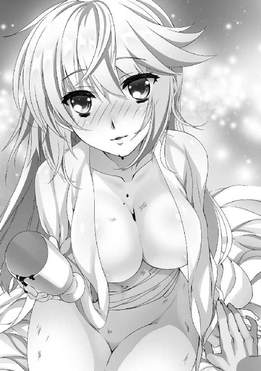
「馬鹿」
「......馬鹿かな」
「馬鹿に決まっているだろう。最悪の場合、おまえは何もかもを失うことになるぞ。ブリューヌに帰ったあとに得られるだろうものも含めてだ」
困ったようにくすんだ赤い髪をかきまわす恋人を睨みつけて、エレンは容赦なく言葉を投げつける。しかし、ティグルは引き下がらなかった。
「でも、こう言っては悪いが、これが最初で最後の機会なんだ。今度の一件がかたづいたら、エレンが言ったように俺はブリューヌへ帰還する。ジスタートにはそんなに来られない。何より、人目を盗んで君と会わないといけなくなるかもしれない」
「......しかし、ルスラン殿下だろうと、ユージェン卿だろうと、断るに決まっているぞ」
力説するティグルに、エレンは口をとがらせて反論する。エレンは戦姫だ。国王以外に膝をつく相手はなし、と言われる地位についているのである。他国の人間との結婚など認められるわけがなかった。
「断られるのは当然だろうな。そこからはじめるんだ。最善の道をさぐっていく」
エレンは言葉に詰まった。多くのものを手に入れながら、それらを失うことをティグルは恐れていない。ただ、自分を求めてくれている。頰が赤く染まり、目の端に涙がにじんだ。エレンはうつむいて、ティグルの胸元に顔を埋める。
ティグルは、エレンを優しく抱きしめた。
二人はしばらくの間、そうしていた。
◎
夜空を背に、三日月が冷たく輝いている。
ティグルがひとつの決意を恋人に語っていたころ、ソフィーヤ＝オベルタスは、ライトメリッツ軍の幕営の外を歩いていた。ひとりで考えごとをしたかったのだ。
自分たちが竜具を使えないという情報を、どう扱うか。いくつか案は思い浮かぶが、どのような案にも長所と短所があるように思えて、彼女でもなかなか判断がつかなかった。
この幕営のまわりは草原が広がっており、村や集落などは近くにない。冬の風が吹き抜けると、丈の短い草がかすかにざわめいた。自分を抱きしめるように、金髪の戦姫は両腕を抱える。竜具の力がないと、冬はここまで寒いものだったろうか。
──風邪を引く前に、戻りましょうか。
そう考えて、踵を返しかけたときだった。暗がりの奥に何者かの気配を感じて、ソフィーは身がまえつつ振り返る。緑柱石の色の瞳に緊張を湛えて、暗がりを見据えた。
「──見つかってしまいましたか」
草を踏む音がして、親しげな声とともにひとりの美女が現れる。青みがかった黒髪と、薔薇をあしらった純白のドレス。そして、肩に担いだ漆黒と深紅の大鎌。
『虚影の幻姫』ヴァレンティナ＝グリンカ＝エステスだった。
一歩、二歩と後ずさりながら、ソフィーは思案する。竜具を呼びだすことはできない。大声を出して相手を警戒させ、幕営まで逃げきることはできるだろうか。エレンたちや、兵たちが、自分の声を聞いてどれぐらいで駆けつけてくれるか。
「なぜ、竜具を用意しないのですか？」
ヴァレンティナが言い終える前に、ソフィーは幕営に向かって駆けだそうとした。
だが、それより先に、彼女の左肩から右の脇腹にかけて斜めに熱が走る。噴きだした鮮血が、白と緑の絹服を赤く染めた。
愕然とした表情で、ソフィーは倒れた。
離れたところで、誰かの声が聞こえたような気がした。ヴァレンティナは大鎌についた血を振り払い、無表情で金髪の戦姫を見下ろしている。
（続く）
あとがき
こんにちは、川口士です。『魔弾の王と戦姫』十七巻をお届けします。完結までいよいよあと一冊......はい、すみません。十五巻ではあと二冊、十六巻ではあと一冊と謳っておきながら、完結に至りませんでした。次の十八巻で本当に完結となります。
それでは謝辞を。編集のＮさん、ぎりぎりもぎりぎりまでつきあわせてしまって、今回もまた本当にお世話になり、お手数をおかけしました。
片桐雛太さん。格好良く可愛いオルガをありがとうございました。これまでにもオルガは何度か描いていただいていたんですが、当初の予定では表紙を飾れると思っていなかったんですね。戦士らしいこの子を読者の皆様にも見ていただくことができてよかったと思っています。それから集合絵はやはりいいですね。
最後に、本作が書店などへ運ばれるまでの工程に関わった皆様、本作を待ってくださっていた皆様。本当にありがとうございます。長い旅路も、もうすぐです。
それでは、最終巻でまたお目にかかれますように。
川口 士
著者
川口士（かわぐち・つかさ）
１９７９年生まれ。２００６年、第18回富士見ファンタジア長編小説大賞にて『戦鬼』で大賞を受賞。
その後、いろいろなところでいろいろ書く。
前巻で「次で終わる」などと言いましたが、予定より１冊増えまして、この次の巻で完結する運びとなりました。ゴールは見えてるんだけど、思ったより道が険しかったというかね。うん、ごめんなさい。たいへん恐縮ですが、もう少しだけ彼らの旅におつきあいいただければと思います。
イラストレーター
片桐雛太（かたぎり・ひなた）
オルガが表紙を飾り少し肩の荷が下りたような気持ちになりました。かわいい案とかっこいい案でかっこいい案が採用に。ちっちゃい＋巨大鈍器＝かっこいいの法則。刺さるかわいさは凶器。目指したい。
カバー・口絵・本文イラスト／片桐雛太
装丁／伸童舎
魔弾の王と戦姫17
川口 士
2017年7月25日 発行
(C)Tsukasa Kawaguchi 2017
本電子書籍は下記にもとづいて制作しました
ＭＦ文庫Ｊ『魔弾の王と戦姫17』
2017年7月25日初版第一刷発行
発行者 三坂泰二
発行 株式会社ＫＡＤＯＫＡＷＡ
〒102-8177 東京都千代田区富士見2-13-3
メディアファクトリー カスタマーサポート
［WEB］http://mediafactory.jp/
（「お問い合わせ」へお進みください）